| 酷幻想をアイテムチートで生き抜く 1 | |
| 風来山 | |
| (2015) | |
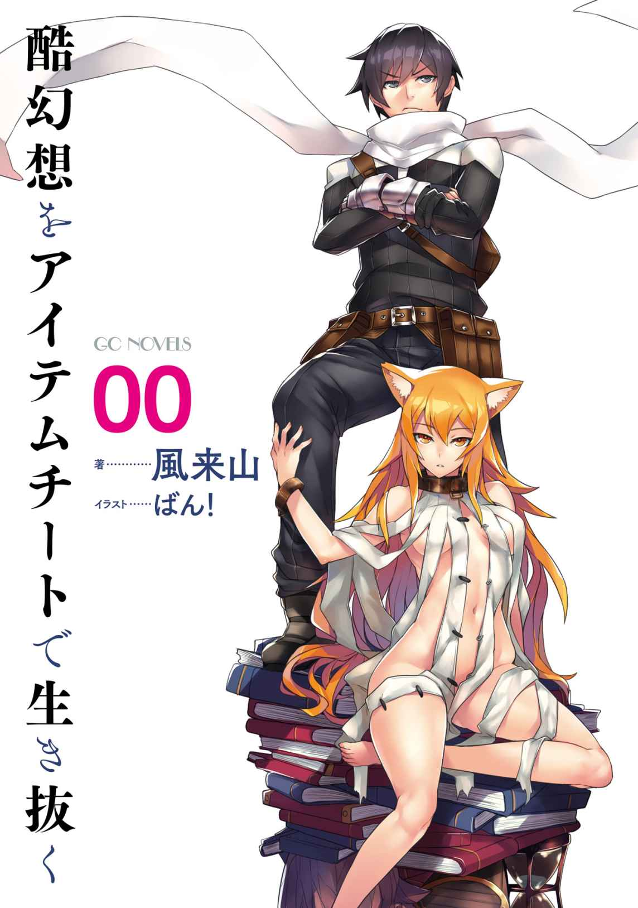
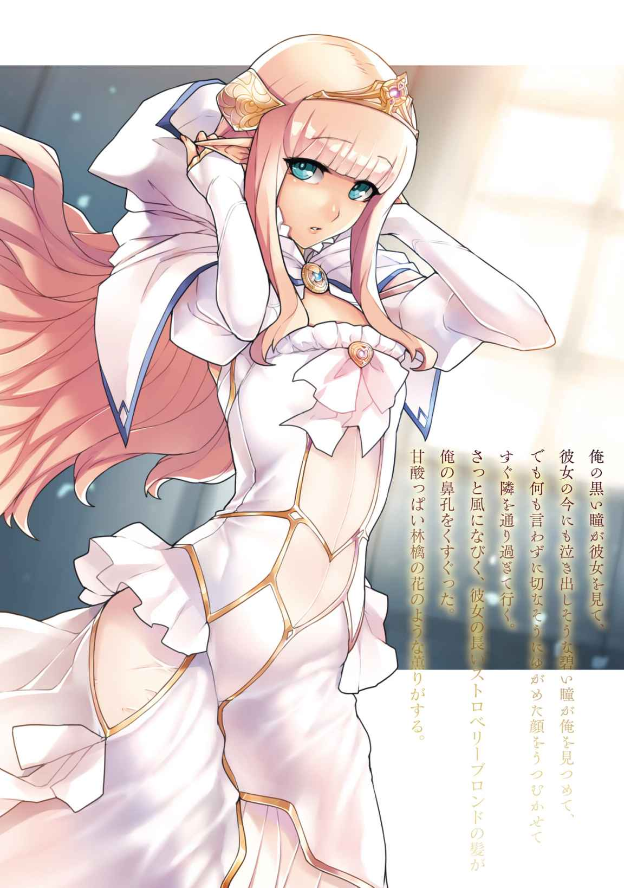
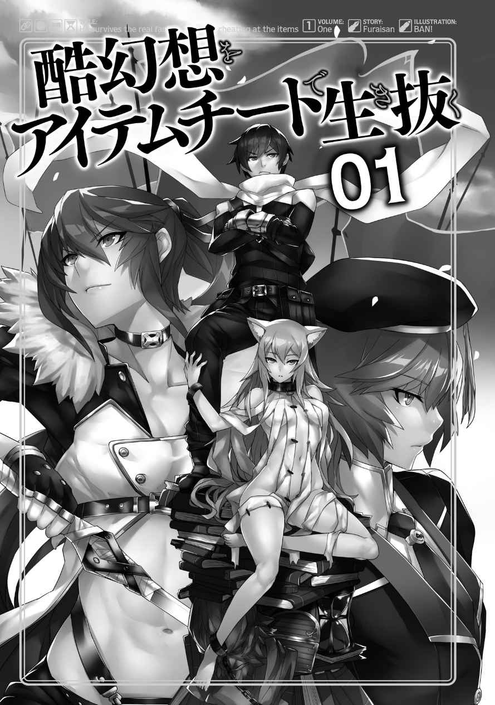
※本作品の全部あるいは一部を無断で複製・転載・配信・送信・放送したり、ホームページ上に転載することを禁止します。
本作品の内容を無断で改変、改ざん等を行うことも禁止します。
また、有償・無償にかかわらず本作品を第三者に譲渡することはできません。
※本作品を示すサムネイル等のイメージ画像は、再ダウンロード時に予告なく変更される場合があります。
※本作品は縦書きでレイアウトされています。
また、ご覧になるリーディングシステムにより、表示される文面・画面に差異が生じる場合があります。
※本作品を電子書籍版に収録するにあたり、一部、漢字が簡略体で表記されている場合があります。
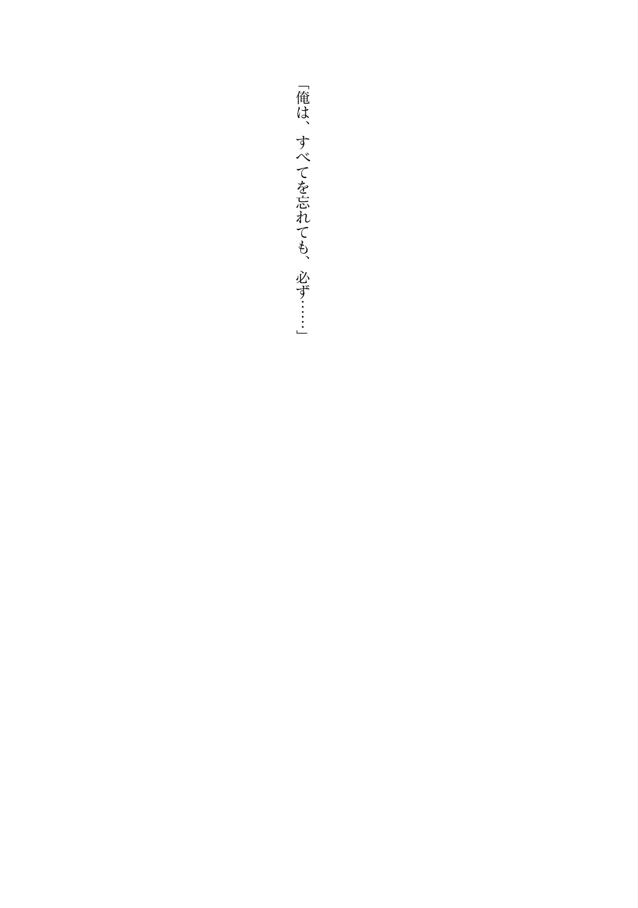
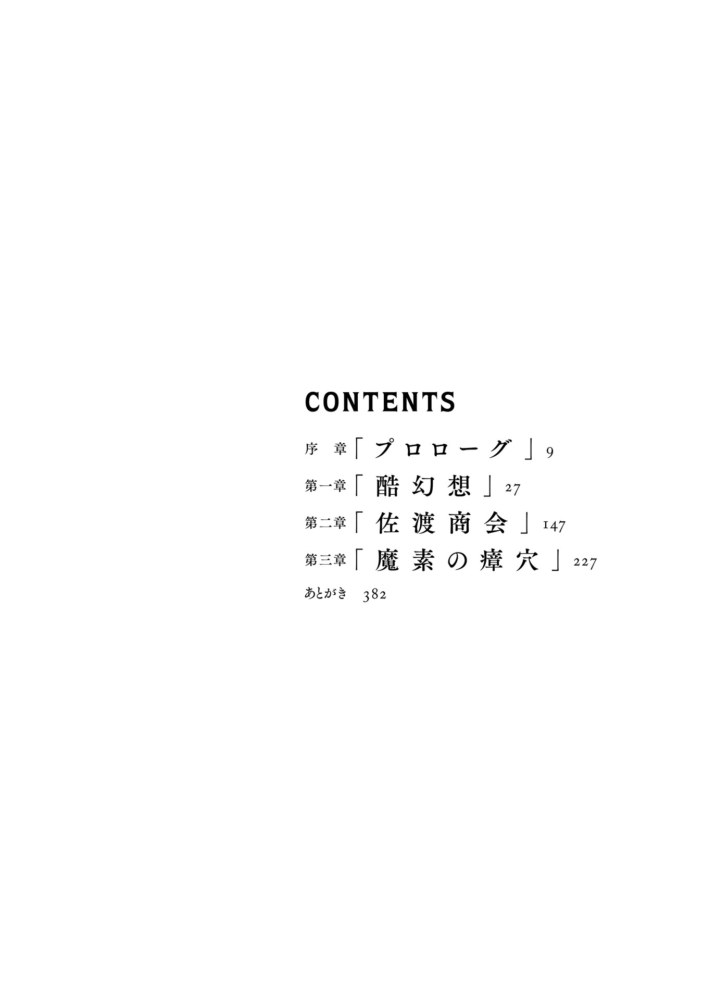
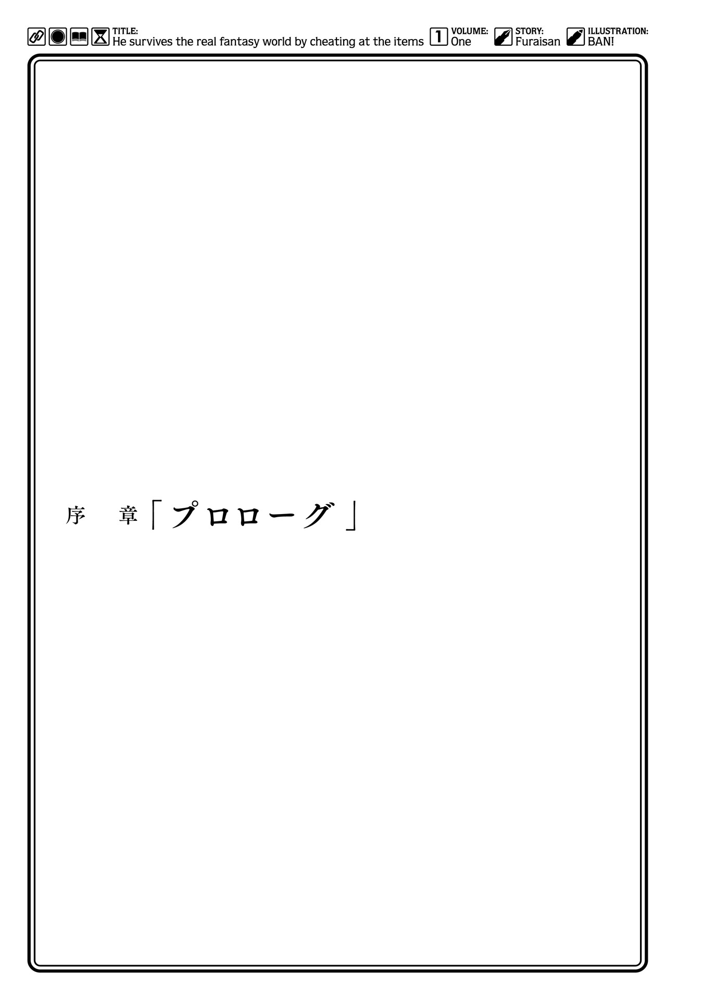
序章 「プロローグ」
「うあああっ、死ぬっ！ 殺されるっ！」
一体、何なんだよこれはぁぁ！
気がついたら、俺は野っ原で寝ていて、起き上がった直後、忽然と現れた野犬の群れに襲われた。
無茶苦茶な展開すぎるだろ。
しかも出てきたのは、ただの野犬どころではない迫力を持つ猛犬。ピンと尖った耳、鋭い眼光、ドーベルマンか？
それにしちゃ毛が長いし茶色いし、あり得ないぐらいサイズがデカイ、全長一メートルは超えている超大型犬だ。肩のあたりの筋肉の盛り上がりは、野性味あふれすぎてる。牙の尖り方が尋常でなく、人喰い狼を彷彿とさせる。
これじゃ、まるで化物だ。
しかも一匹じゃなくて、集団に襲われたからもうどうしようもない。
逃げ回る時にたまたま手に触れた枯木を握りしめて、木刀代わりに振り回してみたものの、こんな武器で何とかなるわけもなく。
まごついている間に、十匹を超える数にすっかり囲まれてしまった。
「くそぉぉ！」
俺は、どうしようもなくなり意を決した。勇気を振り絞ってというより、追い詰められた恐怖に耐え切れなくなって、悲鳴に近い雄叫びをあげながら、手近な犬に殴りかかった。意外にも、俺が長い枯木を振り回しながら進むと、さっと犬は引いて囲みが解けた。
よししめた、そう思って俺は脱兎のごとく駆ける。
だがそれは、犬どもの罠だったのだ。しばらく追走されて、俺がヘトヘトに疲れたところを後ろからザックリと噛みつかれてしまった。
「ああっ！」
足を引っ張る重さから、足首に噛みつかれたのがわかる。鋭い牙が深々と肉に突き刺さっているのに、なぜか痛みは感じない。
心臓が破裂しそうなほど高鳴っているのに、俺の脳はやけに冷静に事態を把握している。犬に喰いつかれた傷は強く熱を持っているが、ジーパンの生地が厚いことも幸いして骨にまでは達していない。
傷よりも問題なのは、犬の牙が足首の肉に食い込んで、引っ張っても離れなかったこと。
そのせいで俺は、疾走する勢いのままにバランスを崩し、前のめりに転がる。
ぐるっと世界が一回転して、ドスーンと地面に着地。
仰向けに寝そべった俺の眼に、青い空が見える。時間の感覚がやけに間延びしている。ドクンドクンと脈動する胸のリズムだけが、静かな世界に響いていた。
死に際して世界がスローになるって、本当にある現象だったんだなと思った。すると次に見えるのは走馬灯か。そんな事をのんきに考えてた俺の腹の上に、ドスンッとデカイ犬の重たい身体が降ってきた。
足首を噛まれたときは、全く痛みを感じなかったのに、胸の上に犬が飛びかかってきたら重たくて、気絶しそうなほど痛かった。クソッふざけるな、肋骨が何本か折れたかもしれない、でも犬はふざけて飛びかかったわけではない。
骨が折れるどころではなくて、これから俺は犬に全身を噛み砕かれて殺されるのだ。それはすごく怖いし嫌だ。
犬は、情け容赦なく俺の顔に喰らいつこうと、大きな顎門を開いた。
「ああっ」と、俺の情けない声が息とともに吐き出される。
時間がさらにゆっくりとスローモーションになっている。研ぎ澄まされた感覚は、俺に、ただ犬の真っ赤な口の中を眺めさせてくれるだけで、何かが出来るわけじゃない。
白くて鋭い牙がたくさん生えていて、あっ、こいつ奥歯が黒く虫歯になって欠けてやがる。
ハハッ、死ぬ前に最後にみる光景が犬の虫歯かよと思ったら、なんだか笑えてきた。
これからデカイ犬に食い千切られるのに、こんなことで笑ってるなんて、俺はもう気が狂ってしまったのかもしれない。
ああっ、このまま自分が喰われていく瞬間なんて見たくない。悪い夢だったらいいなと思って、俺は諦めて瞑目した。
──ザシュ
ドサッと崩れ落ちる音がして、俺の身体から犬の重みが消えた。
ああ、これもう死んだか。
痛いのは嫌だなーと思ってたけど、死ぬのはそれほど痛くないらしい。それだけは良かった。
それにしたって、何も感じないのはおかしい。まさか本当にぜんぶ夢だったってことはないよな、そう思ってそっと眼を開けてみると、俺の視界には生い茂る草の緑と空の青が広がっていた。
まるで空色の絵の具を塗り込めたような濃青色、こんな綺麗な青空見たことがない。うっすらとかかる白い雲に、やけに大きな月が透けて見えるのが美しい。俺はまだ生きている。
そういや、ここはどこだっけ。そう聞いても、答えは返ってこない。
どこか寝ぼけたような俺の意識は、強烈な痛みによって無理やり覚醒させられた。
「イタッ、つかっ、すげぇ痛あぁぁいッ！」
さっき噛まれた足首の痛みに震え上がった。耐え切れずに起き上がると、そこは血の海だった。
悲鳴を上げるのも、ぱっくりと傷口が開いた足首をかばうのも忘れて、呆然とそのスプラッターな惨状を見つめてしまう。
もう色々ありすぎて、俺の思考回路はショートしている。
刃物で斬り刻まれて血だらけのデカイ犬の死体がそこらへんにたくさん転がっている。死体というより、もはや肉片になっている物すらある。
ハッとして、自分の手を見ると俺の手も身体も赤黒い血に染まっていた。俺の血......ではなくて、俺の横で死んでいる犬の返り血。
俺の身体にのしかかって噛みつこうとしていた犬は、ナイフが突き刺さって頭がパックリと割れてピンク色の脳みそが溢れていた。もちろん完全に息の音が止まっている。
そして、ちょっと離れた場所で、完全に腹を見せて降伏している犬っころの最後の一匹に、大ぶりの直刀を突き刺している女戦士を見つけた。
キュイーンと、やけに軽い犬の絶命の悲鳴が響き渡った。
さっきまで、俺をぶっ殺そうとしていたデカイ犬の群れを、この女戦士がみんな殺ったのか。
「大丈夫か？」
「はあ、まあ......なんとか」
分厚い革のジャケットを着て黒いファスティアン（分厚い綿布で安物のジーンズみたいな服）のズボンを穿いている軽装な女戦士だ。戦士にしては軽装だが、動きやすさを重視する装備なのだろう。鈍い輝きを放つ無骨なデザインの直刀を無造作に振るう手つきをみれば、単純に強いなと分かる。
と、そこまで考えて......普通に受け入れてしまったけど、女戦士ってなんだよ。
西洋風ＲＰＧのコスプレか？ いや、そんなバカなツッコミはないよな。さっき、犬の群れを直刀で突き殺すのを見ている。
革鎧も、直刀やナイフも、全部本物だ。だとするとこれは......。
「どうした、私の顔はそんなに珍しいか」
「いえっ、そんなことは......」
肩まで伸びた血の色より鮮やかな紅い髪を、ポニーテールに無造作に括って高い位置で揺らしている。ガタイは女性にしては大柄、鍛えぬかれた肉体は抜き身の刃のように細くてスタイルが良かった。
明らかに西洋人であろう彫りの深い顔立ちは、日本人の俺にはすごく美形に見える。歳の頃は、二十代の中盤ぐらいか。
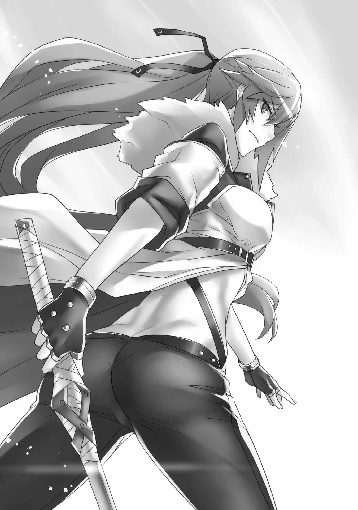
すげえ美人のお姉さんだと、普段の俺なら鼻息荒くしていたかもしれない。あるいは今のテンションなら「お綺麗です」なんてお世辞を言えたかもしれない。
彼女の顔や身体が犬を斬りまくった返り血で汚れておらず、抜き身の得物を手にして居なければの話だ。
助けてもらって言うのも悪いけど、鮮血に染まった凄惨な姿は、襲ってきた犬より怖い。
「立てるか」
「大丈夫......、ツッ」
ヤバイ、犬に噛まれた足首がめっちゃ痛くなってきてる。
ジーパンの分厚い布がビリビリに破れて、血がズボンの上にジワーと広がってきてる。
かなり傷が深く血が止まらないようだ。裂けた肉を見ただけで、気分が悪くなってきた。
「私でも手当ぐらいならできるが、この傷はもう回復ポーションを使ったほうがいいか」
「回復ポーション？」
ビックリする俺に、何を驚いているんだと笑って、戦闘前に投げ捨てたらしいリュックサックを拾ってくる。戦士のお姉さんは、その袋の中から青い色の薬瓶を取り出すと、俺に渡してくれた。
回復ポーションって初めて見たよ。ファンタジーだよ。からかわれているわけじゃないよね。
「どうした、遠慮せずに飲め、元気になるぞ。その足じゃお前は動けないだろうし、ここから街までは結構あるからな」
「ありがとうございます」
それだけ言うとお姉さんは、ナイフを取り出して黙々と転がっている犬の死体を解体する作業にかかりだした。
俺は、少しためらいつつも、もらった青い液体を飲み干す。
少しほろ苦い味がして、身体に薬効が広がる。
破れたジーパンの裾は戻らないが、深い傷口はほとんど塞がっていた。命は助かったし、ホッと一息もつけたけど。
次々に殺した犬の腹を切り裂いては、ホカホカと湯気を立てている内臓を取り出しているお姉さんを見て、俺はだんだんと絶望的な気持ちになっていた。
もうここが日本のどっかの田舎だなんて勘違いはしない。
地球上では見たことない、凶暴なデカイ犬の化物。それを鮮やかに殺して見せた女戦士。そして、傷を治す回復ポーション。
これは、本格的にファンタジー世界だぞ。しかも、よりにもよってとびきり残酷でリアルなやつだ。
●
日本で平凡な大学生をやっていたはずの俺が、気がついたら異世界ファンタジー世界に飛ばされていた。
俗に言う、異世界トリップ。とりあえず、この世界を酷幻想と名づけてみる。
隠れオタクである俺は、幻想物語にはちょっと詳しい。
この手の古典については、指輪をめぐる戦争から始まって、呪われた島の戦記までしっかり読み込んでいる。近年の異世界ファンタジーも、召喚、転生、転移の別け隔てなくきちんと予習済み。
使い魔として召喚されたり、ゲーム世界に飛ばされたり、変わったところでは、ＶＲＭＭＯに閉じ込められて仮想世界から出られなくなった近未来ＳＦファンタジーなんてのもある。そこら辺は数え上げると切りがないが、ラノベ読みとしての知識を駆使して、現状を断定する。
これはゲーム世界でも、お手軽ファンタジーでもなく、古典的なハイファンタジーの世界だと！
これがゲームの世界なら、お姉さんに斬り殺された犬型モンスターは、一瞬で『野犬の肉』とか、『野犬の皮』とか、ドロップアイテムに変わっていたはずだ。
そうだったら、どれほど良かったことか。
しかし、眼の前には真っ赤な血の海が広がり、戦士のお姉さんに内臓を取り出されて皮を剥がれている犬の死体は、吐き気を催すほどリアルでグロテスクな有様を晒している。
つまりこれは、分かりやすいレベル制とか、便利な魔法とか、ご都合主義なプレイヤーチートとか、お手軽ファンタジーに有りがちな救済は期待できないってことを意味する。
むしろ、油断すると一瞬で死ぬ。
厳しい世界なのだ。
しかも、死ぬときは絶対めちゃくちゃ痛い。
さっきのデカイ犬に噛まれた傷の恐ろしい痛みを思い出すと、二度と嫌だった。
もうお腹痛くなってきた、早くおうちに帰りたい......どうやったら帰れるんだこれ。
「暇なら、薪に使う枝を集めてきてくれないか」
動物の解体などとても手伝えない俺に、お姉さんが気を使ってくれたのか、そう提案してくれた。
グロい解体シーンを手持ち無沙汰に眺めているより、薪を拾い集めたほうがよっぽど気が楽だった。
「あー、マジでどうしよう」
俺はブツブツと呟きながら、枯れ木を握りしめた手で頭をかかえる。
犬に襲われて死にかけたことでわかるが、現代っ子の俺にはこの酷幻想を生き抜く力がない。
こういう異世界トリップ物って普通は、主人公が異世界に召喚された勇者だとかなんとかで、不思議な力に目覚めて雑魚モンスターとか、バシバシぶっ殺してレベル上げできるもんだろ。
しかし、モンスターを殺すどころか、その死体を肉と皮に変える知識と経験すらないという情けない現実に直面してしまうと、そんなノンキなことは言っていられない。
「いやー、犬の内臓グロすぎ。無理だわ」
ファンタジー小説には、そんな描写一切なかった。
確かにマニアックなゲームでは、動物の解体スキルなんてのもあった。ご丁寧に生きてる間に血抜きするだの、筋に沿ってナイフを通すだの、解剖図まで載せて。
理論的には簡単なんだよな。解剖学の知識通りにナイフを入れて、はらわたを取り出すだけだ。
素人の俺だって、何度かやって習熟すれば、女戦士のお姉さんのような真似ができるかもしれない。
しかし、『物理的に』解体できることと、『気持ち的に』解体できることは全然違う。
現代っ子の俺にとって、肉は加工済みでスーパーに並んでるものだ。
生き残るためにあんな血みどろサバイバルが必要なら、冒険者とか狩人とか、俺は絶対やりたくない。
そんな俺の気持ちを知ってか知らずか、女戦士のお姉さんは俺の拾ってきた薪に火をつけると、嬉しそうに犬の内臓をフライパンで焼き始めた。
「クレイジードッグの肉は後からでも食えるし、干し肉にもできるんだけど、肝はすぐ傷んじゃうから、狩った時にしか食えないんだよ。ウメエぞ」
「はぁ......」
犬の内臓を食えと勧められた。
確かにお腹は減っている、ジュージューと焼ける音は食欲をそそるし、美味しそうな脂の焦げた香りも漂ってきた。
木の皿に盛られた湯気の立つモツを、俺は思い切って食ってみた。
「うまい......」
「だろ！ いくらでもあるから食え食え」
これは驚いた、内臓は苦いというイメージがあったが、全然そんなことはない。
むしろ舌に甘いと感じる。甘いは、うまいのだ。
新鮮なクレイジードッグのホルモンは、柔らかいのに適度な歯ごたえもあり、濃厚な脂の旨みがあるのに喉をスルリと通っていく感じでいくらでも食えた。
肉のほうは干して売るという話だが、ちょっとだけ食わせてもらうと、淡白な味でとても美味しかった。
ひと心地ついた俺は遅ればせながら、助けてもらい食事までいただいたお礼を述べる。
焚き火を囲み、一緒に飯を食べていれば、自然と会話は弾むもので、自然とお姉さんと仲良くなっていた。
彼女の名前は、ルイーズ・カールソン。
ルイーズというと、どこぞの物凄く名前が長ったらしい公爵家の姫君を連想させ、思わず彼女もお嬢様じゃないかと聞いてしまったのだが、「まさか」と一笑に付された。
ルイズもルイーズも、この地方ではごくありふれた名前らしい。
日本で言えば花子みたいなものか。花子なんて名前の人は今いないだろうが、見たところ中世ファンタジーの世界だし、古風で当たり前だ。
ルイーズは、冒険者稼業をしているらしい。近くの農家に頼まれて、村の郊外で増えてしまったモンスターを退治して廻っていたそうだ。そんな話を聞くと、本当にファンタジー世界なんだなと改めて感じる。
いきなりモンスターに襲われたのは不運だったが、やたらと強く善良なルイーズが通りかかってくれたのは不幸中の幸いだった。
戦士であるルイーズは、さっきは直刀を使っていたが得物はなんでも使えるし、騎馬に乗って戦うこともできるそうだ。ちなみに彼女の年齢は、二十四歳。
俺が二十一歳だから、三歳年上か。
「大ありだな......」
「なにがありなんだ？」
思わず口に出てしまった。不思議そうにルイーズは小首を傾げている。こう和やかに食事をしていれば、焚き火の明かりに照らされるルイーズの赤い髪に、茜色の瞳はとても綺麗なものだと感じる。第一印象が猛々しくて引いてしまった感があるが、ルイーズはよくよく見れば、俺の好みにジャストミートなお姉さんタイプであり、すごく『あり』である。まあ、俺が『あり』でも向こうが『なし』か。
それに、今は女にうつつを抜かしている場合でもない。
「ところで、青年。そろそろ名前を教えてもらってもいいか」
そういえば、俺の自己紹介がまだだった。
「俺の名前は、佐渡タケルです。二十一歳、大学生です」
工学部の学生だった。そこそこにいい大学だったんだが、この酷幻想では何の意味もないか。
「そのダイガクセイってのは、何の職業なんだ」
「えっと、なんでしょうね......」
学生の肩書きは、この西洋風の異世界では通用しないだろう。
とするとなんだ、無職になるのか。無職ニートなのか。そりゃ、俺は軽度のコミュ障で就職ヤバかったから、そうなる危険性も考慮はしていたが、一気に学生から無職に降格とはな。
俺がぜひ希望したいところの『職業：異世界勇者』になるのも無理っぽいし、何かまともな職業を見つけないといけないわけだ。
ルイーズは無愛想な見かけによらず、実はたいそう親切な人みたいだから、俺に向いてる仕事がないかどうか聞いてみると、まず彼女のような冒険者だけはやっちゃダメだと言われた。
美しい女戦士に旅の仲間に誘われるなんて、美味しい展開はないわけだ。
「お前は弱い、クレイジードッグにも勝てないお前の腕だと、経験を積む前に死ぬ」
「はい......」
ルイーズ様のおっしゃるとおりでございますね。現実を突きつけられるなあコンチクショウ。本当に、ファンタジー世界なのかここは、扱い酷すぎるだろ。血も涙も無いどころか、初っ端から血だらけなのが余計に嫌な感じである。
「仕事が無いなら、うーん。知り合いの農家に手伝いの口でも利いてやろうか」
「それ、是非お願いします！」
異世界まで来て農家でバイトかと思うが、背に腹は代えられない。
ルイーズのように冒険者ができるかといえば、さっき殺されかけたことを考えると絶対無理だ。思い出すだけで、恐怖に身が震える。
たった一人で、あんな凶暴なモンスターの群れを倒したルイーズはすごいよね。
まあ、ルイーズは強いから単独で冒険しても平気なのだろう。
それに比べて、俺は弱い。
文明が発展途上で、治安が悪い上に、獰猛なモンスターまでいるこの残酷な世界では一人で生きていけない。
これでも俺は隠れオタクだから、このような異世界転移に備えて（ってわけでもないけどさ）古流剣術の本とか、宮本武蔵さんの『五輪書』とか結構読み込んで、ジョギングしたり木刀を振るってみたこともあるんだが、いざ襲われたときに実戦では全く役に立たなかった。
ああ、なんだかまた暗くなってきたな。
とにかく犬の内臓でいいから、腹いっぱい食っておこう。
そして、皮と肉を村まで運ぶのを手伝ったら、ルイーズに土下座してでも、俺にできそうな仕事を斡旋してもらおう。
こうして、訳も分からず異世界に降り立った一日目。
犬に殺されかけた俺は、美しい女戦士に命を救われた。
俺を殺そうとした狂犬どもは、さらに強いルイーズに殺されて、美味しいお肉にされて命の糧となっている。
俺は、この残酷な弱肉強食の世界で、強く生きていかなければならない。いきなり死に直面した俺は、何としても生きていたいと強く思った。
この酷幻想を生き抜くこと。それが、今の俺が目指す唯一の目的だといえるだろう。今は弱いけど、せめて生き残れるぐらいには強くなりたいものだ。
後なんだろう、何か忘れているような気がする。
そもそも俺はどうやって異世界に来たのだろう。自分が生きていた現実世界がどのようなものだったかは、覚えているのだが、『何か大事なこと』がポッカリと抜け落ちている気がする。
それはもしかすると、俺が異世界転移してしまった原因なのかもしれないのに。
パチパチと揺らめくオレンジ色の焚き火を眺めて考えていたが、まったく思い出せない。
まあいいだろうと、満腹になった俺は、そのまま横になった。ルイーズもそうしているのだから真似して地面に寝そべってみたのだが、疲れていたせいか野宿でも割と眠れるものだ。
夢の中で、小さな女の子が泣いていた。その子は、俺にとって命に代えても助けたい、とても大切な存在だった。
俺は必死に手を伸ばすのだけど、俺の手はどうしても彼女に届かない。なぜなら、絶対に届かないところに居るからだ。だから俺は......
目を覚ました時、助けられなかった悲しい気持ちだけが、ずっとお腹の底に溜まったように残っていた。
俺が、この酷幻想にやってきた意味は、何かあるのだろうか。
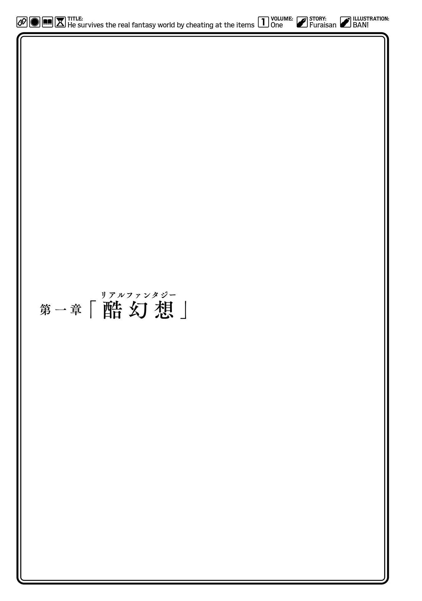
第一章 「酷幻想」
現代日本から、異世界の片田舎ロスゴー村に転移して一週間が過ぎた。農家の仕事に疲れ切った俺は、すっかり腐っていた。
「あー、ちくしょうなんで水道がねーんだよ」
俺は、朝も早くから、遠くの井戸で水を汲んで農家の納屋に何度も往復して水を運ぶ。
中世では農機具代わりにもなる牛たちの世話が、今の俺の仕事だからだ。
牛たちの飲水の補充が終わったら、今度は餌である。
飼い葉桶に、干し草をたっぷり盛ってやる。
先に家畜たちに餌をやってからでないと食事が貰えないことが、俺の地位を表していると言える。つまり、家畜以下である。
俺が餌をやるのを知っているから、「ウモー」と牛たちは喜んでくれる。
世話をしているとだんだんと情が移ってくるし、可愛らしいと言えるのだが、労働が厳しいのでかまっている余裕はないのだ。
だからペロペロと舐めるな。
俺は牛のタンを食うのは好きだけど、牛の舌で舐められるのは好きじゃないんだぞ。
「はぁ......まったく」
疲労につぐ疲労。
筋肉痛につぐ筋肉痛。
この農家、ロッド家に住み込みのアルバイトとして雇われたのは、ルイーズの口利きのおかげだった。
無能な俺でも、農家の手伝いなら何とかできるので、ありがたいとは言えるんだけど一週間でヘトヘトに疲れてしまった。
しかも、俺は農夫で雇われたはずなのに、なんだか延々と酪農家みたいな仕事をさせられているのも疑問に思う。
この村でも有数の豊かな農家であるロッド家では、牛の他にも豚やら馬やら飼ってる。酪農家ではないようだから、農作業に使う家畜なんだろうけど。
いやいや待てよ、俺はもともと農夫にも酪農家にもなりたかったわけじゃない。異世界トリップしてきた人間が、こんな地味な仕事してるって何か間違ってるような気がする。
そんな不満が出てくるのも、仕事が厳しすぎるからだ。しばらく続けていれば激しい肉体労働にも慣れるかと思ったら、慣れないんだよなこれが。筋肉痛に筋肉痛が重なるからいつまで経っても身体は痛いままだ。
明らかにオーバーワークだ。中世ファンタジーに労基局は存在しないから文句を言ってもしょうがないけど。
これでも農家のご主人様に言わすと、まだ農繁期じゃないから暇なほうらしいんだぜ。
仕事がキツイって文句が言いにくいのは、農家のご主人も奥さんも、まだ小さい娘さんまで俺より多くの仕事量こなしてるからだ。
水汲みして薪割りするだけでも、すごい大変なんだな。
ファンタジー大好きだったけど、日常にこんな苦労があるなんて考えたこともなかったわ。
この酷幻想にやってきて一週間。村で様々なことを見聞きして、だんだんとこの異世界の事情が分かってきた。
俺がいるロスゴーという小さな村は、シレジエ王国のエスト伯爵の領地である。シレジエ王国は、ユーラ大陸の中ほどに位置する。地図が無いので断言はできないが、聞きかじった地方の話と気候から考えて、元の世界で言えば大雑把に言って中部フランス辺りだろう。
そして、理想とは程遠いが、このファンタジー世界にも現代科学の代わりに魔法は存在する。
しかし魔法が使えるのは、生まれつき魔法力を持った魔術師と呼ばれる特殊な人達だけで、その数少ない魔術師は、冒険者として名を馳せていなければ、たいてい貴族に仕えたり王国の役人になってるそうだ。
あとはアーサマ教会とか言う国教の神聖魔法を使える神官になるわけだけど、この人達もたいがいな権力者だよね。
つまり、一般庶民の生活は、魔法のない昔の時代と何も変わらないわけだ。
現代っ子の俺からしたら、この不便な世界で魔法も使わず普通に生きてる人たちの体力が、みんな怪力のチートスキル持ちに見えてくる。
これで忙しいと言われる農繁期が始まったらどうなっちゃうんだろ。
俺の腕、モゲちゃうかもしれないね。
「あーもうやってらんねえ」
俺は干し草の上に横になった。
干し草は、農家にはつきものの虫もついてないし、清潔で気持ちがいいんだ。ダラダラと、このまま寝てしまいたい。
そして仕事をサボって、農夫も首になるか。そしたら、こんな残酷な世界なんだから、村からも追い出されてあっという間に死ねるよな。
せっかくルイーズに助けて貰って生き延びたのに、俺はこんなことで死ぬのだろうか。
「いや、諦めたらそこでゲームセットだ」
俺は干し草の上から身を起こす。
好きな漫画のセリフで、萎えかけた心を奮い立たせる。
木の棒を拾って、地面に計画書を書き始めた。
紙も鉛筆もないからしょうがない。一人で愚痴っているより、こうして書いてみたほうが考えがまとまりやすい。
テーマは『現代知識を使ってなんとか金儲けしよう』である。よく考えたら、俺は工学部の学生だったんじゃないか。
例えば水道がないと嘆くより、原始的でもいいから水道を自作してみてはどうだ。
全部を自分で作るのは難しいけど、鍛冶屋さんとかに相談して、作れる人にアイデアを売るって手もある。
近くの川には、粉ひき用の水車もあるんだから、動力になる自然エネルギーは存在するわけで、水をポンプで引くってこともできるのではないか。
例えば井戸でも、手押しポンプを作れば簡単に水を汲める。それだけでも、だいぶ楽になるはずだろう。
俺があーでもないこーでもないと、悩んでいるところに金髪の女の子がやってきた。
「あー、タケルまたサボってる」
「いやいや、これはちょっと考え事をしてて」
この農家の娘のサラちゃんだ。
そんなに特別な美少女ってわけでもないが、サラちゃんはさらさらの金髪だし、エメラルドグリーンの眼は綺麗だし、ちっこくて十分可愛らしいので俺の疲れを癒やす目の保養になってくれている。
サラちゃんの服はケープやエプロンをつけた、ハイジみたいな民族衣装で、いかにも中世の村娘という風情。とても可愛らしいビジュアルなのだが、子供のくせに口うるさいのが玉に瑕。
いや、子供だから口うるさいのかな。どうやらこの家で、自分よりも目下の存在ができたことをすごく喜んで、得意げになっているようなのだ。
ぶっちゃけちょっとウザイ。
でも俺だってもう大人だから、年下の女の子に顎で使われても、目くじらたてないけどね。
ささやかな仕返しに心のなかで、さらさらの金髪だからサラちゃんって親に名付けられたんだろうと思っているのは内緒だ。
「あれ、タケルってしんせー文字書けるの？」
「そりゃ書けるよ、文字ぐらい......」
なんだかサラちゃんは、俺が土の上に書いた図面や文字を見て驚いている。
「すごい、しんせー文字が書けるなんて、タケルは文士様だったんだね！」
「......しんせー文字とか、文士って何のことだ」
サラちゃんに詳しく聞くと、俺が自然と書いている文字は神聖文字と呼ばれる公文書などに使われる上位文字に当たるそうだ。
そうか、これって『言語チート』かと俺は気がついた。
異世界転移して、言葉や文字が分からないとなると生活していけない。そのための救済措置として、現地語を理解できる能力が付与されることが多い。
何もできないと思ってたけど、こんな隠れたスキルが備わっていたなんて、あまりにも基本的すぎて気がつかなかった。
文字を自由に読み書きできることは、識字率の低いこの世界ではそれだけで立派な職業になるスキルであり、特に神聖文字まで書ける者は知識人階級として、文士様と呼ばれ尊敬される。
稼業が暇なときに、村の唯一の文士様から教えて貰っているサラちゃんでも、書けるのは下位文字までらしい。
どうも神聖文字はアーサマ教会などで世界的に使われてるらしいので、俺の元の世界で言うところのラテン語やギリシャ語に当たるようだ。
下位文字ってのが、英語とかフランス語とかの地方言語に当たるわけか。
試しにシレジエ王国で使われている下位文字が書けるかどうか、書いてみたら簡単に書くことができた。
不思議なものだ、頭では日本語を思い浮かべているだけなのに、多言語話者のように自然と翻訳して書くことができる。
日本語が使えなくなったのかと焦ったが、意識すればちゃんと漢字も書けたので安心した。たまに使わないと忘れてしまうかもしれない。
「すごいかしこーい、タケルは文士様なのになんで農家の下働きなんてやってんの。バカじゃないの？」
「バカなのか、賢いのかどっちなんだよ」
文士様なら、すぐ村役場で働けるから、こんな牛の糞の世話なんかやめてすぐにそっちにいけと言われた。
サラちゃんの先生が村役場にいて、紹介してくれるそうだ。
普通に日本から転移してきて言葉が通じていたから、この世界の文字を書けることが職に繋がるとは思っても見なかった。
教えてくれたサラちゃんには感謝したい。
しかし、農家の娘が農家の仕事を腐してどうするよサラちゃん。
●
俺は、お世話になったロッド家の皆さんに暇乞いをした。
ご苦労様ということで、この一週間働いたお給金をいただく。
ちなみに、この一週間分のお給金が俺の手のひらに載っているが、片銅貨七枚である。
片銅貨二枚で大銅貨一枚。
だいたい市場の物価から類推して、日本円に換算すると、片銅貨は一枚五十円ぐらいのものだから、いくら三食と住む場所がついてきたとはいえ、一週間必死に働いて三百五十円ぽっちという計算になる。
いくら農家が現金収入に乏しいとはいえ、この給金の劣悪さは酷すぎるだろう。
あまりにも安すぎる人件費。シレジエ王国には最低賃金法も、労基局も、存在しないのであった。
「いやあ、良かったわねえ他に仕事があって」
「はい、ありがとうございます」
そう言うとロッド家のおかみさんは、いかにもホッとしたという顔で俺を見送ってくれた。
言葉を濁していたが、どうやらロッド家が俺を雇ってくれていたのは、すっかりこの村の顔役になっている女戦士ルイーズへの義理立てだったようなのだ。
そうだよなあ。農繁期でもないのに、アルバイトとか雇わないよね。
一日片銅貨一枚の住み込み農家の手伝いとしても、俺の働きはぜんぜん不足していたようなのだ。
体よく追っ払われた形である。
こりゃ文士として通用しないと、本当にこの世界で生きていけない。
俺は危機感を新たにしつつ、サラちゃんに連れられて村役場まで来た。
「せんせー、文士様を連れてきたよ」
小さい商店や宿屋などが並ぶ、村の広場の一角にある村役場。
しっかりとした石造り。この村では一際立派な建物だった。きちんと『ロスゴー村役場』と表札までかかっている。
中に入ってみると、きちんとしたフローリング仕様。このロスゴー村では床が板間というだけで豪華な建物なのだ。
ちなみに大きな農園を持ちそこそこ豊かなロッド家でも、家の半分以上が土間だった。他にも石や漆喰の床なんてのもあるが、冬場に冷えるので藁を敷いておくそうだ。
板間ってだけでもかなりの贅沢なのである。
そんな村一番の豪華な建物だが、中には女性が一人いるだけだった。
うーん、女性だよね？
机に向かって書き物をしている人は、ピッチリとした男装をしていた。
現代なら事務員が着ているようなデザインの黒い背広にも見えないことはないが、そこまで機能的なデザインではない。
襟首までしっかりボタンを留めて、暑苦しいぐらいにベストもびっちりと着込んで、中世の貴族と、ジェントルマンの中間って感じの服装。
村人の粗末な服とは明らかに違う。宝石のような綺麗なボタンとか、美しい刺繍とか、縫製がしっかりしているところを見ると、この国の正装なのかもしれない。
村役場の職員さんなんだから、官服ってところかな。
ただ、そのようなフォーマルスーツを着込んでも、茶色で短髪の麗人は女性にしか見えなかった。
「男ですよ」
俺の視線で思っていることが分かってしまったのか、男装の美しい人は繊細な頬を上げて、鈴が鳴るような美声でそう言った。
すごい細い顎だ。モデルかよ、美人すぎるだろ。
自らを男性と称する役人さんは、歳は二十を超えているぐらいに見える。美少年なら、女の子に見えてもおかしくはないけど、大人の男が女性にしか見えないというのはありえない......ように思う。
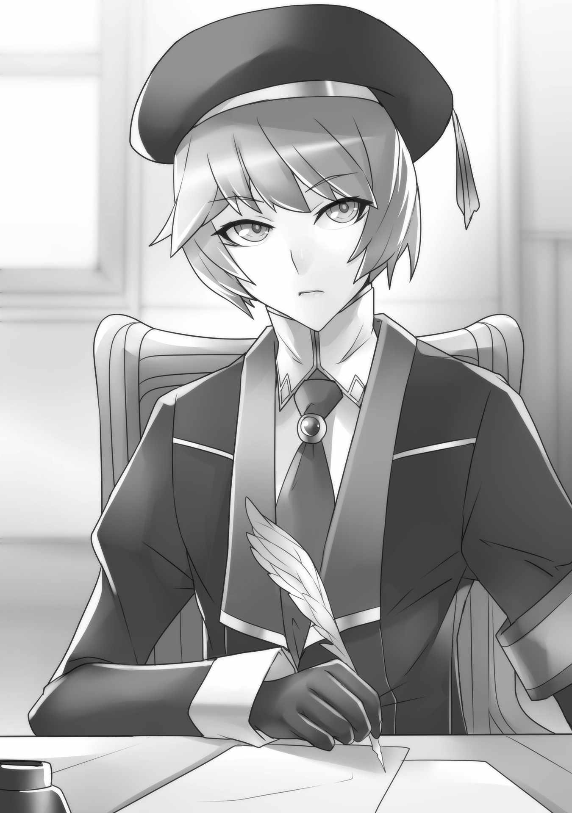
もちろんここはファンタジー世界だから、何があってもおかしくはないのだが。
「えっと、どうも。佐渡タケルと申します。お初にお目にかかります」
「ライル・ラエルティオスです。この地域の書記官を務めさせていただいております」
そんなことをしなくてもピッチリしているのだが、改めて襟元を正して丁寧に応対していただいた。
「書記官ですか？」
書記官というのは、どれぐらいの役職なのかな。
「はい。それと、そこのサラちゃんに文字を教えてる教師でもありますね」
「じゃあ、先生とお呼びしますね」
そう言うと、ライル先生は、ほんの少しだけ口角を上げた。
「あと、私は男ですから、くれぐれもお間違えなきようにお願いしますよ」
「はぁ......」
あまり何度も言われると、余計に信ぴょう性なくなるんだけど。
いくら白色人種と言っても、線が細すぎるし、肌がきめ細かすぎるだろ。美人すぎるのは、もしかしたらエルフなのか。
でも耳は尖ってないし、人間だよね。
生まれてから、一度も日に当たったことがないんじゃないかと思えるほど透き通った白い肌。どんな化粧水を使ってるのか、すごく聞いてみたいが......まあ止めておこう。
どんな事情か知らないが、本人が何度も男と主張しているのだ。変に混ぜっ返すと、機嫌を損ねるかもしれない。
このライル先生に、俺の生活がかかっているのだ。
「ライルせんせーはすごい偉いんだよ、王国のちゅうおーから派遣されている書記官で、ぶっちゃけ村長とか、せんせーに比べると雑魚だからね」
俺の横にいるサラちゃんは、そう自分のことのように自慢する。
「アハハッ、サラちゃん。それは言いすぎです」
初対面の俺にはやや硬い表情だが、教え子のサラちゃんには笑うんだな。
美人だなと思ったが、朗らかな笑顔も可愛いなと思う。
教え子のサラちゃんを窘めても強く否定しないところを見ると、書記官という職業が村長より偉いのは確かなのだろう。
よし権力者だな、思いっきりおもねるぞ。
「ライル書記官様、あの俺......いえ、わたくし文士には少々自信がありまして」
「はい、『文士に自信がある』という表現は聞いたことがありませんが、そこまでおっしゃるのでしたらちょっとテストしてみましょう」
さすが教師だ。すぐにテストだった。
サラちゃんもテストには苦い思い出があるらしく、俺がテストを受けているのを渋い顔で見ていた。
俺だってテストは大嫌いだが、もう牛の世話は懲り懲りだったので必死になって渡されたゴワゴワの紙に、書ける限りの文字を書き連ねた。
はい、鉛筆置いてー（鉛筆じゃなくて本当は羽根ペンだけどね）、書き取りテスト終了。
「ほう......、これは面白いですね。失礼ですが、お若い方がここまで書けるとは思いませんでした。神聖文字をどこで習われたんですか」
「あの、どうもどこからか飛ばされてきたようなんですが、記憶が無くて」
異世界から来たと言っても信じてもらえないだろうと思って、俺はとりあえず記憶喪失を装うことにした。
これは異世界モノのセオリーでもある。
安易に本当のことを言っても、気狂い扱いされかねないのだ。用心深く行かないとね。
「ほうっ、タケル殿は迷い人ですか。これは実に珍しい。道理で、聞きなれぬ東方風のお名前だと思いましたよ」
「あの迷い人ってのは何でしょう」
まさか普通に道に迷った人って意味ではあるまい。
「迷い人とは、考えられないほど遠方から飛ばされてくる人のことです。召喚魔法や空間転移魔法の暴発が原因ではないかと言われていますが、詳しい理屈はまだ分かっていません」
「詳しいことは、わからないんですか」
しかし、召喚や転移の魔法が存在すると知れたのは収穫だった。
「転移や召喚自体が、稀有な魔法ですからね。その暴走ともなれば、本当にごく稀な現象です。聞くところ、飛ばされる際に記憶が混濁したり喪失したり、不思議な知識を得る人もいるそうですが、そこまでいくと原因を探るのも難しいですね」
「そうなんですか......お詳しいですね」
聞くと、魔法に造詣の深いライル先生は、自身も中級魔術師であるそうだ。いや、サラちゃんがすごい偉いと言うはずである。
俺は、すっかりその博識に感銘を受けてしまった。
もっとも先生の話だと、一般的には迷い人が異世界転移してきた者とは考えられていないようだが。ともかく、そのことが事実ならば異世界に送られたのは俺だけではないと推察できる。
「あのライル先生お願いします、どうか俺を雇ってください」
この機会を逃してはいけない。
何としても先生に教えを乞わねば。
「村役場は私一人でも十分に仕事が回ってるんですが、タケル殿は貴重な迷い人ですからね......。せっかくの文士仲間でもありますから、書記官補に任じましょう」
「ありがとうございます」
そんな西部劇の保安官が流れ者のガンマンを保安官助手に雇うみたいな軽い感じで、書記の補佐に任ぜられてしまった。
こっちが内心ドッキドキである。なんか話を詳しく聞いてみると書記官って、保安官どころの地位ではない。村役人とかじゃなくて、その役割は言うなれば国家公務員だ。
単なる補佐とはいえ、書記官補も立派な官僚となる。その場で勝手に任命とか、行政組織としてありなんだろうか。
こんな辺鄙な村の役場に居る人なのに、ライル書記官はいくらなんでも権限ありすぎるんじゃないだろうか。
一体、どういう人なのだろう。
●
書記官補の仕事は、かなり退屈だった。
俺はライル書記官の補佐であり、公文書の作成や細々とした報告書の清書に当たるのだが、その量ってのは大したことはない。
ロスゴーの村はイエ山脈の裾野にある、たかだか人口二百人程度の集落だ。
村はずれに国が管理する小さい鉄鉱山もあるが、そこに住んでる鉱山労働者や鍛冶屋、あるいはルイーズのような流れ者の冒険者を含めても三百人に満たない。
本当に小さな箱庭のような村だ。
そんな村の公文書を作成するといっても、たかが知れている。
ライル先生が、暇を持て余して子供の家庭教師をするのも分かるというものだった。
しかし、そんな退屈な文書作成の仕事にも特典がある。
国王や領主への報告書をいろいろと調べて書くうちに、俺はようやくこのロスゴーの村の地理や特色を知ることができた。
ものすごい辺鄙な田舎だなと思ったが、地理を調べてみると、村から王都への距離は、乗合馬車で四日程度なのでそこまで遠くない。
いずれは、王都シレジエにも行ってみたい。
しかし、それより気になったのが......。
「ライル書記官、うちの村には温泉があるんですね」
風呂好きの日本人としては、見逃せない話だ。
「温泉に入りたいなら、スコップで掘らなきゃいけませんけどね」
何でも、お湯が湧いているというような便利なものではなくて、村はずれの小さな河沿いにお湯が湧き出しているところがあって、入りたいならそこをスコップで掘ってお風呂を作るらしい。
なんか変わっている。河原の野湯といった風情なのかな。
「じゃあ今度、一緒に入りに行きましょうか」
「えっ......、いや私はちょっと、人と一緒に入るのは苦手なので」
ああ、嫌な顔されちゃった。そうだよなあ、一緒に入るわけないよね。
ライル先生は、身体の秘密は隠さないといけないもんね。
あんまりそこに突っ込むと、うちの書記官閣下は機嫌を悪くされるので止めておこう。
それより気になるのはそっちじゃないんだ。
「ライル書記官、温泉地に硫黄はありますか？」
「おお、よく知ってますね。その付近には、硫黄が露出してる地帯がありますよ」
そうなのだ。温泉には硫黄がつきもの......とまでは言えないが、温泉地があるということは火山活動が活発なわけで、自然に硫黄鉱山ができていることが多い。
博学で知識欲旺盛なライル先生は、初級の錬金術師でもあるそうで、フィールドワークを兼ねてこのへんの鉱物資源も調べているらしい。
あとで詳しい場所を聞こう。
「あと硝石の鉱山は、ありませんかね」
「硝石ですか、ここらへんにはありませんね。どうしても欲しければ、王都から取り寄せるか、あるいは自分で生成するかですね」
硝石を遠くから取り寄せたら、俺が考えているプランでは予算オーバーになってしまうだろう。
いや別に鉱物資源に限ることはないか、硝石は確か動物の糞尿が発酵したものだったはずだ。家畜や人間のトイレの土を煮詰めれば作ることができるはずだ。
硫黄、硝石、木炭を揃えることができれば、火薬ができるのである。
「もしかして......黒色火薬を作るつもりなんですか」
「おお、お気づきでしたか」
さすが錬金術師だ。あまりこの世界では火薬はポピュラーではないようなのだが、知っていたのか。
うーん、さっと火薬を作ってみせて、俺すごいみたいな展開を期待したんだけど、もしかして場所によっては火薬もポピュラーに使われてたりするのかな。
俺のオレジナル技術として売り出せればと思ったんだけど。
そこらへんの現地事情はまったくわからないので、ライル先生に教えてもらいたい。
「私も火薬を作ったことはありません、それどころか見たこともありませんよ。遠くの帝国で戦争に使われることがあったと、歴史の本で読んだので知っているだけです」
「なるほど、戦争に使われることはあったんですね」
火薬のことを知っているライル先生が作ったことがないってことは、シレジエ王国では使われてないってことだよな。
発明自体はされてても、有効性にまだ気づいてないってことかな。
それなら、オレジナル計画はいけるかもしれない。
アイデアをパクられるのが怖かったんだけど、もうライル先生に全部話してしまうことにした。
すごくお世話になっているし、ライル先生にパクられるなら別に構わない。
「実は火薬で大きな爆弾を作って、鉄鉱山に売り込もうと思ってるんですよ。発破って知ってますか」
俺は、廃棄された書類の裏をメモ用紙にして、軽く図式で説明する。
「なるほど爆発させて、硬い岩盤に穴を空けるわけですか。すごい発想ですね......そんな方法、聞いたことがありません。タケル殿が考えたんですか」
そうなんですよ、オレジナルの技術です。
鉱山で火薬の材料が揃うとなれば、工学をかじっていたなら当たり前に考えるだろう。
だからライル先生、あんまりキラキラと眼を輝かせて尊敬の眼差しで見られると、こっちが恥ずかしくなるから止めてください。
異世界の知識です、なんて言うわけにもいかないからなあ。
もちろん、製造にも手間暇はかかるし、売り込めるかどうかもわからないが、上手くいけば金になるはずだ。
「ライル先生。良かったら、火薬製品の製造、販売を手伝ってもらえませんか。その分のお礼はさせてもらいますから」
「ええ、かまいませんよ。私も暇を持て余してたところですし、火薬の製造は興味深いです。別にお金はいりませんよ」
ライル先生は、お金より知識が欲しいってタイプだったか。
まあ、村長より偉い人だものね。金には困ってないか。
製造を手伝って欲しいのはもちろんなのだが、鉄鉱山の権利はこの地域の領主ではなく、シレジエ王国に属している。だから、鉱山に売り込むとき、王国の中央から派遣されているライル書記官の盛名を利用させてもらいたいのだ。
どこの馬の骨ともしれん俺だけが行くより、通りも良かろう。
●
とりあえず、硫黄の採取地のチェックも兼ねて河原温泉に行ってみることにした。
一人で行くのもつまらないので、誰かを誘うことにする。
第一候補のライル先生に、男同士の裸の付き合いを断られてしまったので、あとはルイーズってことになるかな。
そう言えば書記官補になってから、俺はルイーズとよく会うようになったのだ。
ライル先生が、俺の住む場所として、村唯一の宿屋を一部屋借りて官舎にしてくれたからである。
このロスゴー村の宿屋は、酒場でもあり『冒険者ギルド』としても機能している。まあ小さな村だから、宿屋がなんでもやるってことなのだろう。
今日も昼過ぎには簡単に仕事が片付いて宿屋に戻ると、ルイーズが一人でシレジエの特産品である葡萄酒を飲んでいた。テーブルの上には酒のつまみなのだろう、炒ったレンズ豆がたっぷり入った木皿が置いてある。
ちょっと美味しそうだった。
「よう、タケル書記官補殿じゃないか」
ルイーズは、赤紫色の酒がなみなみと注がれたグラスを持ち上げて、笑ってみせる。
「もう、からかうのはいい加減に止めてくださいよ」
官舎に住むようになった当初、書記官補になったことを教えたら、狩ってきた肉を振る舞ってくれて（また犬肉だった）祝ってくれた。まではよかったのだが、近頃は会う度にこうやってからかわれるようになってしまった。
村の偉い先生として尊敬されているライル書記官が、若くて年下の俺を「タケル殿」と呼ぶのが、ルイーズの笑いのツボにハマったらしい。
もちろん俺は、自分がそんな畏まった呼び方に相応しくないことは知ってるから、赤面の至りだ。
「フフッ、からかって悪かったよ。お前がまともに生活できるようになったのが、嬉しくてな。どうだ一緒に飲むか。それとも何なら、今からクレイジードッグの肉でも取ってきてやろうか」
「いや、それよりルイーズ。一緒に温泉に行きませんか」
犬肉も最初は案外いけると思ったが、食べ飽きた感があるのでご遠慮願いたい。俺は彼女を温泉に誘うことにした。
「うーん、温泉かあ。私はちょっとなあ」
「やっぱりダメですか」
あんまり乗り気でない様子だ。もっと酒が入ってから誘えばよかったか。
あわよくば美人でスタイル抜群のルイーズと混浴という、俺の巧妙に隠された下心が読み取られてしまったのかもしれない。
「温泉というやつは、イマイチ意味が分からない」
「えっ......」
一緒に入りたくないというのなら分かるが、意味が分からないとはどういうことだ。
「いや、わざわざ河原に穴を掘ってまでお湯に浸かる意味がわからん。身体の汚れを取りたいなら、お湯で拭けばいいだけだろ」
「うーん、なるほど」
お風呂に入るという行為自体が、この地方ではポピュラーではないってことか。
こういうのは、文化が違うって言うんだろうなあ。
ライル先生は、温泉に入ること自体は否定していなかったので、きっと人にもよるのだろう。
無理に誘ってもしょうがないし、諦めるかと思った瞬間。
聞き覚えのある可愛らしい声が、テーブルの下から聞こえてきた。
「どうして温泉に行くならまず私を誘わないのー！」
「うわっ！」
テーブルの下から、さらさらの金髪でお馴染みのサラちゃんがひょっこりと出てきた。
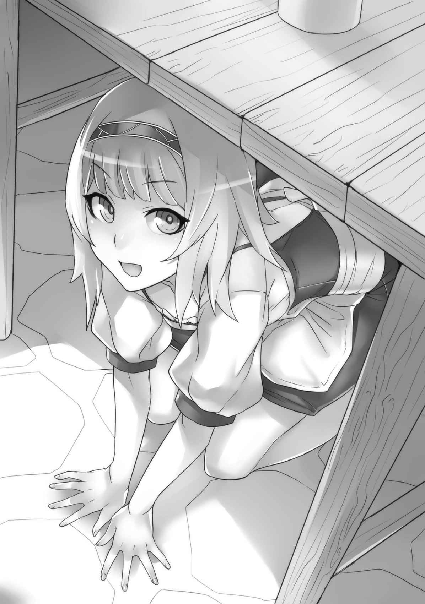
ビックリして、テーブルに太ももを打ち付けてしまったじゃないか。
クレイジードッグに噛まれた古傷が開いたらどうしてくれる。
俺がテーブルを揺らしてしまっても、ルイーズは腕に木皿を載せて葡萄酒のグラスを片手に持って、ポリポリと炒った豆を食べ続けている。器用なものだ。
唐突に現れたサラちゃんに、驚いたのは俺だけだったらしい。もしかしてテーブルの下からいきなり出てくるのがこの世界ではポピュラーな文化なのかな。
「今ならタケルに、特別の特別の特別にー、私を温泉に誘う権利を上げてもいいわよ。どうするの？」
そんな居丈高に胸を仰け反らせなくても、誘ってあげるけど。
「うーん、親御さんの許可があるなら連れてってもいいけどさ」
硫黄鉱山近くの温泉なら、村からたいして離れてないから、子供を連れて行っても大丈夫だろう。
途中でモンスターが出る危険もなさそうなので、連れていくことに否やはない。
ただ、一緒に行きたいというなら、親の許可を取ってきて欲しいな。
「あんた私のこと子供扱いしてるわね。元使用人風情がエラソーに」
「すみませんねえ」
サラちゃんはまったく存在しない胸を突き出しつつ、クイッと顎を上げる。
がんばって威張っているつもりなのだろうが、子供がやってるから可愛いものだ。
しかし、元使用人だからこそ、子供を連れ出すのに親の許可がいるだろう。
事案発生して、誘拐犯扱いは嫌だぞ。
「サラの親御さんに許可がいるなら、後で私が取っておいてやるから、さっさと連れてってやれ」
「ああ、そうですか」
ルイーズは、憮然とした表情で俺にそう言った。サラちゃんが暴れてたら、食事の邪魔なのだろう。いくら他にめぼしい客もいないとはいえ、酒場のスペースで騒ぐのも迷惑だしな。
サラちゃんはともかく、恩義のあるルイーズ姉御にそう言われたら、連れて行ってあげるしかない。
じゃあ決まったわねと、サラちゃんの小さな手に引かれるようにして温泉地まで道案内してもらった。
●
スコップと、ゴワゴワのタオルを持って、俺たちは河原温泉までやってきた。
たしかに、せせらぎのような小川から黙々と湯気が上がっている。
独特の卵の腐ったような匂いが漂ってくる、明らかに硫黄泉だ。これは温泉の効能だけではなく、硫黄の採取の方も期待できそうだ。
「さあ、掘るのよ。私のためにせっせと温泉を掘りなさいー」
「へいへい」
俺は未だに、ロッド家の使用人なのだろうか。
まあ、サラちゃんにはライル先生を紹介してもらった恩があるので、言われた通りにでっかい穴を掘ってみせる。
面白いもので、スコップで掘ると下から白く濁った温かいお湯が、どんどんと湧き出してきた。
穴掘りは、ちょっとやると癖になる。ずっと掘っていたいような気持ちで全然苦にならなかった。やけに身体の動きが軽い。俺も厳しい農作業のおかげで、少しは体力がついたのかもしれない。そう考えれば、あの苦労も無駄ではなかった。
汗をかいても、すぐ温泉に入れるのだから問題ない。
「温泉は肌が綺麗になるって、ライルせんせーが言ってたのー」
「そうだね、これは確かに効きそうだ」
しかし、この時代に温泉の効能まで知ってるとは、ライル先生はすごすぎる。
もしかして、彼女......じゃなかった彼も、実は異世界転移してきた現代人だったりしてな。
うーん、そう考えてみると有り得そうで怖い。
今度カマをかけて、さりげなく現代の話を聞いてみるか。
ひとつ言えることは、ライル先生のあの透き通るような白い肌は、ここの温泉によって作られたのかもしれないということだ。
すると、ここらへんでずっと潜んでいれば、ライル先生の貴重な入浴シーンも見られるわけか。
「タケル、何か良からぬことを考えてる？」
「あらら、分かりますか」
ライル先生は男だし。男の入浴シーンをたまたま目撃してしまっても、犯罪ではないはずだ。
むしろ、男同士一緒に入ってもいいはずなのだが、なぜか後ろめたい不思議。
「まあいい、さっさと入りましょ」
「あの......今頃聞くのもなんだけど、本当に一緒に入ってもいいんっすかね」
いくらサラちゃんがまだ、ぺったんこの子供とはいえ、ちょっと気が引ける。
離れた場所に、二つ穴掘るのも面倒だから、混浴はしょうがないのだけど。
「タケルは、子供の裸見て興奮する人？」
「......いや、そう言われるとそうでもないけどね」
「そういう人がいるから気をつけなさいってお母さんに言われたけど、違うなら平気じゃない」
「そ、そうだね......」
ロリコンだと勘違いされて通報されたら困るので、平静を装う。
サラちゃんは、俺の表情を探るように上目遣いに覗き込んでくる。ロリコンだと用心されているってわけでもなさそうで、血色の良いサラちゃんの桃色の唇がニッと笑顔になった。
これって......もしかして、サラちゃんにからかわれてるのかなあ。
いい大人が、十二歳の少女にからかわれてどうするよ。
なんかサラちゃんは、ジッとしばらくこっちを見つめてプレッシャーをかけてきたと思ったら、唐突に服を脱いで裸になった。
うわ、この世界って服の下にインナーとかつけないんだな。ケープとエプロンを外して、ワンピースになってる簡素なドレスをスポッと脱いでしまえば素っ裸だ。
下着を付けてないのは、田舎の子供だからだろうか。それとも、この世界だとこれが普通なのか。
うーむ、比較対象がないから、分からない。
それより俺の心臓の鼓動が速い。落ち着け、子供の裸なんか見て狼狽えるな。異世界から来たりし勇者は狼狽えない！
「タケル......いくらなんでも、そんなにジロジロ見られると恥ずかしいよ」
「すまんこー！」
混浴であんまり見たらマナー違反だよね。俺もさっさと脱いで、天然の湯船に浸かる。
ちなみにサラちゃんの胸は、ぺったんこだと思ったらちょっとありました。小ぶりのお椀程度には、ふっくらとしていた。
ちょっと膨らんだ胸の先端には桜色の花びらが載っている風情で、肌がやけにツヤツヤしてた。股のほうは、まだツルツルなのはやはり子供かなと。
いや俺は、なに本気でサラちゃんの身体を冷静に観察してるんだよ。いろいろとマズいだろ。俺はロリコン趣味じゃないのに、意識しすぎだ。久しぶりに裸体を見てしまったからだろうか。
いや待てよ。久しぶり......というか、俺は女の子の裸体なんて見るの初めてじゃないのか。
まあいいや、深く考えると悲しくなってくる。女の子との思い出がまったく見当たらないのは、過去の記憶が失われているせいだなきっと。そうだ、そうに違いない。さっさと風呂に入ってしまおう。
お湯が白く濁っているから、温泉に浸かってしまえば、万が一元気になっても大丈夫だろう。
何が元気になるのかとは、聞かないで欲しい。
「気持ちがいいー」
「うーん、生き返るなあ」
サラちゃんは、気持ちがいい程度のものなんだろうけど。
俺にとっては、半月ぶりの風呂だった。
気候的には、日本より乾燥してるから、お湯で身体を拭くだけでも大丈夫なんだけど。
「やっぱ、日本人は風呂がないとなー！」
心のそこからそう思う。というか、叫んでしまう。
日本人は風呂だ、魂の洗濯だ。
これからも、頻繁に入りに来ることにしよう。
「そういえば、石鹸とかは使わないの？」
「石鹸ってたしか泡が出るやつでしょ。そんな高価なもの使ったことがないよ」
確かに村の唯一の雑貨屋にも、それらしきものは置いていなかった。
やたら生地がゴワゴワしているのは悲しいが、タオルはあったのに石鹸がないとはなあ。
「サラちゃん石鹸がもしあったら、使ってみたい？」
「欲しいのぉ～って言ったら、タケルが買ってくれるのかな」
おや、もうこの歳で男に媚を売ることを知ってるのか。手まで握ってきて、少しドキッとさせられる。末恐ろしい子。書記官補佐になった給料を期待されているのだろうか。
サラちゃんは、まだ子供だと油断していると、たまに大人の女みたいな仕草もするんだよね。
この世界の、平均寿命は短い。
成人は十五歳だそうで、十二歳はまだ子供のはずだけど、大人に成るのが早い分だけ、生き急いでいるのかもしれない。
俺もまさか十二歳の女の子に、モノを強請られるとは思わなかった。
恐ろしい世界だよ、ここは。
「石鹸ぐらいなら、何とか手に入れられないか試してみるよ」
買うとは言わないが、石鹸ぐらい作ってみてもいい。
「へー、石鹸ぐらいならね......。タケルもさすが文士様、言うことが大きい」
何だか尊敬されてしまった。
どうやら、サラちゃんの中では、文士＝ライル先生と一緒で偉い。そういう図式が出来上がってるらしい。
あの魔術師でもあり、錬金術師でもある博識の先生と比べると、俺は中途半端な現代知識があるだけのへっぽこなんだけど、期待して待っていて欲しい。
石鹸はたしか、動物の脂肪と灰のアルカリで出来たはずだ。材料はすぐ揃う。
そんなに高価な品物と思われているなら、売り物にできるかもしれない。
●
「今度は石鹸作りですか。火薬作りもまだ途上なのにいろいろ考えますね」
今日も今日とて宿屋から村役場に出勤して、休憩時間に石鹸作りを始めた話をすると、ライル先生に呆れられてしまった。
何だか火薬作りのことを考えるついでに、いろんなアイデアが浮かんできて止まらなくなってしまったのだ。
実際に材料を集めて製造を試すと、実地面で色々と問題が出てくるのだが、そこはライル先生にも助けてもらうことにしよう。
「石鹸は、確かオリーブ・オイルや菜種油で作っている街があるとは聞いています。タケル殿の言うアルカリ性というのがよくわからないのですが、灰汁や石灰と化合させて固形化しているのは確かですね」
「オリーブ・オイルはさすがに手に入らないんですが、モンスターの脂肪分でもできそうなんですよ」
このロスゴー村で無料で取れる動物性の油となると、モンスターの脂肪しかない。
村の周辺に生息している主だったモンスターは、クレイジードッグ、グレイラットマン、吸血コウモリの三種類。
モンスターが増えすぎて冒険者ギルドに討伐依頼が出ると、ルイーズさんが狩りに行くのでその獲物を分けて貰って、脂肪から油を絞っているのだ。
その油を灰汁と混ぜあわせて鹸化させてみたのだが、今のところ失敗続きである。
柔らかい石鹸らしきものはできるのだが、泡立ちが悪く粘土みたいな悪臭がする。そのまま乾燥させても、臭みは落ちないと思われる。
オリーブ・オイルで作るような高級品とまでは行かないが、普通の庶民が使えるような安価な石鹸が出来れば絶対売れるのに。基本的な考えは間違ってないはずなので、あとはトライ・アンド・エラーの繰り返しでいくしかない。
「つまり、タケル殿はそのモンスター石鹸の生成を私に手伝えって言うんですね」
「まあ、ありていに申し上げますればそのようなことになります」
製造法さえ確立してしまえば、木型でも作って量産できるはずだが、やはり精密な実験には錬金術師の手助けが欲しい。
俺が畏まって手をあわせていると、ライル先生はフッフッフッと笑い出した。
「火薬の材料集めと調合もあるのに、まったくタケル殿は人使いが荒いですね」
「申し訳ありません、硝石の製造とかキツイ作業は俺がやりますので」
職も斡旋してもらったのに、ライル先生には迷惑ばかりかけている。繊細な先生に、重労働はさせられないから、そっちは俺が頑張らないといけない。
「いえいえ、冗談です。私は自分の技術が役立つのなら凄く嬉しいのですよ。この村には錬金術の話ができる人なんていなかったですし、タケル殿が来なければ石鹸や火薬を作ってみようなんて考えてもいませんでしたからね」
こんな面倒な話に、笑顔で相談に乗ってくれて、製造の手伝いまでしてくれるのだからこんなに良い人は居ないと思う。
こんなん惚れてしまうやん。
ぜひお礼に温泉で背中を流させてくださいと頼んだら、こちらの提案は即座に却下された。
軽い冗談なんだから、真顔で引くのは止めてよライル先生。
●
とりあえず、まともに使用に堪える鉱山用発破の試作品が完成した。
麻袋にたっぷり火薬を詰めて、火薬を紙で巻いた導火線と繋げた極めて簡単な爆弾だ。鉱山用発破と言えばダイナマイトが有名だが、準備もなくニトログリセリンを作るのは製造の危険性が高すぎる。黒色火薬でも用途には十分なはずだ。
爆弾完成までに漕ぎ着けるまでの、俺の苦難の過程は余りにも長い話になるので割愛しよう。
ああでも、一つだけ苦労話してもいい？
硫黄はともかく硝酸カリウムの生成がキツかった。材料は、もうぶっちゃけてしまえば人間や家畜の糞尿の土なんだもん。
本来ならば、硝石小屋を作り、草と一緒に糞尿を土に埋めて、微生物の働きで硝石が出来るのを待ってから採取する。糞尿をじゃなくて、死骸でもいいらしいけど、とにかく臭い。
この方法では精製するのに少なくとも二、三年かかる。そんなの待ってられないので、硝石小屋作りの作業は別として、試作品用にロッド家の家畜小屋の土を貰って硝酸カリウムの抽出をした。
糞の土を何度も煮詰めていく作業と言ったら、もう臭いのなんの......。
でもまだ、家畜の糞のほうがマシであろう。本当は人間のトイレの土からも取れるんだけど、この世界のトイレ事情を調べると酷いものだった。
日本の中世だったら、昔から肥溜めとかあってそれなりにする場所も決まっているはずなのだが、どうもこの世界は人糞を肥料に使ってないようなのだ。
つまり、汚い話だけどほとんど壷にして溜まったら表の道に、適当に捨てるみたいな......これでは、硝石は取れない。
ああ、それで思い出したけど、この世界に来た時にトイレが一番キツかったんだ。トイレットペーパーなんて無いから、尻を拭くのは葉っぱだよ。葉っぱ！ みっちゃんみちみちってガキのころ歌ったもんだけど、まさか自分が本当に葉っぱで尻を拭くことになろうとは思わなかった。
どうしてもトイレットペーパーが欲しくて、ライル先生に紙作りを相談した。実はこの世界にも、きちんとした製紙法があるみたいなんだよ。質は悪いけど、村役場でも確かに紙を使っている。
しかし、本当に質の悪いゴワゴワの紙なので、本当に大事な契約書には、保存性の高い羊皮紙を使うぐらい。
なんでまともな紙が一般的に広まってないかと尋ねたら、技術的な問題よりも材料の木材が慢性的に不足していることが原因のようだ。
基本的に大気が乾燥しているせいなのか、我が故郷の日本みたいに木を切ってもまた生えてくるって感じじゃなくて、伐採すると禿げ山になっちゃうそうなんだよ。
この世界の人はまず植林なんかしないから、人が多い地域に行けば行くほど伐採されまくって荒地が広がって、木材が不足するわけである。
いくら製造方法を知っていても、材料不足ばかりは俺の現代知識でもどうにもできない。
やっぱり金の力が必要だ。
ちなみに、ライル先生はトイレのあとはどうしてるのか聞いたら赤面して「水魔法で......」とおっしゃられた。
ずるいなあ、ライル先生に調べてもらったんだが、俺は魔法の才能ゼロだそうなので、そっちのほうは望み薄だ。
魔力の篭もった魔道具とか魔宝石を使えば、魔法力ゼロの俺でも魔法は使えるそうなのだが、やはりそういったものは値段がとんでもなくお高い。
やっぱりこの世界でも、金、金、金なのである。
閑話休題。
......というわけで、俺とライル先生は金を稼ぐために導火線付きの爆弾を持って、ロスゴー村の奥にある鉄鉱山に来ていた。
国家鉱山と聞いていたのに、思ったよりも小さい鉱山だった。洞穴がいくつか空いているぐらいなもんだ。
そのいくつかある小さな坑道に、小さな貨車で鉱物を運んでいる労働者がいる。労働者は皆、くたびれたボロボロの衣服を着て足に鉄の鎖を嵌められていた。
「あれって、もしかして」
「奴隷鉱夫。鉱山にはつきものですね」
ついに見ちゃったよ奴隷......。こんなの見ると、やっぱり中世ファンタジー世界なんだなと思ってしまう。
何人かの奴隷鉱夫が、掘った鉱物をトロッコで運搬している。
小さな荷車で坑道の土砂を捨てているのも奴隷で、それらの動きを長い棍棒を持った兵士が監視している。
足の鎖は動きの自由を奪い、逃亡を困難にするためのものなのだろう。
「......」
「鉱山は労働条件が厳しいから、使い捨てられる労働力は必要不可欠なんですよ。タケル殿の国には、奴隷はいなかったのですか」
黙り込んでしまった俺を気遣うように、ライル先生が声をかける。俺は心配されるほど酷い顔色をしていたのだろうか。
自由を奪われて最低の労働環境で働かされる人を目の当たりにしてしまい、俺は正直なところ言葉を失った。
普段は優しくてたおやかなライル先生が、奴隷制度を平然と認めているところを見るに、この世界の常識なのだろう。
でもとっくに奴隷が解放された時代の俺からすると、同じ人間が基本的人権を奪われて酷使されているというのは、すごくショッキングな光景だったのだ。罪人でもないんだよね。
ライル先生の説明によると、奴隷というのは罪人ではなく、大抵が債務が払えなくなって落ちるものらしい。
俺も無一文になって借金を抱えていたら、ああなっていた可能性もあったのだ。そう思うと、ゾッとする。
今の俺は、奴隷の労働力に支えられている社会で生きている。
生きるために、それは甘受しなければならないと分かってる。
だからこそ光景は、眼に焼きつけておこう。俺が奴隷たちを眺めているのを、ライル先生は黙って待ってくれていた。
「すみません先生、時間を取らせてしまって、行きましょう」
「タケル殿、あそこが鉱山の代官屋敷ですよ」
鉱山の入り口近くは、小さな村のようになっていた。
奴隷が暮らすあばら屋に、兵士や技師が暮らす長屋、鉱石を溶かしたり、出来た金属を加工する鍛冶屋もある。そんなみすぼらしい小村で、一番大きな建物が鉱山の代官の屋敷だ。
しっかりとした木造建築、メイドに案内されて屋敷の中に入ると板張りの客間だった。
家具類はみんな木製でしっかりしている。この付近のモンスターの剥製が並び、色鮮やかなタペストリーまで飾ってある。
鉱山の鍛冶屋が作ったのか、鉄製のナイフや大剣、ハルバートやプレートメイルまで飾ってある。さすがに冒険者がいる世界だけあって、想像していたよりも作りが頑丈だ。
村の鍛冶屋は、俺が思ったよりも技術力があるのかもしれない。
無骨すぎて部屋の飾りとしてはあまり趣味がいいとは思わないが、商品サンプルも兼ねてなのかな。これだけの品が並んでるということは、国家鉱山の代官ってのは儲かるのかもしれない。プロの冒険者であるルイーズでも、こんないい装備は持ってなかったからな。俺の商売相手は、随分と富を貯め込んでそうだと期待する。
そこで扉が開き、半裸の屈強な男が入ってきた。
頭がツルリと禿げている壮年の男だ、女戦士のルイーズよりも身体がデカイ。なんだこのマッチョマン。
「待たせたようだな、この鉱山の代官を務めているナタル・ダコールだ」
えー、この人が鉱山の代官なのか。半裸で質素なファスティアンのズボンを穿いているので、鉱夫が間違って入ってきたのかと思った。
それにしてもナタルは、ムキムキの筋肉男だ。上腕筋の付き具合が、禿頭が渋いオッサン、ハリウッド映画の主人公みたいだ。
俺がその盛り上がった上腕筋を感心して眺めていると、何か勘違いしたのか頭を下げられた。
「客人の前に、こんな格好ですまんね。現場に出ていたもので......」
「いえいえ、こちらこそ急に訪ねたもので......あっと、俺は、じゃない。わたくしは佐渡タケルと申します。お初にお目にかかります。ナタル代官閣下」
俺も慌てて、頭を深く下げて自己紹介した。
「閣下はよしてくれ」と、ナタル代官はツルリとした形のよい頭を恥ずかしそうに撫でた。
このナタルという鉱山代官、俺みたいな貧相な若造に向かって、こうも素直に頭を下げるか。
壮年の男性。しかもそれなりに地位のある人物に、こうも丁重にされると恐縮してしまう。
上半身裸で筋肉ムキムキな姿も、質実剛健を重んじる立派な態度に見えてきた。代官なのに、現場で働いてるって偉い人だ。
ライル書記官とナタル代官とは、同じ村に配属されている国家公務員なので、元から顔見知りだったそうだ。
ナタルは、俺が爆弾を売りに来ているのをあらかじめ知らされている。わざとらしいほど対応が丁寧なのは、もしかすると商談を上手く進めようとする手管なのかもしれない。
だが、そう警戒しても、率直な態度には好感を持たざるをえない。しかも額が綺麗に禿げ上がったナタルは、ブルース・ウィリスに激似の渋いオヤジだった。
美人にも弱いが、カッコイイ大人にも俺はけっこう弱い。
「では早速、爆弾とやらを見せてもらっていいか」
俺はナタルに実演するために、新しく坑道を掘るという岸壁を、木っ端微塵に爆破してやった。
長い導火線を用意して、十分に離れて爆破したのだが、それでも下手をすると横から鼓膜をぶち破りかねないほどの激しい爆風で、我ながら恐ろしいものを作ってしまったものだ。
大きな穴の空いた岸壁を見れば、予想通り黒色鉱山火薬で十分だったなと分かる。計算通りの爆轟圧が、出せている。
ナタルは、生まれて初めて見る爆破に興奮したのか「ウォォォォ！」と両腕を振りかぶって雄叫びをあげていた。
喜んでもらえたようで光栄である。どうやら商売相手に向けてのいいデモンストレーションになったようだ。
「いかがなもんでしょうか」
「タケル殿といったな、素晴らしい物を作ってくれた！ 爆弾というやつは、上手く使えば手間が一気に省ける、これは助かるぞ」
爆破後に出来た大穴を手で触れて調べながら、爆風で飛ばされた鉱石なども拾い集めていちいちチェックしている。
ナタルのお気に召して、高い値を付けてくれるといいんだけどね。
「爆弾一つにつき、銀貨......いや、金貨一枚でどうだ」
「それはまた......」
俺は息を呑む。金貨一枚は日本円で約一万円の価値である。発破用の爆弾が一つ金貨一枚で売れるとすると、これは結構な儲けになる計算だ。
これほど高く売れるとは、思っていなかった。
いやいや、言い値で売ることはない。火薬や爆弾はこの世界でも珍しい商品のはずだから、もしかしたらもっと値上げできるか......。
「これ以上は吹っかけるなよ、こっちは同じ国に仕える者同士の誠意を持って、ギリギリ出せる額を言ったんだからな」
「ハハッ、まさか......。金貨一枚で、お願いします」
俺は笑いながら冷や汗をかく、顔色でこっちの考えは見ぬかれていたらしい。
さすがベテランの代官だ、なかなか交渉も鋭い。
「あと金貨一枚で買うには条件がある、後払いにして欲しい」
「えっとそれはどういう」
「不良品を納入されたら困るってことだよ。きちんと使い物になる商品を届けてくれたらその分だけ金を払う。村で噂になってるから知ってるんだぞ、お前ら結構ここいらで実験して失敗してるだろ」
「あー、まあそうですね、はい」
隣のライル先生を見ると、苦笑いしていた。
確かに成功に至るまでの実験の間に、煙があがったのに爆発しなかったり、失敗がたくさんあった。ちゃんと、硝石七割半、木炭一割半、硫黄一割の理想的な調合をしているつもりでも、ばらつきがあったりして不発になったりするものがあるのだ。やはりそこは、素人がやることである。
今では調合にもだいぶ手慣れたので、さほど失敗はないはずだが、火薬はわからないからな。たしかに不発の可能性も考えるべきだろう。
不良品を売りつけるつもりはないので、後払いで問題ない。
「もう一つ条件がある」
「はい」
まだあるのかと思わず愚痴りたくなったが、爆弾に金貨一枚出してくれる相手なので俺はジッと我慢する。
「ここロスゴー鉱山は、小さいとは言え国家の所有する鉱山だ。うちに爆弾を売り込むということは......分かるな」
「えっと......」
そんな思わせぶりな口調で言われても、分からないよ。
俺が呆けているのを見かねて、ライル先生が耳元で囁いてくれる。
「シレジエ王国との専売契約になるってことです。爆弾なんて他に売り込むところはないと思いますから構わないんじゃないでしょうか」
うーんなるほど、まあ確かにライル先生の言う通りだな。ライル先生も国家書記官なのだから、立場というものを考えて契約に同意することにした。
「まっ、専売契約にしてくれるという条件なら他の国家鉱山や、公共事業に爆弾が必要な現場にも売り込んでやるぞ。お前さんらに損はさせんよ」
「では、それでよろしくお願いします」
頭を下げながら、まだまだ自分は迂闊だなと反省する。
火薬製品を作るのに精一杯で、販路を広げるなんて考えてなかった。
ここは田舎だから、王国の他の地域に売り込めるチャンスを逃す手はない。
一方で、民生品を売りたいなら国家専売にはできないから、独自の販路を考えないといけないわけか。
何かいい方法がないか、俺の知恵袋に後で相談してみよう。
それより今は言っておくべきことがある。
「あと巻き込まれ事故には、重々気をつけてくださいね。坑道の中で爆発させると落盤の恐れもありますから」
「ハハッ、言ってくれるじゃないか。俺は鉱山技師だぞ。そんなヘマはせんよ。だがこの威力、取り扱いに注意しなきゃならんのは確かだな。忠告はありがたく聞いておく」
口うるさいとナタルに疎まれても、これだけは忠告しておかなければならない。
俺が生きていた現代日本でも、鉱山の事故で生き埋めになって死ぬ人がたくさんいる。
俺が作った爆弾に巻き込まれて、さっき見た鉱夫たちが死んだら寝覚めが悪い。
黒色火薬なんて安全度の低いものを発破にするのだ、ナタルには十分に注意してもらわなければならない。
●
試行錯誤の結果、ついに石鹸が完成した。とは言っても、まだコンスタントに良品ができるわけではないが。
白いよい香りのする泡立ちのよい上質の石鹸ができる確率はまだ低い。
泥臭かったり粘土みたいな悪い匂いがする物や、上手く凝固しない失敗作が出来上がるほうが多い。素材に使うモンスターの脂肪分に問題があるのか、あるいは灰汁のアルカリ性が足りないのか。それは今後の製造実験で確かめていくしかない。
しかし、失敗作でも衣服の洗浄には十分に使えることがわかり、片銅貨一枚のサービス価格で洗剤として売りに出すことにした。
この世界の庶民は洗剤に灰汁を使っているらしい、単なる灰汁に比べたら失敗作でも石鹸のほうが汚れ落ちがよいに決まっている。
ちなみに、上質品のモンスター石鹸の価格は銀貨一枚（日本円で千円の価値）にした。
タダ同然の原料の割にふっかけすぎかとも思ったが、オリーブ・オイルや菜種油の石鹸は、地域によって相場も違うが、末端価格で金貨一枚もするそうだ。
それを考えたら、ほとんど品質の違いのないものが十分の一の値段なのだから売れないことはないだろう。
完成した石鹸と洗剤をロッド家に持っていったら、サラちゃんとおかみさんにすごく喜ばれた。
納入前に、ロッド家で使ってもらって問題が無いかどうか、製品テストを兼ねているのは内緒である。
あんまりサラちゃんが「ありがとう、ありがとう」と少ない語彙で喜びを表現してくれるので、つい「また一緒に温泉行こうぜ」と調子に乗って言ってしまったら、サラちゃんのお父さんにめっちゃ睨まれた。
えっ、なんで怒られるのか怖くて聞けないんだが。温泉の件、親御さんに許可とってくれてたんじゃなかったのかよ、ルイーズ......。
●
石鹸を売ると言っても、俺は店舗を持っているわけではないので、村の雑貨屋や道具屋に石鹸を納入することにした。
持って行くと、雑貨屋の親父さんに珍しい商品だとすごく喜ばれた。俺は銀貨一枚で売るが、おそらく店はもう少し価格を上乗せして利益を出すのだろう。
ついでに、村の道具屋でアイテムを大人買いすることにした。なにせ、俺の財布に金貨が唸っているのだ。鉱山発破用の爆弾に加えて石鹸の販売が上手く行けば、もっと儲けが出るはずだし、ここいらで少し贅沢してもいいだろう。
この世界のアイテムってすごく気になるし、色々試してみたいと思っていたのだ。
「魔法のアイテムってありませんか」
「この『炎球の杖』しかないねえ」
さすが辺鄙な村の道具屋、品揃えが少ない。
「じゃあ、それください」
「あいよ」
雑貨屋に至っては日用品しか置いてないので、贅沢は言えないだろう。これでもマジックアイテムだ。
さて、この『炎球の杖』は、魔法力がなくても「ファイアーボール！」とかっこ良く叫ぶだけで、火魔法の基本にして至極、初歩にして究極の魔法である炎球の魔法が使える。
しかし、困ったことに鑑定されてないので、後残り何回使えるかも分からないそうだ。極めて心もとない。試し打ちもできないな。
火魔法は、俺の武器である火薬とも相性がいいかもしれない。
ちなみにこの店の目玉アイテム、未鑑定の『炎球の杖』の価格は、銀貨五枚だった。
人のことは言えないけど、かなりいい加減な値付けだな、いくらで仕入れたんだか聞きたいぐらいだ。
「水魔法の道具ってないですかね」
「うーん、田舎の村だからねえ」
おトイレの後処理問題があるから、ぜひ初歩の水魔法が使えるマジックアイテムが欲しかったんだが。
やっぱり、それはもっと大きな街で探すしかないのかね。あとは、回復のアイテムが欲しいよな。
「じゃあ、この回復と解毒のポーション全部ください」
「おいおい、買い占めは勘弁してくれよ！」
ああそうか、金があれば全部買い占めても良いってわけじゃないんだな。
回復魔法が使える神官がいる教会もなければ、診療所もないロスゴー村。回復ポーションだけが村人の生命線になるわけだ。
これは、俺の配慮が足りなかったね。
「すみません、じゃあそれぞれ五個ずつ」
「ほいよ、まいどありー」
回復ポーションは割と低額だが、それでも一個、銀貨一枚はする。安くはない。
だけど怪我した時に困るから、余るぐらいに備蓄しておくべきだ。
●
「それならエストの街に行ってみませんか」
俺がロスゴー村のアイテムのしょぼさを愚痴ると、ライル先生からそのような魅力的な提案があった。
「しかし、ライル先生。書記官と書記官補の両方が村役場から離れては、マズいんじゃありませんか」
「だって、仕事なんかないじゃありませんか」
俺が久しぶりに畏まって真面目さをアピールしたのに、ライル先生ぶっちゃけすぎ。
確かに俺が来てからもう一ヶ月以上になるけど、なんか村役場にまともな仕事って来たことないもんね。
村で結婚式が一回あったぐらいか。
「公証の手続きなら、頼んでおけば村長が代わってやってくれます。近隣地域の視察も書記官の立派な仕事ですから、一度エストの街まで視察に行くのもいいでしょう」
「なるほど、視察って名目で遊びに行こうと」
俺もぶっちゃけてみると、アハハと声をあげてライル先生が笑う。視察の名目で遊興、どこから見ても悪い公務員の会話である。こういう冗談も言い合える仲になったのだと思うと嬉しい。
「視察って言うのは冗談ですが、全くの遊びってわけでもありません。タケル殿が始めた新商売を考えると、一度エストの街に居られるダナバーン伯爵閣下に、ご挨拶に行ったほうがいいんですよ」
「なるほど、地域の権力者のご機嫌伺いに行けと......」
このロスゴー村も含めて、ここらへんはエスト伯爵領である。ダナバーン伯爵と言うお貴族様の領地だそうだ。
このまま、商売を広げていくとなると、地方領主と仲良くなっておく必要があるのか。
挨拶はビジネスの基本である。
俺は仕事終わりに宿屋に戻ると、念の為ルイーズに旅の護衛を依頼することにした。領地の中心地であるエストの街まで行く道中で、モンスターに襲われたりしたら怖いもんな。
一応、冒険者ギルドを通して報酬も払うと言ったら、「そんなものは要らない」と断られてしまった。ルイーズは、タダで手伝ってくれるらしい。
ルイーズには助けてもらってばかりで、ちょっと気が引けたが旅に出るとなれば色々と物入りなので、ご好意に甘えることにした。お礼は、エストの街での商売が成功したら必ずしよう。
せっかく大きな街まで行くのだから、ついでに行商もしてしまうつもりなのである。石鹸を運ぶための荷馬車を買うか借りるか迷ったのだが、「馬車は商人の基本だ」とのルイーズのありがたい言葉に背中を押されて、奮発して中古の幌馬車を買うことに決めた。
幌馬車は、ただの荷馬車ではなくて上にしっかりした布製の幌がついてて雨風が凌げるタイプだ。
扱う商品が石鹸と火薬であることを考えて、防水性がある馬車を選ぶことにしたのだ。
防水仕様の幌馬車は中古でも驚くほど高くて、財布がカラッケツになった。馬を購入するには金が足りなかったので、馬はロッド家から貸してもらった。
少しでも金を稼ごうと、ロスゴー鉱山のナタル代官から依頼を受けて、ロスゴー村の鉄製品を幌馬車でエストに運ぶことにした。
帰りはロスゴー村で不足している商品、布や塩を積んで帰れば利益が出るぞとナタルに勧められた。
なんだか、自分の幌馬車を手に入れて、本当の商人になったような気分で高揚してくる。高い買い物だったが、悪くないんじゃないか。旅商人ってのもロマンがあっていいものだ。
もちろん先立つモノがないとロマンなんて言ってられないから、商売を頑張らないといけないんだが。さっそく輸送を依頼された商品と、作り立ての火薬製品や石鹸を載せて、エストの街まで出向くことにした。
●
ライル先生とルイーズと俺の三人で、幌馬車で一日足らずの旅路を終えて、エストの街を初めて訪れた。
石壁に囲まれたエスト伯領の中心地、エストの街を遠くから眺めた俺の感想は「しょぼいな」ってことだった。これは、俺が期待しすぎたのが悪いのかもしれないけど。
ロスゴー村は、もともとが山村の田舎だからそんなもんかと思ってたのだが、エストの街は、この地方の領主が住む、いわば県庁所在地なわけだ。丸一日かけて、延々と荒野と丘と田園が続く道を幌馬車に揺られてやってきたのに、着いた先がたいして大きくもない街じゃテンションが下がる。
街道はモンスターも出なくて安全な旅だったけど、エスト伯領はやっぱりどこまで行っても田舎だなって感じだった。イマイチ、ファンタジー色が足りてない感じである。
ただ、小さくとも街の周りに、石造りの城壁が張り巡らせているのには、「ファンタジーすげえ！」と感激したりはした。
俺が、感動の面持ちでベタベタ石の壁を触っているのを、ライル先生や街の門を守ってる衛兵まで気持ち悪そうに眺めている。
だって俺は現役の城塞都市なんて初めて見るんだぜ、感動して当たり前じゃないか。
あと城壁の中に入ると、メインストリートや広場がきちんと小さい石が嵌め込まれた石畳なのは素敵だと思う。
ライル先生に聞いてみると、村と街の違いは人口ではなくて、街道の整備ができているか、城壁などの防衛施設があるのかないのか、という違いなのだそうだ。
モンスターが跳梁跋扈しているこの酷幻想は厳しい。この世界で街と言えば、基本的には城壁のある囲郭都市となるわけだ。
あとエストの街は、小さくとも県庁所在地なので各種ギルドの窓口と教会の支部は揃っている。
街に城壁があるからには、城もある。
俺がこれから訪ねる伯爵様は、街の中央奥にあるお城に住んでらっしゃるのだった。
さすがに伯爵様となると、街の中でも目立つ石造りの城だった。
ただなんだか赤い原色に塗りたくられた尖塔が無駄に三本も高く聳え立っていて、遊園地のお城みたいな、下手するとラブホテルような、変な装飾の城だった。
装飾過多で、尖塔がただの飾りにしかなってない。街の真ん中の居城に尖塔を立ててもあまり意味が無いだろう。素人の俺が言うのもなんだが、防衛という概念を著しく軽視しているような気がする。貴族の居城ってこんなものなのか。地方貴族って、たしか自前で領地を守ってるはずなんだよね。
ライル先生に聞くと「エスト伯領は、もう百年以上戦争がないので......」と口を濁された。やっぱ、ちょっとここの領主様は、変な人なのかな。
幌馬車を宿屋につけて、部屋を取って一息ついてから、領主の城に出かけることにした。ライル書記官と、そのおまけがご領地で新商売をするので挨拶したいと城に連絡すると、すぐアポイントメントが取れた。
ライル書記官の顔がここでも生きた。権力良し、知識良し、容姿良し、本当に万能選手。中途半端な俺じゃなくて、ライル先生が異世界から来た勇者なんじゃないだろうか。
ちなみにルイーズにも、一緒に城に行ってみないかと誘うと「貴族は好かない」と、にべもなく断られてしまった。
麗しい書記官に加えて、美しい護衛の女戦士も居たほうが、通りがいいかと思ったんだが、本人が好かないものはしかたがない。
ルイーズが俺を手伝ってくれてるのは、半ば俺が好意に甘えているわけだから無理強いはできない。
領主の城に招かれると、居城の中はすごい豪勢だった。
これまで見たどの建物より、広いし、天井が高い。
中世の本物のお城ってことにも興奮したが、床に隙間なく敷いてある赤い絨毯もこの世界に来て初めて見た。
ロスゴーみたいな山村に居て質素な生活に慣れてたから、その華美な様に感動してしまう。
あと一目見て分かったことは、ここの伯爵様は赤が好きってことだ。豪華な調度品が並んでるが、全体的に赤っぽい物が多い。しまったな、お土産に持ってきた石鹸も赤く染めてくるべきだったか。
偉い伯爵様に会うのに、てっきり謁見の間みたいなところに通されるのかと思ったら、燕尾服を着た執事に、丸いテーブルのある部屋に通された。
ちなみに椅子もテーブルのクッションも赤である。どんだけだよ。
椅子のクッションも柔らかく、くつろいだ空間だ。
思わず座ってゆったりしてたら、豪奢を絵に描いたような赤き衣に身を包んだ太ったおっさんがやってきたので、俺は慌てて立ちあがった。
「ああっ、どうかそのまま楽にしていてくれ。この城の主、ダナバーン・エスト・アルマークだ。今日はよく来てくれた」
楽に、と言われても、伯爵様を相手にそれは無理じゃないのかな。俺は直立不動になって、とにかくライル先生を横目で見て、その動きに合わせる。
伯爵が着席して、もう一度席を勧められてから、ようやく座っていいようだった。
えっと、まず挨拶だな。このいかにも育ちが良さそうな貴族様にどう挨拶すれば好印象かな。こんなことなら礼儀作法を、先生に習っておくんだった。
「お初にお目にかかります、エスト伯爵閣下。わたくしは佐渡タケルと申します、本日はごきげん麗しく、お日柄もよく......ああ、これつまらないものですが」
なんかグダグダになってしまったが、挨拶がわりの贈り物として火薬製品（俺が工夫して作った、かんしゃく玉と爆竹）と石鹸の詰め合わせを贈った。
なんだかお歳暮みたいだ。
伯爵様は、爆弾や花火には一切興味を示さず、白い石鹸を手にとって舐めるように眺めていた。クンクンと匂いまで嗅いでいる。
火薬のほうが大発明だと思うんだが、伯爵は石鹸のほうがお気に入りなようだ。育ちが良い人とはそんなもんなのかね。
「タケル殿は、この度、書記官補に任ぜられたと聞く。シレジエ王国では、官吏も貴族も国王陛下に仕える臣という意味で同格である。ぜひ気軽に、ダナバーンと呼んでくれたまえ。アッハッハ」
そう大きな腹を抱えて鷹揚に笑うお貴族様に、どう対応したらいいのやら。
（これは建前ですよ、貴族には様付けして敬意を払ってください）
作法を知らず、何をやらかすかわからない俺に、隣のライル先生が慌てて耳打ちしてくれた。
たしかに世間知らずの俺なら、タメ口ききかねないもんね。
「ではダナバーン様とお呼びします。今日は、ご領地で商売を始めるご挨拶に......」
「まま、タケル殿。込み入った話の前に、とりあえず一息いれようではないか」
俺の話を遮って、伯爵は執事に言いつけてお茶を出させた。
メイドさんがテーブルに出してくれたのは、もちろん貧乏臭い白湯ではなく、こっちの地方によくある紅茶でもなく、真っ黒く温かい液体だった。
「えっ、これはもしや......」
この香ばしい匂いには、すごく馴染みがある。懐かしさに涙が出そうになる。
まさかこれで、飲んでみたらタダの泥水だったなんてオチは止めてくれよ。
「ワシは変わったモノが好きでなあ。これは近頃、王都でも流行っている南方の地方で採れるコーヒーという飲み物なのだ。かなり苦みがあるので、もし口に合わなければ別のものを......」
やっぱりコーヒーか。やったね！
俺はこれの中毒なんだよ、我慢しきれずに俺は一気に飲み干した。いと懐かしきカフェインが、俺の身体の隅々まで染み渡るようだ。
これだよ、これが欲しかったんだと五臓六腑が喜んでいる。
「うまい！」
「驚いたな、タケル殿。それはたっぷり砂糖を入れてようやく飲めるモノなのだが、そのまま一気に飲み干すとは、よっぽど気に入られたのか」
香りが高く酸味も少ない。
こんな口当たりの良いコーヒー飲んだことないんだけど、ブラックで飲んだら変わり者扱いされた。
コーヒーの苦味は、この地方の人には口に合わないってことなのかな。
ライル先生も俺の真似をしてそのまま飲んで、苦そうな顔をして慌てて砂糖を入れている。
もったいない、上物のコーヒーはブラックに限るのに。
「俺は砂糖を入れずに飲むのが好きなんです。砂糖の他にミルクを入れて飲む人もいると聞きますが」
「ほほー、ミルクティーのようにして飲むのか。それは王都でもやってなかったと思う。タケル殿は、たいそうな通なのだな」
伯爵は、早速ミルクを取り寄せカフェオレにして飲み、悪くないと喜んでいる。
貴族ってのはもっとどっしり構えているのかと思えば、見た目よりフットワークの軽い人だった。
コーヒーのお代りもくれるし、本当によい人だ。
王都で今流行っているらしい、コーヒーを飲ませるカフェの話に花が咲いて、南方のコーヒーの銘柄から珍しい物産の話に広がる。
ダナバーン伯爵は珍しいモノ好きらしいし、ライル先生も博識なので面白い話がたくさんできた。
ごく自然に、エスト伯領で商売がしたいという話に繋がる。
「もちろん、領地での商売の許可は出そう。しかし、その発破とやらにしても国家契約を結んでおるようだし、タケル殿は商人としても有能のようだな」
「いや、それほどでもありませんが」
「民生品でもモンスター石鹸のような新しい商品を出せるのなら、いっそのことタケル殿が商会を開かれてはどうか」
勢いがつきすぎて、いきなり話が大きくなった。商会と言うと、会社を作るようなものなのだろうか。
まだ俺とライル先生のお手製で石鹸を作って、幌馬車で売り歩こうって段階なんだけどな。
俺が躊躇してると、ライル先生がこう言った。
「確かに扱う品が品ですから、どこかの商会の傘下に入るというわけにも参りません」
先生は、含みのある視線を俺に向けてくる。
つまり、商会を設立しろってことか。ライル先生がそう勧めるなら、俺は決心しちゃうよ。
「では、その......商会を作る方向でお願いします」
「そうか、タケル殿は当地に商会を設立されるのだな。ではお祝いに、このエストの街に土地を進ぜる。ぜひ我が領地に商館を建てて欲しい」
えっ、進ぜるってくれるってことか。土地貰えるの？
横目で、ライル先生を見ると彼女も......じゃなかった、彼も驚いた顔をしていた。そうだよな、不動産だもんね。
お金持ちの貴族にしても気前良すぎだろ。
「ハハッ、タケル殿がくれたこのモンスター石鹸と言ったか。これは実に上質な品だ。エストから新しい特産品が生まれるなら、領主としてワシも鼻が高い」
なるほど、久しぶりにコーヒーを飲んで、カフェインで脳が冴えている俺は、ライル先生よりも先にダナバーン伯爵の意図を悟った。土地をくれるのは先行投資だ。
オリーブ・オイルや菜種油の石鹸があると聞いたが、この世界で石鹸はまだ特殊な地方にしかない特産品らしい。
自領から新商品が生まれれば、街の商業取引が活発になって商人の行き来も増え、豊かになる。結果として、領主の実入りも良くなることだろう。
人がよいだけの田舎貴族かと思えば、伯爵はきちんと商売の基本が分かってる。エストの街は食料生産が盛んで、特産品に織物まで開発されているそうだ。
この街が豊かで、餓死者や行き倒れも出ていないのは、土地に恵まれてるってこともあるが、この領主の手腕もあるのだろう。
「ダナバーン様、ありがたく頂戴いたします。佐渡商会は、これから新製品を閣下のもとにお届けに上がりますので、ご期待ください」
「うむ、ワシに協力できることがあればなんでも言ってくれ、期待しておるぞ」
ダナバーン伯爵は、我が意を得たりとふっくらとした血色のよい頬に笑みを浮かべた。
いいぜ、思い切って投資してくれた分は、しっかり儲けさせてやる。美味い話は分け合おうじゃないか伯爵。
こういう物の分かった領主の下にたまたまつけたのは、ラッキーだったといえる。
しかし、つい調子に乗って新製品とか約束しちゃったけど、まだノープランだったりするんだよな。
まあ、なんとかなるか。
●
「モンスター狩りに行こうか」
俺の頼りになる護衛であるところのルイーズお姉さん（二十四歳 独身）は唐突に言った。
エストの街での佐渡商会の設立は、暗礁に乗り上げていた。
ダナバーン伯爵に、「佐渡商会やったるで～」と大見得切って、街の広場近くの商業地に空き地を譲り受けたまでは良かったのだが。
よく考えてみると、幌馬車を買ったことで資金が尽きていた。いやそれどころか、馬はロッド家からの借り物なのだ。あとでレンタル料を支払わなければならないし、むしろ若干、赤字だとすら言える。
ロスゴー鉱山からエストの街へ、鉄製品を一回輸送したぐらいじゃ、はした金にしかならない。
商会を作るには、商館を建てなきゃいけないし、職員も雇わないといけない。先の見通しが立たない。
さすがのライル大先生も、知ってるのは商会のシステムだけで実際の経営ノウハウまでは持ち合わせていない。
「知ってることと、できることは違うんですよね」とは、ライル先生の弁だ。
俺もこの世界に来てから、それを痛感している。
あとこっちは私事だが、せっかくエストの街まで買い物に来たのに、先立つものがないなんて悲しすぎる。
持ってきた石鹸（売値 銀貨一枚）と洗剤（売値 片銅貨一枚）は、珍しさと値が安いこともあって飛ぶように全部売れたが、とてもじゃないが足りない。
爆弾は、シレジエ王家との専売契約を結んでいる商品なので、市民や他の商人には売れない。
火薬を使った民生品もボツボツとは考えてはいるのだが、まだ試作段階。いきなり儲かる新商品を作れと言われても、やっぱり頭が回らない。
こういう行き詰まった状況では、いったん商会設立は諦め、当初の予定どおり布と塩でも買いつけて、ロスゴー村に帰って地道に行商でも続けようかと考えていたところにルイーズのお誘い。
「とりあえず、この付近のモンスターを討伐して儲ければいいだろう、私は護衛の一環としてやるから金は要らないぞ」
うわ、ルイーズお姉さん太っ腹。何という好条件の提案をしてくれるのだろう。
「その代わり、モンスターの肉と皮をくれ」
うわ、いつものルイーズだ。俺を助けてやろうとかじゃなくて、モンスターの内臓を食いたくなってきただけなのかもしれない。
しかし、ルイーズの積極的な提案はありがたい。あれこれ考えてるより、とりあえず動くってことだな。
ルイーズお姉さんとライル先生と俺の三人パーティーで、冒険者ギルドに行くとそこは慌ただしい騒ぎになっていた。
「あんたら、冒険者か！ 緊急の依頼があるんだが受けてくれないか」
俺たちがギルドに入るなり、ギルド職員のおっさんが血相を変えて頼み込んできた。
「街の近くで、キャラバン隊がモンスターに襲われたらしいんだよ。いま衛兵が向かってるが、ギルドにも応援要請が来てる。報酬はご領主様から出るから頼む！」
「わかった行くぞ！」
いつでも即断即決のルイーズが、行くことを決めてしまった。襲撃してくるモンスターが、どれほどの数なのかわからないのがちょっと怖い。
でも、衛兵も行ってるから平気かな。
この街ってすごく平和だって聞いたんだけど、近くにモンスターなんて出るのか。うーん、伯爵に恩を売るチャンスでもあるか。よしポジティブに考えよう。
●
「最悪ですね、逃げたキャラバンがモンスターの群れをここまで引き連れてきたんですよ」
慌てて向かった先の戦況を一瞥して、ライル先生が苦々しげに言った。
街の外、三キロほど行った先でモンスターと衛兵との戦闘が始まっていた。
キャラバン隊を囲む人型モンスターの数は五十匹を優に超えている。
小さい緑色の化物がグリーンゴブリンで、大きい土色の化物がアースオーガか。
ＲＰＧではお馴染みのモンスターだ。
知識としては知っているが、人間と同じ武器を持った化物が、人を襲い、殺している姿を見てしまうと思わず足がすくむ。
それに対して槍を持って駆けつけた衛兵の数は十人足らずで、明らかに手数が足りていない。敵の数が多すぎて不利だ。
本来なら、防壁のある街まで撤退すべきなのだが、引けない理由がある。
キャラバン隊の扱っている商品は、最悪なことに奴隷だった。
鎖で数珠つなぎにされて、満足に逃げることも抵抗することもできないたくさんの奴隷が、為す術もなくモンスターに襲われて死んでいる。
オーガの持つ無骨な棍棒に頭をかち割られて、ゴブリンの持つ尖ったショートソードに胸を突き刺されて、防具どころか武器すら持たない無抵抗の奴隷は、すぐに倒れて動かなくなる。これじゃ、一方的な虐殺だ。
俺は、ついにこれを使う時が来たかと、勇気を振り絞って鉄剣を握りしめた。俺も戦う機会があるかと思って、密かに買っておいた鉄剣。ついに、俺の北辰一刀流免許皆伝（通信講座）の実力を見せる時が来た！
「それじゃない、タケル。あの変な音の出る火薬を投げて使え！ 先生は魔法を頼む」
音の出る火薬って、もしかして俺が試作した爆竹とかんしゃく玉のことか。
俺に手早く指示を出したルイーズは、手に携帯用の小弓を持って、手近なゴブリンに撃ちまくっている。
早くて正確なヘッドショット！
「ライル・ラエルティオスが天地に命ずる、吠える瀑布、号泣する激風、崩れ落ちる大地、あだなす敵をその御力のままに薙ぎ倒せ！」
ライル先生が得意とする中級系大規模魔法、水竜巻の呪文を放った。
先生が、ちょっと中二病っぽい詠唱と共に手を振り上げると、巨大な水竜巻が幾重にも発生してオーガの群れを吹き飛ばしていく。
竜巻を直接喰らった敵だけではなく、飛び散る土石流で周りまで巻き込む派手な副次効果がある。
ファンタジーらしい最強呪文だ。いいなー、魔法が使えるって。
それに比べて、俺は子供の玩具かとちょっと腐りつつ、ありったけのかんしゃく玉をモンスターの群れに目掛けて投げ込む。
それに続いて、爆竹の紐に『炎球の杖』の最小出力でチロッと火をつけてから、そこらのゴブリンに投げつけた。
パンパンパンパン！ と、お馴染みの乾いた音が鳴り響く。
爆竹攻撃の直撃を受けたゴブリンが、投げた俺がびっくりするぐらいのオーバーリアクションで叫び声をあげて吹き飛んだ。
あれ、意外と効いてる？
ド派手なライル先生の大竜巻攻撃よりも、爆竹のお馴染みの破裂音と輝きのほうが、群れの気を引いたらしく、モンスター達の動きが一瞬止まった。
戦っていた衛兵も手を止めて驚愕した顔で、こっちを見ている。
ただの花火だぞ、何でそんなに驚いてんの？
次に、俺がさっきばら撒いたかんしゃく玉を踏んだらしいゴブリンたちが、キーキー甲高い悲鳴をあげて、慌てふためいたあげく次々に転倒した。
そこに、いつの間にか弓から直刀に持ち替えたルイーズが飛び込んで、こけたゴブリンの胸をザクザク突いて回る。
「何をしてる、もっと投げろー！」
ルイーズに叱咤されて、俺は目の前のオーガやゴブリンに、火の付いた爆竹をどんどん投げつける。
そんなに威力がある攻撃とも思えないのに、爆竹が炸裂するたびにモンスター達は狼狽して怯んだ。
その隙に、ルイーズが斬れ味が鈍った剣を次々と持ち替えて、斬ったり薙いだり突いたりしてほぼ一撃で殺していく。
呆気ないと思えるほど一撃必殺。
最後なんか、ザッシュッ、ザシュッと、ショートソードの二刀流で敵を斬り払った。
俺もその主人公っぽい戦士役やりたいなあ。腕力がない俺じゃ無理なんだけどさ。
せめて最後は魔法でかっこ良くと思い、『炎球の杖』のファイアーボールを敵にぶちかましてみたが、オーガの薄皮を焼く程度のダメージしか与えられない。
これじゃ爆竹より効果がない。
元からの魔法力ゼロで、中古の魔法の杖だけじゃこんなものなのか。
トホホ......。
結局、モンスターの群れは、半分ほどがルイーズに斬り殺された辺りで、蜘蛛の子を散らすように撤退していった。
襲われた奴隷商人のキャラバン隊は酷い有様になっているし、衛兵にも負傷者がたくさん出たので追撃する余裕はない。
激しい戦闘を終えたルイーズは、かすり傷程度のダメージしかなく、すぐに回復ポーションを飲んで全快した。
ルイーズの後ろから、爆竹を投げていただけの俺は怪我などしようもない。
それにしても、なんであんなに爆竹とかんしゃく玉が効いたんだろ。俺が質問すると、ルイーズいわく「知能のある敵は、初見の攻撃に弱い」だそうだ。
この世界では、激しい音と光が出る花火は、誰も見たことがない。
だから、ルイーズは俺が花火を作って遊んでるのを見た時から、敵の動きを止めるのに使えると思っていたらしい。
それならそうと最初から作戦を説明してくれればいいのに、言わないのがルイーズなんだよな。
しかし花火程度でこれほど効果があるなら、火薬を使ったアイテムもちょっと考えてみるべきかもしれない。
無事にとは程遠いほど悲惨な被害が出た戦闘もこうして終わり、キャラバン隊の商人と街の衛兵が話している。どうやらキャラバン隊は、下っ端の使用人が数人しか残っていなかった。
元がどれほどの規模の商隊だったか知らないが、ほぼ全滅に近いのだろう。モンスターに追われても戦い続けた商人たちは、みんな物言わぬ死体になっていた。
それだけ厳しい戦いだったということは分かる。だが、モンスターの群れに追いつかれても、エストの街に救援を要請する余裕はあったのだ。
もし即座に荷馬車を切り捨てて、街に逃げ込んでいたら死んだ商人たちは命だけは助かったはずだ。可哀想だけど、欲をかきすぎた最後と言える。
自分の命がかかっていても、プロの商人が撤退時期を見誤るってことはあるのだ。エストの街まであと一歩だったから気持ちは分からないでもないけど......。
異形の人型モンスターと、商人が折り重なるようにして死んでいる陰惨な戦場を眺めて、俺がそうなった場合は馬車を捨てて逃げようと固く誓う。
命は金では買えない、死ぬのはやっぱり嫌だ。
あと、モンスターに攻撃され苦しそうに呻き声をあげてる奴隷たちがいるんだけど、これはさすがに助けてもいいよね？
俺の懐には、回復ポーションがあるのだ。
「この奴隷たちの主人はすでに居なくなってるようだし、お前のポーションはお前のものだから勝手にしたらいい」
ルイーズはそう素っ気なく言うと、手近なゴブリンの死体をナイフで解体し始めた。
あー人型のモンスターもバラしちゃうんだね。
なんか人の形したものが斬り刻まれている様は残酷で、すごく抵抗あるけど、人型モンスターの脂肪からも、油を絞って石鹸を作っている俺が言うことではないな。
衛兵も商人の生き残りも、鎖に繋がれたまましゃがみ込んで、血だらけで死んだり死んでなかったりする奴隷にはそっけない。
みんな相手にしないというか、人間を見る眼じゃないんだよな。人権がないって、こういうことなんだろうか。
回復ポーションは五本しかない。助かりそうな怪我の奴隷を選別してポーションを飲ませた。生死の選別とか、俺には重たい。災害医療漫画みたいだ。
こんなことなら、回復ポーションをもっとたくさん買っておけば良かったと心から悔やむ。
「なんで、助けて、くれるんですか」
回復ポーションを飲ませて介抱した奴隷の子供に、消え入りそうな声で聞かれて、俺は胸がすごく痛くなった。
「わかんないけど、助けられるからかなあ」
砂にまみれた長い髪もボサボサで、顔も泥まみれ、辛うじて服と言えるローブもモンスターにざっくりと斬り裂かれて、ボロボロの布を巻きつけただけになってる。
薄汚れてボロボロで性別もわからないけど、死んでいたり傷ついている奴隷たちはよく見ればみんな子供だった。まだ幼いぐらいの子供もいた。本来なら、親の庇護下に置かれるべき年齢だろと可哀想になる。なんでこんな......。
奴隷が奴隷なのは変わらないんだろうし、俺は助けてあげるなんて言えない。安易な同情で希望を持たせるようなことを言うのは残酷だ。
なんで助けるかだって。本音を言えば、ポーションはまた金で買えるけど、命は買えないってことだよ。でも、そういう現代人の価値観を言っても、しょうがないのはわかっている。
この世界では、人の命も簡単に金で買えてしまうんだからこうなるんだろ。酷幻想って、救いがない。だから嫌なんだよ。
●
「衛兵から聞いたぞ、さっそく大活躍だったようだなタケル殿」
「いえいえ、たまたまでして」
街に戻ると、ダナバーン伯爵から直々にお褒めの言葉を頂いた。労いの言葉より、コーヒーを飲ませてくれるのが俺は嬉しいんだけどね。
ルイーズも誘ったのだが、大量にある死骸からできるかぎり肉と皮を取りたいと断られたので、伯爵の城に招かれてるのは俺とライル先生だけだ。
肉と皮を解体している時のルイーズは、誰にも止められない。
「不可思議な魔法を使ったと聞いたのだが、この小さな玉が武器だったのか？」
「爆竹とかんしゃく玉です。火薬を使っている花火で、本当は子供の玩具として作ったつもりだったんですけどね」
ダナバーン伯爵は、好奇心旺盛だ。
この前、持ってきたときは花火にまったく興味を示さなかったのに、実戦で有効に使えたと聞くと、爆竹やかんしゃく玉を自分で破裂させて、音や威力を確かめていた。
「子供の玩具にするには、少々刺激的すぎるようだが、敵を怯ませる武器にはなりそうだな。魔力を持たぬものにも使えるという点がいい」
「そうですね、やはり武器として売ったほうがいいかもしれませんね」
爆竹で派手にお祝いするのは中国の風習だしな、西洋風の貴族が好む趣向ではないのだろう。
花火を作ったのは、火薬を平和利用できないか考えたからだったのだが、この乱世ではやはり武器にしかならないのかもしれない。
「うむ、それでタケル殿への報酬のほうなのだが、ちょっと困ったことになってな......」
伯爵が言うには、甚大な被害が出て半壊した奴隷商人のキャラバン隊は、主人が死んで解散になってしまったそうなのだ。
残った使用人たちは相談して壊れかけの荷馬車を全部手放して、残った資金と合わせて金を持って故郷に帰るそうだ。
問題は、今回の積み荷である奴隷の生き残り十三人。
エストの街には、奴隷を扱う商人がいないので、売り払おうにも買ってくれる相手がいなかったのだ。
だから街に騒ぎを持ち込んだ迷惑料がわりにと、使用人たちは換金できない奴隷をダナバーン伯爵に押し付けていった。
押し付けられたところで、伯爵も奴隷が欲しいわけではない。
「ああっ、なるほど。報酬に奴隷を頂けるというわけですね。ちょうど良かった、実は商会を作るのに人手が欲しかったところなんですよ！」
さすが伯爵と俺は思った。
確かに金も欲しいが、商売に人手が一番欲しかったところだ。
渡りに船の提案じゃないか。
「えっ？」
「あれ？」
伯爵に変な顔をされた。俺そんなに変なこと言ったかな。
ライル先生、これどういうことなんですか。
「タケル殿。奴隷はほとんどが借金で身を持ち崩した者か、その子孫です。商会職員に使おうなんて商人はいませんよ」
「そうなんですか？」
「奴隷は、野盗に落ちるほど悪質ではなくても、生業から身を持ち崩した人間ばかりなのです。常に誰かが監視して、棒で叩いて働かせないと使い者にならない、劣った労働力だと考えられています」
俺が全然わかってないので、先生はしょうがないなと言った感じで微笑むと、子供に噛んで含めるように教えてくれた。
奴隷は主体的に動いてくれないから、商人には向かないそうだ。せいぜい、下働きに使える程度であるという。
たしかにあの人間を辞めたような顔をしている奴隷たちを思い出すと、あながち偏見でもないなあ。
でもそれって、絶望的な状況に追い込まれてるからじゃないかな。もっと待遇を良くしてやれば、使い物になるんじゃないか。
「タケル殿がよいなら、今回の報酬として奴隷を引き渡してもいい。だが、話に聞いたところ、そう質の良い奴隷でもないらしいが......」
本当にそれで良いのかと言いたげに、ダナバーン伯爵はライル先生にチラッと目配せした。
「はい、どちらにしろ働き手は必要ですし、タケル殿ならば劣悪な奴隷でも、使用人のように使える手立てを思いつくかもしれませんよ」
そうライル先生は笑顔で請け合ってくれたので、伯爵は「では、よきにはからえ」と許可してくれた。
うーん、前から思ってたけど、やっぱり俺は常識的な面では全然信用されてないんだな。
聡明そうなライル先生と俺が並んでたら、しょうがないか。
●
街の広場近くにある、佐渡商会建設予定地（と言う名のただの空き地）。
そこに、幌馬車と俺とライル先生が立っている。
そして、目の前にボロ布のような辛うじて衣服と言える貫頭衣を着た小柄な奴隷たちが十三人、足鎖に繋がれて整列している。
これがいまの佐渡商会の全資産である。
鎖に繋がれて、死んだような表情でしゃがみ込んでいる薄汚れた奴隷たちはあまりにも痛々しい。いっそのこと奴隷たちを解放してやろうかと言ったら、それは絶対にしちゃいけないと、ライル先生に止められた。
「いいですか、ここにいる子たちは最低の奴隷です」
「それは、いくらなんでも、言いすぎじゃないですか」
「言いすぎじゃないんです。いいですか、確認はまだしてませんが、賭けてもいいですけど、この十三人は全員女の子ですよ」
なんで分かるんだろ。まあ、ライル先生はなんでもわかる人だからしょうがないけど。
「何でわかるかには理由があります。まず男なら痩せた子供でも食べて太らせれば、いずれ重労働に耐える奴隷になります」
「大人の男ならすぐ労働力として使えるし、妙齢以上の女なら下働き、さらに容姿が並以上に優れていれば娼館に売ることもできます」
「でも、こんな薄汚れた痩せっぽちの女の子は、普通の奴隷としては使い物になりません。育てるのが割に合わないので、おそらく奴隷商人は鉱山に売るのに運んでいたのでしょう」
鉱山だと使えるという説明に引っかかるものを感じて、ライル先生が滔々と推理しているところに口を挟んだ。
「鉱山だと女の子でも使い道があるんですか？」
「坑道には、子供しか入れないような小さな穴もあります。そういうところでは昼夜問わず子供を働かせると、すぐ使えなくなるのでいくらでも需要があるんです」
ライル先生はさすがに不快そうに、形の良い眉目を顰めた。すぐ使えなくなるって、つまり使い潰されて死ぬってことだ。人権意識がなくても、物扱いされている奴隷のことでも、人がその悲惨な運命に心を傷めないわけではないのだ。
ましてや、子供を使い潰すなんてあまりに酷い話だ。奴隷のことだからと意識的に無視するこの世界の人が悪いわけじゃない。割り切ってないと、この厳しい世界では生きていけないだけなのだろう。
「さっきタケル殿はこの子たちを解放すると言いましたよね。かりに今この場で彼女たちが解放されたらどうなるか考えましたか」
「えっと......」
「この街には、彼女たちにできる仕事はまったくありません。物乞いのホームレスになるんです。空腹に耐えかねて、食べ物でも盗めばもうそれで奴隷以下の犯罪者ですよ」
「すみません、考えなしでした」
なるほど、道理で伯爵が何度も奴隷を渡していいのかと聞いていたわけだ。
いまこの奴隷たちを無責任に解放しても、衛兵の仕事が増えるだけで誰も幸せにならない。
「いいですか。貴方が引き取ると言ったんですから責任を持ってください。奴隷の主人は、奴隷に仕事を与えて飢えさせない責任があるんです。主人はタケル殿ですよ」
「わかりました、頑張って責任を果たします」
俺がそう請け合うと約束すると、ライル先生はようやく笑顔になって、俺に革の首輪をたくさん手渡した。
「ダナバーン伯爵も、使い道のない奴隷を引き取らせたことで、ちょっと気が引けたんでしょう。奴隷認証用の首輪をサービスしてくれました。これをみんなの首につけてあげれば、とりあえず佐渡商会の奴隷として身分証の代わりになります」
市民ではない奴隷は、街では持ち主を証明する認証をつけた手鎖か足鎖か首輪をつけていないといけないのがルールだそうだ。
認証さえつけていれば、安全な街に住むことができる。
身分のある人間の奴隷であるほうが、街から追い払われることもある自由民の浮浪者より安全だと言うのは皮肉である。
「みんなこれから、足首の鎖を外すから一人ずつ首輪をつけてもらうように、これからこの佐渡タケル様が、お前たちの主人になられる！」
ライル先生はそう怒鳴ると、奴隷の足輪の鎖を解錠魔法で外して回る。
俺が続いて、真新しい革の首輪をつけて回ると、みんな頭を差し出して大人しくつけられている。
そのように教育を受けているのだろうか、みんなロボットのようにただ押し黙って、命じられるままに動くだけだ。
髪の毛も着ている貫頭衣（というか布切れ）も、薄汚れているせいか元の色もわからず、みんなグレイっぽい。灰かぶり姫の灰かぶりってのは、こういう灰色から来てるのかもしれない。
劇のシンデレラは、悪い継母にイジメられても生き生きとしていたものだが、この子たちはみんな顔の表情と眼が死んでいる。
みんなボロボロの格好だから、やはり新しい服を買い足さないといけないか。俺は財布を覗きこんで渋い顔になる。
まあ良いさ、金はまた稼げば良いのだ。
一人、モンスターにビリビリに服を破かれて、布を引きずりながら半裸で歩いてる子がいた。
あんまりだったので、雨合羽に使ってるグレイラットマンのクローク（若干の防水、防火耐性あり）を上から羽織らせておく。
さて、これからどうしたものか。十三人の奴隷少女を前にして考え込んでいる俺たちのところに、ルイーズがやってきた。
「なんだ、タケルはここに居たのか。すごい量の肉と皮が取れたんだ、良かったら幌馬車で運んで......」
ルイーズはそこまで言って押し黙った。奴隷少女たちを一瞥してから、俺の前まで来てジッと顔を覗き込む。
なにこれ、無言の圧力止めてください。ルイーズに断りもなく、奴隷を引き受けちゃったのを怒ってるのかな。
「ルイーズ、奴隷を貰い受けたんだ。この子たちは全員、うちの商会の職員になるから」
「ふーん。じゃあ、大きな鍋を買っていこうか」
真顔だったルイーズはそう言ってから、なんだか面白いことを思い出したように、含みのある笑いを浮かべる。
俺にはルイーズ姉さんの言動が、毎度いまいちよくわからない。鍋は何に使うのだ。まあ、ルイーズが言うんだから、何かしら意味があるんだろう。
細かい説明がないのは、いつものことなので、言われたとおり大鍋を買うことにした。あと、肉と皮を運ぶのを手伝いに幌馬車で向かう。
俺たちの幌馬車の後に、ゾロゾロと奴隷少女たちも付いてくる。とりあえず鎖に繋がれてなくても、奴隷少女たちは逃げ出したりはしないようだ。
当たり前だよね。身よりもない彼女たちは、どこにも行く当てがないのだから。
●
さっきの戦闘現場に戻ると、激しい戦闘が終わった直後の死体だらけの状態よりも、さらに悲惨なことになっていた。
死んだ商人たちの埋葬は、衛兵が済ませて片付いてはいるのだが。
土色のオーガと緑色のゴブリンの皮が、ずらりと並ぶ異様な光景。
ルイーズのマスタークラスの解体スキルによって、一分のムダもなく綺麗に並べて干してあった。
その隣には、ピンク色のオーガとゴブリンの内臓と肉が山のように積んである。
俺はカエルの解剖を思い出して、気持ち悪くなった。
なんかグチャーって感じの血の海より、綺麗に並べてある人の形をした土色や緑の皮のほうが気持ち悪い。樹の枝に引っ掛けて、引っ張って干してあるのはすごいなと思うんだけどさ、こんな気持ち悪い皮が売れるのかな。買った商人は、何の道具に使うんだろ。
まあ、油が取れそうな脂肪は、石鹸の材料に使わせて貰うけど。モンスターの皮の行く先は謎である。
「衛兵と交渉して、モンスターの持ってたソードは向こうに渡して、木の棍棒はこっちに貰えるように話をつけておいた」
オーガが振り回してたでっかい木の棍棒は、薪にするのにちょうどいいそうだ。衛兵は、やっぱりオーガの肉は欲しいとは言わなかったんだな。
薪を燃やした後の灰から灰汁を取って、石鹸の材料にすれば無駄がない。さすがはルイーズ姉御だ。俺が欲しい物を良く知っている。
「さっそく内臓を大鍋で煮るぞ」
はいはい、そうなると思ってましたよ。ルイーズの大好物である、モンスターの内臓料理だ。
大きなオーガの木の棍棒で鍋を器用に固定して、焚き火でグツグツと煮込む。奴隷少女たちは手持ち無沙汰にそれを見ているだけだ。
「奴隷は命じないと動かないですよ」
ライル先生は、さり気なく俺に小声で助言してくれる。変な気分になるから耳元に息を吹きかけるのは止めて欲しい。
でも本当はもっとやって欲しい。先生は良い匂いがするし、ゾクゾクする。複雑な男心だ。先生が俺を呆れたように見ている。ああそうか、奴隷に命令しないといけないんだね。
「みんな！ とりあえず、俺と一緒にこのあたりで燃えそうな枯草とか木片を探してみてくれ。危ないから、目の届かない範囲には行くなよ」
荒野に木は生えていないのだが、燃料になる小さな木片ぐらいは、よく探せば落ちているものだ。奴隷少女たちを引率して、俺も木片を探しながら、初めてルイーズと会った日のことを思い出す。
あれはクレイジードッグだったからまだいいけど、人型モンスターの内臓を食べるのは、さらに抵抗がある。異世界で生きるためには、しょうがないのかなあ。
木片を拾って戻ると、オーガとゴブリンの内臓スープが出来上がっていた。
モンスターの肉と内臓と塩だけのシンプルな料理だが、結構美味そうな匂いがするのが恐ろしい。
でも鬼族モンスターの内臓って、さすがにお腹壊さないか。
そう指摘したらルイーズに「解毒ポーションを一つ貸せ」と言われた。
言われるままに渡したら、大鍋の中に解毒ポーションを一瓶注ぎ込んで「これでよし」と言った。豪快料理すぎる。
ライル先生に聞いたら、「ゴブリンの肉に毒はありませんよ」とのことだったので、先生の博識を信じるしかない。
とにかく食事だ。十三人もいる奴隷少女たちを全員食べさせるには、木皿の数が足りないから、食べるのは順番だ。俺はもちろん最後でいいからね。
俺には人型モンスターの肉を食うのにかなり抵抗があるのだが、奴隷少女たちはそうではないらしい。順番に配給された内臓を、嬉しそうにかっ込んでいる。
お腹が空いていたのかなあ。行儀よく待っている子をよく見たら、ヨダレを垂らしていた。なんだか不憫になってくるんだけど、どうしたらいいんだろうなこれ。
全員が十分な食事を終えると、すっかり夜になってしまっていた。
ルイーズによると、干した皮や肉を放置すると、獣に食べられる危険があるそうだ。誰かが見張っていないといけないそうなので、今日はこのまま焚き火を囲んで、野宿することになった。
同じ釜の飯を食うという言葉がある。一緒に鍋を囲み、焚き火のオレンジ色の炎に照らされた奴隷少女たちの顔も、少し強張りが薄れてきたように思う。ようやく新しい環境に慣れて、落ち着いたのかもしれない。
いい機会なので、俺はみんなに話をする。
佐渡商会は、火薬と石鹸を作って売っていること。みんなには、とりあえず石鹸を作って売る手伝いをして欲しいこと。仕事は一から教えるし、そう難しいことではない。きちんとしてくれれば、衣食住を保証すること。
子供に噛んで含めるように、これからすることを分かりやすく説明する。とりあえずこんなものかなと奴隷少女たちの顔を見回す。
黙っていられると、本当に聞いてるのか不安になる。最後に何かわからないこととか、困ったこととか、言いたいことがあればぜひ言うようにと促した。
「あ、あの......私、奴隷商人、です」
奴隷少女の中でも一際、眼の大きな子が手をあげて言う。顔は薄汚れていても、琥珀色の瞳だけは爛々と輝いている。
「いや、奴隷商人って......。君たちは、どっちかというと売られる側だったんじゃないかな」
ボケかと思って突っ込んでしまった。だけど、奴隷少女が奴隷商人ですと言うのも酷いが、俺のツッコミも酷い。失言だった。
「いえあの......そう、じゃなくて、私、は、奴隷の前、商人の娘でした」
琥珀色の瞳が大きい子は、なんだかとても喋りづらそうだった。ああでもなんか、このたどたどしい感じ、すごく分かるわ。
夏休みの間、ずっとゲームして引きこもってて、久しぶりに外に出て、コンビニで「温めますか」って言われて、声がかすれてなんとも言えなくなったあれだ。
きっと、ずっとしゃべるなと言われてたんだろう。人はずっと話さないと、話し方を忘れる。
「そうか、君は商売の経験があるんだね」
「店が、強盗に襲われて......、破産して、家族みんな、売られました」
うわー重い境遇、なんて返したら良いかわからん。
「そうか......」
「ご主人、様が、商売されるなら、私、計算できます」
ありがたい申し出だった。どの程度できるかは知らないが、積極的にそう言ってくれただけでもありがたい。
「会計を手伝ってくれるって言うんだな」
「はい......」
ようやく必要なことを話し終えたと思ったのか、奴隷商人ちゃんは、疲れ切った様子でぐったりと座り込んでしまった。
そこからなぜか次々と手があがって、奴隷少女たちの奴隷になる前の境遇話が始まり、全員が順々に売られるまでのエピソードを話し始めた。
破産して、没落して、騙されて、裏切られて、売られて、一家離散。
みんな悲惨すぎて、重すぎて、俺はなんとも言えなくなった。
ちなみに十三人の前歴は、商人の娘が一人、兵士の娘が二人、花屋の娘が一人、鉱夫の娘が一人、パン屋の娘が一人、娼婦の娘が一人、物乞いの娘が六人。驚きの物乞い率だった。約半分が物乞いとは酷い。
ライル先生が言ってた無責任に放棄すると、物乞いのホームレスになるって本当なんだな。あと兵士の娘の身の上話のときに、ずっと黙って聞いていたルイーズが血相を変えて質問し始めたのには驚いた。
いつも冷静な彼女が、声を震わせるほど感情的になるのは珍しい。女戦士だから、兵士が気になるってわけでもないようだが。
どうも二人とも王都の兵士の娘だったらしく、親が派閥争いだか権力争いだかに巻き込まれて、咎なき罪で罰せられて、一族郎党ごと奴隷に落とされたらしい。本当に悲惨な話が多すぎる。
渋い顔で二人の話を聞いていたルイーズは、聞き終わると「私が二人を引き取る」と言い始めた。
主人である俺に聞く前に、すでに引き取ることが決定しているあたり、ルイーズ姉御だった。
それはいいんだけど、ルイーズは奴隷にあんまり関心なかったよね。どうしてそんなに急に入れ込むのか、教えてくれるといいなと思うんだけども、そう聞く前に焦れたようにもう一度繰り返す。
「私が二人を、戦士に育てるが構わないか」
「もちろん、構わないけど」
俺が許可したせいなのか、ルイーズは仰々しく兵士の子二人に剣を授ける。
なんか戦士にはそういう作法があるらしく、二人はルイーズに跪くと震える手でショートソードを受け取っていた。
ルイーズの話をじっと聞いてたライル先生が続けて、「じゃあ私は、花屋をやってたというこの子に薬学を教えてみましょうか」と言い出す。
「その子は、先生が担当するってことですか」
「ええ、野草を覚えて収集するのも、薬草を判別して集めるのも似たようなものですからね。適性があるかもしれません。あとこの子、気のせいかもしれませんが......」
花売りの子をジッと見て、ライル先生が言いよどむ。
「何か気になることでも？」
「いえ、野草や薬草は石鹸ほど高く売れないでしょうが、商売をするなら品数は多いほうがいいでしょう」
ルイーズたちが狩りに出るのについていけば、野を歩く危険も少ないだろう。
その薬草の採り方、本当は俺も興味あるんだけど。まあ俺は俺で、仕事があるか。
石鹸も作らにゃならんし、この近くでも硝石を作っておかないと、供給がおいつかない。
「じゃあ、俺は他の子に、石鹸とか諸々の作り方を仕込みますよ」
石鹸を作る材料はたっぷりとあるのだ、ゴブリンやオーガの脂肪がどれほど石鹸に向いているかは、また実験ということになる。
こうして、エストの街で佐渡商会の活動が始まった。
●
「うーん、朝かあ......」
地平線の向こう側から、赤い朝日が昇ってくる。
小さな焚き火を囲んで、十三人の奴隷の子供が円を描くように丸くなって眠っている。
昨日は、まさか自分たちだけ宿に戻るわけにも行かず野営してしまった。
野宿ってのも、キャンプみたいで俺は楽しかったのだが、ずっとこんなことをしていては身体が持たない。
今日は幸い晴れていたが、雨にでも降られたらたまったものではない。
朝の稽古なのか、俺よりも早く起きて直刀を振るっていたルイーズと一緒に、追加の肉を放り込んでスープを温め直した。
朝食が出来たよと子供たちを起こすと、みんなまたガツガツと盛んな食欲を見せた。それでいい、食わないと仕事にならないからな。
食べる子供たちを見ながら、食事と寝床の確保が最優先だと思う。とにかく何をするにも金がいるため、稼ぐことを考えなくてはいけない。
奴隷少女たちは、石鹸の製造に慣れてない。教えこむのに根気がいるし、失敗率は高い。
だが失敗してできる洗剤も無駄にはならない。手数が多いと作業は段違いに捗る。何で俺は、早く人を雇わなかったんだろうかと悔やまれる。
ルイーズは、兵士の子二人を連れてモンスターを狩りだして石鹸の原料と食料を取ってきてくれる。
ライル先生は、ルイーズたちの後を花売りの娘を連れて歩き、調理にも使えて灰汁の材料になる薪、薬草、食べられる野草をかき集めてきてくれた。
石鹸は、作り始めてからできるのに最低でも二週間はかかる。
出来のよいものを作るには、もう少し寝かせて乾燥させて置きたいが、早く稼ぎたいと気がせいている。
当面はルイーズたちが稼いできてくれるモンスター討伐による収入が頼りになってしまった。
何だか周りに助けてもらったり、借りてばかりで申し訳ないのだが、商売ってこういうものなのだろうか。
本来ならそこまでする筋合いはないのに、ルイーズは自分の稼ぎの分まで生活費に回してくれるので申し訳ない。
「ロッド家に、荷馬の借り賃もあるし、借りができてばっかりだな......」
商売が軌道に乗ったら、みんな十倍にして恩を返すと決意して、日用品を買い込んだ。これらは必要な初期投資だ。
「みんな集まれー！」
仕事終わりに俺は、奴隷少女たちに集合をかける。まず、身体を洗ってやることにする。この汚らしい身なりじゃ、売り子もできない。
そう言っても、他にも金が入用で、全員を宿屋の風呂に入れる予算がない。街の郊外の荒地に天幕を張って、そこで身だしなみを整えさせることにした。
「先生お願いします」
「やれやれ、人使いが荒いですね。はい、お水！」
魔術師は「水」で大気中から水を取り出せるんだから、便利なもんだと思う。これじゃ水道は発達しないわけだ。
大鍋に出してもらった水を焚き火で温めてから、ルイーズが木桶にお湯をくむ。湯気の立つお湯を使って、俺やライル先生が手分けして子供たちを洗うことにした。
「ほら脱いで、髪から洗うから」
「あのご主人様、これは、貴重な売り物なんじゃ......」
俺が石鹸を泡立てると、奴隷の娘に遠慮されてしまった。何だか子供らしくない慎み深さだ。
「遠慮するな、身だしなみを整えて、綺麗にしなきゃ商売できないだろ？」
「そうですね、すみません......高いものを、ありがとうございます」
この琥珀色の大きな瞳をした奴隷は、最初に俺の商売を手伝うと言ってくれた娘だ。商家出身の子供だと言っていたから、商売をやるのには役立ってくれるかもしれない。
変に恐縮されるのは困るが、使い潰す石鹸の商品価値を理解してくれている聡明さは、先々が期待できる。せいぜい恩に感じて稼いでくれよと、俺は邪念を込めて彼女の髪を綺麗に洗った。
ボディーソープ派だった俺は、石鹸なんて見たことはあっても使ったことがなかったのだが、この世界に来て使ってみると意外に泡立ちが良くて驚いたりする。天然素材だからなのかもしれない。材料は、モンスターだけどね。
石鹸の泡で髪を洗っていくと、奴隷少女たちの灰色の汚れが、次第に落ちて本来の髪の毛の色が回復していく。
洗ってみると商家の子の髪は、澄んだオレンジ色をしていることがわかった。
すると髪からひょこっと、耳が飛び出した。え、何このモコモコした耳？
「あっ、すみません、獣耳が出ちゃいました。洗いにくいですよね」
「いや、それはいいんだが......獣耳？」
奴隷少女の長い髪を掻き上げると、ちゃんと人間の耳がある場所には人間の耳が付いている。それなのに、もう一つ頭に獣耳が付いているってのはどういうことだ。
「おやおや～、この子当たりですね」
ライル先生が横目で俺たちの様子を眺めて、面白そうに言った。
「どういうことなんですか、ライル先生？」
「その子、よく見ると背中にも少し体毛があるでしょう。小さい体幹に比べて、四肢が長く太いので、もしかしたらと思ってたんですよ」
「もしかしたら？」
「獣族の血が少し混じってたんでしょう。この特徴の出方だと、クォーターぐらいでしょうね、この耳の形は犬型です」
他の子を洗う手を止めて、ライル先生が獣耳が生えた少女の耳の形を指でなぞって、詳しく説明してくれる。彼女は、いわゆる獣人の混血児だそうだ。よくよく観察すれば身体的特徴がある。背骨に沿って体毛が生えている他に、お尻の尾てい骨のあたりに小さいオレンジ色の尻尾も付いていた。
獣耳と言えば、行商してるといつのまにか荷馬車に潜り込んでいて、わっちとか言うアレだな。いやアレは神様だから違うか。俺はケモナーではないから獣耳が付いてる女の子を見てもあまり興奮はしないけど、面白いものだなとは思った。
この世界の獣人は、犬型とか、ネコ型とか、狐型とか、ライオン型とか、いろいろ種族があるらしい。人間とも交配可能なので、こういう混血種が居るのはそう珍しいことではないそうだ。
俺にとってはすごい珍しいんだが、まあファンタジーだからいちいち驚いてちゃだめだよね。しかし、混血児だと人間の耳と獣耳の両方が付くのか。お得なんだか、無駄なんだか。
「そういや、『当たり』ってどういう意味なんですか」
「獣人の血が混じってる子供は、早熟になります。大人になるまでの成長が早いんです。身体も丈夫ですから、奴隷としては評価されるポイントですね」
早熟ねえ......と思って、まだ小さい身体を見る。とてもそうは見えないんだけど。四肢が太いとか、体毛とか言われても、そう言われればなあって程度で、全体的に肉が薄くて痩せっぽちだ。
ああ、ここ傷になってるなあと、傷ついた肌に薬草を煎じた薬を塗り込んでおく。薬を塗ると、痛そうな顔をした。
「ごめんね、もうポーションがないから」
そう言うと、獣耳が生えた少女はブルブルと顔を横に振った。水しぶきがこっちに飛ぶところまで、犬っぽい仕草ではある。
「しかし先生、早熟って言っても、あんまり身体は大きくないですけど」
「栄養が足りないとちゃんと育たないんですよ。獣人は大人になるまでたくさん食べさせないといけないので、食費のほうは覚悟しておいてくださいね」
そう言えば、この子は昨晩も一際大量に食べていたようだったな。大食の子供もいるものだと思ったんだが、獣人だったからなのか。
「そりゃまあ食べる分、働いてくれればいいですけど」
「タケル殿は、商人の見習い経験がある彼女を、商会の軸にするつもりなんでしょう。他の子供より成長が早いのは助かりますよね」
「そうですねえ......」
ライル先生は、俺の気持ちを見透かしたようなことを言う。計算ができるなら、店番になるかなと思ってたのは確かだ。
だけどなんか、人間を駒みたいに扱うようなことを言いたくないんだよなあ。
「うーん、獣人の血が混じってることに気が付かなかった奴隷商人も迂闊ですけど。君もその犬耳を見せれば、とりあえず鉱山送りにはならなかったんじゃないんですか」
ライル先生のそんな質問に、ポツリと商人見習いの奴隷少女は答えた。
「もう、生きたくなかったから、です」
いちいち重たいよ！
獣耳の生えた少女に、何と声をかけたらいいか分からず、俺が何とも言えないでいると、俺の眼をジッと見てポツンとつけ加えてくれた。
「今は違います、生きたくなりました」
「......それは何より」
彼女の声に力がある。いいことだ。俺も最初この世界で死にかけたときに、生きたいと思ったもん。
一種のショック療法だよな。生きたい、そう思わないと始まらない。俺だって何とかやれているんだから、彼女たちだって生きられるはずだ。
鮮やかな夕焼けのような色彩を取り戻した彼女の長い髪に櫛を通しながら、俺は柄にもなく彼女たちの境遇に深く同情して、なんとかしてやらないとと決意した。
俺は決して善人ってわけでもない。偽善も嫌いだ。
けど、何というか......彼女たちの境遇は、可哀想すぎて毒気が抜かれる。獣耳の生えた少女を裸にさせて身体を洗っていても、全然欲情しない。
それは俺が、優しい紳士だからってわけではない。
あまり説明したくないのだが、彼女たちの裸体を見ていると「娼館に売れない」ってライル先生が言ってた意味が、実感として分かるのだ。
やせ細った身体は肋骨が浮いていて、肌は傷だらけでこれまでよっぽど酷い生活を送ってきたんだと分かってしまう。
例として挙げるのも申し訳ないけど、この奴隷少女たちと同世代の少女であるサラちゃんとは違うのだ。富農の娘として育った彼女の裸体は、しっかりとふくよかで艶やかだったから、魅力があったと言える。
酷く傷ついて痩せっぽちの身体じゃ可哀想すぎて、エロい気持ちになんてならない。
回復ポーションはもう無いが、幸いなことに石鹸はある。拾ってきた薬草も売るほどあるので、傷を洗った後に治療して回った。みんな女の子だし、傷が残らないといいんだけど。
さて、綺麗にしたら着ていたボロ布にはもう用はない。奴隷少女たちに、新しい衣装を用意したので着替えさせる。
「うわー」
「ご主人様、綺麗な服を、ありがとうございます」
奴隷少女たちが歓声をあげて、口々にお礼を言うので俺も得意満面になる。彼女たちに用意したのは、揃いのエプロンドレスだ。
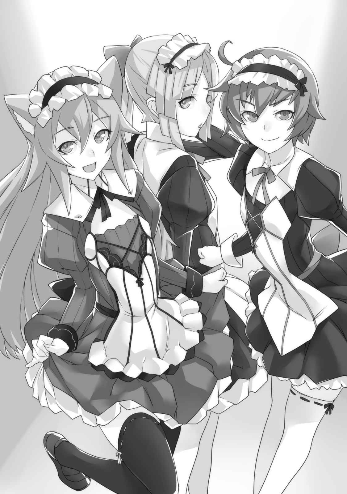
不思議の国のアリスみたいだなと思って、人数分購入しておいた。
やっぱり商売はビジュアル重視だから、可愛らしさをアピールしておかないと。
子供服って高い印象があったんだが、エスト山羊の毛織物の産地であり、布の流通も活発なエストの街では、さほどでもなくて助かった。
なぜかエプロンドレスの在庫が赤色しか揃わなくて「あーここの領主の趣味だからか」と思ったが、作業着としては問題ない。
もちろん肌着も合わせて購入しておいた。
奴隷たちが着ていたボロ着は回収して、よく洗ってから仮店舗の天幕を作る布でも作ろうかと思ったのだが、古着を回収するときに少し問題が発生した。
あんまりにも服がボロだったから、俺が雨合羽用のクロークを着せた娘が「これは貰ったものだから」と手放したがらなかったのだ。この子はなんだっけ、兵士の娘だったよな確か。
クロークにしがみつくように抱いている少女から、無理に取り上げるのも可哀想だったので、俺は回収を諦めた。彼女だけを特別扱いするわけにもいかないので、全員にグレイラットマンのクロークを配るハメになってしまった。
「また、出費が増える」
外で活動することを思えば、雨具も必要だろう。これも、初期投資と考えるべきか。
ルイーズに聞いたら、ギルドの親方は、徒弟に服や靴を一揃えずつプレゼントしてあげなくてはならない。必需品は与えるのが使用者の義務だそうなので、しかたがない。
人を雇うのは大変だ。財布から金がどんどん消えていく。
ちなみに、洗ったついでに名前と種族を聞いて回ったのだが。
商人の娘がシャロン（種族：犬型獣族のクォーター）。
兵士の娘がシュザンヌ、クローディア。
花売りの娘がヴィオラ（種族：ハーフニンフ）。
鉱夫の娘がロール（種族：ドワーフ）。
パン屋の娘がコレット。
娼婦の娘がフローラ。
物乞いの娘がエリザ、メリッサ、ジニー、ルー、リディ、ポーラ。
いきなり全員の名前を聞いても、覚えられそうにない。
商家の娘のシャロンは覚えた、成長の早い彼女をリーダーに据えるつもりだから、後は徐々に覚えていくか。
人間以外の種族で、ハーフニンフというのは水妖精の血が半分混じっているらしい。ヴィオラは汚れを落としてみると蒼い瞳と髪をした少女だった。
よく見ると耳が尖ってるからハーフエルフじゃないんですかと、ライル先生に聞いたら解説してくれた。
「耳が尖ってるからってなんでもエルフじゃないんですよ。エルフは白妖精です。ちなみに、ドワーフは黒妖精ですから、こっちのロールの耳も尖ってるでしょう。妖精族はみんな耳が尖ってるんですよ」
「ドワーフ娘って、人間とそんなに変わらないようにみえるんですが......」
確かにドワーフのロールの耳も尖っているが、この地方には珍しい赤銅色の髪や褐色の肌の色以外は、人間とそう変わらない。
言われてみれば、少し身体つきがしっかりしていて低身長かなと思うぐらいだ。
「ドワーフは成人男性だと特徴的な顔立ちになるんですが、女の子の顔立ちは人間とさほど変わりません。力が強く頑丈で手先が器用な種族なので、鉱夫や鍛冶屋に向いています。しかし、残念ですが女の子の方は、人間とあまり外見が変わらない分だけ、力仕事がイマイチなので奴隷としては......」
「なるほど、そういうことですか」
半ば死にに行くような使い潰しの鉱山奴隷に回されるってことは、評価が低かったってことなのだろう。
俺はドワーフのロールにしても、ハーフニンフのヴィオラにしても、凄く可愛らしいと思うけど、ハーフでも超高値で娼館に売れるエルフと違い、同じ妖精族でもニンフは人気がないらしい。
どうも水妖精は、この世界では池に引きずり込んで人を殺すとか、家の前で泣くと家族が死ぬとか、不幸を呼ぶ存在として妖精と言うより、妖怪扱いされて差別されているようなのだ。
ライル先生によると『ほとんど』事実無根とのこと。えっ、ちょっとは事実ってことか？
「でもライル先生、ニンフも人間とのハーフがいるってことは、つまりその......」
「よっぽどの物好きですね、人間とニンフが交わるのはとても珍しいと思います。あとニンフが人間に恐れられている原因になってしまっているのですが、生まれつき水精霊の加護があります。売り子にすると街の人に嫌がられるかもしれませんが、水系の魔法に適性があるからこの子はそっちで使えますよ」
なるほど。先生が、ヴィオラに薬草学を教えると言い出したのには意味があるのか。
中級魔術師のライル先生は、人の魔法力が感じられるらしいから、何かしら感じ取ったのだろう。
しかし、街の花屋の子供が人間に忌み嫌われるニンフって、やっぱりマズかったんだろうね。みんな奴隷なのだから、それぞれここに至る理由があるのだろう。
ヴィオラを見ると、エプロンドレスの裾を掴んでいる手が小さく震えている。俺が無遠慮な眼を向けただけで、蒼い瞳が潤んで泣いてしまいそう。ニンフが泣くと家族が死ぬなんて聞かされると、ちょっと怖かったり。
都市伝説の類だろうけども......いかんいかん、こういうところから差別が生まれる。俺では、ヴィオラになんて慰めの言葉をかけていいかも分からない。怖がらせてしまってもアレなので、彼女はライル先生に任せることにした。
俺も、もう少しヘタレを直したいところだけど、なかなか初対面の女性と話すのは慣れないんだよな。
たとえ相手が、可哀想な少女であったとしてもである。ヴィオラと同じぐらい、俺も人見知りなのかもしれない。
●
佐渡商会の天幕の下で、シャロンが計算を始めた。商人の娘として、読み書きや算術、初歩的な簿記の知識があるという彼女が、どれほど出来るのかチェックしてみようと思ったのだ。
「しかし、まどろっこしい計算のやり方だな......」
仮店舗にはテーブルすらないので、石畳の上に布を敷いて、そこに表面に縦横の刻み目を入れた木を上下させている。この木の棒が、この世界で言う計算機らしい。
シャロンには、試しに今後一ヶ月の収益予測を出してみるように言ってみたのだが、苦戦しているようだ。
いきなり概算値を出せってのが無理なのかな。計算棒が上下しているのをジッと眺めるのは、じれったい。実例を先に示すほうが早いかなと思って、答えを先に言ってみる。
「シャロン。一ヶ月の売上が金貨二千百九十枚、経費として金貨十七枚を引くと、利益は金貨二千百七十三枚だ」
「ええ？」
そう聞いて、慌てて演算し始めるシャロン。冷や汗をかいている。
せっかちな俺が、横から口を出したので却って分からなくなったらしい。これは一から説明してやったほうがいい。
「石鹸の材料になるモンスター狩りにシュザンヌとクローディアが行くだろう。ヴィオラは薪と薬草を拾う。コレットは食事や洗濯、雑事に走ってもらわなきゃならない。そうすると、石鹸の製造に従事できる奴隷少女は、シャロンを合わせて九人だ」
「はい」
「石鹸の製造が一人一日に百個、いや失敗を多めに見越して八十個とすると一日の製造量が七百二十個だ。そうすると銀貨一枚で売ったとして、一ヶ月で金貨で二千百六十枚となる。俺は硝石作りを続けるけど、せいぜい発破用の爆弾が作れて一個だから、一ヶ月金貨三十枚。合わせて一ヶ月の理想的な売上は金貨二千百九十枚だ。ここまではいいか」
「えっと、はい」
理解を促すように彼女の瞳を見ると、シャロンはコクンと頷いた。よし。
「経費は、俺たちの衣服と食事だな。服が一枚きりというわけにはいかんだろうし、一ヶ月後には新しい服も肌着も一揃えずつ追加してやりたいから、ひと月に一人銀貨五枚。食費は、モンスターの肉ばかりじゃ困るから、一日に白パン二個で大銅貨二枚ずつだな。育ち盛りだから本当は野菜も摂らせたいんだが、それはヴィオラが拾ってくる謎の野草に当面は頼る」
本当は農家からまともな野菜も買いたいけど、思ったより高いからな。ちょっと、予算に余裕が出るまで我慢して欲しい。
「ちょっと待ってください。服はともかくとしても、私たちがご主人様と一緒の物を食べるんですか。パンは黒パンにすれば、一日に片銅貨十三枚分は削れます」
そうか、そんな計算を入れてたから余計に時間がかかったのか。俺はため息をつく。
「そんな細かいところ削ってもしょうがないだろ。シャロン、身体は資本だ。働いた分だけはいい物を食わないでどうする」
質の悪いパンは、小石が交じってたりするのだ。そんな粗悪品を食べさせて歯でも欠けようものなら、余計に治療費がかかる。
「ありがとうございます......」
シャロンはリーダーだ。彼女が、奴隷少女たちの生活費を決めることになる。控えめなのは美徳だと思うが、必要経費まで削られ過ぎても困る。
まさか異世界まで来て、ブラック企業を作るつもりはない。
「続けるぞ。それで十四人分の衣服費が一ヶ月で金貨七枚、同様に食費が金貨八枚に銀貨四枚。雨ざらしなわけにはいかないから天幕や敷物に使う粗布を買うのに、どうしても銀貨五枚は要るだろ。薪はヴィオラが拾ってきてくれるがどうせ足りなくなるから、一万本買うとして銀貨一枚だ。製造につかう大鍋と木組みは金貨一枚だ。そうすると一ヶ月の総経費が金貨十七枚となる」
「えっと、それで一ヶ月の利益予想が金貨二千百七十三枚になると......」
シャロンは、息を荒らげながらシッチャカメッチャカに計算棒をひっかきまわしていたが、ようやく計算が終わったらしく肩を落としてグッタリとしていた。
幼い彼女には、負荷が大きい計算だったらしい。
「御明算です。もしかしてこれを一瞬で暗算したんですか。ご主人様は一体どこでこんな魔法のような算術を習われたんですか......」
シャロンは、王都の商人が行く算術学校に一年通ったそうだ。これでもこの世界で言えば、庶民としてはまともに教育を受けているほうなのだ。
「ご主人様がすごすぎて、自信が無くなります」と犬耳を垂らしていた。
この程度の暗算なら、理系男子としては当たり前なのだが、よく考えると俺は、基礎教育課程だけで九年も算術をやったことになる。
日本の一般的な教育水準は、この世界のレベルからするとすごい高度教育と言われても当然なのかもしれない。
「単なる概算だから大したことはない。算術のやり方は教えてあげるから、シャロンにもすぐできるようになる」
「はい。お手数をおかけしますが、お願いします」
脳の使い方と言うか、考え方の問題だからそれさえ教えればよい。
しかし、この不効率な計算機も、ちょっと改良の余地がある。
日本の算盤を作って使わせたほうが、効率化できるに違いない。試しに書かせてみた帳簿もシステムとしてはこれでいいが、せっかく十進法を使っているのにゼロの概念がないのが惜しい。アラビア数字を教えて記載させたほうが便利なはずだ。あと商会経営なんだから、複式簿記も教えないと。
システムと道具に改良を加えつつ、それを逐一シャロンに教えて、仕事を徐々に任せていかないといけないわけで、俺もやることはたくさんある。
しかし、こうやって概算を出してみると、このままの収入では埒があかないと分かる。
「やはり、火薬をもっと作って儲けるしかないか」
石鹸だけを頼りにしていては、奴隷少女たちを住まわせる商会が出来るまで、どれほどの年月がかかるかわからない。石鹸よりも手間も労力もかかるが、より資金調達が期待できる火薬の製造を増やすべきとの結論に達した。
野宿よりは遥かにマシとは言え、天幕暮らしも長くなると、身体的な負担が大きい。奴隷少女たちが風邪でも引いたら困る。早く商店を建てて、しっかりした床と屋根のある場所に落ち着かせたい。
幸いなことに、発破用爆弾の需要はそこそこあるようで、ロスゴー鉱山のナタルから新しい注文が入っているし、ダナバーン伯爵も爆竹やかんしゃく玉を少し買いたいと言ってくれた。
たぶん伯爵のほうは、俺が奴隷少女たちの生活費を稼ぐのに、血眼になっているのを見ての同情だろうけど。
火薬を作りたいとなれば、ネックになるのは硝石作りである。もっと硝石を、もっと動物の糞が発酵した土を！
エストの街周辺でモンスター討伐依頼をこなしまくって材料調達と日銭稼ぎを兼ねてくれているルイーズと、兵士見習いシュザンヌとクローディア（と、そのあとについて薬草を採取してるヴィオラ）は別として。
石鹸作り班から、新しく硝石作り班を選抜しなければならない。
「ごしゅじんさま、あたしやります」
「ロールか。硝石づくりは、石鹸と違ってかなり辛いぞ」
硝石を作るのは、そこまで難しい作業じゃない。
日の当たらない床下や穴蔵の土、さらに適している家畜の糞が熟成した家畜小屋の土を採取してきて、それを炭酸カリウム（はい、石鹸作りでもお馴染みの灰汁のことです）と一緒に煮て、濃縮して結晶にして、またそれを溶かして煮て硝石を結晶化させる。
しかし、言うのは簡単だが、実際の作業はめっちゃ大変。大量の土を運んで、水に混ぜて煮るってのがどれほど重労働か。若い女の子には、ちょっとキツすぎる労働だ。
しかも、将来の枯渇に備えて、人糞や動物の糞を集めて硝石小屋を建てる仕事まで並行してやらないといけない。
臭い、汚い、キツすぎる、のサンケーだ。俺でもウンザリする仕事なのに、奴隷少女にやらせるのは気が重い。
「はなしきいてたら、できます」
「うーんじゃあ、試しに教えてみるから頼むよ」
赤銅色の髪に褐色の肌をしているロールは、鉱夫の子供だ。他の子より背が低くて、耳が尖ってる彼女は黒妖精である。
女ドワーフは、男に比べると体力的に劣ると聞くが、このメンバーの中で適性があるとすれば彼女しかいないのかもしれない。
一緒に適した土を採取する作業から、ひと通り硝石作りのコツを教えていて分かったのだが、ロールは機転は利かないが人一倍寡黙にコツコツと作業をこなす。
上手く行っても、ダメでも、脇目もふらず作業に没頭するタイプなので、根気のいる硝石作りには向いているかもしれない。
引き続きロールが硝石を生産できるラインを作ってあげて、続きの作業を任せてみる。
上手くできたら褒めてやるし、ダメでも怒ったりはしない。
そのようにしてロールに硝石作りの仕事を教え込んだあと、俺はライル先生と一緒に、いったんロスゴー村に戻ることにした。
商会作りも大事だが、書記官の仕事をほったらかしにしてるのも問題がある。先生は何も文句を言わないから、俺が配慮しないといけない。
もちろん移動のついでに行商もやる。幌馬車に作り立ての硝石と、村で不足してる品（布、塩、雑貨など）を積んで一日の旅路だ。
商会が奴隷少女たちだけになるのは心配だが、ルイーズが留守を守ってくれるそうなのでお願いすることにした。
●
ロスゴー村につくと、商品を雑貨屋に降ろして幌馬車をロッド家に向けた。
なんだかすっかり懐かしくなった農園の前まで馬を回すと、金髪の少女が家の前で出迎えてくれたので、さっそく謝る。
「ごめんね、サラちゃん。長いこと馬を借りっぱなしで。リース料は、後で多めに払うから」
「別に馬はいいの、うちは農繁期以外使わないし、餌代が助かるぐらいだもの。それより私のせんせーを借りっぱなしなことをタケルに謝って欲しいわねー」
そう言ってサラちゃんは、ニンマリ笑っている。なんだ、ライル先生もサラちゃんからの借り物だったのか。
まあ、もともとサラちゃんの先生だもんな。取ってしまったことになるなら悪いなとは思うけど。
先生なら、今は村役場で、留守の間に溜まった書類整理に追われている。
「タケルがせんせーを連れてっちゃうから、私の文字の勉強が進まないのよ」
サラちゃんは、ちっこい身体を反り返らせて、居丈高に恩着せがましく言ってくる。実際に恩を着せられまくってるので、何とも言えないけどな。
俺の代わりに、澄んだ声がサラちゃんの言葉に応えた。
「なるほど、では宿題をたくさん出しておきましょうね」
「あっ、ライル先生」
「えっ？」
村で別れたライル先生が、すぐ追いかけてきていたようだ。
「先生、書類の整理は終わったんですか」
「処理して王都に発送するのに、五分もかかりませんでしたよ。何のために私が居るのか分からなくなりますね」
有能すぎるライル書記官は、ちょっと寂しそうな顔をした。
地方勤務って、言ってしまえば左遷みたいなもんだもんね。
「でも、サラちゃんが向学心に燃えているとは知りませんでした。教師として私も鼻が高いですね。たっぷりと宿題を出しておきましょう」
「うあー助けてー」
サラちゃんは、ダッシュで家の中に逃げていってしまった。どこの学生でも宿題は苦手らしい。やっぱりまだ子供だなあと、俺はその様子を見て和んだ。
農園で働いてるときは辛かったが、こうやって落ち着いてみると田舎は和む。みんな忙しいエストの街に比べれば、農村はのどかなものだ。
状況が許すなら、ちょっとここで休んでいきたい気分だが、今はそれどころではない。
硫黄を採取しにいってから、発破用の爆弾を作って鉱山に納品しなければ。俺も今や商会主なので、忙しいのである。
●
「いやー、お前の爆弾はいいな。すごく捗るぞ」
久しぶりに会ったロスゴーの鉱山代官、ナタルの第一声がこれだ。
ライル先生と一緒に、作った発破用の爆弾を持っていくと、あるだけ全部くれとシレジエ金貨が詰まった袋を渡された。
また現場に出ていたのか、半裸で相変わらずムキムキの筋肉に薄っすらと汗が浮かんでいる。会うたびにこうだと、ずっと半裸で過ごしてるんじゃないかという疑惑が湧いてくる。
「これなら鉱夫の手では割れない硬い岩盤も吹き飛ばせるから、上級魔術師をわざわざ招聘して打ち抜いてもらう手間を考えれば金貨一枚でも安い」
いろいろと工夫してくれたらしく、ナタルが実地で指導して有用性の高い使い方を編み出してくれたそうだ。
「他の鉱山の技師連中にも実演して見せてやったんだが、みんな使ってみたいって言ってる」
「そうですか、それは嬉しいですね」
ナタルが口利きするから、他の鉱山にも売り込んでみないかというありがたい話だった。
商会立ち上げで、資金がどんだけでも入用なこっちとしては助かる。
「あとイエ山脈に沿って国家鉱山に爆弾を売り歩くなら危険はないが、王都のほうへ行くなら街道でも十分に気をつけろよ」
帰り際に、ナタルにそんな忠告をされた。
特に王都に行く用事はないが、少し気になる話だ。
「どうしてですか？」
「どうもまた、王都方面のモンスターの群れが活発化しているらしいんだ。行商人の間でも危ないって評判になってる」
「ああ、なんかそういや王都側は物騒だとか聞いたことあるような」
「王国の騎士団ですら領地を守るのに苦戦している。行商のキャラバンが潰れるだけならまだ分かるが、それを狙う街道沿いの盗賊団までモンスターの波で壊滅したって噂だから、今回は本気で脅威だな」
行商人を狙う盗賊が潰れるのはいい話だと思うが、モンスター活発化は怖いね。
原因は何なのだろうな、ちょっと気にかかる。
商会経営もあり、奴隷少女たちの面倒を見なければならないので、これ以上のトラブルはゴメンだ。だから、安全なエスト伯領を出るつもりはないので、俺には関係ない話ではあるが......そう考えて、一つ思い出したことがあった。
「ライル先生、エストの街近くで壊滅した奴隷商人を襲ったモンスターの群れって」
「そうですね、王都郊外で異常繁殖したものを、こちらまで引っ張ってきてしまったんでしょうね。直接は関係なくても、注意しないといけません」
ライル先生も、ちょっと考え込んでいるようだった。
商売で生計を立てるにしても、戦闘力の強化はやっぱり必要になってくるのか。
やっぱり、ここは厳しい世界だなと思う。
しかし、俺も商魂たくましくなってきたので、困っている人が居ると言うことは金になるってことだとも気がつける。狩れる程度の数なら、モンスターはむしろ資源と見ることもできる。
「そうだ、こんなのを作ってみたいんですが、こっちの鍛冶屋で作れますかね」
戦闘力の強化と考えて、思いついて書きためておいた設計図をいくつかナタルに見せることにした。
火薬と爆弾が出来たとなればすぐに思いつく、鉄砲と大砲である。
俺の世界で戦争の被害を拡大させたこの技術を、安易にこちらの世界に持ち込むのは少し迷った。
だが、俺のような魔法力がない人間が化物から身を守るために、やはり強力な飛び道具が欲しい。
「なんだこりゃ、不思議な形だな。鉄の棒の中に穴を開けてるのか......」
「鉄の穴の中で火薬を爆発させて、その勢いでまっすぐ鉛の玉を射出するんです」
「うーん、なんでそんなまどろっこしいことをするんだ」
爆弾があるなら、敵に直接それをぶつければいいじゃないかと言うのだ。
ナタルはただの技師だから、鉄砲や大砲の効果を想像できないらしい。
まあ、俺も現物の威力を見てなくて、歴史を学んでなければ同じような発想をしたかもしれない。
「例えばですよ、投石機ってこの世界にもあるでしょ。大砲だとあれよりはるかに長い距離を大きな鉄の玉が飛ぶんです。そうするとどうなりますか」
「そう聞いても、よくわからん。費用さえ払ってくれるなら、この形の筒と玉を鍛冶屋に作らせてみてもかまわないが、見たことも聞いたこともないし、ちょっと......いや、かなり時間かかるぞ」
ナタルは分からなかったようだが、隣で聞いていたライル先生が真っ青な顔になって、俺の描いた設計図を奪い取って食い入るように見ていた。
さすがチートキャラ疑惑のあるライル先生は、すぐ理解してくれたか。
「ダコール代官殿！ 製造はお願いしますが、これはくれぐれも極秘にしてください」
「お、おう。いいけどよ、ラエルティオス書記官ってこんな人だったっけ？」
俺に聞かれても困るよ。
ナタルは、血相変えたライル先生という珍しいものを見てびっくりしたようだった。
珍しく険しい顔のライル先生は、なおも俺の稚拙な設計図を見つめながら、「これができたら戦術の概念が変わる......」などと呟いている。
分かってくれて嬉しいけど。
いくらなんでもこの世界の人間にしては、先生の察しが良すぎて引く。
●
商売も終えて、ロッド家まで行ってくつろぐ。
発破が売れて金ができたから、馬代も多めに払っておいてあげよう。なんだったら買い取ってもいいぜ。
「馬のことはどうでもいいんだけど、あんた、いつまで居るつもりなの」
「ありゃ、お邪魔だったかな」
サラちゃんにそう言われて、ちょっとショック。家族同然だと思ってたのに、俺やっぱりいらない従業員だったんだね。
「ちがっ......、そうじゃなくて、いつまでこっちにいられるのかってこと」
「まあ少ししたらエストの商会も心配だし、帰ろうと思うけどね」
「ふうん、そうなんだ......」
なんか、サラちゃんご機嫌ナナメっぽいかな。まあ、ライル先生を俺の好き勝手で連れ回しちゃってるしなあ。
「ああそうだ、サラちゃんのお土産にこれを買ってきたんだよ。良かったら着てみて」
「まあ、エストの街の服は素敵ね。タケルにしては気が利くじゃない」
エストの街で売っていた赤いエプロンドレス（子供用）だ。サラちゃんにも似あうだろうと思って、余分に買っておいたのだ。
先を考えると、硝石小屋の土地と材料を確保するのに、農家の協力が必要になる。村の有力な富農であり、家畜をたくさん飼ってるロッド家にも手伝ってもらいたい。こうして、サラちゃんのご機嫌を取っておくのも将来のための投資なのだ。
「あと、コーヒーって飲み物もちょっと持ってきたんだけど」
台所を借りて、丹念にドリップした至極の一杯を出してみる。
「なにこれ苦っ、これはいらない」
この味は分からないか。しょうがない、まだ子供だからな。
そういえば俺も小さい頃は苦手で、ミルクや砂糖をたくさん入れて飲んでいたのが、いつの間にかブラックの方がよくなってしまったんだよね。
「王都ではカフェが流行ってて、貴族はみんなこれを飲んでるらしいけどね」
「えーっ、そうなんだ」
そう聞くと、サラちゃんは現金なもので、何とかがんばって飲もうとする。
「コーヒーに砂糖とミルクを入れて飲めばどうかな」
「まあミルクとお砂糖をたくさん入れれば飲めないことも......でも苦いー」
サラちゃんも子供なりに都会への憧れがあるのか。カフェオレにすることを教えてあげて、それでも苦そうに飲んでいた。
「そうだタケル、久しぶりに温泉行く？」
「あー、いいねえ」
疲労回復には、やっぱりそれが一番いいのかもしれない。
まあ、スコップで温泉を掘るのはどうせ俺の仕事になるわけだが、入浴の魅力には抗いがたい。
温泉が湧いている河原に行き、せっせと掘る。サラちゃんと温泉に浸かって、前から気になってたことを聞いてみることにした。
女性には聞きにくいことであるが、相手はまだ十二歳の子供だから大丈夫。
「ねえ、肌着って付けないの？」
「そんなの、この村で付けてる人いないわよ」
いやいや、そりゃないだろう。子供だからまだ付けなくていいってことなんだろうか。うちも奴隷少女をたくさん雇っている手前、気にかかることなのだ。大人の女性は、インナーがないといろいろと困るんじゃないかな。
まあ、お土産にしたエプロンドレスが好評だったようだし、次に来るときにサラちゃんに下着も一緒に買っておくかと思った。
温泉でたっぷりと英気を養ったらそろそろ出発だ。
ざっとロスゴー村の雑貨屋と道具屋を見て回って、次に来た時に何を仕入れるか計算しておく。
どうも、全体的に価格が高く品薄だ。王都への街道がモンスター増殖で流通が滞っているのが原因かもしれない。
おかげで運んできた荷は高く売れたが、相場の乱れは少し気になるところだ。
ロスゴー村から仕入れて、幌馬車で運ぶのはやっぱり鉄製品。
あと火薬の原料に、温泉から硫黄を大量に採取して積んでおく。
そして、俺とライル先生は再びエストの街へと向かう。
王都でモンスターが増殖しているとの噂を聞いていたので、少し緊張していた。
前衛職のルイーズもいない状況だ。ついに俺の出番があるかもしれない。
密かに戦えるよう訓練している鉄剣を握りしめていたが、エストへの街道を幌馬車で移動する間、全くそんな機会はなかった。
他の商人の馬車も普通に行き交ってるし、増えてるのはエストより向こうの王都方面だけなのだろう。
●
「ご主人様おかえりなさいませ」
佐渡商会（仮店舗）の店番をしているシャロンが笑顔で出迎えてくれた。
「あれ、シャロンちょっと背が高くなった？」
「はい、ご主人様のご命令どおり、ご飯をたくさん頂いておりますので」
獣人という一般的なファンタジー世界の粗野なイメージに反して、シャロンは頭がいい。
最初は遠慮していたが、食費がかかっても早く成長するのが先行投資だと言う俺の言葉をすぐ理解してたくさん食べるようになった。
俺が作って教えた算盤も、すぐ使えるようになったし、アラビア数字を使った筆算も九九の知識も、綿が水を吸うように吸収した。
彼女が付けている帳簿をチェックすると、モンスター石鹸ができたなりに即座に売り切れて行く様子がよく分かる。しっかり黒字だった。
モンスター石鹸は、予想していた量よりも売れすぎている。街で使う分の需要より、たくさん売れている。
「あのご主人様、もしかしたら石鹸は転売されてるのではないでしょうか」
「それはそうだろうね」
おそらく銀貨一枚って値付けが安すぎて、転売されているのだ。
俺も、それは薄々気がついていた。
でも、構わないと思っている。
俺のささやかな商会には、まだ他所の街まで売りに行く販路がない。だから、他の商会が他所の街まで運んで売ってくれるのはむしろありがたい。
石鹸は消耗品だ。
他所の商会が転売して、他所の街に価格上乗せして売っているのなら価格競争には絶対勝てる。
いずれ銀貨一枚でうちの商会が売りに行けば、他の商会が転売で掘り起こした需要をごっそりと頂ける寸法だ。
怖いのはコピー商品を作られることで、特許のないこの時代には、いずれは真似を試みる商会が出てくるだろう。
転売で適度に他の商会を儲けさせておくのは、その時期を遅らせることになるのではないかとも考えるのだ。
「さすがご主人様です。そこまで深い考えがおありになるとは気が付きませんで、出すぎた事を申しました」
「転売にすぐ気がついて、俺に指摘してくれるシャロンも優秀だよ」
シャロンの明るいオレンジ色の髪を撫でて、よしよしと褒めておく。
外見は普通の人間の頭髪に見えるんだけど、撫でてみると確かに長毛種の犬の背を撫でてるような、サラっとした手触り。
シャロンが気持ちよさそうにしてるので調子に乗って撫で回すと、ぴょこんと犬耳が飛び出してきた。面白いものだな。
ルイーズたち戦士隊は、まだ狩りに出ているようだ。仮店舗の天幕の中でやっている石鹸作りも確認する。特にこのあたりのモンスターの油分で石鹸が出来にくいってわけではなく、製造の成功率は上がってきている。あと余った皮が何かに使えれば完璧なのだが、これは使い道が思い浮かばない。そのまま革細工師にでも売りつけるしかないようだ。
ハーフニンフのヴィオラが野山で採取してきた薬草類を、一つ一つ確認するライル先生と別れて、俺は街の外でロールが黙々とやっている硝石作りを見に行った。
「ごしゅじんさま、きょうはこれだけできました」
「うん、ごくろうさま」
煮立った大鍋に動物の糞が混じった土を入れると、これがまた結構な悪臭がするのだ。
だから、この作業だけはさすがに店の中ではできない。
ロールが差し出す布袋のなかに、細長く結晶化した白っぽい硝石がたくさん詰まっていた。
「おおー、よく出来たな。何かご褒美をやろうか」
「えっと、その......ごしゅじんさまにほめていただければ、じゅうぶんです」
なかなか殊勝なことを言ってくれる。
頭を撫でてあげて、ダナバーン伯爵のところからくすねてきた貴重な砂糖菓子と、ちょっと塩味のキツいナッツをあげた。そんなに、美味しそうに食べてくれるとこっちも嬉しい。
きつい肉体労働だから、栄養補給に味の濃いお菓子がいいだろう。火薬の原料を作るロールには、特別だ。
稼ぎ頭には、それなりに優遇しないといけない。
「おいしいです」
「そうか、まあ味はそこそこだよな」
ロールは喜んでるけど、この世界のお菓子は俺にはやたら甘いとか塩辛いだけで、イマイチな味なんだよな。
ファンタジー世界の乏しい材料でも、もうちょっと美味い菓子を作れないこともないように思う。
ロールと商会に帰る途中で、ちょうど狩りから帰ったルイーズと兵士の子二人に出会った。
たしかシュザンヌと、クローディアだったか。シュザンヌは鉄の槍、クローディアは小弓とショートソードを装備している。
ルイーズが前衛にでて、まだ若く経験の浅い二人にはなるべく遠距離から攻撃させて怪我をさせないようにという工夫なのだろう。
その戦士三人の後には、非戦闘員であるヴィオラが、拾い集めた薬草や枯れ木をいっぱいに入れた篭を担いで続く。
薬草もそうだが、不足しがちな木材はたとえ木切れであっても買うと結構するので、ヴィオラがしてるのも地味に重要な仕事だ。
それにしても、またモンスターをたくさん狩ったらしく、シュザンヌもクローディアも背中に山盛りになった毛皮を担いでいた。
そして、ルイーズは凄く嬉しそうに、何かの肉と内臓が煮込んである大鍋を器用に担いでいた。
「ルイーズ、それは......」
「みんなの夕飯だ、今日は新鮮なワーウルフがたくさん採れたぞ」
あーやっぱり、モンスターの内臓シチューかあ。新鮮なワーウルフって表現はどうなんだろう。野趣あふれるルイーズの感覚だと、モンスターは採取できるものらしい。モンスターはお肉か。ここ最近の俺たちの食生活を考えると、間違っては居ないけど。
人狼ってたしか、結構強いモンスターじゃなかったっけ......。
そんなことを考えながら、ワーウルフの肉と内臓シチューをいただく。うん、自然の旨みだ。エストの街は、近くに岩塩が取れるところがあるから、塩味が使えていい。肉と内臓と塩、シンプルな組み合わせだが自然の滋味がある。
うーん、しかし内臓料理も悪くはないんだけど、成長期に栄養が偏らないように、しっかり野菜も摂るようにみんなに言っておかないと。
病気とかしている子は居ないようだから心配はしていないが、みんな育ち盛りだから、食生活には気をつけないとね。
●
夜、焚き火にかけた大鍋を囲みながら食事をしているルイーズに、モンスター活性化の噂について聞いてみた。
「確かに、そういう傾向はある......」
あれ、そう言ったっきり黙ってしまった。
薪の明かりを見つめて黙考してしまっている。
口数が少ないのはルイーズっぽいけど、なんか反応がいつもと違うような。
「あのルイーズさん？」
「ああ、すまん。......そうだな、エストの街の郊外でも、討伐依頼は増加してる。昨日も街の郊外で商隊が襲われて、ギルドの依頼で討伐に協力してきた。街道も、王都に向けての道はかなり危険になってきてる」
「原因は何なのですかね」
「......」
ルイーズは、また黙り込んでしまった。
「王都の外れにある『魔素の瘴穴』の蓋が開いているせいですよね」
そこに、ライル先生が口を挟む。
「ライル先生。その『魔素の瘴穴』って、ダンジョンみたいなもんですか」
「ダンジョンってほどの規模ではないんですが、なんと説明したらいいのか」
これは一応、国民に不安を招かないよう王国の機密になってるので内緒ですが、と付け加えて、先生は詳しく説明してくれる。
魔の山と呼ばれる、黒く禍々しい杉がたくさん生えた小山が王都の付近にあって、山頂付近に『魔素の瘴穴』があるそうだ。いかにも、ファンタジーっぽい話である。
「かつて、この国の英雄が封印した魔素が漏れだす瘴穴が、何らかの理由で開いてしまったんですよ。モンスターは魔族の類ですから、魔素を浴びると活性化してしまいます」
「じゃあ、そのダンジョンの蓋を閉めればいいんじゃないですか」
俺がそう言うと「バカなことを言うな！」とルイーズに怒られてしまった。
えっと、そんなに怒られるようなことを言ったかな。
ルイーズは、自分が怒鳴ってしまったことに驚いたような顔をしてすぐ謝った。
「すまん......、あの穴は王国騎士団の討伐隊が行っても封印に失敗したぐらいなんだ。あそこまで強力な魔素が出ている状態で冒険者が行っても、入り口に近づく前に強化された魔物にやられてしまうだろう」
そんな状況なのか。
じゃあ、無理だなとすぐ諦めた。
うちで一番強いルイーズが何ともならないものを、俺がどうこうできるわけもない。
今のところ、こっちの街道は安全だし、困ってはいない。
ちなみに『魔素の瘴穴』周辺の街や村は大量発生したモンスターの群れによって壊滅してしまったそうで、街道や王都にまでなだれ込もうとする敵を、騎士団や兵団が抑えようと必死に戦い続けてるらしい。
ちょっとした戦争が起こってるんだな。物騒な話だ。
ファンタジーなんだから、どうせそのうち勇者か英雄か知らないけど、そういうのが出てきて見事に封印してくれるだろう。
俺は残念ながら、そういうのに成れるという思い上がりはもう持っていない。
時間があるなら今後の商売や、商会の新しい建物を造る計画でも相談したほうが有意義というものである。
●
エストの街で商売を励むこと一ヶ月。
ついに、佐渡商会の社屋が完成した。
最初は木造を考えていたのだが、シレジエ王国は木材の価格が高い。それじゃあいっそと、もう少し金をかけてレンガ造りのしっかりした社屋を建てたのだ。
二階建ての小さな社屋で、商店と奥の倉庫と二階に取った住居スペースのみ。
店の後ろに広がる石鹸作りの作業場は、まだ天幕を張っているだけの状態だ。
いずれもっと金ができれば増築していきたいと思うが、今のところはこれで十分だろう。これだけでも、材料と人手を集めて建造するのに、金貨二千枚もの大金がかかってしまったのだ。
まあ金の心配はそこまですることはない。しっかりとノウハウが蓄積されて効率的になってきた石鹸作りに加えて、働き者のロールが頑張ってくれるお陰で硝石の製造が軌道に乗った。発破用の爆弾も、ナタル代官の紹介のお陰でイエ山脈に点在する国家鉱山に販路が広がって、かなりの儲けになってきた。
俺は今、ライル先生と幌馬車でイエ山脈エスト地方に点在する鉱山を回って、発破用の爆弾を売りつけているところである。
鉄鉱山の村が多かったが、炭鉱に銅鉱や錫鉱、銀鉱山まであって、爆弾を納入するついでに、様々な鉱物製品を仕入れて商売の糧にする。
ゲームとかだと、銅や錫は鉄より弱い金属とされているが、むしろポピュラーな鉄よりも貴重で価格が高い。銀食器には負けるが、青銅や錫の食器も実用的にだけでなく美術的に価値のある物が多い。
軽くて扱いやすい青銅は、大砲の生産にも使えるかもしれない。ここでコネを繋いでおくことは大事だ。
貨幣にも使われる銀鉱山は、厳重に管理されているのか。詰所には兵士も多くて出入りの警戒が物々しかった。鉄鉱山に鍛冶屋ギルドがあるように、銀鉱山には造幣局があるんだから当たり前とは言えるが。
あと変わったところでは、魔宝石の鉱山なんてのもあった。
魔宝石は、霊山でもあるイエ山に長い年月をかけてマナ（魔力の総称。魔族の使う邪悪な魔素から精霊魔法、神聖魔法、四元素の魔法まで様々）が結晶化したもので、力の性質に合った透明度の高い赤や青の宝石だ。
俺は宝石には詳しくないが、ルビーやサファイアみたいに美しい。
実用品だが、宝石の類として見ても価値が高い。銀鉱山と一緒で、ここもかなり厳重な警備がされていて盗掘を防いでいた。
「この魔宝石を使えば、俺も魔法が使えるようになるわけですか」
「タケル殿の場合は、まったく魔法の素養がありませんからね。それでも、適した魔宝石と魔道具を組み合わせれば使うことができます」
魔宝石鉱山の村には、魔宝石を加工して作られたアイテムのショップがある。
火種代わりに便利に使っていた『炎球の杖』の魔力が切れかけていたので、フルチャージされている魔宝石を店で入れ替えてもらう。
この『炎球の杖』はフルチャージで、最大出力のファイアーボールが五回、通常出力で十回程度撃てるのが目安。
普通の魔宝石は、一番安くても銀貨五枚もする。
「つまり、魔法一回に銀一枚使うコストになるわけですね」
俺がそう暗算すると、先生は少し驚いた顔をした。
「魔法の金銭的コストなど考えたこともありませんでしたが、そう言われると魔法の価値は高いですね」
ライル先生は中級魔術師で、本当にささっと魔法を使ってみせるが、一晩寝ただけで回復するマナの総量を考えると、一日に金貨数枚分に相当することになる。
魔術師というものが、初級で単一系の魔法しか使えなくても、特別な人と扱われている意味が分かろうと言うものだ。
あと、初歩の水魔法が使える『水流のリング』を束にして買っておくことにする。
空気中から水分子を集めて水流を出せるだけの魔道具だが、これもまとめて買って値切っても、一個で銀五枚。
「そんなものをたくさん買って、何に使うんですか」
「商会のトイレ用に使おうかと思って」
「そうですか......」
魔術師のライル先生にはピンとこないだろうが、トイレの後処理は俺たちには切実な問題だ。
石鹸と合わせて手洗いにも使えば、衛生問題の改善に大いに役に立ってくれるだろう。
爆弾が飛ぶように売れるので、資金的に今は余裕がある。
「ライル先生も、何か欲しいものがあったら」
「じゃあ緊急用に魔宝石をいくつか貰ってもいいですか」
ライル先生が欲しがったのは、質の良いものだ。いくつか選んだ高級な魔宝石は、通常の魔宝石より格段に力が篭もっている。
素人目に見ても輝きが違う。
通常の三倍どころか、五倍、六倍の魔法力が宿っていてマナ切れに備えて、お守りがわりに魔術師が持ち歩くことが多いのだとか。
値段は一つで金貨三枚とか、五枚とか、かなり値が張る。
しかし、緊急用と考えれば高くない。
ものはついでだ、これも普通の魔宝石とセットにしてたくさん買っておけ。
「ええっと、欲しいといったのは私ですけど、そんなに買ったら今回の売上を全部使ってしまうんじゃないですか」
「構いません、ここが産地なんだからここより安いところはないはずです」
俺だって、各地の相場は調べて取引している。
たくさん買いすぎて在庫が余っても、エストの街で売って損はしない品なのだ。
もちろん、金に困って予備の魔法石を売り払うような資金ショートは起こさないつもりだが。
「ところで、回復魔法の魔道具とかはないんですかね」
「ないことはないですが、神聖魔法は教会の管轄になります。下級の回復魔道具を探せばあるかもしれませんが、ポーション飲むのと変わりませんよ」
なるほど、道理で回復系魔法の魔道具をお店で見かけないわけだ。魔術方面で万能型に近いライル先生も、回復魔法は使えない。
採取した薬草だけでは心もとないので、今でも行商の合間に相場の安いところを見計らって、回復ポーションを買い足して溜め込んではいる。
何をするにしろ、金はいくらあっても足りないので商売に励むしかないね。
イエ山脈のエスト伯領をぐるりと巡る行商を終えて、エストの街に戻った。
「ようやく戻ってきたなあ」
「......少し街の様子がおかしいですね」
エストの街に入ると、ライル先生の言うように街が騒然としている。門を守る衛兵の顔も険しく、慌ただしい雰囲気が漂ってる。
「早く商会に戻りましょう」
「ですね」
佐渡商会は、街の広場のすぐ近くだ。エストの商業の中心地であり、いつも賑やかな街の広場の前まで来て驚いた。いつも賑やかな市場とはいえ、今日はあまりにも多くの人がごった返している。
しかし、賑やかではあるが、まったくお祭りのような雰囲気ではない。
街に戻ってきた俺たちが見たのは、広場にキャンプを張って身を寄せあう、傷ついた難民の群れだった。
第二章 「佐渡商会」
エストの街の広場は、着の身着のままで避難してきた人々でごった返している。
そりゃ、街も騒然となるはずだ。災害かなにかでもあったのだろうか。
佐渡商会に入ると、苦り切った顔をしてるルイーズと兵士見習いシュザンヌ、クローディアが出迎えてくれた。
うちの商会の戦士隊が、モンスター討伐に出てないとは珍しい。
「何があったんだ」
「オナ村がモンスターの大群に襲われた。私達も街の衛兵や他の冒険者と一緒に迎撃に出たんだが、あまりの数に押し切られてしまった」
オナの村は、エストの街からすぐ北東。のどかな牧場が広がる、二百人あまりの村人が住む集落だ。
王都方面で大発生したモンスターの余波が、ついにエストの街周辺まで雪崩れ込んできたってことなのか。
「それで、ルイーズたちに被害はなかったのか」
「ああ、大丈夫だ。ポーションもたくさん貰ってたしな。ただ、私達がいるのに傷ついた村人を逃がすのがやっとだった......」
ポーションで怪我は治っているが、ルイーズたちの戦闘でズタズタに裂けた革の鎧を見れば、どれほど激しい戦いだったのかは予想がつく。
しかし、ルイーズはいつになく肩を落としているなあ。
オナ村にはうちの商会も行商に通っているし、牧畜業が盛んな村だから硝石作りの土を貰うのにも世話になっている。
店の前で、キャンプを張って身を寄せ合う村人たちにも見知った顔がいるし、俺は傷ついた人がいないか見にいくことにした。
「ルイーズ、怪我してる人に回復ポーションを使っていいか？」
「なんで、そんなことをいちいち聞くんだ。タケルの物なんだから、勝手に使えばいいだろ」
ルイーズはそう言うと思ってたよ。素っ気ないけど、たぶんルイーズたちは、自分の持ち分のポーションを、全部怪我人の治療に使ってる。
オナ村はエスト伯領の領民だから、街の教会の治療師も出ているが怪我人が多くて手が回っていない。
おそらく街の回復ポーションは全部売り切れてるだろうから、いま転売すれば高値で売れるんだろうなと思いつつ、そういう邪念は押し殺して、怪我してる人に配ることにした。
「ありがとうございます！ ありがとうございます！」
「いえいえ、困ったときはお互い様ですから」
俺はなるべく、善人面して助けてやることにした。
いま俺に感謝の言葉を投げかけた村の若者。俺のことを「いい人」だと思っただろうな。
ここは、損して得取れだ。近隣の村人なんだから、ここでいい顔をして恩を売りまくっておけば、後々で大きな利益となって返ってくる。
それにしても......せっかくエストの街に商会まで作ったのに。このままモンスターどもに台なしにされるのを、手をこまねいて見ているつもりはない。
これはいよいよ、剣ではなく銃の力が必要な事態になったなと。俺は一人静かに覚悟を決めた。
●
「なに、オナ村をモンスターから取り返してくれると？」
「ええ、あとできれば押し返して、近隣のモンスターの群れを根絶やしにして見せますよ」
ダナバーン伯爵の城で、俺は大見得を切ることにした。
さすがにホラ吹きだと思われたのか、伯爵は疑わしそうに俺のことを見る。
「もちろん、それをしてくれるならワシはとても助かるのだが......」
「新兵器を使いますからね。勝算はありますよ」
ロスゴー村のナタルから、銃と大砲の試作品が完成したとの連絡があった。いまライル先生に、馬車で取りに行ってもらっている。
この間にルイーズたちには、モンスターの群れの位置と規模を偵察してもらっている。
エストの街は、もともと常備軍の数が少ない。
そして、モンスター大発生の震源地が王都付近ときている。王都の騎士団や兵団も、王国の直轄領と街道の防衛にかかりっきりになっていて、後背地のエスト伯領まで応援に来てくれる状況にはない。
「そうだった、タケル殿のところには不思議な新兵器があるのだったな。よろしい、特別討伐依頼をだそう。オナ村を救ってくれるなら白金貨十枚でどうだ」
「おお、これがプラチナコイン。噂には聞いてましたが、初めて見ました」
白金貨とは、希少なプラチナで作られた特別な貨幣で一枚で金貨十枚の価値がある。つまり白金貨十枚なら、金貨百枚分。
ほとんど市場で出まわっていないので、貴族か大商人の取引でしか使われない。喩えるなら十万円金貨みたいなもんだ。赤いテーブルの上でキラキラと輝くプラチナコインを見て、思わず手を伸ばしたら引っ込められてしまった。
「まだ、あげないぞ。村を襲ったモンスターを討伐できたらだから」
「はい、分かってます」
伯爵もこれだけの資金があるなら、もっと常備兵を増やすなり傭兵団でも雇えばいいんじゃないかなとも思うのだが。
もともとエスト伯領は、国境の紛争地域から程遠い平和な地域なので、緊急に雇おうにも雇えないのかもしれない。武力を売る相手としては、ちょうどいいよなあ。
「さらに周辺のモンスターの群れを一掃して領地の平和を回復してくれるならば、金貨三百枚......いや、五百枚だそうぞ！」
「では、そういうことでよろしくお願いします」
俺は出されたコーヒーを飲み干すと、伯爵の城を後にした。オナ村解放で、白金貨十枚。さらにモンスター討伐で金貨五百枚か。
豪気なダナバーン伯爵にしても、かなり大盤振る舞いした約束だが、きっと出来るわけないと思われてるんだろう。
自分でもどこまで出来るかどうか分かんないぐらいなんだから、そう思われてもしょうがない。
どうせ鉄砲と大砲をテストするついでなのだ。この稼ぎ時を最大限に活用したい。
●
ライル先生が銃と大砲一門を運んできてくれたので、佐渡商会で作戦会議を行った。
ルイーズたちの偵察によると、オナ村を襲って居座っているモンスターの群れは、武装したオーク百匹を中心にオーガやゴブリンが百匹近く、合計二百匹の大部隊だそうだ。
ファンタジーでお馴染み、豚顔の人型モンスターであるオークはオーガやゴブリンよりも、きちんと武装して（武器を持つだけでなく防具まで着けてる）知能も高いので、ちょっとした軍隊を相手にすると思わなければならない。
ちなみに、オークはあんな豚顔をして意外に社交的で、他の人型のモンスターと組んで大きな群れの中核を構成するが、ワーウルフとだけは仲が悪く群れ同士がぶつかると殺し合うらしい。
ぜひ潰しあって欲しいが、近くにワーウルフの群れは居ないとのこと。残念だ。オークは、人間の飼ってる家畜が大好物である。牧畜業が盛んなオナ村は、家畜目当てで襲われたのだろう。
モンスター軍およそ二百匹の大軍に対して、こっちの戦力は、俺と魔法使いのライル先生とルイーズと奴隷少女十三人。
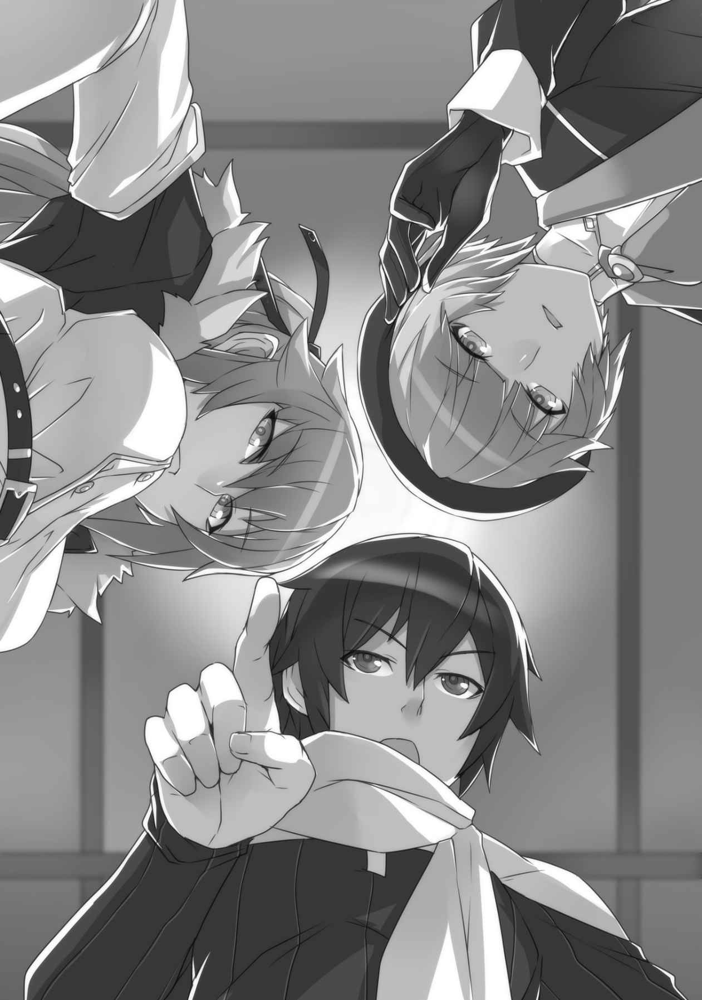
オナ村奪還に際して、難民となった村人から、若くて戦えそうな村人二十人が協力してくれることになったから、これで合計三十六人になる。これでも、二百匹を相手にするには厳しい数。
もちろん、通常ならの話だ。こちらには、近代兵器がある。ロスゴー村の鍛冶屋に製造してもらった銃は、マッチロック式のマスケット銃。見た目は戦国時代によくある火縄銃と思ってもらえばよいが、あれは狩猟用の銃なのだ。
俺がデザインしたのは銃床があり、若干大型で軍事用として使いやすいものだ。
給弾は紙薬莢を採用した。弾込めは、本当の古臭い火縄銃よりは容易。エストの街の郊外で俺が試し撃ちすると、発砲音に村人は驚いて腰を抜かした。
「これを使って戦ってもらうわけだが」
まあ、慣れてもらうしかない。
味方が驚くぐらいなんだから、敵をビビらせるにはちょうどいい武器になるとも言える。火薬を扱い慣れており、銃の構造と性能を把握している俺はともかくとして、おっかなびっくり試し打ちさせている奴隷少女と村人の中で、一番早く習熟したのはシャロンだった。
「反動はそれほどでもないだろ。引き金を引くときに射線をぶらせないように」
「こうですか」
バーンと大きな音がして、シャロンの放った鉛玉が的に吸い込まれていく。上手いもんだ。もしかすると俺より上手いかもしれない。他の奴隷少女たちも、慣れるとまともに前に向かって撃てるようになった。
志願の村人たちもみんな若いので、半日もすれば腰を抜かすことはなくなった。やはり新しい技術には、若者が向いているのだ。
「有効性は分かるが、私は弓のほうがいいな」
「ルイーズは、慣れた武器で戦うほうがいいかもね」
優れた戦士であるルイーズは、銃を試し撃ちして渋い顔をしていた。もちろん彼女も、まともに銃は扱えるようにはなった。
ただ、すでに手投げナイフや小弓の扱いに熟練しているルイーズからしたら、銃はさほど使える武器には見えないのだろう。
素人が撃ってもそれなりに使えるというのが、弓に対して銃の利点と言えるわけで、これは計算済みだ。
幌馬車で、オーク大隊に占拠されているオナ村が一望できる丘まで移動して、奇襲ついでに大砲の試し撃ちを行うことにした。
「みんな大砲撃つときは、耳を押さえてろよ」
構造が大きいだけで、マスケット銃と原理はそう変わらないが、火薬が爆発力の強い黒色火薬なので爆音が激しすぎた。
ハンマーで耳元をぶっ叩かれたかと思うほどの凄まじい轟音が響き、大きな鉄の弾が目標からあさっての方向に飛んでいく。地面が揺れて、固定してる石の台座が土にめり込んでいた。
試し打ちなのだから、前に飛ぶだけで十分とは言える。計算したよりも爆発力が強すぎて台座が持たないから、次は火薬の量を少し減らしたほうがいい。
「上手く命中すれば、威力があるのだが......」
そうつぶやいて丘から見下ろすと、オナ村に陣取っているモンスターの群れは大混乱に陥っていた。あれ、まったく命中してないんだけど。
もう一発、放ってみるか。
「大砲の角度をもう少し下に修正して、心持ち左に動かしてくれ」
ロールがモップで灼けた砲身の中を掃除しているあいだ、俺の指示で革の手袋を嵌めたシャロンたちが必死に大砲を動かしている。
「よし、そんなもんだろ。弾込めしてくれ、二発目を撃つぞ」
「できましたー」
ロールが棒で火薬と弾を順に装填して避難したのを見届けると、俺は導火線に火をつけて二発目を撃つ。また地割れを起こす爆発音と共に、鉄の球が射出される。
「おおー、今度は命中」
「やりましたー」
音に驚いて、村の建物からわらわらと出てきていたオークの群れのど真ん中に鉄の球が着弾した。
命中したというのに、さっきより混乱が少ない。オークたちは逃げるのも忘れて茫然自失になっているのかもしれない。
丘の上から大砲を撃っているこっちに、なぜか気がついた様子もない。
大砲の概念がわからないから、いきなり爆音がして味方が一瞬で潰されたみたいに見えるのかもな。
「よし、この角度で、村に向かってどんどん撃とう」
「あいあいさー」
普段から火薬を扱ってるロールが、恐れずにどんどん弾込めしてくれるので、石の台座がひび割れて砲身が焼けつくまで村に向かって連発した。
結果......見えない角度から飛来する死の砲弾に、恐慌状態となったオークの群れは、散り散りに村から逃亡して居なくなった。
「苦労して鉄砲を練習した意味、ありませんでしたね」
ライル先生に、少し呆れたように言われてしまった。ちょっとやり過ぎちゃったかもしれない。
●
村に大量に残っていたオークの死体を漁れば、武器、防具は手に入るし、特別討伐依頼達成で白金貨十枚は貰える。
オナ村奪還作戦は、大儲けだった。
こんな大量の内臓は食い切れないとルイーズもホクホク顔だった。
村に戻ってきた村人にも内臓スープを炊き出しで提供したのだが、評判は芳しくなかった。オーク肉は美味しいのにな。
あんまり儲けすぎて申し訳ないので、撃った砲弾を回収するついでに、砲撃でボコボコにしてしまった村の復興を手伝うことにした。
村の牧草地の柵を直して、モンスターと一緒に散り散りに逃げ出した村の家畜を寄せ集めるのを手伝う。
鉄砲を使えるようになった村の若い衆の手も借りて、付近に散り散りになって潜んでいるオークの討伐も行う。
これで、とりあえず村の治安は回復できたと言っていい。しかし、根本原因の解決にはまだ遠い。
「オナ村からさらに北へ行ったところに、大きな盗賊団の砦があるんだ。そこのイヌワシ盗賊団とかいう匪賊はすでにモンスターに壊滅させられたらしいんだが、そこがモンスターたちの根城になって、エスト伯領側に攻め込んできている」
ルイーズの偵察によると、そういう事情らしい。
じゃあ、その盗賊の砦を大砲でぶっ潰せばいいんだなと俺が提案すると、反対はなかったので遠征に出向くことにした。
大砲だけで行けると思うのだが、村の有志二十人も鉄砲を担いで俺たちについてきてくれた。
またルイーズが事前に偵察してくれていたので、盗賊団の砦（なんと、盗賊のくせに街道から外れた小山に三階建ぐらいの大きさで、石造りの立派な砦を築いていた）に攻撃が仕掛けられそうな丘にこっちも陣取る。
「どうせ盗賊の砦なんだから、大砲でボッコボコにしてしまっても構わないだろう。じゃあ砲身を砦に向けて、まず角度は適当でいいよ」
「ちょっと待ってください。角度は最初から計算して決めましょう」
ライル先生が、紙の束を持ち出してきた。
なんと、この前にオナ村で俺が試し撃ちをしたときから、発射角度と距離を計算していたそうなのだ。
「弾の重さと、火薬の量によっても違うでしょうが。目安にはなるはずです」
俺の砲撃を観察していたライル先生は、砲身の角度を計算することによって着弾する場所を測れることにすぐ気がついたらしい。優秀だ。
理屈は分かるんだが、実地でそう上手く行くかなと疑いつつ、計算通りの角度で撃ってみたら、一発で砦のど真ん中に着弾した。
「なるほど、数学は最強の武器だな」
調子に乗って、その角度でガンガン撃ちまくってみると、石の砦がガラガラと崩落した。
砦の中に居たオークたちが、わらわらと外に出てくるので、入り口に向かって一発かまして、砦に生き埋めにする。
遠距離からの砲撃は、圧倒的すぎる。我ながら、恐ろしい武器を作ってしまった。
「すごい威力です、これなら攻城戦にも使えるでしょうね......」
ライル先生、何か良からぬことを考えてないですか。俺はあんまり人間同士の戦争に使って欲しくないんだけど。
「......いえ、あくまでも防衛の手段としてです」
そう言って、人間は戦争するんだよ。ライル先生も、なんだかんだ言ってシレジエ王国の書記官だから油断できない。
まあ、そういう俺も書記官の補佐なんだけどね。モンスター討伐は上手く行っているのだが、上手く行きすぎて逆に怖くなってきたなあと思いつつ、砦付近のオークやゴブリンを銃で撃ち果たして、弾を回収しつつ肉と皮を頂戴した。
元盗賊団の砦なので、壊れた砦の中に装備品や金品まで残っているという余禄まであった。
ついでに食事も済まそうと、ルイーズが嬉々として大鍋を持ち出してきたのでなんか和んだ。
オナ村の村人にはすこぶる不評だけど、村でもらった牛乳も入れてルイーズが作ったオークの内臓ホワイトシチューは、豚肉の味がしっかりして俺の味覚にもあう。
ルイーズがオークの肉をさばいているのを見て村人は青い顔をしているが、内臓を洗うのを手伝っている俺には、食い物を扱っているとしか思えない。
一緒に行動するうちに慣れてきてしまって、だんだんと意識がルイーズ寄りにたくましくなってしまったのかもしれない。
サバイバル戦なんだから、食料は現地調達で、食えるものを食わないと戦えないのだ。
●
「エストの街まで戻るべきだ......」
これ以上の遠征を行うかどうか相談すると、ルイーズが反対した。前から彼女は、魔素の瘴穴に近づくと危険だと忠告してくれている。
俺たちも、マスケット銃と大砲を手に入れて気が大きくなっているのも確かで、ノコノコそんな英雄クラスしか何とかできないところに行って、伝説のドラゴンでも出てきた日には目も当てられない。
それにすでにエスト伯領から王領に足を踏み入れているから、これ以上攻めたところで依頼料が発生しないのだ。
エストの街まで戻ることにした。ちなみに、オナ村で荷馬を一頭もらったので馬力が二倍になっている。
幌馬車の中は砲台の上が肉と皮でいっぱいになっているが何とか輸送できそうだ。
積みきれない装備品と金品は、ルイーズたちがもう一往復して運んでくれるそうだ。
エストの街まで戻り、ダナバーン伯爵の城に戻って遠征の成果を報告すると大喜びされた。
一応報告すると盗賊砦の金品も、もちろん俺の所有にしていいとのこと。その上でテーブルに、ドサッと金貨五百枚の報奨を載せてもらい、いつものコーヒーをいただく。
勝利の美酒ならぬ、勝利のコーヒーが美味しかった。さすがにここまで気前よく払ってもらうと、俺も気分が良くなる。
俺のご機嫌を伺う伯爵の意図は、だいたいわかっているのだ。相手も切れ者の権力者だ。ここは、俺たちが使っているマスケット銃が欲しいとか、大砲が欲しいと言ってくるに違いない。
「そこで相談なのだが」
ほらきた。
「タケル殿を我がアルマーク家の騎士に任命したいと思うのだが受けてもらえるか」
「えっ？」
ちょっと予想外のことを言われたので、動揺してしまった。俺の顔色をどう感じたのか、伯爵は媚びるような笑みを浮かべてくる。
「うむ、もちろんタケル殿の働きを思えば騎士どころか男爵にでもなっていただくべきなのだろうが、さすがにワシにもそこまで任じる権限がない」
「はあ、いやそれは」
「だが、騎士と言ってもだ。オナ村の方面を防衛してもらうと共に、代官として村長の任命権も譲るので統治をお願いしたい。そうなれば実質的には領地を持つ男爵と変わらない。どうだろうか」
「はあ......」
騎士と言われても、どうしたものか。まったく予想してなかった俺は、うろたえてライル先生のほうに顔を向ける。
「お受けしたらいかがですか。新兵器だけくれと言われるよりは誠実な申し出だと思いますよ」
ああそうか、先生に指摘されて分かった。伯爵の言いたいことはこうだ。
オナ村一帯を好きにしていいから、『魔素の瘴穴』から南下してくるモンスターを抑えて防衛してくれと頼んでるんだな。
モンスターに襲われたばかりで、荒廃したオナ村も復興の手間がかかるし、伯爵にとっても譲って損はない。これは、まっとうな取引と言えるものだった。
「ダナバーン伯爵、お受けしましょう」
「おおぅ、やってくれるか！」
こうして、俺はファンタジーでよく見かける、肩に剣を当てる儀式を受けて正式にアルマーク家の騎士となった。
「よしでは、タケル殿はこれからタケル・オナ・サワタリと名乗るが良い」
「いや、それはちょっと」
オナを間に挟むのは、なんか嫌だから止めてくれ。
●
牧畜業が盛んなオナ村に新たな領地を得たおかげで、ビジネスの能率はさらに格段に進歩した。
硝石作りの製造拠点として、前から利用していた地域なのだ。牧場が荒らされたおかげで、職にあぶれた村人に商会の仕事を斡旋できる。
硝石作りに適した土は採取し放題。村の土地におおっぴらに硝石小屋を作り足すこともできる。
一方で、エストの街では石鹸の製造販売を継続して行う。蓄えた資金で、ロスゴー鉱山に銃と大砲の製造をさらに依頼する。
モンスターの南下は十分に抑えられているが、万が一『魔素の瘴穴』からグレーターデーモンかドラゴンでも飛んできた日には、大砲はもっとたくさん要るはずだった。
大砲を運ぶ台座になる馬車も、牧畜業のオナ村でなら手に入る。
もちろんモンスター対策のつもりで、今は銃と大砲の効果を大々的に喧伝して売り物にする気はない。
どうもダナバーン伯爵は、商業の振興は上手いが、軍事方面に疎い感じがする。
なぜ商人をやってるはずの俺が領地の防衛計画を考えなければいけないのか分からないのだが、騎士を引き受けたからにはしょうがないだろう。
「人手が足りないな......」
「奴隷少女をもっと雇いましょうか」
俺のつぶやきに、ライル先生が悪魔の囁きをしてくれる。新たに人を雇うことはもちろん考えた、奴隷も考慮にいれた。
だが、なぜ奴隷少女限定なんですか先生。商会の仕事は、石鹸を作ったり硝石を作ったりするだけではない。
ルイーズたちみたいに武器を持って戦うこともあるのに。奴隷少女兵って聞いた事ないぞ。
「先生、奴隷といっても、子供に銃と大砲を持たせるのは気がひけるんです」
「鉱山行きで確実に死ぬよりは、よいのではないですか。銃なら、子供にも扱いやすいですし、見たところ大人より子供のほうがすぐ使い方を覚えるようです。しかも、大人の奴隷に比べて奴隷少女は捨て値で買えますから、頭数がすぐ揃いますよ」
「ううーん、なるほど。慈善事業ですか」
黒いなあ先生も。
「ハハッ、立派な慈善事業です。こっちは王都と鉱山の間のルートを押さえているんですから、雇うならすぐ奴隷商人に話をつけて買ってきますよ」
「でもそれって、鉱山は困らないんですかね」
たしか、鉱山では子供の奴隷は狭い穴を掘る消耗品だったはずだ。鉱山は、発破用の爆薬を買ってくれるお得意様でもあるのだ。
ロスゴー鉱山には、それだけでなく銃や大砲の製造を頼んでいる。
「気にする事無いですよ。その分、大人の奴隷鉱夫が働かされて死ぬだけです」
「......ですね、じゃあお願いします」
子供の奴隷が死ななくなったら、大人の奴隷がその分だけ死ぬ。十分気になる話なんだが、本当にこの世界のどうしようもない部分なんだよな。
発破用爆薬で作業が効率化して、使い潰される労働者が少なくなるといいなと思うんだけど、望み薄だろうか。
この世界の社会システムの非情さは、個人の力ではどうにもならない。
「......というわけで、これから徐々に新しい仲間が増えるから」
「はい」
すっかり俺の身長に近いぐらいにまで成長したシャロンに、新しく奴隷少女を雇っていくことを説明する。今日も店番をしながら商会の切り盛りをしている彼女は、他の娘の面倒を見るリーダーになっていた。
だからなにか新しいことがあるときは、彼女に話しておくのが一番いいのだけれど、なんか不満そうな顔をしている。というか耳が......。
シャロンは、尻尾はスカートで隠れて見えないが、機嫌のいい時は獣耳がピンと立つのですぐ分かるのだ。
普段は機嫌がいいので、獣耳が常に出ているのに、俺の話を聞いて獣耳が完全に隠れてしまっている。何かを憂えている感じだ。なんだろう。
「資金は十分にある、人が増えるのに合わせて商会も増築する。住む場所も心配要らないよ」
「はい」
あれ、これも違うのかシャロン。
「何か足りないものがあったり、生活に困ったことがあれば言って欲しいんだが」
「いえ、大丈夫です。お給金も十分にいただいてますから」
「そうだ、奴隷からの解放を望むなら、給金から払い戻して市民に戻ることもできるからね」
「みんな今の生活に満足しています。むしろ解放されると聞いたら、放り出されるのかと思って泣いて嫌がります」
いや、奴隷から市民に戻しても、街に放り出すつもりはないんだ。仕事を覚えてくれた子はそのまま使いたいし。
ふーむ、何が問題なんだろ。分からないからもうギブアップして、直接聞くことにした。
「もしかして、シャロンが個人的に何か、不満に思ってることがある？」
「あの一つだけ......。新しい子が入ってくるってことは、また身体を洗うんですよね」
「それはそうだな」
どうせ小汚い格好を強いられてるんだろうから、まず身体を綺麗にしないことには始まらない。
お前たち奴隷だって、店の裏で定期的にお湯をたっぷりと沸かして、いまでも定期的に身体を洗ってやっているじゃないか。
自分で勝手に洗ってくれるといいんだが、みんなまだ子供なせいか風呂を嫌がったりするからな。
ロールは特に風呂嫌いだ。硝石を作ってるあいつが一番汚れているのに、何とかしなきゃいけない問題である。
「......ああ、そうだ、いっそのこと」
増築するときに、大きな風呂を作ったらいいよな。
いちいちライル先生に水魔法使わせるのも悪いから、井戸を掘って手押しポンプを作ろうか。鉄鉱山とコネができた今なら材料も揃う。
そういや、俺がこの世界に来た時、手押しポンプを作って儲けようと考えていたのだ。材料さえあれば、原理は極めて簡単なものだ、さっさと作ってみるか。
俺もたまにはゆっくり湯船に浸かりたいし、いちいちロスゴー温泉に入りに行くのも面倒だもんね。
「あの、ご主人様？」
「ああすまん、考え事してた。いっそのことお風呂を新しく作ろうかと思ってな」
「そうでなくて、ですね。何で、私だけが身体を洗ってもらえなくなったのか教えていただけませんでしょうか」
「いや、それはお前が......」
シャロンは、一人だけ身体のサイズが大きくなったからもういいかと。むしろ、子供たちを洗う側に回って欲しいぐらいなんだがと思い、不満そうな顔を隠さない琥珀色の瞳をジッと眺める。ああそうか、そう言うことか。
彼女は、獣人の血で成長は早いけど、中身はまだ他の子と変わらない。
商家の出だけあって下位文字は書けるわ、複式簿記はすぐ覚えるわで、聡明すぎるから、つい大人と話してるつもりになってた。
そりゃ自分だけ避けられたら、差別を受けてるような気になるか。俺が大人の女性を少し苦手としていることもわからないだろうし、彼女は何も悪くない。
「......私がなんでしょうか」
「ごめん、悪かったよ。次はシャロンも一緒に洗うようにするから」
そんな泣きそうな顔しなくてもいいだろ。頭を撫でてやったら、ようやく柔らかいオレンジ色の髪からピョコンと獣耳が飛び出てきた。
「はい......」
まあ、ちょっと身体が大きいので、若干の......というか、かなりの不都合を感じるが、大きい子供だと思えばいいか。
年齢的に考えれば、まだ大人に甘えたい盛りなのだろう。
「そうだ、ライル先生ならまったく問題ないから、シャロンを洗うのは先生に任せれば良いか」
そう、後で言ったら、ライル先生とシャロン、両方の機嫌が悪化した。冗談のつもりだったんだけど、風呂ネタは先生には禁句だったか......。
●
商会の増築に合わせて、ライル先生が新しい奴隷少女を買いつけてきた。特に人数は決めてなかったのだが、また十三人。
年齢層は、みんな十二歳前後。選べるので、捨て値で買える一番大きな年齢を狙ったのだろう。
慈善事業だと冗談で言ったけど、これは営利事業なのだ。労働力として使える年齢が欲しいのも事実。
あと、やたらめったら増やしても、住む場所も教育にも困るし、これぐらいがちょうどいいんだろうけど、十三人ねえ......。
どうやらこの国には、十三って数が不吉って考え方はないらしい。
おそらくライル先生は、奴隷少女一人につき一人がサポートする形で仕事と鉄砲の扱いを教えることを想定して、同数を増員したのだろう。
ここらへん、言わなくても先生が考えて動いてくれるので任せておけばいいか。
商会社屋の増築は建物の規模を倍に増やしたが、一番の特徴は大きな風呂を一階に設けたことだ。タイル張りのお風呂場を再現するのが高くついて、増築費用が金貨六千枚まで嵩んでしまったが後悔はない。
いつでも風呂にありつけるありがたさは、金には代えがたい。井戸から手押しポンプで水を送り出し、外から薪でいつでも風呂を焚ける。
もちろん、排水口もしっかりと設けたので水はけも良い。
俺がやるからやらなくていいと言ってるのに、今はロールが一人で風呂に水を汲んでせっせと薪をくべているところだ。
仕事でも硝石を焚き続けて、風呂も焚き番をやりたがるんだから、どんだけ焚くのが好きなんだよって話だ。
ドワーフって種族は、どうもワーカホリックの気があるらしい。
そうやって風呂を焚きたがるのに、風呂にはあまり入りたがらないというのも困ったものだ。
もしかしたら、ドワーフは種族的に水が苦手なのかなと思って先生に聞いたがそうでもないらしい。単なるロールの個性か。
まあいいさ、俺は嫌がる子を風呂に浸けるのは好きなので、あとでたっぷり浸けてやろう。それよりも、新規参入した奴隷少女たちを洗うほうが先決だ。
「それじゃあ、さっそく身体を洗うところから始めるから」
「......」
奴隷少女ってのは一様に、従順で眼が死んでいる。来た初めは、こんなもんだと分かっているので反応がなくても気にしない。
新しく入った奴隷少女十三人を綺麗にするのは、俺とライル先生とルイーズとシャロンで担当する。
「シャロンも洗い番になるのか」
「洗い番に回って欲しいって、ご主人様が言ったんじゃないですか？」
いや、そんな不思議そうな顔をするなよ。そりゃ、俺はそっちのほうが助かるって言ったけど。他の子と平等に扱って欲しいんじゃなかったのか。
まあいいか、ロールにしてもシャロンにしても本人がやる気ならさせておくのが一番いいのだ。
奴隷少女は、みんな灰かぶり姫だ。産まれてから一度も洗ってないんじゃないかと思うぐらいグレイの髪と肌をしている。
グレイというか、これは絵の具でいろんな色を混ぜた結果にできる色なんだよな。石鹸で泡立てて綺麗に洗っていくと、みんな元にあった髪と肌の色を取り戻す。
髪は赤だったり、金だったり、黒だったり、中には緑とか、青も混じってるのがちょっとファンタジーっぽい。
肌は、やっぱり小さい傷がたくさんある娘が多い。奴隷商人だって別にサディストじゃないから、わざと傷つけてるわけでもあるまい。
奴隷に落ちる過程でつけられたのか、粗雑に捕らわれた動物のように扱われてついた傷か。傷口を洗ってから、ヴィオラが採ってきてくれた薬草を煎じた傷薬を塗っておく。
みんな、苦しいとも気持ちがいいとも言わず、されるがままなのが悲しい。
考えたらロールみたいに、風呂を嫌がったりするようになるのって、凄く人間らしいんだよな。
だからと言って容赦なくあとで洗って浸けるが、早くみんな風呂を嫌がるぐらいになって欲しいものだ。
ひと通りの洗浄のあと、タオルで身体を拭くのはシャロン以外の古株の奴隷少女たちも手伝ってくれる。
一人に一人が担当になる形なので、みんなひと通り自分の担当を見つけて教育してくれると助かるのだが。
「じゃあ、身体を拭いたらちゃんと服に着替えるようにな。自分の衣服が一揃え揃ってることを確認したら、今日は食事して部屋で休んでいいぞ」
こうやって単純に言っても、来たばかりの奴隷少女は自分の意志で動かない。
ちゃんと下着とエプロンドレスと靴下と靴があっても、自分が着ていいのだと言うことが理解できない。所有という概念を剥奪されているのだ。
ちゃんと食卓につかせて食事させて、ここが自分の寝るベッドだと教えてやる。
人間性を回復するのは、なかなか骨が折れる作業だった。
新顔の十三人を寝かしつけてから、今度は古株のほうの風呂だ。
「おい、ロールはどこ行ったんだ？」
「あれさっきまで居ましたけど」
ロールが見えなくなったので、彼女と仕事で組むことが多くて、仲のいい元パン屋の娘コレットに聞いたが、居なくなったそうだ。
逃げたか。
新入りの奴隷少女たちを世話してやるって仕事はきっちりとこなしてから、洗われる直前で消えるってのがロールらしい。
まあいい、絶対あとで浸ける。
「まあ、もうだんだんと自分でも身体を洗えるように......って脱ぐの早いなおい」
シャロンがもう脱いで待っている。
うあー、こうして裸体になると完全に育ってるなあ。
きちんと食べだして止まっていた成長が戻って三ヶ月ぐらいなのにな、実年齢はたぶんまだ小学生ぐらいなんだろ。
そうだ、子供相手に怖じ気づいてたら恥ずかしいってものだ。
「よし、シャロンから洗ってやるけど。みんなもう、そろそろ自分でも身体を洗えるようになろうな」
別にシャロンを洗うのが嫌で、そう言ってるわけじゃない。手がかからなくなったら助かるなって話だ。
成長の早いシャロンは、新陳代謝が激しいのか、出会ったばかりの頃の傷だらけだった肌がすっかり綺麗になっているから本当に良かった。
今なら娼館でも十分行けるんだろうな、中身が子供だから倫理的にまずいけど。
「ご主人様、私だけ二回はスルーされて洗ってもらってないので、その分綺麗にお願いします」
「分かった、分かったから......」
俺に、前を見せるのはやめてくれ。細かい描写はもう完全にマズイ。なるべく心を殺して、頭から綺麗に洗ってやる。
お尻で小さい尻尾が揺れてるのは可愛らしいので、尻尾を見て気を紛らわせよう。あと背中とか手首に、ちょっとオレンジ色の毛が生えてるな。
胸のあたりは、柔らかい余分な肉がたくさんついててコメントを避けたい。股のあたりも程よくオレンジ色の毛で隠れているので助かる。
「よし終わり、綺麗になったぞ」
「えーっ」
いや、綺麗になっただろ。全身泡立ててなんとか洗ったよ。俺は頑張ったと思う。これ以上は俺の精神が持たない。
「はい終わりな、あとは自分でも洗えるだろ」
「......」
そんな不服そうな顔で睨まれても、恥ずかしくて視線が合わせられない。
相手は中身小学生だし、ちょこっと別種族も入ってるから気にすることもないんだろうけど。
むしろ気にしたら負けだってわかってるんだが。俺も男なんだから、これ以上は反応しないのが無理なんだよ。
なんか色々もういろいろ耐えるのに......気疲れして、血反吐を吐きそうだ。シャロンの後に、他の子を洗ってるとやっぱ俺はロリコンじゃないってことがよく分かる。子供のほうが気楽だもの。
古株の奴隷少女たちを洗うのも、ライル先生やルイーズが手伝ってくれるので、すぐ終わる。
「はい、みんな身体洗ってもらったら風呂に浸かってみろ。慣れれば、気持ちいいと思うぞ」
とりあえず風呂にも浸からせてみた。この国の人間は、風呂に入る習慣というものがない。だから無理にとは強制しないが、なんでも経験だからな。
風呂は新陳代謝も良くするから身体にいいだろうし、子供のうちに慣れておけば風呂好きになるかもしれない。
●
さすがに二十六人が二回に分けて入ったので、風呂のお湯はドロドロだ。お湯を全部抜いてから、新しく焚き直して、ライル先生とルイーズにもゆっくり入ってもらうことにした。
俺は最後でいい。
一応、ライル先生に一緒に入らないかと誘おうと思ったら、その前に一人で入りますと言われてしまった。
もうダメだな、断られるパターンが見えてしまってる。それより、ロールだよ。あいつは捜して絶対に風呂に浸けないといけない。
食堂にコレットが居た。
風呂上がりのしっとりと濡れた長いブラウンの髪が艶やかだ。この娘も、綺麗にしてれば酒場の看板娘ぐらいは務まる器量はある。
将来有望株だ。
コレットは元パン屋の娘なせいか、食事を作ったり給仕することを自分の仕事としていて、みんなに作って出してから最後に食べる。
コレットが食べてるってことは、ロールはもう食事に来たってことかな。
「ロールはもう食べたか」
「あっ、ご主人様。まだみたいです。あんまり遅いんで、私も食べちゃいましたすみません」
「いや、それはいいんだ。どこに行ったか分かるか」
「もしかしたら、お風呂をまた焚いてるんじゃないかしら」
それあり得るな。
俺が風呂に新しく水を汲んでいたときは来なかったが、俺が居なくなったのを見計らって薪を足して、湯加減を見てる可能性はある。
ワーカホリックだから、仕事に手は抜かないのだ。
「じゃあさ、ここでちょっと待っててロールがきたら特別料理を出してやってくれよ」
「えっ、特別料理ですか？」
「オークの肉に、たっぷり塩と香辛料を利かせていい匂いを漂わせてやってくれ。あと今日は風呂焚き頑張ったからって、蒸留酒も出してやってくれ。上等なやつな」
「わかりました」
ロールは人一倍働くが、人一倍食べる。
あとドワーフの例に漏れず、まだ小さいくせに酒が好きだ。
ドワーフの世界では、度の強い蒸留酒を『命の水』と呼んで、無いと生きた心地がしないらしい。
この世界では子供に酒を飲ませてはいけないってことはないらしいので、好きに飲ませているのだ。
あいつは、味の濃い食い物が大好きだから匂いが強ければ絶対やってくる。それで美味い酒を飲ませれば、根が生えるだろ。
●
「やっぱりいたか」
「あぅ、ごしゅじんさま」
なにがあぅだよ。
捕まえるのに苦労させられたが、やっぱり最後は食堂に戻ったか。
「ちょうど食事も終わりみたいだな、ライル先生もルイーズも出たから俺らが最後だぞ風呂」
「あぅ、まだのみたりない」
はいはい、あとで好きなだけ飲めばいいからお風呂に行こうぜー。
しかし、蒸留酒こんだけあけて、よく酔わないもんだよな。逃げまわってたのに、捕まってしまったのは、多少は酔ってるってことか。
ロールは、古株の奴隷少女の中でも稼ぎ頭だから、塩と値段のお高い香辛料を肉にどんだけ使おうが、酒をどんだけ飲もうが構わない。わがままも、できる限りは聞いてやってもいい。
しかし、風呂に入らないのだけはダメだ。何せ昨日だけでも、こいつはどれだけ硝石を作って、いくつ硝石小屋を建てたのやら。
汚い話だが、硝石作りは土まみれどころか、動物の糞尿まみれで仕事しているようなものなのだ。その仕事のキツさを俺は一番良く知ってるので、こいつだけは綺麗にしないと気がすまない。
「はい、服を脱いでな。これも全部洗濯してもらうからな」
「あぅ、ごしゅじんさま」
さっさとロールの薄汚れたエプロンドレスを脱がせて裸に剥くと、両の手をあわせて頼まれた。
「なんだ」
「おてやわらかに」
「誰に習ったんだよそんな言い回し」
もう最後だから、俺もついでに風呂に入ってしまおうと服を脱いで裸になる。
実年齢は知らないが、ロールは奴隷少女でも一番小さく見えるので、裸になろうが裸を見せようが何とも思わない。
だから一番付き合いやすいのかもしれないな。
「お手柔らかに、全身くまなく洗ってやるから覚悟しろ」
「ひやぁー」
ロールには真新しい石鹸をたっぷりと泡立てて、全力で頭から綺麗にしてやる。
赤銅色の髪で、褐色の肌のドワーフでも、磨けば綺麗になるってことを証明してやるのだ。
実際、耳は尖ってるし容姿も可愛らしい。この酷幻想では、エルフが白妖精で、ドワーフが黒妖精である。
ドワーフ娘も妖精族なのだ。つまり、ロールのポテンシャルなら、ダークエルフ的なポジションを狙えるはず。
「俺がロールを磨き上げて、プロデュースしてやるからな」
「うあーアワアワ」
ハハハッ、嫌がってるのが面白い。やっぱ俺は、ドＳなのかもしれないな。
シャロンみたいに洗ってくれって迫ってくるとキツいけど、洗われるのが嫌だって反応だと洗いたくてしかたがない。
それにロールの赤銅色の髪も、洗ってると艶やかさを取り戻すのだ。褐色の肌も磨けば綺麗だ、悪くないぜ。
「よし、完全に綺麗になった。これなら、ダークエルフって名乗ってもいいぞ」
「ごしゅじんさま、あたし、えるふきらいです」
ああそうなのか、この世界もエルフとドワーフは相性悪い感じなのね。じゃあいいや、美少女ドワーフと名乗るがよい。
俺が綺麗になったロールの可憐さを眺めて悦に浸っていると、後ろから聞き覚えのある恨めしい声が響いた。
「ご主人様ずるい......」
「うあーーー」
俺は背後からの突然の奇襲に悲鳴をあげた。
このお風呂場はかなり高かったが、俺がどうしても欲しいと要望して、お貴族様しか使わない綺麗な鏡が張ってある。
綺麗な鏡は、この世界では銀のガラス細工の一種なのだ。お風呂場に張る分を全部買い付けるのに白金貨二枚もした。市民は、だいたい銅と錫の金属鏡を使うので立派な高級品である。
その美しい鏡にいつの間にか、オレンジ色の髪が映っていたのだ。ちょっとしたホラーである。
「うあーーー」
俺に遅れて、ロールが同じように悲鳴をあげる。たぶん、俺の声に驚いて真似しただけだと思う。
ロールの情けない感じの声が、風呂場に響き渡る。俺の声もこんな感じだったんだろうか。
振り返ると、全裸で立ってたのは、やっぱりシャロンだった。何の用なんだよ。怖いから気配を消して、俺の後ろに立つんじゃない。
「私は大雑把に洗ったのに、ロールばっかり丹念に磨き上げるんですね」
めんどくさい......。
「ほら、ロールお風呂に浸かってみろ」
「うわー」
俺は、ロールを抱き上げて、お風呂に浸からせた。
「どうだ、お風呂気持ちいいか」
「あつい～」
「自分が焚いて湯加減見てるのに、浸かるのは熱いのか。ハハハッ」
「ちょっとご主人様、聞いてるんですか！」
うわー、いつになく怒ってるよ。スルーさせてくれない。もうなんか今日は疲れた、俺も風呂に入ってしまおう。
はぁ、やっぱ湯船は気持ちいいな。ようやくだよ、本当に。
「ロール、百まで数えたら上がってもいいぞ」
「二、三、五、七、十一......」
あれ、なんでロールが素数とか知ってるんだ。誰に習ってくるんだろうか、と考えると......俺しか居ない。おそらく俺がどこかで、他の奴隷少女にしゃべったのを又聞きして言っているんだろう。
シャロンは、湯船の中まで追いかけてきた。今日ほんとしつこいなあお前。
「ご主人様......」
「もう分かったから」
分かったから、背中に胸を押し当てるのは本気で止めて。その柔らかな感触は、本気でヤバイから。
疲れてると、自制が利かなくなりそうだ。

「八十九、九十七、百一。ごしゅじんさまー」
「わかった、もう出てもいいぞ」
素数で百を数え終えたロールを解放してやる。瞬く間に、お風呂場から走って消えるロール。どんだけ風呂嫌いなんだよ。
「あっ、待ってロール。ちゃんと新しい服を用意しておいたから」
シャロンは、お風呂から離脱したロールを追いかけて脱衣所に出ていってしまった。そうか、彼女はロールの着替えを持ってきてくれたんだな。
（ふっ、なんか焦っちゃったな......）
なんだかんだで、うちで一番働いてくれるのは、みんなの後始末まで考えて仕事を取りまとめてくれるシャロンなのだ。
シャロンは欠かせない人材だからな、本当に良い拾い物をしたものだ。俺は温かい湯船に浸かりながら、自分の巡り合わせの良さに感謝するのだった。
「ご主人様......」
「うあーーー」
おいもう終わりの流れだろ。しまった、さっき二人が出た時に一緒に出れば良かったのか。
「まだ話は終わってません」
「うああ......」
シャロンが湯船にまた戻って来ちゃったよ。もっと違う場所ならいいんだけど、風呂はマズイんだ。
「なんで、ロールだけ特別扱いで、私だけなおざりなんですか」
「わかった、じゃあこれからスルーした分、シャロンも全力で洗ってやる」
「本当ですね！」
分かったから、身体をすりつけてくるな。シャロンの獣耳がピンと立って、湯船の中でも尻尾が揺れてるのがわかる。
もう、尻尾しか見れないというか、肌の部分を見るのはマズイ。
「ああ、だけど一つ条件がある。湯船から上がって、そこに座って俺がいいと言うまで目を開けるな」
「わかりました、ご主人様のお言いつけ通りにいたします！」
言われた通り、洗面台に座って眼を閉じるシャロン。よっし、これで最悪の事態は避けられた。
俺は桶にお湯を汲むと、気合を入れ直して髪から、もう一度丹念にシャロンの身体を洗い流すことにした。
「はんっ、きゃん！」
「変な声を出すな」
「すみません、ご主人様の手が優しくて」
本当にコイツ分かって言ってるんじゃないだろうな。クソ、身体が育ってるのに心は子供とか拷問だろ。
「綺麗に洗うのに集中できないから極力声を出すなよ」
「はいっ、極力出しません、ご主人様......はう」
「吐息みたいなの余計ヤバイからやめろ」
「息を止めます、ご主人様......」
「もうしょうがないなあ、これ......」
ああもう我慢しすぎて胸が痛くなってきたから、もう開き直って洗ってやれ。生理現象なんだから、しょうがないよな。
そう思って、我慢を止めると今度は意識が朦朧としてきた。邪なことを考えた罰か、風呂に長く入りすぎてのぼせたか。力が抜けて、ツルンとしたシャロンの肌の上で何度も手が滑った。血の気が引いたおかげで、興奮どころではなくなったから今のうちだ。
「あんっ、ご主人様、そんなとこまで......」
「そんなとこって、どんなとこだよ！」
結局のところ、頭の先から足先まで綺麗に泡立てて洗わされた挙句、脱衣所で丹念にバスタオルで拭くところまでを、しっかりと要求された。
唯一の救いは、最後まで眼を開けるなという命令は守ってくれたところだ。おかげで、下着から服まで俺が着せなきゃならなくなったが。
「ありがとうございました、ご主人様またお願いしますね」
「ああ、またいつかな......」
もう、本当にどっちがご主人様なのか分からんようになってきた。
本人に悪気はないのだろうが、おかげでその夜は悶々としてなかなか眠れず、俺は自分の巡り合わせの悪さを呪うのだった。
●
『魔素の瘴穴』から人型モンスターの群れが流れてきて以降。
エスト伯領北東に位置するオナ村は、すっかり領内に流入してくるモンスターとの戦いの最前線と化している。
備えの必要を感じた俺は、村の柵を強化し大砲を一門備えた石造りの小塔も建てた。
若い衆二十人からなる村の自警団は鉄砲も扱えるようになったので、冒険者ギルドやエストの街の衛兵の手を借りなくても防衛力は十分と言えた。
それ以前に、近代兵器の威力に触発されたらしいルイーズが、さらに戦士隊に二人加え騎馬で常時偵察に当たっているので滅多なことはない。
ルイーズはなぜか銃器を好まないらしく小弓を使ってるが、部下のシュザンヌ、クローディアたちは馬上でも鉄砲を扱えるようになったので無敵の竜騎兵（騎馬鉄砲をそう呼ぶのだ）小隊になっている。
女の子ばっかりで騎馬とか大丈夫なのかと思ったら、騎手は小柄なほうがいいらしく割とすぐ馬に乗れるようになっていたので驚いた。
まあ本当に馬乗で騎士として戦えるのはルイーズだけだろうけど、基本偵察だから遠距離攻撃だけで問題ない。
やっぱり、子供のほうが順応性が高いんだな。
ちなみに本当の騎士に任命されている俺はというと、ちょっと練習してみたが馬に乗るのは諦めた。
馬車のほうが楽なので、もう移動はそっちでいいと思っている。
今日も俺はライル先生と幌馬車に乗って、オナ村で作っている石鹸と火薬を取りに来たのだ。
モンスターの攻撃で牧畜業にだいぶ打撃を受けたオナ村だったが、うちの商会の指導で新製品の製造を手伝うようになって前よりも賑やかになってきている。
うちの儲けのために利用しただけだが、自分の管理している村が豊かになるのはいい気分だった。
「ご領主様、敵襲です！」
「いや、俺は領主じゃなくて......えっ、ルイーズたちが向かったんじゃないのか」
村の若い男が鉄砲を抱えて、慌てて俺たちのところまで走ってきた。
俺はあくまで村の代官で領主ではないんだが、そう村人に説明してもいまいち分かってもらえない。
年上の人に、ご領主様とか言われるとむず痒いものがある。
しかし敵襲って、さっき村の郊外にオークが出たという報告で、ルイーズたちが馬に乗って見に行ったのだが、こっちに襲ってきたのか。
村人が指差す方向を見ると、草原の向こう側から土煙をあげて大部隊が近づいてくるのが見えた。
まだ小さいから判別つかないが、またオークだろうか。かなりの数だ。
「おそらく郊外にいたのが陽動で。こちらが本隊なのでしょうね」
村が襲撃を受けてるというのに、ライル先生が爽やかな笑顔で言う。もう付き合いが長くなってきたんで分かるけど、面白がってるよこの人。
先生は文官なのに、意外と血なまぐさいことが好きなんだよなあ......。
「オークってそんなに賢いんですか」
「長い年月でオークロードにまで成長する個体が稀にいます。ちょっと手強い相手になるかもしれません」
ライル先生は、オークの大隊の方向に足止めの魔法をかけると、自警団を何人かつれて砲台のある小塔に登っていった。
先生、大砲の角度を毎回計算してる手帳を持ってホクホク顔だったな。村が攻められているというのに、ちょっと不謹慎すぎて引く。
まあ、俺のほうは先生の作戦に従うだけだ。
「とにかく、集まって戦うんだ！」
「おー！」
マスケット銃をかかえた村の自警団がどんどん俺の周りに集まってくる。俺は、すかさず幌馬車に積んであった紙薬莢を配っていく。
マスケット銃の命中精度は高くない。だから、集まって敵の群れに向けて、まとまった数を撃ち込まないと効果が出ない。
弾幕ってやつだ。「弾幕薄いぞ」とか男なら言ってみたいセリフだよね。うちの奴隷少女たちほどではないが、自警団にも集団戦闘の訓練はしている。
横一列に整列して、すでに村の柵を乗り越えてこっちまで迫ってきているオークの大隊を待ち構えた。
かなりの数の群れだから、本当なら脅威なのだがまったく負ける気がしない。ボコっと音をたてて、オークの群れの前列が落とし穴に落ちた。
ライル先生が落とし穴の魔法を使ったのだ。初歩の土魔法だが、広範囲に地崩れを起こさせる。大人数での戦闘は、単なる柵や普通の落とし穴が、どんな攻撃魔法よりも有効だったりする。
勢い良く攻めていただけに、オークの部隊は落とし穴にはまって足止めされる。
「よし、撃て！」
そこに鉄砲の一斉射撃が襲う。
激しい鉛の雨の衝撃と、何よりも大きな炸裂音に狼狽して、オークは敗走を......始めなかった。
「グゥゥゥガガガァァァゴゴゴォォオオオ！」
ちょっと形容しがたい身を震わせる叫び声が、オークの群れの後ろからあがり、敵陣の狼狽を押し留めたのだ。
群れからノッソリと前に出てきたのは、普通のオークと比べて身の丈が二倍もある巨大なるオークの王。
大きなツノをつけた兜を被り赤いマントまで翻して、身体よりもさらにでかいストーンハンマーを抱えている。
なるほど、あれがオークロードか。
こちらを睥睨するその威容は、巨大な暴力そのものだった。
一声叫ぶだけで、敵には本能的な恐怖を与え、オークの群れの動揺を鎮める。
凶暴なだけかと思えば、その濁った瞳に怒りだけでなく邪悪なる知性の色までたたえている。
眼があっただけでゾッとする化け物。
まともに相手をしたくない、というか絶対しない。
そろそろ来るなと思って、俺は耳をふさいで頭を伏せた。
その瞬間、激しい衝撃と共に鉄の弾が降り注ぎ、敵味方ともに恐怖させるほどのオークロードが土煙の中に消えた。
大気を震わせる発射音が遅れて鳴り響く。
ブルブルと震える地面、衝撃が来ると分かっていたから耐えられたものの、こっちも揺れと爆風を耐えるのに必死だった。
「ふう、味方ながら怖い......みんな弾込めしてどんどん撃って」
「はい！」
土煙が収まると、オークロードが居たところに残ったのは、ぽっかりと空いた穴だけだった。
オークロードの珍しい肉も皮も、どっかに吹き飛んだだろう。ルイーズが聞いたら残念がるだろうな。
オークロードがどんだけ強くても、大砲を前にでかい図体でしゃしゃり出てくるからこうなるのだ。所詮は、サル山の大将レベルの知性だった。
至近距離での大砲の炸裂。
来ると分かって備えていた味方ですら、爆風と衝撃でダメージを受けたぐらいなのだから、指揮官を失ったオークの群れは為す術もなくバラバラに敗走していく。
そこに追撃して、なるべく数を減らしておいた。
死者はゼロ、怪我人も薬草とポーションで治しておいた。
殺したモンスターは、落とした装備品も肉も皮も余すところなく資源になるので、戦えば戦うほど村は豊かになっていく。
「さすがですね、ライル先生」
俺は、小塔から降りてきた先生に労いの言葉をかける。先生が砲台を指揮して撃ち込んだのはたった一発。
それだけで、敵指揮官に命中させて勝利を確定させてしまったのだ。
「なあに、大砲は遠距離魔法を使う要領と一緒ですからね」
「なるほど、そういうものですか」
遠距離魔法の制御は、砲術と構造が同じということなのだろう。ライル先生がすぐに適応できるのも、おかしくはない。
ただ先生が本当にすごいのは、大砲を自分で上手く扱えるだけでなく、村の自警団に操作させて、砲術を教え込んでいること。そこは現代知識を持つ俺でも勝てない。先生は、優秀な教師でもあるのだ。
オークロードより、ライル先生のほうがこの世界にとって脅威なのではないか、とたまに思う。
まあ、味方なら頼もしいけど。
●
商売は、すこぶる順調だ。
エスト伯領に張り巡らせた商売網が完成して、何台も幌馬車を所有できるようになると、俺がわざわざ出向かなくても奴隷少女たちだけで、製造、販売、流通まで全て行えるようになってしまった。
つまり、俺はちょっと暇になってしまったのである。
こんなに商売が順調なのも、商会に陣取って商売全体を切り盛りしているシャロンの手腕によるところが大きい。
「シャロン、たまには店番代わるから、遊んできなよ」
「そうですか。では買い出しに行って参ります」
シャロンに、珍しいという顔をされてしまった。暇つぶしの気まぐれなのだが、たまにはシャロンも骨休めして欲しい。
俺だって行商ばかりでなく、たまには自分の商店の軒先に立って、自分の店の繁盛っぷりを楽しみたいのである。
そうは言っても、うちの商会が扱っている商品は石鹸と洗剤と花火だ。
あとディスプレイの飾り程度に、ヴィオラが採ってきてくれる薬草と野花が置いてあるだけなので、それほど忙しくもない。
店に立ち寄ってくれる街の奥様や、エストの城のお手伝いさんと雑談しながら、石鹸や洗剤の効能を説明して売りつけるだけだ。
そういや、現代世界で大学生をやってた頃は、学園祭で模擬店とかやったよなあと懐かしく思い出す。
俺は特にこれといったサークルにも入っておらず、数合わせで知り合いに無理に引っ張られて手伝わされただけだが、知らない人に食い物を作って売るのは楽しかった。
まだ異世界に来てから、半年ぐらいしか経ってないのに、まるで遠い昔の出来事のように思える。
そう言えば、前の世界のことを思い出すのは久しぶりだ。生きるのに必死だったからだろうか。この世界に転移した前後の記憶を思い出そうとしてみるが、やはりボヤけてしまう。
まあ、無理に思い出すことはないか。必要なことなら、そのうち思い出すことだろう。
「なんだか、久しぶりに平和だな......」
......客が来ない。
爆竹とかんしゃく玉は、せっかくオモチャとして作ったのに、完全に戦闘用だと思われてて、薦めても街の市民には全然売れないのが残念。
やっぱりもう少し、商品のレパートリーを増やすべきか。色のついたカラフルな花火も、焔色剤になる金属を混ぜれば作れるだろう。
待てよ、それを作るならついでにロケット花火で信号弾みたいな使いかたも......。
「ああーっ！ 居ましたわ！」
「いらっしゃい......」
白地に青のラインが入ったローブをきた若い女性が、突然店に押し入ってきて俺の思考を妨げた。
思いっきり、指差してくるんだが......何この人、知ってる人ではないよな。
「お初にお目にかかります、わたくしアーサマ教会から参りました、シスターステリアーナです」
「教会『のほうから』参りましたって詐欺ではないですよね......」
白地に青はアーサマ教会のシンボルカラーだ。
俺だってそれぐらい知ってるし、この世界では絶大な権威であるアーサマ教会の名を語る不届き者がそう居るとは思ってない。
ただ、もともと宗教家ってあんまり好きじゃない。教会の人間と知ってて当然みたいな態度が鼻につくので、思わず混ぜっ返してしまった。
「違います、わたくし正真正銘の伝道修道女です。妹のシスターでもありません。本物のシスター、ステリアーナです！」
「はあ、それはどうも......」
フードを目深に被ったシスターは、微笑みながらやたら豊かな胸元に輝く白銀のアンクを掲げる。
冗談のつもりで言ったんだが、まともに受け取られたか。
「何度お店を訪ねても、『噂の』サワタリ様にお会いできなかったので困っていました。ここで出会えましたのも運命、創聖女神様のお導きと申せますでしょう。ああっ、アーサマありがとうございます！」
十字架っぽいけど、頭の部分がちょっと広がっているアンクを掲げて祈っている。
いきなり店の前で、祈られても困るんだが......。
ちなみにアーサマ教会ってのは、この国にも大きな教会がある世界宗教だ。
これも勉強だと思って、世界創聖伝説の書かれた聖書をライル先生に借りてナナメ読みしてみたことがある。
この世界は、八千年前に始原の混沌からアーサマという女神が創ったそうで、女性の神様だけあって男女は平等で、種族の差別を禁止して、全ての生き物を慈しむのが善というとてもありがたい宗教である。
そんな素敵な信仰が世界宗教なのに、奴隷制度があり、力の弱いもの貧しいものが虐げられて、ニンフみたいに公然と迫害される種族がいたりするのは、皮肉。
どこの世界にでもある、建前と本音ってやつだろう。
それでも変に狂信的な邪教が広がっているよりは、無力でも平和的な女神様のほうが、だいぶマシだとは思える。
ちなみに俺が使える神聖文字が世界中で広まっているのも、アーサマ信仰のおかげであったりする。
異世界人の俺は、当然ながら創聖女神への信仰心もないし、神聖魔法にも用がなかったので教会には行ったことがないが、感謝すべきなのだろうな。
待てよ、シスターが言った『噂の』ってなんだ。どんな噂が流れているのか気になって尋ねてみた。
「ええっ、『噂の』です。何処よりかエストの街に現れて、瞬く間に大商会を組織し、オナ村を凶悪なモンスターの襲撃から救って、伯爵様より騎士の称号と代官の地位を授かった今イチオシの英雄、佐渡タケル様......」
「いや、褒めすぎですよ」
「死にかけの奴隷の子供たちを救って、仕事を与えている慈善事業家とも聞いています。ご近所に評判いいですよ」
「いやあ......」
そこまで褒められると、こそばゆくなってくる。
「そこまでの強くお優しい方なのに、残念なことにアーサマへの信仰心が足りない！」
「はあ......」
なんか、褒めてくれると思ったら、面倒な話になってきた。
「しかし、他ならぬ英雄、佐渡様です。このシスターステリアーナ、細かいことは申し上げません。信仰は今後ゆっくりと深めていただくとして、本日は佐渡商会に当教会へのご寄進を勧めに参った次第です」
「ご寄進ですか？」
どうせ魔法力ゼロの烙印を押されている俺は、回復魔法は使えないんだろうし、信仰を深めるつもりはまったくないのだが。
「ここだけの話ですが、街の他の商会にはたくさんのご寄付を頂いております。街の方は皆様、それはそれは信仰深い方なので、助かっております」
「ああ、なるほど、そういうことでしたか」
ようやく話が読めてきた。この世界でも、教会は王権と並ぶ権力者だ。街で商売する上でショバ代を払えってのは、まあ自然な要求だろう。
エストの街が襲われた時には、教会の神官たちも出てきてせっせと治療に当たっていた。街に住む者として、寄付を求められれば税金だとでも思って払うしかない。
「それで、おいくらほどご寄付すればいいんでしょうか」
「それはもう、御心ばかりで結構でございます」
とりあえず、金貨一枚を差し出してみた。
あれ、受け取らない。
「御心ばかりで結構でございます！」
じゃあ、金貨もう一枚。
「御心ばかりで結構でございますぅぅぅー！」
足りないのか。じゃあ、あと金貨五枚、追加する。
ジャラッとテーブルに置いた金貨が、あっという間にシスターのローブの裾に吸い込まれた。
「多額のご寄進ありがとうございます！ 海よりも深く山よりも高いサワタリ様の信仰深い行いに、きっと慈悲深きアーサマもご満足されていることでしょう！」
「はい、ありがとうございました」
寄付ぐらいは必要経費と諦めてもいいんだが、このハイテンションに付いていくのがきつくなってきた。
もう用事が済んだなら、帰って欲しい。
「是非、今度お暇なときに一度教会のほうにもお越しください。このシスターステリアーナ、それはもう誠心誠意、手取り足取り、接待させていただきます」
「そうですか......」
「ああ、えっと......親愛を込めてリアと気楽に呼んでください。親しい人はみんなわたくしをそう呼んでおります。わたくしもタケルとお呼びしますので、是非もなしです」
「はあ......そうですか」
なんでいきなり呼び捨てなんだよ。このシスター距離感がおかしい。
だんだんと近づいてきて、店のカウンターのこっち側に向かって身を乗り出してきている。
おいおい、オッパイをカウンターに載せるな！
そんなサービスしても寄付金は増やさんぞ。ちょっとデカイと思って、いい気になってるんじゃないだろうな。
まさか、布が厚い修道女のローブのほうが、やけに胸の大きさが強調されるというエロスを計算しているのか。
うーん。なんかちょっと、このシスター雰囲気が危うい感じがする。深く関わっちゃいけないような......。
俺が、初対面の女と話すのが苦手なコミュニケーション障害を患ってさえなければ、適当な理由つけてすぐ追い払うんだが。
「何か困ったことはありませんか、女神様のお子である信者の皆様をお助けするのがこのリアのお仕事です」
現在進行形で困っているのだが......。商売の邪魔だし帰ってもらえないだろうか。
「あのシスター様、特にはありませんので、今日のところは」
「まあっ、リアと呼んで下さってかまいませんのに、タケルは奥ゆかしいですね。慎み深い男の子ですね！」
「......」
だから、なんでいきなり初対面で友達気分になってるんだよ。
ぜんぜん親しくなってないし、距離感おかしい。
この世界の常識を知らないのはこっちのほうだから、いろいろ言動がおかしくても、安易には突っ込めない。
ファンタジーだから、アーサマ教ってのがこういうフレンドリーな教えなのかもしれない。
確かに色気ムンムンで迫ってきたほうが、寄付金は集まりやすいのかも。
初対面の女と話すのが苦手な俺には、拷問に近いんだが......。
「あーそうだ、フードを脱いで差し上げましょう。普段は、信徒の方が血迷われるといけませんので顔を隠しているんですが、タケルには特別サービスします」
「えっと......」
いきなり、目深にかぶっていたローブのフードを脱ぎ始めた。どうだと言わんばかりに、瞳をキラキラ輝かせてこちらを見てくるシスターリア。
いや、普通......。
普通というか、確かに柔らかい透き通るようなブロンドで、碧い瞳も綺麗ではある。目鼻立ちは整ってるし、白磁のような肌も十分に美しいとは思うが、こんなの西洋ファンタジーなら当たり前だろ。
いくら美人でも、こんな大げさな前フリで見せられて、コメントしろとか言われても困るよ。
「えっと、あのもしかしてローブのほうも脱いだほうが良かったのでしょうか。そっち系の流れなら、わたくし是非もありませんね」
「いやいやいや、ちょっと待ってくださいシスター！」
普通に脱ぐなよ！
リアは、こんなものは邪魔だとばかりに、ローブの胸元を開こうとした。
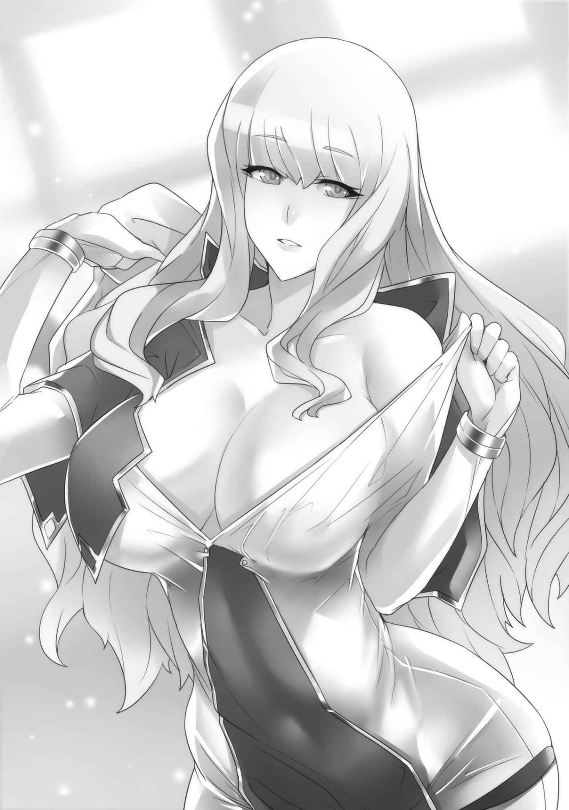
見たくないと思っても、つい胸の谷間を見てしまう男の気持ち考えたことあるのかよ！
どうせ「あいつ、私の胸見てたギャハハ」とか後で笑うつもりなんだろ。
俺は一連のシスターの行動を鑑みて、これは宗教上の理由とかではなく、このシスターの個性だなとようやく理解した。
いきなり脱ぎだすとか、こんな頭のおかしい宗教が百歩譲ってあったとしても、どこのファンタジーでも世界宗教になれないだろ。
カルト宗教が関の山だ。
「なんか、タケルの反応薄いですし......脱ぐのは是非もないかと」
リアはローブの胸元を緩めつつ、流し目を送ってくる。
なんだ、脅迫か？
褒めろってことか、しょうがない。
「えっと......。リアはすごく美人ですね！ 思わずエルフかと思いました！」
「フヒッ、やだタケルったら褒めすぎですよ。エルフなんて......でもでも、残念ながら、耳は尖っていないんですよね」
褒めたのが正解らしく、満面の笑みでリアは、自慢げに金髪を掻き上げると顔を傾けて尖ってない耳をチラチラと見せつけてくる。
確かに耳元も、うなじも綺麗だけどな。でも、ちょっとウザいんだよ。そんなアピールされても、もう褒めないぞ。
だいたい初対面のシスターがエルフだとか、エルフじゃないとか。自分で言っといてなんだが、あんまり興味ない。
俺の店の前でストリップするのを止めて欲しいだけなんだ。
「あとタケルに一つ忠告なのですが、シスターは貞節の誓いがあるので、わたくしに惚れてはいけませんよ」
惚れないよ。今の会話のどこに惚れる要素があったんだよ。一体何なんだ、この人は......。
あれだな、客商売ってすごく大変なんだな。こんな変なお客さん来ちゃったら、対応のしかたわかんない。
シャロンをあとで褒めてやるべきだ。
「シスター様、美しいお顔も拝見したので、今日はこのあたりで」
「そうですね。では、ついでと言ってはなんですが、タケルにアーサマ教の凄くありがたいサービスをおまけしましょう。聖水とかその場で作っちゃいますよ、わたくし？」
いやもう、本当に帰ってくれよ。
聖水とかあんまり需要ないから教会に行かなかったんだし......。いや待てよ、何が役に立つかわからない。
少なくとも商品サンプルは、貰っといたほうがいいのかな。
「えっと、聖水といいますと」
「おおおっ、タケルも乗ってきましたね。ノリノリですね。敬虔なる信徒に、ノリノリでそこまで頼まれては是非もありません。ポーションの空き瓶か何かで結構ですので、お水を汲んできていただけますか、ダッシュでお願いします」
ノリノリじゃねえよ。人使いが荒いシスターだなと思いながら、新アイテムには興味があったのでポーションの空き瓶十本ほどに水を汲んで戻ってくる。
「これでよろしいですか」
「十本も、ですか......まあ、いいでしょう。初回サービス特典としておきましょう」
なんか、軽いシステムだなアーサマ教会。
「創聖女神アーサマの忠誠なる信徒ステリアーナが祈り奉ります。その聖なる秩序の輝きの一端をここに指し示し、アーサマの慈悲深き恩恵をお与えください！」
ポーションの空き瓶とアンクを重ねて、シスターリアが祈ると、中の水がふわっと白銀に光り輝いた。
「おおーこれはすごい」
「まあ、このお祈りは特に創るのには必要ないんで以下省略」
だったら言うな、褒めて損した。
最初の長ったらしいセリフは一回だけで、あとはポコポコと白銀のアンクで水に光を与えた。
何ともあっけない。どうも、あの首からぶら下げてるアンクが聖水製造の媒介アイテムっぽい。
「えっと、聖水が九本に霊水が一本出来上がりました」
「すごいですね」
俺は魔法が使えないので、その能力はすごいと思う。性格はともかくとして。いや、性格もすごいけどこの人。
「えへっ、神聖錬金術は得意なんです。もっと褒めてかまいませんよ。ちなみに聖水は、アイテムに振りかけると呪いを解いたり、事前にかけて呪いの予防ができます。アンデッド系に振りかけて攻撃するなんてこともできます」
リアは、白っぽい水の瓶を指して親切に説明してくれる。
最初からこういう普通のサービスをしてくれるなら、こっちも嬉しかったのだが。
「ちょっとやってみましょうか。何かお手元で、普段使ってるアイテムはありませんか？」
「えっと、これなんかはどうですか」
便利に使っているマジックアイテム『炎球の杖』をテーブルにおいた。
そこにリアは、さっと聖水を一本降りかける。
「これで『聖なる炎球の杖』になりました。アーサマの加護がかかって、燃費が心持ち良くなるのと。呪いがかかり難くなるはずです」
「なるほど......」
続いて、白銀色に輝く水の瓶を指して説明してくれる。
「この霊水は、そのまま飲んでも滋養強壮、状態異常の回復に効果があります。回復ポーションと合成して霊薬を作るのがポピュラーな使い方ではないでしょうか」
「ふむ、勉強になります」
確か回復ポーションの上位互換みたいなのにエリクサーってのがあったけど、そうやって作るのか。
やっぱ回復系は、神聖魔法が絡んでるんだな。
「今回は本当に特別なんで、他所でシスターに聖水作ってもらったとか言わないでくださいね。本来なら教会に来てもらって、それなりのご寄進と共に交換するものなんです」
「それはどうも、ありがとうございます」
なんだか思ったんだけど、この人はシスターというより商売人みたいだな。
その点は、ちょっとシンパシーを感じる。
伝道修道女というと、教えを伝え歩いてる感じだから、自然と行商に近くなるのかもしれない。
さっきの寄付を求めるやり方も堂々たるものだったからな。
「あと、わたくしの顔を見たってことも内緒にしておいたほうがいいですよ。タケルがわたくしのファンに恨まれてしまっては大変です」
「そうですか」
「恨まれて呪いをかけられても、聖水が守ってくれますけどね」
「......」
上手いけど、誰が上手いことを言えと言った。
「なんだったら今から教会にご案内してもよろしいんですよ。是非もありませんよね」
「今は店番がありますので、すみません」
聖水はありがたかったが、もういい加減帰ろう。
「やっぱり、フードだけでなくローブも脱いで見せたほうがよかったのでしょうか」
「いや、それはもう十分ですので」
「タケルは男の子だから、そっちのサービスをお望みでしたか？」
「いや、もう本当に結構なんで......」
頼むからもう帰ってくれ！
結局、シャロンが店に戻ってきて追い払ってくれるまで、シスターリアがこの調子で居座って商売にならなかった。
一言で店番といっても、苦労してるんだなと改めてシャロンの偉大さを噛み締める一日だった。
●
ある日のこと、ライル先生から折り入って相談があると部屋に呼ばれた。
俺が建てた商会とはいえ、ライル先生の個室に入るのは初めてだったのでちょっとドキドキしてしまう。
小さい部屋の棚には本がズラリと並んでいるし、机には所狭しと書類束が溢れているので、ちょっと座る場所にも困る感じだ。結局、二人でベッドに並んで座る事になった。
それにしても。
ライル先生からイイ女特有の誘うような甘い匂いが香るのは、どうしてなのだ。
茶色の髪を短くして、びっちりと官服に身を包んでいても、やっぱりライル先生の美しい横顔は成熟した女性にしか見えない。
「なんですか、先生が俺に相談って珍しいですね」
逆はよくあるけど、本当に珍しいよね......はっ。
もしかしたらついに来ちゃったかこれ。好感度が知らぬ間に上がっていて、性別の秘密を打ち明けてくれる展開じゃないか!?
「ええ、私が勝手にできることではないので、相談なんです」
「はい！」
いつの間にか、ライル先生とのフラグが立ってルートに入ってたのか。いいんですよ、先生なら男の娘でも、女の娘でも、俺はどっちでも大好物です！
受け入れる準備はできてます、待ち切れなかったぐらいです。
「タケル殿の作った鉄砲と大砲、国に販売してみませんか。もし良ければ、書記官として私がこれまでの経緯の報告と共に、購入配備計画を提案してみます」
「えっ、それは......」
なんだ、性別の告白じゃないのか。
「儲かりますよ、武器商人」
「うーん」
お金は欲しいから、武器の販売は俺も考えたんだけどね。それを商品にしちゃマズイと思ったから、これまで躊躇してたんだよな。
「タケル殿のご懸念は、重々承知しているつもりです。人間同士の戦争に使われるのを恐れているんですよね」
「そうです、それがあるんですよ」
さすがライル先生だな。俺が思ってることは、全部お見通しらしい。
「しかし、しかしですよ。『魔素の瘴穴』から発生したモンスターで、いま王領は大変なことになっているんです。辛うじて守られているのは王都周辺と街道沿いだけで、東側の村や街は騎士団、兵団の奮闘も及ばず、壊滅的な打撃を受けてしまっています」
「それは......」
「まあ最後まで聞いてください。もし魔法を持たない人たちでも鉄砲と大砲で自衛できていたら、そんなことにはならないはずなんです」
「先生の言うこともわかりますよ」
「いえ、タケル殿はわかってないです。こんなに奴隷が増えて、鉱山にやたらめったら子供が送られていっているのも、王都に難民が大量流入してるからなんです」
なるほど、そういう事情があったのか。そこまでは考えてなかった。
「タケル殿は、奴隷にも優しいですよね。モンスターに襲われて生活の基盤を失ったオナ村の人達にも、自衛の手段と新しい仕事を与えている。素晴らしいことです。私もお手伝いできて心から誇らしいですよ」
「まあ、それほどでもないですけど」
奴隷や村人を使役しているのは、あくまで自分の儲けのためだ。善行をしようとしてしてるわけじゃないので、褒められると恥ずかしい。
「でも、本来ならそれは国がすべきことなんです。私が提案なんてしなくても、復興したオナ村の評判を聞けば、すぐに王都から問い合わせがあって、新兵器を買って使いたいって打診があるとばかり思っていました」
なるほど、先生はそんなことを考えていたのか。だから熱心に俺が作った鉄砲と大砲を調べて、ノウハウを研究してたんだな。
ライル先生が積極的に提案してくるから、固定砲台としてしか使えない鉄製だけじゃなくて、台車で移動できる青銅製の大砲も作って、弾もいろんな材質を実験してきたのだ。
村一つ守るだけで、なんでそこまで頑張ってるのかと、前から疑問には思ってたよ。
「でも先生、国からは鉄砲や大砲を買いたいって打診はなかったんですよね」
「そうなんです。ですから、こっちから提案することを許可していただきたい」
大恩ある先生に、お願いしますと頭を下げられてしまっては、俺も嫌とは言いにくいんだよなあ。
渋ってる俺をさらに、先生は口説く。
「難民が生まれる根本原因を除かなければ、奴隷に落ちる人は減りません。人間同士の戦争に使われないとは保証できませんが、シレジエ王国に危機を乗り越えるチャンスを与えてくれませんか......」
「あーわかりました、ライル先生の思う通りにしてください」
「ありがとう、一生恩に着ます」
ライル先生の柔らかい華奢な手のひらが、俺の手の上に載せられた。まだ弓と剣で戦ってる国に、銃と大砲を与える。本当ならマズイ決断なのかもしれない。
しかし、ライル先生に助けられなければ俺はたぶん生きてはいられなかった。先生の温かい手を俺も握り返す。一生の恩に着ているのは、こっちのほうなのだ。
近代戦争の歴史を知っている俺でも、この『魔素の瘴穴』からモンスターが湧きまくって人が襲われて、荒野が広がってるとんでもない世界で、どのように兵器が使われるようになるのかは全く予想がつかない。
もしかしたら上手く自衛的な手段として使われるだけなのかもしれないし、取り返しのつかない戦争を招く恐れもある。
考えても分からない問題だから、先のことなんて考えてもしょうがないか。俺は自分と、周りの人間が生きていける道を選び続けるしかないのだ。
●
シリアスなことばかり考えてたら、自然と食堂に足が向いた。
「あっ、ご主人様。何かお作りしましょうか」
食堂に居るのは、ブラウンの瞳と髪をした少女、元パン屋のコレットである。食べ物に関する興味が深い彼女が、何となく食堂で調理担当になっている。
調理の他に、食材の調達。さらにそのついでに、エストの街の周辺の村々の酪農家を回り、口下手なロールにかわって硝石の材料に適した土を貰う交渉に当たったりもしている。
ロールには負けるが、この娘も割と働き者だ。
「いや、今日は俺が作ろうと思うんだが......」
「では、お手伝いします」
それが当然とばかりに、エプロンドレスをつけた彼女はかまどに火をおこし、調理道具を持ってきてスタンバイした。
「じゃあ、手伝ってもらうか」
「ご主人様のお作りになる料理は興味深いので、ぜひ勉強させてください」
最近は、だいぶ暇になったので現代にあった料理の再現に着手している。
普通に俺が食いたいし、手軽で珍しい料理ができればお店の売り物にもなるかもしれない。
「生クリームを泡立ててくれ」
「はい......この間作ったのと同じのでよろしいのですね」
生クリームやバターは牛乳から脂肪分が浮いたものだ。
うちの食堂には冷蔵庫があるので（ライル先生が魔法で氷を作って冷やしている）そこで一日置いた上澄みを使っている。
「うん、俺はクレープを焼くから」
俺が小麦粉に牛乳と卵と砂糖を溶いてクレープ生地を作る。
「小麦粉で焼くガレットのようなものなのですね」
コレットが言うには、ガレットというのはこの国の庶民料理でそば粉を薄く焼いたものだ。
素朴な味がして俺は割と好きだが、お菓子として食べるものではない。
たしか、クレープはフランス料理だったはずなので、探せばこの国のどこかでも作ってるかもしれない。
だが、エストの街では見かけないし、生クリームを挟むクレープを作ったのは確か日本人だったので、おそらくどこにも存在しないだろう。
俺は手早く焼いたクレープに、生クリームを挟んで一口食べてみた。
「美味しいけど、ちょっと甘みがまだ足りないかも」
俺にとっては、懐かしい故郷の味だ。
ジーッと、こっちのほうをコレットが物欲しそうな顔で見つめているので、すぐにもう一枚焼く。
甘みを加えようとおもって、砂糖に漬けた桃があったので生クリームと共に挟んでみた。
桃をくるんだクレープを、コレットに差し出す。一口食べて、コレットは茶色い瞳をキラキラ輝かせた。すごい笑顔。
「おいふぃい......です」
「そうか」
子供は美味しいものを食べさせた反応が、素直で見てて気持ちがいい。俺は一人っ子だが、妹がいたらこんな感じだったのかもしれない。
何だか、見てるだけでこっちも笑顔になってしまう。
「ご主人様、これほっぺたが落ちそうです。生まれて初めてです、お店に出したら絶対売れると思います！」
「それはいいな。どんどん焼いてロールたちにも食べさせてみるか」
他にもナッツを挟んだり、シナモンをかけたり、ミルクレープケーキにしてみたり様々な食感が楽しめるように加工して、夕食のおやつに出したらすこぶる好評だった。
生クリームの大量生産はまだ難しいが、なにもクレープに挟むのは生クリームじゃないといけないってわけじゃない。
甘みなら、ちょっと高めだが砂糖漬けのフルーツはあるし、生クリームの代わりに卵白からメレンゲを作って使ってもいい。
塩味のクレープ生地に、ハムやチーズを挟んでサンドイッチみたいにして食べるってやり方もありだ。
そういやサンドイッチもこの国にはまだないらしいから、ハンバーガーを作ってみるのもいいな。
商会には屋台をやりたいって言ってる娘もいるので、そういう食べ歩きできる料理をどんどん教えて街で売れば、エストの街から立ち食い文化が生まれるかもしれない。
商品としてさほど大きな利益は生まないが、料理は人が生きる糧だ。銃や大砲を広めるよりは、よっぽどいい影響を残していけると思うんだよな。
●
綺麗な王国の押印が入った手紙を持って、ライル先生が俺の部屋に入ってきた。
「失礼します！」
「あ、どうしたんですか」
礼儀正しい先生が、ノックもしないで入ってくるなんて珍しい。
いつも日焼け一つない、真っ白い肌をしているライル先生だが、今日は白いを通り越して蒼白な顔色だった。
あまり良い知らせではないなと思う。
「シレジエ王国からです。鉄砲と大砲の配備提案が、退けられました......」
「あー、ダメだったんですね」
悔しそうなライル先生には悪いが、ちょっとホッとしてしまう。
あまりにも世界にコントロール不能な激変を与えるのは、怖いと思っていたから。
「それとは別に、王都から私とタケル殿に緊急の召喚命令が来ています。どうか、私と一緒に王都まで来ていただけませんか。今すぐに！」
なんで、鉄砲と大砲の提案を退けたのに、俺たちが王都に呼ばれるんだ。あまりに唐突な召喚命令とやらに、俺はちょっと悪い予感がした。
杞憂ならいいんだけど......。
シレジエ王国の王都に遠路はるばる招待されたのだから、レッドカーペットを歩いて国王陛下に謁見とかになると想像していたのだが。
シレジエの城につくと、すぐ小さな別室に通されて宰相とか言う爺さんと、近衛騎士団長とか言うオジサンと話をすることになった。
あれだな、俺ぐらいの身分の者が国王と直々に会話するとか、やっぱありえないわけか。
現実問題としてよくわかってたけど、ちょっと期待してたからがっかりだな。
それとも俺が、未だに自分が異世界勇者じゃないかなんて幻想に囚われてしまってるのが悪いのかなあ。
「王国宰相、ローグ・ソリティアだ」
絹に金糸の刺繍が縫い込まれた豪奢な紫色の礼服に身を包んだ白い髭の爺さんが、俺たちに仰々しく挨拶する。
そして、神経質そうな顔でチラッと隣の黒金のフルプレートメイルに黒いマントを羽織った、黒々とした髭面の厳ついおっさんに視線を送る。
「近衛騎士団長、『魔素の瘴穴』討伐軍司令、ゲイル・ドット・ザウス将軍であるぞ」
椅子に座ってるのに、器用に胸を反り返らせて見せる偉そうな巨漢。
あれ、これどっちが偉いんだろ。宰相と将軍ってのは。
普通に考えたら、宰相だよな。でもローグ宰相は名前が二つで平民、ゲイル将軍は名前が三つだから貴族。でもでも、伯爵が国家の官吏と貴族は、同格だって言ってたよな。
「今日は、アルマーク家の騎士サワタリ・タケル殿に特別な用件があって呼び出したのだ......」
そんな風に俺が二人の偉いさんの顔色をチラチラうかがってたら、宰相の爺さんが話し出した。
宰相のほうが会話を主導してるから、おそらくこっちが偉いんだな。媚びる相手を間違えると大変だからね。
古臭い国を相手にするのに、序列ってのは大事だ。
「王国が『魔素の瘴穴』対策に手を焼いているのは、そのほうも知っておろう。ラエルティオス書記官の報告によれば、貴君が軍を率いエスト伯領に襲いかかるモンスターを討伐して防衛しているのだとか」
ローグ宰相は、静かな声で俺に語りかけてくる。
その重々しい響きに、思わず傾聴してしまう威厳があるのは、さすが一国の宰相と言えた。
「その力を、ぜひ我々にも貸していただきたい。いま王領では、このゲイル将軍が指揮官として、王都の東側から瘴穴に向けて軍を押し進めているところだが、ぜひ騎士タケル殿の軍も助力して、モンスターどもを東側へと追い払って欲しいのだ」
そこで、ローグ宰相はチラッとまたゲイル将軍のほうに視線を送った。ゲイル将軍は何が楽しいのかニヤニヤと笑っていたが、自分の番かと口を開く。
「騎士タケル、お前はあのモンスターが根城にしていたイヌワシ盗賊団の砦を落としたそうだな。あそこは、街道を防衛する騎士団も落とせずに困っていた拠点だ」
伯爵経由で聞いた情報だろうか？
騎士団長だか、将軍だか知らないが、さすが良く戦況を把握してる。
「使ってる兵士は奴隷や村人を徴用した雑兵だと聞くが、こちらは猫の手も借りたい状況なので贅沢は言わぬ。適当に手伝ってくれれば良いのだ」
なんで手伝うこと前提に話が進んでるんだよ。まだお願いされただけで、うんとは言ってないぞ。
なんかこのゲイル将軍って無駄に偉そうで好きになれない。話を聞いてたら、自分たちはあんな砦一つ落とせないのに、こっちを雑兵呼ばわりとか失礼じゃないかな。
さすがに温厚な俺でも、ちょっとムッとするぞ。
「お待ち下さい宰相閣下！」
俺と一緒に表面上は黙って聞いていた、ライル先生が大きな声をあげた。
「報告書に詳しくしたためたはずです。タケル殿がモンスターを圧倒しているのは、鉄砲と大砲の力が大きいと。王領でも今一度、新兵器の採用のご検討を」
「その提案は却下した」
ローグ宰相はすげなく答える。
「しかし、あれさえ使えば戦況は......」
「くどい！ 今はそのほうに意見を求めてはいない。一介の書記官風情が、宰相の決定に意見するなどと不遜も甚だしい」
うわー、こっちも居丈高だな。でも、宰相ってたしか総理大臣みたいなもんだろ。
偉そうなんじゃなくて、偉いのだ。俺だって、ひれ伏しちゃうよ。
「これは対『魔素の瘴穴』の話し合いでありましょう。不遜は承知で、国民を守るため、瘴穴を抑えるために、大砲は有用な武器になると小官は申し上げておるのです！」
しかし、ライル先生は引かずに反論する。
優しそうに見えて、言う時は言うんだよな、うちの先生は。
「七光りの小僧が、大博士の親の地位を笠に着て宰相に意見するなど、どこまで思い上がっておるか！」
ぐぬぬ......と、先生が押し黙った。すごく悔しそうだ。
気持ちは分かるよ、親の話とか出されるとキツいよな。
そこに横から、いやらしい笑いを浮かべたままのゲイル将軍が口を挟んだ。
「ラエルティオス書記官。俺もそのほうの報告書は一読したが、盛んに喧伝する鉄砲と大砲とやらは、弓や大規模魔法と何が違うのだ」
「将軍、実際に使っていただければ、有効性は理解していただけると思います」
諦めの悪いライル先生は、ゲイル将軍にまで縋りつくが......。
「検討はしたが、弱点が大きすぎる。雨で火縄が濡れただけで撃てなくなる。水浸しになれば、火薬も使えなくなるそうだな」
「そこは、工夫して運用すればいいのです。幸いシレジエは雨の少ない国ですので、運用の妨げにはなりにくく」
将軍は、ふんぞり返るとライル先生の懇願を鼻で笑った。
「フハハハッ、だから戦を知らぬ文官は甘い。大砲だの鉄砲だの戦陣に並べても、上級魔術師が洪水で押し流せば一発ではないか」
「相手はモンスターです、なんで上級魔術師が出てくるんですか」
鋭い視線で疑問を呈する先生に、将軍は不敵な笑みで答えた。
「戦場では何が起こるかわからぬ、水魔法を使えるモンスターだっているではないか。致命的な欠陥がある武器を、わざわざ高い金出して並べる必要はない。それが現場の総合的判断というものだ」
「将軍、せめて一つでも二つでも試しに、使ってさえいただければ！」
先生粘る。気持ちは分かるけど、こいつはたぶん先生を嬲ってるだけだよ。言うだけ無駄だ。
「おい書記官、少しは考えて物を言え。そもそも誇り高い騎士が、こんな武器を使うわけがないだろうが」
「ならば下卒か、雑兵にでも使わせればいいではありませんか」
「戦闘を指揮をするのは騎士だ。爆発する粉......。鉱山技師の連中は嬉々として使ってるらしいな。だが、そんな得体の知れない物で作られた武器に、戦場で命をかける兵士がこの国に居ると思っておるのか」
「ぐっ......」
「お前も本当は分かっているのだろう。シレジエの騎士にこんなオモチャを使えと命じたって無理なことぐらい。どうしても導入したければ、そのほうが出世して将軍になればいいではないか。ラエルティオス家の出来損ないには無理な話か、フハハハハハハッ」
ゲイル将軍は、先生をもう一度大きく嘲笑った。不愉快な会合だなこれ。
ローグ宰相に「これ以上、無駄な口を叩くなら退出させる」とまで叱責されて、先生は黙らされてしまった。
じゃあ、何のために呼びつけたんだよ。ライル先生を笑いものにするためか。こいつら、国の偉いさんか知らないけど。さすがに、もう黙ってられなかった。
「宰相、俺も一ついいですか！」
「うむ。そのほうに、こちらが協力をお願いする立場なのだ。何かあるなら伺おう」
「もし俺が、鉄砲と大砲を使って『魔素の瘴穴』の封印に成功したらどうします？」
ゲイル将軍が、こらえきれないとばかりに噴き出した。
「フハハハッ、それはよい！ 救国の英雄になれるぞ！」
腹を抱えて椅子から転げ落ちそうになってる巨漢のゲイル将軍を、真顔を崩さないローグ宰相がたしなめた。
「将軍、真面目な話をしているのだ」
「失礼した。此奴があまりに面白い冗談を言うものでこらえきれませんでしたよ宰相閣下」
ローグ宰相が、ふざけた将軍を睨みつけると、ゴホンと咳き込んで続けた。
「瘴穴の封印、その可能性には、ぜひ期待したいところだ。騎士タケル、そのほうにも瘴穴を封印できるだけの力を持った聖職者を派遣するよう、アーサマ教会に依頼しておこう。封印に至らずとも、王領での活躍に応じて相応の報酬を払うので安心して欲しい」
宰相のほうは、頭が硬いだけで話せば分かりそうな印象だな。ひとつ言質を取っておくか。
「宰相、私がお聞きしたいのは、鉄砲と大砲の有効性をこの戦いで示せば、ライル書記官に謝罪していただけるかということです」
「私は、この国の宰相として正しい判断を下していると考えている。だが、そのほうが瘴穴を封印して、国を救うことが出来るならば......。この年寄りの頭一つ、地べたに貼り付けようが、切り落とそうが貴官の思いのままにしてくれてかまわん」
すました顔で、そこまで言ってのける宰相。ほー、覚悟がいいことで。どうせできないと思っているのだろう。
将軍や宰相がこの国でどんだけ偉いか知らないが、俺の大事な先生に恥をかかせた罪は償わせてやりたい。
いや、俺も出来るなんて目算は全くないんだけど。俺は討伐に参加する話を引き受けることにした。
●
「あー待て待て、騎士タケル」
「......なんでしょう、将軍」
ようやくつまらん話し合いも終わりかと思ったら、ゲイル将軍に呼び止められてしまった。
あんまり、こいつと話したくないんだけど。将軍ってやつも、それなりに偉いみたいだから邪険にはできない。
「ルイーズは元気にしているか」
「ゲッ、なんでゲイル将軍がルイーズのことを？」
こっちのことをそこまで詳しく調べているんだろうか。なんて薄気味悪いやつだ。
「グハハハッ、俺様はルイーズの奴のことならなんでも知っておるぞ。いまでこそ冒険者にまで落ちぶれたようだが、ルイーズ・カールソンとはかつて同僚として騎士団長の座を争ったぐらいの因縁浅からぬ仲だからな」
「ええっ、そんなことがあったんですか。というか、ルイーズって王国の騎士だったんですか」
「なんだ、そんな事も知らぬのか......いや、田舎の馬の骨が知らぬのも無理はないか。カールソン家と言えば、代々偉大な軍人を生み出しているシレジエの名門武家であるぞ。俺様よりも、血筋だけは優っていた。しかも、あの若さで得物を選ばぬ奮迅ぶりだ。『万剣のルイーズ』と言えば、かつては王都中に鳴り響いた騎士の鏡であった」
「へえ、そこまでだったんですか」
あのルイーズが鋼鉄製のプレートメイル着て馬上にいるとか、想像してみるとカッコイイ。
ゲイル将軍は、さも愉快とばかりに、ニヤッと嘲笑を浮かべた。
「だが、しかぁーしー。とある失態から、あの女は騎士団を追われるハメになったのだ」
「......何があったんですか」
芝居がかった仕草で、口ひげを指でさすりながらニヤニヤとこっちを見てくる。ほんとなんか気分悪い男だな。
「フハハハッ、ルイーズのやつめ。家系の恥になるから、仲間にもひた隠しにしていたのであろう。ならばこの俺様が、そのほうにあの女の恥を洗いざらいぶちまけてやるのも、やぶさかではない」
「そうですか」
このゲイルって黒い髭面、結構な性格してるなあ。ちょっとルイーズには悪い気がするけど、気になるからそのまま聞いてしまおう。
「あの愚かな女は、有能の評判と高い家柄もあいまって騎士団参事にまで上り詰めたのに、盛大にヘマをやらかしてカールソン家からは勘当され、近衛騎士団からも追放されたのだ」
「だから、そのヘマってのは何なんですか」
いい加減、ウザいぞ将軍。話を溜めすぎなんだよ、早く答えを言え。どこぞのクイズ司会者か、お前は。
「そう焦るなよ。クックッ......良かろう教えてやる。他ならぬ『魔素の瘴穴』の封印に大失敗したのだよ。あいつが指揮して率いた騎士団の討伐隊が、愚かなる女の愚かなる失敗により全滅してしまったのだ」
「それってルイーズのせいなんですか」
俺がそう言うと、髭面のオヤジはまたニヤッと笑いやがった。
「もちろんそうだ、本来なら失敗などあり得ない。ルイーズが指揮していたのは、近衛騎士団の最精鋭だったのだから。あの女の大失態の後始末に、俺様も騎士団の連中も未だに苦慮しておるわけだ。本当によくもオメオメと、一人で生き残っていられる。騎士といっても女の身では、生き恥も感じぬものかな」
「うーむ......」
詳しい事情は知らないが、失態と取られるような敗北があったのは事実なのだろう。その痛い経験があったから、ルイーズは『魔素の瘴穴』に近づくなと言ってたのか。
王都行きに彼女を誘っても、頑なに来なかった理由も分かってしまった。特にこのゲイル将軍という嫌らしい男には、会いたくないだろう。
「騎士タケル、お前は見たところさほど強そうでもない文官上がりだ。どうせ、ルイーズのやつが黒幕になって戦闘を主導しているのであろう。騎士団を追われたというのに、未だに諦めないのは見上げた根性だと褒めてやっても良いがな」
「まあ、そう言われればそうですかね」
強そうではないとは心外だが、事実の部分があるからしょうがない。ルイーズのほうが、俺より戦闘力が格段に上なのは本当だから。
「フンッ、俺様が近衛騎士団長となり討伐将軍となった今では、冒険者風情に落ちぶれたあの女など足元を這う虫けらだ。せいぜい地方で這いつくばって、無駄な足掻きをやっているが良いと伝えろ。ノコノコと王都に来て、昔の仲間に笑われないだけの羞恥心はあるようだからな。フハハハハハハッ！」
勝手に話したいことだけ話して笑いながら行ってしまった。うわーもう本当に性格悪いやつだな。
典型的な悪役タイプだ。ああいうの。後ろから撃たれて死ねばいいのに。
●
王都の街は首都だけあって、城壁や城だけはやたら立派と言えるが、街の大通りからちょっと脇道に入ると、乞食と難民が溢れて悲惨なことになっている。
犯罪が横行し、襲われて行き倒れになっている人もたくさん見た。
おそらくモンスターとの戦闘に多くの衛兵が割かれて、王都の治安を守る衛兵の数が足りてないのだ。
力尽きて亡くなったのか、死体が転がっていても誰も片付けようともしない。修羅の国かここは。
早く平和なエスト伯領に戻りたい。
伯爵に評判を聞いた、貴族御用達の王都のおしゃれなカフェの店にも行く気がなくなった。こんな状態になってる街を見ながら、のんびりカフェに来られる貴族ってのがいるとすれば頭がおかしい。
ルイーズじゃなくても、こんな街に来たくないという気持ちはわかる。幌馬車にタップリと積んだ石鹸を、できる限りの高値で全部売り払った。
シレジエの街にはもう商売に来ることもないだろうから、適正価格とか知ったこっちゃない。
ただ王都だから、品数は豊富だっていうのはある。金貨はたくさん持ってきた。解毒や回復ポーションや貴重な霊薬の類を、ここぞとばかりに買い占めておく。
この街がどうなろうと知ったこっちゃないので無茶苦茶できる。ここに来る商人はみんなそう思っているのか、市場の相場は本当にひどい状態だった。
治安とモラルが崩壊した街だ。
「タケル殿、申し訳ありません。あんなことになってしまって......」
ライル先生の紹介で、王都で一番老舗だと言う隠れた名店に入って買い物をしている時に、不意に謝られてしまった。王城での話題は、もう避けようと思っていたのだが。
そんな悲しそうな顔しないでください。
「先生が悪いんじゃありませんよ。ほらマジックアイテムもたくさんありますよ。これからの戦争に備えて魔宝石も買っておいたらどうですか」
「いえ、もう結構です。それよりタケル殿の防具を買ったらどうですか。攻撃力は十分ですが防御力も上げるべきだと思いますよ」
「先生のオススメはどれですかね」
「かなり値は張りますが、『ミスリルの胴着』を買ったらどうですかね」
値はシレジエ白金貨、百枚......。思わず二度見してしまった。うわ、本当に金貨じゃなくて、白金貨を百枚だよ！
思わず冗談だろと思うような値段がついてる。日本円に直すと。一千万円ぐらいになるんじゃないかこれ。値付けが白金貨なのは、貴族か大商人向けの特別商品なのだろう。
ガラスケースから出したくないと渋る店主に、なんとか頼み込んで着せてもらうと、しなやかな肌触りはまるで絹のようで、金属の帷子とは思えないほどに軽かった。
ヤバイな、さすが魔法の金属。
「すごいでしょう。値段もですが、効果もすごいんですよ。魔法がかかった伝説の希少金属ですからね、ドラゴンのブレスや牙にも耐えうると言われています。王都にもこれ以上の品はありません」
「瘴穴に挑むなら、これぐらいの装備が必要だってことなんですかね」
ライル先生は少し寂しそうな顔でこくりと頷いた。じゃあ買いだな。
これまでの店の売り上げから何から洗いざらい吹き飛んでしまうが、先生の意見はこれまで間違ったことはない。
強力な防具なら俺じゃなくて、ルイーズに装備してもらうって使い方もできる。
若い俺たちを見て、本当に買えるのかと疑いの目で見ていた店主の前に、さすがに白金貨百枚は用意してなかったので、相当する額の金貨をカウンターに積み上げてやる。積み上げられていくずっしりとした金貨の袋に、店主は目を瞬かせて驚愕したまま表情を硬直させた。
高い買い物って、ストレス解消になるよね。
「ありがとうございました！」
途端に愛想が良くなった店主に見送られて店を出ると、店が臨時休業になってしまったので俺と先生は顔を見合わせて笑ってしまった。
きっと金貨の袋を銀行かどこかに預けに行ったのだろう。なんか気持ちはわかる。
その他、俺たちは細々とした買い物を済ませて、足早に悲惨な王都を後にした。買い物が済めば、こんないけ好かない首都に用はない。
何はともあれシレジエ王国から正式に依頼を受けてしまったわけで。いよいよ、これから『魔素の瘴穴』攻略が始まる。
「俺はこの戦いに生き残ることができるのか！」
なんか、ネガティブな引きをシャレで言ってたら不安になってきた。
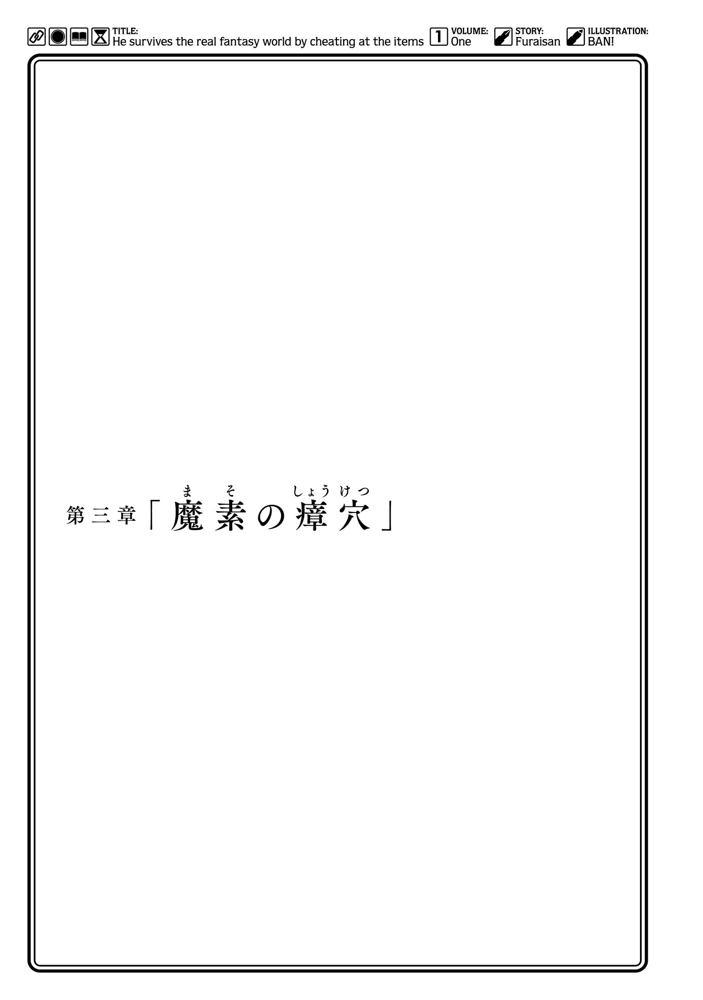
第三章 「魔素の瘴穴」
「タケル殿ぉー、ついに......ついに『魔素の瘴穴』討伐を決意されたのですな......」
ようやく陰惨な王都から帰って来て、ダナバーン伯爵の城に挨拶しに行ったらこれだよ。王都からどんな早馬が来てたのか知らないけど、もうシリアスシーンは済んだんだよ伯爵。
血なまぐさいことが嫌いなくせに、何でそんなに盛り上がってるんだよ。ワシ感激！ みたいな勢いで、両手で力強く握手されても、こっちは引く。
「まあ、とりあえず封印を目指す方向で動いちゃおうかなーなんて思ってますが」
正直なところ、王都からの帰り道の間にだんだん不安になってきたのだ。そりゃこっちには、鉄砲も大砲もあるよ。
しかし、巨大ドラゴンとか出てきた日には、どうしたらいいんだ。先が見えないってのは、やっぱ怖い。
「さすが誇り高き騎士タケル殿だ。英雄的事業を前にして、まったく気負いというものがありませんな！」
「ハハ......」
いい顔して、何を言ってるんだ伯爵。もうそういうの似合わないから、無駄に褒めてもなんにも出ないし。
むしろ、コーヒーを出してくれよ。そんなすぐ戦争に行くつもりないし、まったり商売の話でもしようぜ。
「タケル殿が討伐に起たれると聞いて、ワシも覚悟を決めました！」
「えっ？」
なんだ......もしかして、一緒に戦うとか言い出すのか？
どこの馬の骨とも知れんとか、王都で散々悪口吐かれた俺に領地の軍事を任せっきりで、城に篭もってコーヒー飲みながら、赤いエプロンドレス着せたメイドと日がな一日イチャイチャしてるだけの伯爵が......ついに起つのか。
「我がエスト伯領全土に触れを出しましょうぞ！」
「おっ、おお......」
これは本気だ。伯爵自ら動くとは、雷が落ちてドラゴンも死ぬかもしれん。
「我がアルマーク家の誇り高き騎士、エスト伯領討伐将軍サワタリ・タケルが義勇兵を募集しているとぉぉお！」
「ええっ～」
なんだ、そりゃ。ついに伯爵が自ら軍を率いて戦うのかと思ったのに。さっきのシリアスな決意は何だったんだよ。
「タケル殿。ワシは何かマズイことを言いましたかな？」
「いやあ、なんかこう、たいへん伯爵らしいなと」
俺が乾いた笑いを浮かべて話に乗ってこないからか、伯爵は頭からハテナマークを出している。
義勇兵を募集します（しかも俺の名義）から、戦ってきてくださいってのが、伯爵の最大の「覚悟」だったのね。
まあ、こういう人だよなあ。
平和的でいいんじゃないかな。ただふんぞり返って命じるだけの王都のあのクソみたいな連中に比べたら、戦力を集めようとしてくれる伯爵のほうが、百倍もいい人ですよ。
「もちろん、募兵費用はワシが出しますぞ。支度金として金貨三百、いやあ五百枚！」
「おおー、それは本当にありがたいです」
無理して『ミスリルの胴着』とか買っちゃったから、また金欠気味だったんだ。王都の宰相とか言うシミッタレに比べて、先払いってのが嬉しい。
太っ腹の伯爵は、俺が喜んでるのを見て嬉しそうに人の良い笑みを浮かべた。
「兵には物資も必要ですからな。兵士の衣服、糧食の補給も、全部ワシに任せてくだされ！」
「伯爵閣下、ほんとに感謝です！」
ちょっと心のなかで小馬鹿にして、本当に申し訳なかった。世の中で誰が一番尊いって、金と物をくれる人だ。
「なあに、こういう時のために領主がおるのです。軍のバックアップはワシにお任せくだされ。タケル殿は心置きなく瘴穴に群がる邪悪な化物どもをバッタバッタとなぎ倒して、千切っては投げ、掴んでは叩きつけぇ、ボッコボコのギッタギタのケチョンケチョンのバッタバッタのぉぉ......」
「......」
なんか、伯爵が一人で興奮してヒートアップしてるので放って置くことにした。
俺はこの世界の人間じゃないから分からないけど、『魔素の瘴穴』封印ってのは、そんなに心躍る事業なのかね。
エスト領も田舎だし、他に大きなイベントとかないからなのかなあ。
「......ハァハァ、他に何かワシにできることは何なりとぉー」
「では、伯爵。コーヒーを所望いたします」
瘴穴は逃げないし、血管切れて倒れるまえに一息いれて休もう伯爵。よく聞いてたら、バッタバッタを二回言ってたからね。
●
伯爵のほうはいいとして、エストの街の商館に、佐渡商会の全従業員を集めて説明会を開くことにした。
ライル先生、ルイーズ、二十六人の奴隷少女、そしてなぜか呼んでないのにオナ村からやってきてしまったオナ村自警団の二十人。
ちょっと待て。自警団の後ろから、村人総出で来てるじゃないか。本当に呼んでないんだけど！
なんか、オナ村の若い衆が決起集会の勢いで、店の外にはみ出て騒ぎ立てているので「なんだなんだ」と街の人まで広場に集まってきている。
客がたくさん来てるならと、うちの店の子が商品を持って売りに出てるよ。
あっ、コレットが焼いたクレープを売ってるのか。屋台やりたいって言ってた子かな。売れるといいな。
......って、そんな話じゃないんだが。
何で従業員向けの説明会のつもりが、大騒ぎになって群衆まで集まってきてるんだよ。
俺が、収拾つけられる事態じゃなくなってきてるじゃないか。
そりゃ、『魔素の瘴穴』討伐軍を編成して出撃するには、オナ村がスタート地点になりそうだから村の連中が説明会に来るのはしょうがないけど。
「ご領主様、我ら一同も、命を賭けて戦うつもりであります！」
オナ村の村長の息子とかで、自警団リーダーを気取っている、掛け声の大きさだけが特技のお調子者（マルスとか言ったかな）が、大げさなセリフを叫びながら俺に向かってしゃがみ込んだ。
やる気があるのはいいんだけど、革の鎧を着て長槍を持ちながらそんな風にしゃがんでも、ガラの悪い兄ちゃんにしか見えないから。
みんなマルスの真似をして、ぎこちなくしゃがみ込んだ。店の前でたむろするヤンキーかお前ら。兵士が畏まる作法が分からないなら無理するなって。
せっかく火縄銃を配給してるんだから、こういう時こそ持ってこいよ。俺が、現代の軍隊式敬礼ってやつを教えてやるのに。
「まあ、期待してるから頑張ってな」
「ハハー！ ご領主様ぁ！」
俺が声をかけただけで、マルスたちは地べたに這いつくばって、平身低頭した。兵士を気取ってても、すぐ村人気質に戻っちゃうんだよな。
あと村人に、「俺は領主じゃなくて代官だ」って訂正するのはもう諦めた。村の人からしたら、そんなの知ったことじゃないんだろう。
あとオナ村自警団は、村の防衛が仕事なんだから、あんまり張り切られても困る。頑張るのも程々にして欲しい。
「私達、奴隷少女近衛銃士隊も、ご主人様を命をかけてお守りします」
シャロンが号令をかけると、奴隷少女二十六人が全員集合で集まってきて、こっちはなぜか綺麗に整列して、シレジエ王国式の敬礼（片膝をつき、剣や銃をかかげて銃身にキスをする）をしてくれた。
こんな作法、誰が教えたんだとチラッと見たら、ルイーズとライル先生が笑ってた。
「そうか、ありがとう。しかし、近衛銃士隊ってたいそうな名前がついてるんだな」
「私たちは銃士というのだと、ご主人様に教えて頂きました」
「あー、そういやそんなことを言ったな」
銃を持った兵士だから銃士って言うんだとか、自慢げに言ったわ。シャロンに変なこと吹き込むもんじゃないな。
「ご主人様を一番近くでお守りすることを近衛だとルイーズ様に教えて頂きました。私たちは、奴隷少女近衛銃士隊です」
「その奴隷少女って頭につけるのも必要なのか」
「奴隷少女近衛銃士隊です、ありがとうございました！」
全員が声を揃えて言いやがった。なんだよそれ、お店の挨拶か。奴隷少女、奴隷少女と、連呼されると、なんか魔法少女に空耳してくるんだが。
ファンタジーだから、魔法少女銃士隊も作りたいんだが何とかならないですかね、ライル先生。まあそんなくだらないことで先生を困らせてもしょうがないか。
「それより、お店の商売のほうも抜かりないように頼む」
「お任せ下さい、交代で穴が空かないようにシフトを組みますので」
シフトとか知ってるんだ。というか、この時代にシフトとかって概念あるんだ。
バイトリーダー的な活躍ごくろう、シャロン。
「まあ、お前たちはあんまり戦争して欲しくないから、お店に残って欲しいんだけど」
「他の子でシフト埋めましたから、私は二十四時間ご主人様をお守りできます！」
やる気満々だな、シャロン。
それはいいが、俺の話をよく聞こうな。
「それで、説明会のことなんだが、『魔素の瘴穴』に向かって進撃するに当たって反対の意見とかはないのか」
俺はちゃんと説明して、従業員一人ひとりの意見を聞くつもりだったのだ。いくら従業員が全員奴隷少女とはいえ、ブラックな経営者になりたくないから。
「ご主人様のなされることに、反対や不満などあろうはずもございません！」
「ちょっとそこまで言われると逆に怖い」
間違ったことを言ってたら、ちゃんと諌めてくれ。俺だってまだ二十一歳の若造なんだぞ。
商会は子供が多いとはいえ、この人数の責任を全部持たされるのはキツい。班長とか、リーダーとか、本当は苦手なタイプなんだよ。
「もちろん、みんなで話し合ってご主人様と共に戦い、泣き、わめき、お守りすることを心に誓ってます。お諌めすべき点があれば、命をかけてお諌めします」
「命はかけなくていいからね......あとできれば、わめくのも省略しよう」
シャロンは、昔のことを思えば本当に元気になったけど、いちいち重いことを言う癖は直ってないんだよな。
見た目は大人で賢いとはいえ、まだ中身は子供だからしょうがないか。はぁ、しかしこの店の前の人だかり、どうしたらいいんだろ。
「ライル先生、後は何とかその......」
「おや、ここはタケル殿のご挨拶が聞けると思ったのですが、ギブアップですか？」
先生にしては珍しく挑発的なことをおっしゃる。
「もしかして、この群衆が集まってきて、どうにもならない収拾を俺につけろと？」
「せっかく街中の人々が集まってるんです、大演説で義勇兵を集めるチャンスじゃないですか」
えー、大演説って誰がするんですか......。もしかして、俺がやるの？
ルイーズ姉御のほうをチラッと見たら、目を背けられた。えー、俺は挨拶とか向いてないタイプだからぁー。
おいルイーズ！ 真顔だけど、もう付き合い長いんだから、笑いをこらえてるのが分かるぞ。
知ってるんだぞ、ルイーズは騎士団の偉いさんだったんだろ。団長とか、隊長とか、俺よりルイーズのほうがよっぽど向いてるのに......。
うーん、しかしこりゃ俺もそろそろ成長しなきゃいけないってことなのか。ルイーズも、先生も俺にやれって言ってるし......。
何も戦うのは戦場ばかりではない。
何の因果か、騎士になって俺の名前で募兵とかされるんだろうから。
ここは俺が一発かますしかない。
俺は、覚悟を決めて銃士隊と自警団を引き連れて、街道に出ると広場に群れている人々に向かって大声で叫んだ。
「皆の者！ アルマーク家の騎士佐渡タケルが、物もうーす！」
なんかお笑い芸人みたいだけど、これしか思いつかなかった。
俺が群衆の中心に立ち見回していると、いつの間にか、ざわついていたのが静まる。
今の俺は、燦然と輝く『ミスリルの胴着』着てるから多少は重要人物に見えるだろう。馬子にも衣装ってやつだ。
もうどうせここまでやるなら、ゲイル将軍みたいに、黒マントもつければよかったかな。
しかし、黙り込んでこっちに注目する群衆の何というプレッシャー。連邦のモビルスーツは化物か......。
生徒会選挙になんか教師に無理やり立候補されられて、ろくなこと言えなかったトラウマがチクリと痛む。
でも、ライル先生見ててください。俺はやります！
俺は鉄剣を抜き放って、先生が見守る蒼天に向けて掲げる。
シャキーンと抜剣の音が、静かな中に響き渡った。
俺は知ってる、こういうのはやりきってしまうほうが恥ずかしくないんだぁぁ！
「これより、我々エスト伯領義勇軍は、『魔素の瘴穴』より発生したモンスター共の討伐を目指して、北伐を開始する！
奴隷、物乞い、農民、町民、商人、冒険者、兵士......諸君らの身分、年齢、性別、経歴の一切を問わぬぅぅ！
誰でもかまわない、何も持たなくていい、ただ共に戦う義勇のある者たちよ！ その身一つで俺のところに馳せ参ぜよ！
国を救うため、無辜の民を守るために、どうかみんなの力を貸して欲しい！」
......シーン。
うわ、恥ずかし。みんな目を丸くして、呆然とこっちを見てるよ。いやシャロンとか、オナ村の連中も、敬礼してないで助けてくれ。
変なテンション入ったよね。
やりすぎた俺が悪かったから、ここは笑って誤魔化すなり、なんなりフォローを──
「ウワアアアアアアアアアアアアアアアアア!!」
剣を掲げたまま、硬直していた俺をよろめかせて吹き飛ばすぐらいの、大きな歓声があがった。
それはお腹の底にドシンと響き渡る、声の爆発。
叫んでいるのはその場の全員だった。溢れる大歓声、割れんばかりの拍手、お調子者の自警団が槍を突き上げて吠え立てる。うああ、うわあと言葉にならない叫びが、街の広場に無数に響き渡った。
ああっ、やっぱりこういう演出でよかったんだな。上手く行って、ホッとしたのか悲しくもないのに涙が出てきた。
ライル先生、これでよかったんですよね......。
やりきった俺は、剣を鞘に収めると涙をこらえて空を見上げた。
天で見守ってくれていたはずの先生は、いつの間にか割れんばかりの歓声によろけそうになっている俺の背中を、そっと嫋やかな手で支えてくれていた。
「タケル殿、上出来でした」
「もっと褒めてください」
ライル先生に本気で褒められるとか、初めてじゃないか？
すごく嬉しいんだけど。
ちなみにこの日、人が集まった広場に向けてクレープの大売出しに出た佐渡商会の屋台は、一日の売り上げ新記録を更新した。
●
やがて、静かになった商会の入り口。
祭りのあとみたいな雰囲気に、独りで黄昏ている俺に、後ろからねぎらいの言葉が飛んできた。
「ごくろうだったな、タケル」
燃える夕日のような紅い髪をなびかせて、ルイーズは店に入ってくる。
さっきのことがまだ忘れられないのか、明らかに面白がっている顔で、俺の肩をバンバンと叩く。
まだ、可笑しいのかよ。ほんと、俺の演説にルイーズだけは腹を抱えて笑ってくれたからな。
俺も恥ずかしかったし、似合わなかったって自覚はある。むしろ本気に取られたら嫌なんだ。国のためとか、民のためとか、耳ざわりのいい理由なんて、大嘘もいいところだからな。
ルイーズが笑い飛ばしてくれたことで、演説の件は気が楽になった。
でも、気が楽にならないこともある。
ゲイル将軍に王都で聞いたルイーズが元々騎士団に勤めていたって話を、聞いていいものなのかどうか未だに迷っていた。
「やはり、避けられぬ因縁なのかな」
ルイーズが独白めいた口調で、俺に語りかけてくる。
「因縁ですか？」
「『魔素の瘴穴』だよ、聞いたんだろう。私が元騎士で、『魔素の瘴穴』討伐軍を率いて大敗北したのだと」
ああ、そうかルイーズはもう俺に知られていることを知っていたのか。自分から言えば良かった。余計な気を使わせてしまった。
「すみません、勝手に聞いてしまって」
「謝ることはない、もともとライルの先生さんもその頃は王都にいたんだから、私が騎士団に居た時のことも知ってたからな」
ああそうなのか、ライル先生は知ってて、みんなには黙っていたんだな。そういう細やかな腹芸って、俺にはできない。
やっぱり先生はすごいね。
「なあタケル、私は今でも反対だよ。『魔素の瘴穴』に挑むのは反対だ」
ルイーズは、俺にキリッとつり上がった形のよい眦を向けてくる。
さっきまで笑っていた美しい茜色の瞳には、いつになく真剣な色があって、目を背けることすらできなかった。
「私はずっと逃げてきた、自分の失敗からも、仲間の死からも。お前と出会ったときも、一緒に居たときも、私は自分の過去からずっと逃げ続けて生きてきた」
「ルイーズ......」
「せめてもの罪滅ぼしのつもりだったのかもしれない。戦闘に不慣れだったお前を助けたのも、お前が拾った兵士たちの子供を、助けて育ててやったときも。でも、過去は結局、逃げ続けてもやってくるんだな」
「もし、ルイーズがまだ反対なら」
ここまで盛り上がってしまった北伐だが、俺としてはきちんとした反対があれば止めようとも思っていた。
いくら宰相に煽られたからって、なにも馬鹿正直に危険な『魔素の瘴穴』に挑むことはない。
適当に、王領のモンスターを攻める振りをしておけば安全ではないかとも思った。
「言うなタケル、お前は挑め」
「ルイーズ」
「いい演説だったじゃないか。一刻の感情かもしれんが、私の胸にも響いてくる演説だった」
「本当に？ 笑ってたのに？」
「そりゃ、お前には似合わなかったから可笑しかったさ」
犬に追われて泣いていた情けないお前がなあと言って、またルイーズは肩を震わせてプププと噴きだした。
おい、そういう昔の話を蒸し返して笑う雰囲気じゃないでしょ。酷いよ。
「でも、私が騎士団参事として討伐軍を編成した時、タケルのように身分や地位にとらわれず、もっと柔軟な発想を持って挑めば、もしかしたらあんな失敗をしなかったんじゃないかとも思えた」
「そうですか？」
ルイーズぐらい強くても負ける相手に、俺が勝てるとは思えないんだけどな。
「そうだよ。だから私はお前が挑むのを全力で手伝う。お前は、私の新しい可能性なんだ。タケル」
そういって、俺の肩に触れた手は、さっきとは違って優しかった。
なんかこう頑張らなきゃいけない空気になってるけど、俺はまだヤバかったら逃げる気満々なんだけどね。
でも、まあ他ならぬルイーズのためなら、ちょっと本気で体を張っても良いかな。彼女には命を助けてもらった恩がある。剣の借りは剣で返す。柄にもなくそんな言葉が、強い覚悟と一緒に腹の底から湧き上がってきた。
やはり、俺も決起の高揚感に呑まれているのかもしれない。強力な魔法防御力を持つ『ミスリルの胴着』も買ったし、そう簡単には死なないだろう。
●
この前、俺がした演説が勝手に檄文みたいに広がり、エスト伯領の村々に伝達されたようで、ボツボツと付近から義勇兵希望者が集まり始めている。
街の商館のほうに来られても困るので、オナ村をとりあえずの集結地として、そこに義勇兵キャンプを張って、革の鎧と肌着と火縄銃の三点セットを渡して手の空いた自警団や銃士隊に訓練してもらっている。
訓練の鬼軍曹役はルイーズにお願いした。
義勇兵が集まっても、まず銃や大砲の扱いに習熟してもらわなければ使いものにならないからな。
もちろん火薬も足りないので、火薬や弾の製作作業から手伝って貰った。
戦士のやる仕事でもないように思うが、みんな前歴は村人だ。糧食も提供しているし給金も払っているから文句は出ていないようだ。
俺はと言うと、訓練が一段落つくのを待つ間、いつも通り先生やシャロンたちと商売に励んでいる。
伯爵からもらった支度金もあるけど、金はまだまだ必要。
義勇兵たちに持たせる回復ポーション（安くて銀一枚！ ）が高く付くんだよ。
かといってケチって、薬草だけで戦闘させて死人が出たら悔やんでも悔やみ切れないからな。
金は命には代えられないのだ。
本当は自分のところでポーション製造できたらいいんだけど、水魔法と回復魔法の使い手がいるそうなのだ。うちには、神官とかいないからしょうがないね。
俺がその分稼げばいいんだ、稼げば！
「いらっしゃーい！」
店番をしている俺が高らかに客を呼び込むと、店の暖簾をくぐって入ってきたのは、見覚えのあるサラサラの金髪少女だった。
「久しぶりね、タケル......」
「おー、なんだサラちゃんじゃん。どうしたの？」
なんだか、サラちゃんの後に少年少女たちが付いてきてるんだけど、エストの街まで遠足かなにかか？
なんか手に農機具を改造した物騒なトゲトゲ武器を持って、木の盾まで構えて物々しい服装をしてる子たちだが。
「サラ・ロッド、並びにロスゴー村義勇隊十名、ここに推参！」
「えっと......」
なにそれ。
「ちょっとタケル！ なに小首をかしげてんのよ、私がタケルのために直々に募兵してきてあげたんだから、もっと歓迎しなさいよーっ！」
「いや、でもみんな子供じゃん」
十二歳のサラちゃんに連れられた少年少女たちは、みんなサラちゃんと同年代だ。うちの奴隷少女もこんなもんだからあれだけど。
ちょっと兵士としては若すぎないか、学校の遠足に行くんじゃないんだぞ。
「タケルが年端もいかない奴隷の子供に武器を持たせて、戦場で戦わせてるって評判は聞いてるわよ」
「えっ、なんなのその残忍な傭兵部隊みたいな悪評......」
どんだけ悪人だよ。モンスター成敗に行く前に国から成敗されてしまうわ。
あっ、でも俺は実情そんなもんか。
こんな酷いファンタジー世界だから目立たないけど、俺も極悪人になってしまったものだ。
「まあ、半分冗談よ。タケルの義勇軍は、武器を持てるなら子供でも年齢問わず雇ってくれるって聞いたから、私がタケルの元上司だって話して、みんなを連れてきたの」
「戦力になってくれるなら嬉しいんだけど、行先は本当に戦場だぞ」
遠距離から銃を浴びせるだけなら、子供でも使えないことはない。
しかし、銃も大砲も撃つだけで暴発の危険もあるし、命がけなことに違いはないんだけどな。
「ふっ、何をかいわんや......。みんな覚悟はできてるのよ。連れてきたのは、どうせ貧乏農家の次女とか三男とか、タダ飯食らい扱いされてる子たちばかりだから、もう破れかぶれよ！」
「いや、破れかぶれよじゃ困るよ。サラちゃんは一人っ子だったよね、親御さんめっちゃ可愛がってたじゃん......」
万が一のことがあったら、ロッド家の親御さんになんて言われるか。
サラちゃんだけでも、ロスゴー村に戻したいんだが。
「フフッ、私の身はライルせんせーや、タケルが守ってくれるでしょ？」
「まあ、それは安全な後方任務につけばいいけどさ」
大軍を擁することになれば、戦場は前線だけではない。後方支援とかあるけども。
でも、どんな強大なモンスターが出てくるかわかんないし、かなり大規模戦闘になるから、万が一襲われたらマズイだろ。
「安心して、むしろ私がタケルのこと守ってあげるわよ。あんたなんかより、私のほうが動けるの知ってるでしょ」
「まあ、たしかに......」
さすがに腕力では負けないが、農家の仕事では俺より小さいサラちゃんのほうが、瞬発力、持久力があったぐらいなのだ。
あれから俺もこの世界で多少は鍛えられたけど、この厳しい世界で生きてる子供が結構たくましいってのはよく知ってる。
「それにしても、タケルも出世したものね。いまは代官で騎士様で、討伐将軍にまでなるそうじゃない」
「まあ成り行き上しかたなくね」
「うちの農家の手伝いから始めて、商人になって、騎士になって、大将軍にまで出世したって村じゅうに喧伝しておいたからね」
「やめてくれぇ」
もう、ロスゴー村に行けなくなるじゃないか。
「あら、村ではあんた子供の憧れの的よ。みんな騎士に出世したくて来てるんだから、私たちをよろしくお願いするわねー」
サラちゃんは、そう言うと俺の手を小さい手でギュッと握ってきた。
十二歳にして、コネクションを全力で活かそうとするとは、末恐ろしい子。
サラちゃんに俺の盛大に脚色された出世話を聞かされて、騙されて連れてこられた村の少年少女たちはキラキラと眼を輝かせている。
ああ。もうなんか俺のほうを純真に尊敬の眼差しで見ている。
そりゃ農民から騎士になれるって煽られたら、少年少女は血がたぎるだろう。
「くうっ、サラちゃんめ。なんて罪作りなことを......」
「私は別に騎士でなくても、将軍の奥様でもいいけどね」
そうやって、俺の手を握りながらいっちょ前に科を作るサラちゃん。
ふん、五年後なら分からんが、今そんなさらさらのブロンドをふさっとかきあげて、うなじで誘惑をされても単に可愛らしいだけだぜ。
こんな風に、俺とサラちゃんが仲睦まじくじゃれあってるところに、シャロンとライル先生が店の配達を終えて帰ってきた。
「ああっー、あなたたち誰なんですか。ご主人様から離れてくださいっ！」
ライル先生が声をかける前に、シャロンが駆け寄ってきて俺とサラちゃんが繋いだ手を分断して、割り込んできた。
結構、強引に突っ込んでくるな。
「いや、待て待て。大丈夫だシャロン。この子たちはロスゴー村の......」
「あんたこそ誰よー、タケルのなんなのー？」
俺が紹介するまえに、サラちゃんが激昂してしまった。うあ、ちょっと待てよお前ら。
おしくらまんじゅうやってないで、俺の話を聞け。
「私は、ご主人様の奴隷少女で、近衛銃士です！」
「へーそうなんだ、あんたが噂の奴隷少女ね。なんか少女って割には、あんたデッカイけど......、どっちにしろ近衛の役は、私の義勇隊がもらうことに決まったからあんたたちは用済みよ」
「待て、なんで二人ともいきなり喧嘩腰なんだよ」
俺が、ライル先生に眼で助けを求めると、先生は肩をすくめた。
先生は、「自分で仲裁しろ」と言わんばかりに、サラちゃん以外のロスゴー村の子供たちを連れて、さっさと店の奥に引っ込んでしまった。
まあ、子供たちは村の知り合いだろうから分かるけど。サラちゃんも先生の大事な教え子じゃないですか、何で放置なんですか！
あと最近なんか、先生の態度が冷たいような気がする。俺に対する愛が足りない、寂しいですよ。
「すぐに離れてください。ご主人様の近衛は、忠実なる奴隷少女が務めるって決まってるんですっ！」
「あら、あんたみたいなポッと出が何言ってんのよ。私は、タケルが農民の小倅だった頃からの知り合いなんだからねー」
サラちゃん、勝手に俺の過去を捏造するな。ロッド家でバイトしたけど、小倅になった覚えはない。
「出会った時間とか関係ないです。ご主人様と奴隷少女は固い絆と首輪で結ばれた仲なんですよ！」
「はぁ、何言ってんのよ。私なんか一緒に温泉に入ったこともあるわよ」
マジで二人とも止めろ。なんか人聞きが悪い話になってきた。
俺だけがダメージ受けてる感じがする。
「私だって、一緒にお風呂に入って、身体を隅々まで綺麗に洗ってもらったことがあります！」
「えええええっ、何考えてるのよタケル！」
「えっ、俺？」
口喧嘩が、いきなりこっちに飛び火したからびっくりするわ。
「そうよタケル！ いくら奴隷だからって、あんな大人の女の人とお風呂に入っちゃダメでしょ。もしかして、この奴隷って、そういうあの、アレなの......？」
「いや、何を勘違いしたか知らんが違うぞ！」
「あの、せっせっ......せいど」
「うああああー違う！ 子供がそれ以上言っちゃダメだ！」
やめて！ その大人の汚い部分を見てしまったみたいな幻滅した眼で見るな。
俺は、まだ清い身体だぞ！
「シャロンは獣人の血が入ってるから、見た目は早熟だけどまだ子供なんだよ！」
俺がそう説明すると、サラちゃんは「何を言ってんのよコイツ」って顔をした。
「えっ？」
「えっ、じゃないわよ。私のほうが『えっ』って言いたい。『獣人は早熟』って、自分で言ってる意味わかってんの？」
「えっと、早熟ってのは早く成長するって意味だろ。シャロンは身体は大人だけど、心はまだ子供だから他の奴隷少女と一緒の扱いで、しょうがないんだよ」
俺がそう言うと、ジトーッと俺とシャロンを見比べて、サラちゃんはわざとらしくため息をついた。
さっきの幻滅した眼よりはマシだけど、なんかその呆れた態度も釈然としないぞ。
「タケルは相変わらずバカねえ......。身体が大人になるんだから、心も大人になるに決まってるでしょう」
「ええっ、いやいや、ないだろ。それこそどんなファンタジーだよ」
なんだよこの俺が騙されたみたいな感じ、俺はおかしなこと言ってないぞ。
「なあ、シャロン？」
俺が、シャロンのほうを見て確認すると。彼女は珍しく、俺からプイッと琥珀色の瞳をそらした。あれえ？
「ねえタケル、いい加減に認めなさい。あんたが嘘ついてないとしたら、この女狐に騙されてたのよ」
「いや、女狐って、シャロンは犬型獣人なんだが」
「......」
はい寒いですね、すみません。
「いやでも本当にちょっと待て。ライル先生だって、そんなこと一言も言ってなかったもん！」
俺の叫び声を聞いたのか、店の奥からライル先生がひょこっと顔を出して言った。
「私は、獣人のクォーターが早く成長しても、心は子供のままだなんて一言も言ってませんよ」
ええっ、なんだそりゃ先生。今更そんなハシゴの外し方されても困りますよ！
「だって先生も、シャロンに俺が身体を洗ってくれってせがまれてた時、注意しなかったじゃないですか！」
「そこは、私が関与するところではありません。彼女本人が、何だか言われたくなさそうだったので、空気を呼んでスルーしました」
「うわー」
ライル先生って、たまにそういうところあるよね！
ルイーズの過去のことも黙ってたし、お風呂だけに水臭いっちゅうか。いや、そんなシャレを言ってる場合じゃない。
「タケル殿、こうなったからには、しょうがないので教えて差し上げます。獣人の場合、完全に成長期が終わる十八歳に達するまで年齢を二倍、ハーフやクォーターでも一・五倍として算出します。シャロンの場合、およそ生後十二歳ですから、実年齢だともう十八歳ってことになりますね」
「完全に、成長期終わってるじゃないですか！」
この世界は、成人が十五歳なのだ。十八歳って、完全に大人じゃん！
子供だと信じていた相手が、いつの間にか大人になっていたとか、なんだこの衝撃。ファンタジーすぎて、頭がついていかない。
そうか、なんかこれまで何となく疑問に思ってた謎が一気に解けた気がする。なるほど、道理でシャロンに何を教えても、異常に物覚えがいいわけだよ。いくらなんでも、他の子に比べて天才すぎると思っていた。
身体と一緒に頭脳も急速に成長してたから、複式簿記も商会経営も一人だけ習得が早かったのか。
知らなかったから、俺はてっきりシャロンは商売の天才じゃないかとか思ってたわ。
「シャロン！」
「はい......」
目を背けて、誤魔化せると思うなよ。
「お前十八歳なんだってな。この件について、何か釈明はあるか？」
「あの......、私も知らないうちに大人になってたようで、うーん不思議なこともあるものですね」
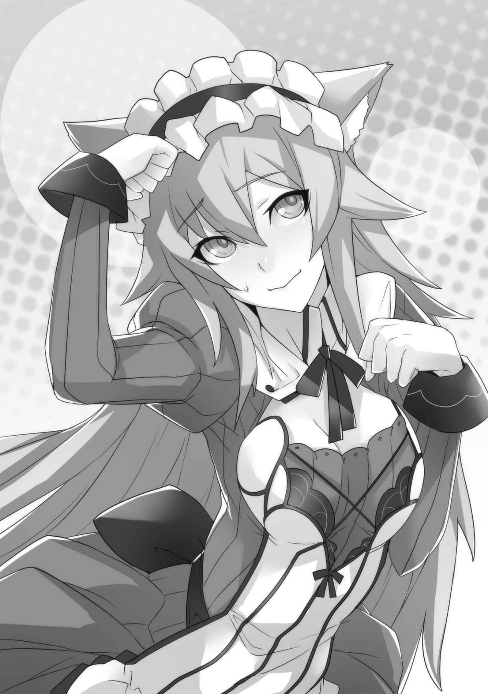
シャロンは可愛らしい仕草で、小首を傾げた。騙されるか。
「知ってたんだろ！」
「はい、すみません！ すみませんでした！」
シャロンは、大きく育った身体を折りたたむように、綺麗な土下座をした。三つ指までついてやがる。
だから、お前らそういうのどこで習うんだよ。もう怒る気もせんわ。
「はぁ......、シャロンが大人なの知らなかったのは、俺だけだったわけか」
「ご主人様ごめんなさい、つい出来心で説明しませんでした！」
この世界も、そういう言い訳がポピュラーなのか。もう何をどう言ったらいいか分からんで黙っている俺に。
サラちゃんが横から混ぜっ返す。
「奴隷がご主人様を騙したんだから、何か罰を与えないでいいの？」
「うーんそうだな」
「ごめんなさい、捨てないでくださいっ！」
「いや、そこまでは言わないけど」
ぶっちゃけ、シャロンがいないと店が回らない。だから何されても解雇とかはありえないんだが、罰といってもどうするか。
「じゃあこうしよう。もう俺はお前らの身体洗うのには参加しないから」
「すみません、今すぐ死んでお詫びします」
シャロンは、ショートソードを抜き放ち、刃を喉に押し当てた。
「待て、なんでそうなるんだよ！」
「いえもう、ご主人様がそうされては、私も他の奴隷少女たちに申し訳なくて生きていられません......」
こんな過剰な反応、ブラフだと思うだろう。でも、こいつら元の境遇が境遇だから、万が一ってことがある。
威厳を保ちたいのは山々だが、死ねと言ったら本当に死んでしまうかもしれん。
「分かった、ちゃんと反省するなら今回のことは不問に処す」
「ありがとうございます！ 海よりも深く反省です」
シャロンは、また深々と土下座した。
でも獣耳がピコンと立ってるってことは、これ絶対反省してないんだよね。
俺って騙されやすいんだなあ。これまでシャロンの言うことを全部真に受けてた自分が浅はかだった。
「はあ......」
「甘いわねタケル、こんなことでご主人様としての示しが付くの？」
サラちゃんにそう言われると考えちゃうんだけどさ。
「まあ、終わったことはしょうがないから。これからは、シャロンも大人として独り立ちしてくれるだろうし」
「......死にます」
「待てよ！」
なんでそうなる。そのショートソードは、危ないからこっちに寄越せ。
「髪だけ......私は髪だけで結構ですので、今後もご主人様が洗ってください」
「あー、もう、分かった！」
結局あれだろう。確かにな、分かるわ。しょうがない、ここは妥協すべきだ。
「タケル、あんたチョロすぎ」
「サラちゃん、言うな......」
我ながら、自分の甘さに悲しくなってくる。
いつの間にかご主人様なのに、奴隷の言いなりにコントロールされてて、問い詰めても自分の命を盾にされたら、抵抗できないんだしな。
やっぱ、俺この世界向きの人間じゃないんだよなあ。
●
続々とエスト伯領の各村々から、義勇隊が集まりつつある。
なんと、俺の兵団は総勢三百人を超える数にまで膨れ上がっている。
オナ村の人口をはるかに超える数の兵士が、草原のキャンプに集まって大声をあげながら訓練しているので、まるで新しい街ができたような賑わいだった。
ロスゴー村からの義勇兵は、子供だけだったりしてびっくりしたけれど。
他の村々やエストの街からも参加した義勇兵は、オナ村自警団のように若い大人が大部分だったので安心した。
子供だけの軍隊を率いて戦うとか、悪夢だからな。
オナ村の義勇兵団キャンプに視察に行くと、訓練の指導をしているルイーズに声をかけられた。
一応、仮の本部キャンプを建てているので、天幕の中で報告を聞くことにする。
「タケル、良い知らせと、普通の知らせと、悪い知らせと、凄く悪い知らせがあるんだが、どれから聞きたい？」
「じゃあ、良いほうから順にお願いします」
知らせが四種類ってのは珍しい。
あと悪い知らせが多すぎる。バランス取ろう。
「良い知らせだが、義勇兵の訓練はかなり順調に行っている。若いのが多いせいか、みんなとりあえず前に銃弾を飛ばせるようになった。新型の青銅砲を運用できる砲兵も、ほぼ揃った」
以前より試作して運用法を研究していた青銅砲は、鉄製の大砲より大きさや威力や耐久性には劣るが、軽量なため馬車で運ぶのにも便利である。
それが、ついに実戦配備の段階に入った。
重くて壊れやすいため、固定砲台にしか使えないバカでかい鉄製の大砲に比べて、前装式の青銅砲は、動作の安定性が高く機動的にも運用できる。
その新型青銅砲が四門、これで砲兵部隊だって作れる。
マスケット銃も筒が長いのやら短いのやら、オプションをいろいろ工夫している。
本当はボトルアクションで金属薬莢でライフリングな銃が欲しいのだが、俺がいくら構造を説明してもこの時代の冶金技術が追いついておらず難航している。
手作りで溝を入れても上手く機能しないだろう。まともなライフルを作りたいならまず工作機械から工夫しなければならないので、今は後回し。足りない技術を、魔法を組み合わせる機構で何とかならないかと考えているのだが、今後の研究課題としておこう。
「次に普通の知らせだが、だいたいの組織がまとまりつつある。私が義勇兵団の団長で、参謀格の軍師がライルの先生だ。次に伝令と偵察兵を兼ねる騎馬隊、奴隷少女銃士隊、各村々の義勇銃士隊、砲兵部隊に輸送と補給を行う後方支援部隊の編成もまとまった」
「ルイーズが団長を引き受けてくれるんですね」
ルイーズに、もちろん全軍の司令官はお前だぞと釘を刺される。
責任逃れをしようって気持ちはないけどね。
「悪い知らせだが、この組織図を決めたのはサラのやつだ。あいつは、お前の近衛兵長とかいう謎の役職に就任して、好き勝手に人事を進めている」
「ええっ、ルイーズ団長なんだから、サラちゃんを止めてくださいよ」
「だって、私を団長に決めたのがサラなんだぞ。ロッド家には冒険者時代に散々世話になってしまってるし、そこらへん言いにくいのは、お前も同じだろ」
「あー、確かにそうだけど。恩があるからとか、情実人事じゃないですか」
できたばっかりで、いきなり組織が腐ってるぞ。
「それが不思議と、サラが決めると上手くまとまるんだ。ライルの先生さんも、サラたちに軍師とか呼ばれて喜んでしまってるからな」
「あー、そうですね。先生はそういうとこありますね」
物好きなライル先生のことだ、そのうち軍師を気取って変な扇子を持って登場してもおかしくはない。
強風を吹かせるとか、先生は中級魔術師だから本当に出来てしまうんだよな。
魔術師軍師は、カッコイイ。
なるほど、サラちゃんの才能ってこういうことかとも思う。サラちゃんは、ライル先生の教え子だ。組織作りを教えたのも先生の手回しなのだろう。
ルイーズが自分で団長やるとか、先生が自分で軍師やりますなんて恥ずかしくて言えないから、誰かが最初に決めてやらないといけなかったんだ。
本来なら俺がやるべき仕事をやってくれてるなら、責めるべきではないのだろう。
「最後にすごく悪い知らせだが、なぜかタケルのことを『チョロ将軍』とか呼ぶのが新兵の間で流行っている。チョロとは何を意味するのか、私にはよく分からんので注意のしようもなかったのだが、響きから侮るニュアンスを感じた」
「団長権限で速効で止めてください」
絶対流行らせたのサラちゃん兵長だろ。
くっそ、覚えてろよ。
「やっぱり悪口の類だったのか、注意しておこう。ところでタケル、聞いていいのかわからんが、チョロって本当は何のことなんだ？」
「ルイーズ、それは聞いちゃダメなことだ」
「わ、わかった......」
やれやれ、ろくなことがないな。
オナ村の訓練キャンプでルイーズの報告を聞き終わると、程なく騎馬隊のシュザンヌとクローディアから偵察の報告が入った。
こちらも、あまりよい知らせではない。
「イヌワシ盗賊団の砦に、シレジエ王国、第三兵団が詰めて入れないっていうのか」
「はい、ご主人様。ここにお前たち雑兵の居場所はないと、追い返されました」
王国軍もちゃっかりしているようで、前の遠征のときに俺たちが落として放置していたイヌワシ盗賊団の砦を、王都の第三兵団が接収して拠点として利用しているらしい。
友軍なんだから、砦を共同で使うって発想はないもんかねえ。
「うーん、うちもあの拠点使いたかったんだけどなあ」
俺がぼやいていると、変な扇子はまだ持っていないものの、すっかり軍師をやる気になっているらしいライル先生がやってきた。
いつもの黒い官服の上から、対魔法防御効果のある灰色の魔術師ローブを羽織って、扇子の代わりに短い杖を持っている。
どうやらこれが彼女......、じゃない彼の戦闘服のようだ。
「将軍。これは却って好都合かもしれませんよ」
おお、軍師っぽいセリフじゃないですか。ピンチの後にチャンスあり、でも将軍呼ばわりは止めてください先生。
「先生、軍師なら扇子は持たないんですか」
「扇子って何の話ですか？」
この世界の歴史には、扇子持った軍師はいないのか。
「それより新しい拠点確保の話です」
「はい」
「作戦を検討してみましたが、王都の軍と共同作戦で動くって選択肢はありえません」
「ありえないんだ」
味方がたくさん居たほうが心強いってのは、浅はかだったのかな。
「下手すると、王都の第三兵団はこっちの邪魔をしてくるかもしれませんよ」
「えっ、なんでですか」
「あっちは、こちらに手柄を立てられると困るんですよ。なにせ、王軍は負けっぱなしですから評判に関わります」
「そういうこともあるかもしれませんね」
確かに前からモンスターに攻められて、横から王都の連中に邪魔されたんじゃ上手くいかないよな。
しかし、今は王都近くまで攻められてる国家存亡の危機だろ。国のために協力するって発想はないのか。
すげなくうちの偵察を追い返したところを見ると、期待しないほうがいいか。
「むしろ、援軍を求められずこっちが独自で動けるなら好機です！」
「おおーなるほどです」
ライル先生やる気になってるな。美しい尊顔は涼やかなままだが、杖をブンブン振る仕草に高いテンションを感じる。
「そこで、私たち義勇兵団は、ここに新たな拠点を求めようと思います」
先生は卓上に地図を広げて、一点を杖で指す。
「エスト伯領より北西、旧アンバザック男爵領のオックスの街です。ここをモンスターより解放して新しい拠点としましょう」
「ここが適地なんですか」
「はい、オックスは石切り場があるだけの山間の小さな街ですが『魔素の瘴穴』にも近く、重要な軍事拠点の一つでした。だから瘴穴が開いてしまったときに、最初に男爵領ごと街が全滅してしまったのですが......」
エストの街から大きく山を迂回して進めば輸送ルートの確保も難しくない。
先生いわく、瘴穴からのモンスターを迎え撃つために、ここ以外の拠点はありえないという。
もちろん、うちの軍師様の判断に間違いはないと信じてますよ。
あと、オナ村のキャパシティを考えると兵団の数が増えすぎたので、このままオナ村に居ても迷惑だからそろそろ進軍するべきだろう。
オナ村防衛も兼ねてキャンプでの訓練も募兵もこのまま続けるが、モンスターの群れはどうせ迎え撃たなきゃいけないんだし。
前に出るか。
「よろしいですね。では全軍に進撃準備の触れを出します！」
ライル先生は涼やかな顔を装ってるが、口元の笑いをこらえ切れていない。
ビンビンと、短い杖を嬉しそうに震わせている。軍師とか、男の子の夢だから気持ちは分かりますよ。
張り切ってるライル先生を見て、激しい戦いになりそうだなと予感した。
●
「あー、サラちゃんここにいたか」
訓練キャンプで、同年代の少年少女に檄を飛ばしているサラちゃんに声をかける。
「なによ、将軍みずから訓練視察？」
ちょっと表情が硬いな。人事を勝手に決めたことを怒られると思ってるんだろうか。
「新任の兵長に、挨拶しとかないとと思ってな」
「うっ......」
陰口叩かれた分、嫌みぐらい言わせてもらうが、兵長を勝手に名乗った件で叱るつもりはない。サラちゃんは、俺がやらなかった仕事を先にやってくれたんだし、俺はどうせチョロだしな。
サラちゃんの義勇隊は、銃を扱った経験者も参加していないのにまともな射撃訓練ができている。
まだ十二歳の若さだが、サラちゃんはこれでも下位文字を読み書きできる富農の娘だから、本当に兵長ぐらい務まるかもしれない。
戦死でもされたら、ロッド家に顔向けできなくなるので前線に出すつもりはないが、後方で人事とか担当してるならいいだろう。
「今日は風呂に誘いにきたんだよ。村の仲間も連れてきていいぞ」
「えっ、お風呂あるの？」
「おう、うちの商館に作ってあるんだ。訓練の疲れを癒せるぞ」
「じゃあ、お借りしようかしら」
せっかく村の仲間を連れてきてくれたんだし、よく考えたら好意に報いてなかったから。
それにサラちゃんは、先生の影響で温泉に入ってたから風呂も好きだろう。
●
サラちゃんを含めて、ロスゴー村の少年少女を、石鹸で洗ってやってそのまま風呂にぶち込む。
みんな農民の小倅だから、石鹸を使ったこともなく、風呂なんて経験なくておっかなびっくりだったが、心地良いものだとすぐ理解してくれたようだ。
やっぱり、子供のほうが新しい風習や技術に抵抗がないんだよな。その点、頭の凝り固まった大人より優れた面もあるといえる。
早いうちから衛生面を叩き込んでおけば、兵士の疾病率も下がるし、うちの商品もさばけていい事ずくめだ。
「それにしても、タケルはもう平然と一緒に入ってくるのね」
「子供相手に恥ずかしがってても、しょうがないからな」
サラちゃんと最初に温泉に入ったときは、俺のほうが慣れなかったが、さすがにこの世界で俺の精神も鍛えられた。
子供の裸なんぞ石鹸で洗ってやっても、一緒に風呂に浸かっても変な気分になったりはしない。
自分も洗ってくれなんて頼まれなくても、子供の背中ならいくらでも流してやるぞ。
「大人相手にも一緒に入ったくせに」
「ぬっ......」
さっきの仕返しか、なかなか手厳しいな。シャロンの件は俺も悪かったが、不可抗力ってことにしておいてくれ。
「まあ、今のうちに骨休めしておけ。これから本当の戦争をやらかすんだから、どうなるか俺にも先が分からん」
危なかったら引くつもりだが、こっちのコントロールができる戦況になるとは限らない。サラちゃんたちも、危険を感じたらとにかく逃げて欲しい。
「一軍の将が敵前逃亡を勧めるなんて、やっぱりタケルは甘いわねえ」
「どうせチョロだよ俺は」
「まあ、そういうところは嫌いじゃないわよ。あんたの指示通り、死なない程度に助けてあげるから任せてなさいよ」
「ハハッ、サラちゃん兵長にそう言ってもらえると頼もしいな」
「ちゃんをつけるな！」
お湯でザブザブと顔を洗い、俺は大好きな風呂を堪能した。
自分の濡れた黒髪がちょっと長くなってるのを見て、戦争の前に散髪しないとな、なんてのんきなことを考える。
次にゆっくり休んで風呂を楽しめるのは、どれぐらい先になることか。
厳しいものになるであろう『魔素の瘴穴』での戦を前にして、俺はそれなりにシビアな戦いを覚悟していたのだが......。
そんな安易な予想が裏切られる結果になるとは、この時の俺は思いもしていなかった。
●
腰のあたりまで鬱蒼と茂った草をかき分けて進むと、土色と緑のモンスターが歩いているのが見えた。
アースオーガが一体に、グリーンゴブリンが二体。少数で、モンスターの群れからはぐれたのか。すでにやられて敗走する途中だったのか。
どっちにしろ、好都合だ。一度戦ったことがある敵だから、相手の力がどの程度のものか知っている。新兵器の実験に持ってこいだ。
「これなら、俺一人でも狩れる」
俺は、火縄銃を構えてグリーンゴブリンに放つ。弾がまるで吸いつけられるように、ゴブリンの頭を撃ち抜いた。
ヘッドショット！
突然の発砲音と同時に、バタリと倒れたゴブリンを見て、もう一匹がキーキー騒ぎ立てる。
「ハハッ、お前ら戦場でおちおちしてたら死ぬぞぉ！」
俺は火縄銃を放り投げて、今度は懐から小武器をばらまいた。
ゴブリンとオーガがそれを踏むと、パンッと音が響く。やつらは一瞬足を止めたが、すぐ向かってきた。鉄砲の攻撃を受けるうちに、爆発音には慣れたのだろう。しかし、それだけじゃないんだよな。
「キイイイッ」
痛そうに、ゴブリンが飛び上がった。足の裏に、鋭いトゲが突き刺さったのだ。
いわゆる撒き菱である。分厚い靴底があれば避けられるが、素足同然のモンスターには効果てきめん。激痛で、身動きが取れなくなる。
さすがに大柄なオーガは、足の裏を傷つけながらもこっちに、向かってきた。
「グガガガガァァッ！」
激しい叫びだ、激痛を怒りに変えて、立ち向かってくるようだ。俺は、懐から手裏剣を取り出して投げつけてみた。
ルイーズのナイフ投げとほとんど変わらないんだが、俺が工夫したブーメラン型の手裏剣は素人でも突き刺さりやすい。
「だが、牽制程度にしかならないか」
うるさそうに、手裏剣を撥ね除けて、巨大な棍棒で殴りかかってきたオーガの攻撃を、鈍い輝きを放つ無骨な鉄剣で受け止める。さすがにオーガのパワーは手強い。
「ウガアアアッ！」
凶暴な叫び声をあげて、オーガは力任せに俺に向かって棍棒を振るってくる。
俺の鉄剣は、切れ味こそ最低だが、代わりに刃こぼれの心配もない。俺の剣の腕は、まだまだ未熟だから受け切れずに当たってしまったが『ミスリルの胴着』には傷一つ付かない。
だから俺は、安心して新兵器を試せるわけだ。
俺はあえて、オーガの打撃を正面から受けながら、力任せに叩きつけ返した。硬い樫の木と、鉄剣を叩きつけ合う、電光石火のスピード感。
ガシガシ、力任せに叩きつけ合うと、その度に凶暴なアドレナリンが脳を駆け巡る。
命のやりとりに、たまらなく気分が高揚してくる。
「ほらほら、どうしたあぁぁ！」
オーガとのつばぜり合いは、互角ってところか。実戦に勝る訓練はないから、もっと楽しみたいところだが、そうもいくまい。
眼の端で、コブリンのもう一匹が戦意を回復して向かってくるのを見て、俺は剣を大きく薙いで一旦さがる。二体一では不利だ。
「よし、じゃあ今度はこれだ」
俺は、懐から取り出した短い鉄筒をカチッと握り締める。すると、筒からシュウウウッと音を立てて赤い火花が散り大量の白煙が出てきたところで、地面に捨てる。
「グガギャアアッ！」
敵は煙に巻かれて、俺を見失ったようなのでそのまま後退する。先程のは、撤退用のアイテム、煙遁の鉄筒。レバーを握り締めると、火打石が火薬に触れて激しい火花と大量の煙が出るようになってる。火薬に鉄粉と樟脳を混ぜて作ったんだが、思ったよりも効果が高い。
「ケホケホ、自分も煙が眼に染みるのが弱点だが」
そこまではちょっと、どうしようもない。
こうやって、戦況が不利なときは撤退するのである。煙は十分だが、まだ改良の余地はあるか。
「さてと、最後に......」
懐にしまった、コットンに難燃剤を染み込ませた火薬袋から、手榴弾を取り出す。
手榴弾と言っても、丸い土器の中に、火薬を詰めてその周りに鉄片を詰めたものだ。原理としては一緒だから、十分に威力があるはず。
火をつけて、煙の中に放り込んでさらに下がる。
ドカンと音がして、ゴブリンとオーガがギャーギャー騒いでいたのが静かになった。
煙が晴れてから確認すると、小さいゴブリンと大きなオーガの死体が草の上に転がっている。
爆風で撒き散らされた鉄片を浴びたのが、致命傷になったようだ。死亡を確認すると負けるはずのない戦いとはいえホッとする。
「ふうっ......」
俺は、油断なく辺りを見回す。どうやら他にはモンスターはおらず、全滅させたようだ。
物言わぬモンスターたちの死体を見下ろして、沸々と湧き上がる興奮を抑える。
一人で、モンスターを倒したのは初めてだ。
しかも、手強い人型系を三体である。力が足りなければ武器を工夫すればいいと考えて、様々なアイテムを考案してみたが、実戦で役立つと分かれば自信になる。
リアルファンタジーには、眼に見えるレベルや経験値なんて便利なものはないが、戦場での戦闘経験の蓄積は確実にある。
今の俺なら、クレイジードッグ十匹でも十分に戦えるだろう。
「あーっ！ ご主人様、何やってるんですか！」
シャロンが銃を携えて、こっちに走ってきた。後ろから、奴隷少女近衛銃士隊が続く。
「なんだ、もう見つかってしまったのか」
「もうじゃないですよ、キャー！」
俺の周りに転がるオーガの死体を見て、シャロンが悲鳴をあげる。
「だっ、大丈夫ですか。戦ったんですか。お怪我はありませんか！」
「いや、余裕だったよ。敵は少なかったから」
俺だって戦えば出来るんだぞと、奴隷少女たちにカッコイイところを示したかったのだが。
シャロンは泣きそうな顔で、とにかくベタベタと俺の身体を手で触れて、無事を確かめてぎゅっと抱きしめてくる。
「危ないことは止めてくださいって言ってるじゃないですか！」
「いや、だってモンスター少なかったし、そのために『ミスリルの胴着』も着てるんだから怪我のしようがなくないか」
そこまで過保護になることはないだろ。俺だって、戦わないと経験値上がらないじゃん。この世界に、そういう概念があるかどうか知らないけどさ。
「だめだよーごしゅじんさま、しんぱいかけちゃ」
「ロールにまで言われることなのか」
他の奴隷少女たちも一様に頷いている。
「困りますね、将軍は本陣の見えるところに居るのが仕事ですよ」
仰々しい魔法使いのローブを羽織って、すっかり魔術師軍師モードのライル先生までやってきて苦言を呈されてしまった。
あっ、ルイーズも来た。ルイーズは、俺が殺った戦闘のあとを一瞥しただけで、何も言わない。
「なあ、ルイーズ団長は戦士だからわかるよな。俺だって戦闘経験積まないと強くなれないしさ」
「タケル、戦場を舐めてると死ぬぞ」
ルイーズは冷たくそう言い放つと、俺が殺したオーガの死体にナイフを入れて解体し始めた。
一人で戦ったのを怒ってても、死体はやっぱり解体するんだルイーズ。
「ああっー！ 奴隷たちなにやってんの、タケルの近衛はロスゴー義勇隊だっていったでしょ。私の人事権、舐めてるんじゃないのー」
「しつこいですね、兵長！ ご主人様の近衛は、ずっと昔から奴隷少女隊に決まってるんです」
サラちゃんまで、おっとり刀で義勇隊と駆け込んできて、奴隷少女たちと言い争いを始めた。
なんかそれで有耶無耶になって、怒られないからいいけど、こいつらまだ近衛部隊がどっちかで延々と喧嘩してるのか。
はぁ、面倒だな。こういうのは、どっちの肩を持ってもうるさくなる。
こんな騒ぎのなかでもルイーズは、黒焦げになったゴブリンを一瞥して「チッ」（おそらく鉄片が刺さりすぎて、肉や皮が綺麗に取れないのを怒ってらっしゃる）と舌打ちしつつ、黙々と肉を解体している。
ルイーズは、本当にブレない。俺は、撒き散らした武器を拾い集めながら、やっぱ、将軍とか団長って、こう泰然自若であるべきなのかなと色々考えされられた。
●
モンスターの大部隊との大戦闘。その厳しさの本当の意味を、俺はぜんぜん分かってなかった。
とにかく暇なのだ。
ここ数日の義勇兵団の軍事行動であるが、オナ村をスタートして旧アンバザック男爵領に入り、目的地であるオックスの街に向かう街道沿いの村々を解放して回っている。
廃村は住民が逃げ出しても家畜や食べ物が残っていたり、そうでなくても建物があるので、たいていモンスターの群れの溜まり場になっている。
これまでの常識なら、大きな群れが密集して集まれば集まるほど、モンスターたちは安全だったはずだ。
しかし、鉄砲と大砲という近代兵器が戦術を一変させてしまった。まず、安全な位置から、大砲で村のモンスターの群れに向かって砲撃する。
大慌てになって逃げ惑う群れを、今度は銃士隊の一斉射撃が襲う。
散り散りになって、ようやく逃げ切れたと思ったモンスターたちも、その付近を偵察しつつ、残党狩りしている騎馬隊に討ち取られてしまう。
これはもはや、戦闘ではなく一方的な虐殺である。
さてそこで問題だが、討伐軍の将軍とかに祭り上げられてしまった俺の仕事ってなんだろう。
答え。とにかく、全軍の見えるところに座ってろって言われた。
日がな一日、馬車に揺られて戦場視察しているだけなのだ。
たまに先生に、「向こうに手を振ってください」とか、「彼らは活躍したのでねぎらってあげてください」とか言われるままにやってるけど。
アイドルの一日署長か、俺は......。
これなら行商に出ていたほうがよっぽどすることがあった。
しかも、周りを近衛部隊（と称するサラちゃんとか、シャロンとか）がピッタリと取り巻いて守っていて、ぜんぜん戦闘にならないのだ。
ちょっと、一人で偵察に出て、ついでにモンスター退治もしたいな。
そんなことを俺が思ってしまっても、しょうがないんじゃないだろうか。
「とにかく、もう少しだけ我慢してください。あと少しで、オックスの手前まで来ますから。そしたらきっとタケル殿の活躍する出番も来ます」
ライル先生に、いつになく強く諭される。
あと少し、あと少しって、だいぶ前から聞いてるんですが......。
やっぱり、俺がウロウロと勝手に出歩くのはダメらしい。
先生にまで、流れ弾にでも当たって死んだらと思われてるとしたら、悲しい。
そこまでマヌケなつもりじゃないんだけどな。
ほとぼりが冷めたら、またこっそりトイレに行く振りをして外で戦ってくるか。
「おい、タケルはまた脱走するつもりだぞ。紐でもつけとけ！」
モンスターの皮と肉を大量に抱えてきたルイーズが、通りがかりにさっと俺の顔色を見て指摘する。
クッ、鋭いやつめ......。
「いけませんご主人様！ さあ、こっちに来て私と一緒に紙薬莢を作りましょう」
シャロンにまで、たしなめられてしまった。
ちなみに、彼女たちは馬車に揺られながら交代で紙薬莢を作ってる。
「えー、せっかく戦争に来てるのに、そんな地味なの嫌だ......」
「ごしゅじんさまー、へいたんはだいじなしごとだよ。じぶんでそういったのに」
ロールにまで、そう言われたら従わざるを得ないか。
たしかに、兵站の重要性を何度も連呼したのは俺だ。
わが祖国が戦争に敗れたのは、兵站の軽視が一因であったとも言われている。補給が足りなかった現場の兵隊にどんな悲惨な運命が待ち受けていたか、学校で過剰なほどに習ってる。戦訓と言うより、もはやトラウマである。
実際、こうやって戦ってみると弾はいくらあっても足りないものだ。しょうがない、紙薬莢作りに参加するか。
戦闘にも参加させてもらえず、暇つぶしにするのはこんな仕事ばかりで、まったく戦場に居る気がしない。
なんか俺がイメージしてた、司令官と違うなあ......。
●
ついに、目的地である旧アンバザック男爵領オックスの街まで来た。
谷間の街を望む丘の上に布陣して、俺は街を見下ろす。オックスは小さな街だが、全面に石畳が敷かれている。
近くに石切り場もあり、木材も採れるので街全体が要塞といった風情だ。
本来なら守りの堅い街だったんだろうが、すでにモンスターの大軍に落とされているので、厚い石壁は崩れて、小さいながらも堅固そうな古城も、尖塔がポッキリと折れて半壊していた。
「あれ、人がいるんじゃないですか先生？」
俺がそう言うと、先生は険しい顔をした。
すでに落ちたはずの街に、人がたくさん生活しているように見えるのだ。この距離だから良くは見えないが、人型モンスターと人の違いぐらいは分かる。
「そうですか、タケル殿にはあれがそう見えますか。私は、望遠の魔法を使って見てるから分かるんですが、あれは全部ゾンビですよ」
「ええっ、街の人がゾンビ化してるってことですか」
そうなのか、望遠鏡が無くても遠くが見えるって、魔法は便利だな。どっかに売ってないだろうか。できれば双眼鏡が欲しい。
「パッと見えるだけで、街に百体はいますね。我々にとっては、大変やっかいな敵です。まあ、百聞は一見にしかず。とりあえず大砲を撃ち込んでみましょう」
そういうと、ライル先生はさっと短い杖を振って、砲兵隊に大砲を撃ち込ませた。
山間の地に、大轟音が響き渡る。
青銅砲四門、大型鉄砲二門からなる砲撃で、村だろうが街だろうが、普通のモンスター相手ならすぐに落城するはずなのだが。
「なんか、砲撃を受けても普通に動いてますね先生......」
「そうなんですよ。前々から懸念していたんですが、アンデッド系モンスターには、鉄砲や大砲が効きにくいのです」
すでに予想してたってのが先生の凄さだが、鉄砲や大砲の強さは砲撃力だけではなく、その轟音と衝撃にある。
ゾンビのような鈍い相手だと、弾で吹き飛ばされることがあっても、吹き飛ばされる味方を見て狼狽するような知能がない。
「相性の悪い敵と言えますね。鉄砲を撃ち込んでも、すでに死んでる相手ですから、無力化するのにはかなり時間がかかるでしょう」
弾数にも限りがありますからと、ライル先生はため息をつく。
「それで、先生に何か作戦はありますか」
「幸い街の壁は機能しておらず、ゾンビも百体程度です。普通の指揮官なら、ここは多少の兵の損耗は覚悟して、さっさと四方から突撃して落としてしまうでしょう」
兵の損耗と言っても、それで死ぬのって顔見知りのオナ村の連中だったり、もしかしたら、シャロンだったりサラちゃんだったりするんだろ。
「それはちょっと......」
俺の顔色を見て、先生は寂しそうに笑った。
「チョロ将軍だからしょうがないですね」
「先生......」
「いいでしょう。ちょっと時間はかかりますが、損耗の少ない作戦を考えてみます」
「お願いします」
「では、長期戦になります。まず陣地を再構築するところから始めましょう」
床机に広げた街の地図を眺めて、ライル先生は指示を出している。
指示に従って、みんな慌ただしく動き始めた。
「先生、俺は何をするべきですかね」
「将軍の仕事はなんだったか、思い出してください」
また座って見てるだけかよ......。
しょうがない、紙薬莢を作るのを手伝うか。
弾が足りなくなりそうだし。
結局、その日は街を外から囲んで、砲撃するだけで終わった。
街のゾンビたちは砲撃にも全く動じず、代わりに目立った反撃もなく、戦況は膠着状態に入った。
●
「戦況は変わりないようですね」
俺は、調理担当のコレットが朝食に作ってくれた、オーク肉のハンバーガーをモグモグと食いながら、作戦本部にやってきた。
普通にパンにオーク肉を挟むだけでも美味いが、こうなるとマヨネーズが欲しいところ。
「そうですね、すでに下準備は済んでるので、向こうから攻めてきてくれると楽なんですけどね」
天幕では、ライル先生が戦況を模した盤上図を不敵な笑みで睨んでいる。
それにしても、兵棋ってやつかこれ。このミニチュア、やけに精巧に作ってあるな。
ここまで凝ったものを作る必要はない......というか、売り物になるんじゃないかと商会店主としては思ってしまう。
先生が魔法で作ったんなら、大量生産はできないから安くは売れないが。
そういや、先生に聞いたら双眼鏡もこの世界にはないようだったから、戦場装備として売り出せば高く売れるんじゃないか。レンズは貴重品だから生産コストにもよるが。
まあそんな商売も、平和が回復してからだけど。
今日も美しいライル先生のご尊顔だが、よく見ると美しいブラウンの瞳の下にクマが出来てらっしゃる。
「先生、寝てますか？」
「さっき少し仮眠したから大丈夫です。いやあ下準備が楽しくて眠れませんでした」
あっ、こんな顔どこかで見たことあると思ったら、ゲーマーの顔つきだ。
現代日本に居たら、ライル先生って絶対ＭＭＯのギルドマスターになってると思うわ。
「さて、将軍」
改まってライル先生がオックスの街を模した兵棋図を指さす。
「作戦は簡単です。効果の少ない砲撃は中止して、このとおり城の周りに柵と罠を張り巡らせてあります」
「ああ、落とし穴ですか」
落とし穴、好きだな先生。
前にオークロード倒した時もそれだったような。
「すっごいの掘ってありますから期待してください。敵はアンデッドですから本当は聖職者が居てくれるといいんですけどね」
うちの兵士はほとんど元農民だから、僧侶とか魔法使いとか便利なスキル持ちはほとんどいない。
そういや、宰相が教会から高位聖職者を派遣するって話もどうなったんだ。まったく音沙汰が無い。
「あっ、聖水が少しありますよ」
ちょっと前に、頭のネジが切れたシスターが店に来て聖水をくれたのを思い出した。全く使う機会がなかったので、まだたくさん残っている。
「それは、もしもの時のために取っておいてください」
「もしもの時って、本当にあるんですか」
将軍の出番はあとです、もうすぐですとか、ずっと言われてるけど。
なんか秘密兵器と呼ばれた選手が、秘密兵器のまま終わってしまう感じがするぞ。
「私は言う必要のないことを黙っているだけで、嘘はつきません」
「自分でいいますか」
「フフッ、まあタケル殿、心配しなくても『もしも』はありますよ」
ライル先生は少し真面目な顔になって言う。
「街にこれだけゾンビが溢れているということは、必ず汚染源があるはずです。ゾンビキャリア程度なら問題ないですが、ゾンビを使役するゾンビマスターか、死霊使いがいる危険性を考慮して、作戦を立ててます」
「それは冗談にならないですね。じゃあ、出番がないことを祈ってますよ」
ゾンビマスター、ネクロマンサー。明らかに中ボスクラスだな。そんなのが出てきたら、味方に大きな犠牲が出るかもしれない。
暇だなんて文句言ってるのは、贅沢だったか。
●
午前中のうちに、オックスの街への攻城戦が始まった。
あらかじめ、街の周りを柵で囲い込んであるので、あとは街のゾンビを外に誘い込んで兵士が躍起になって掘った（元農民なので、土木工事は得意だ）落とし穴に落とすだけ。
兵士が柵の周りを囲みながらチクチクと槍でつついて追い払い、ルイーズの騎馬隊が、波のように押しては引いて、ゾンビを街から誘い出しては、穴に落としていく。
落とし穴には目立った印がないので、ミスれば味方が落ちてしまうかもしれない。
地味だが、緊張感のある戦闘だった。
「しかし、この落とし穴すごいですね」
深い穴の下に尖った木の杭がならんで、落ちたゾンビが串刺しになっている。
こんなのに自分が落ちたらと思うと、ゾッとする。
「ゾンビには、木の杭が効くってセオリーもありますからね。頑張って作りました」
ライル先生は落とし穴の陣を自ら構築して、自分でも魔法で落とし穴作りを手伝っていた。本当にお疲れ様だが、戦闘指揮もしてもらわないといけない。
また先生に、人使いが荒いって言われてしまうな。
先生が有能すぎるのがいけないのですよ。
「あっ、タケル殿。そこの前も落とし穴ですから気をつけて、『ミスリルの胴着』着てますから落ちても即死はしないでしょうが、死ぬほど痛いですよ」
「はい、すみません......」
前線に出て、ちょっとゾンビと戦ってみようかと思ったのを察知されてたか。
打たれ強そうだが動きは鈍いし、一匹なら俺でもいけると思うんだけど。
「慌てなくても、街の中に入ってから凱旋将軍の仕事はたくさんありますよ」
「もう演説とかは勘弁してくださいね」
俺は人の前で話すのが苦手なんだ。なんでこんな役回りになったんだろ......。
「落としたら落としたで、ゾンビを埋めなきゃいけませんからね。土木工事を手伝いたいならいつでも言ってくださいね」
「うえっ」
まあいいけどさ、実際の戦争ってのは地味なものなのだ。
串刺しに、生き埋め（ゾンビはもう死んでるけどね）、鉄砲の攻撃が効きにくい相手には、原始的な攻撃が効くってことなのだろうか。
ルイーズたちみたいに騎馬で戦場を駆け巡って、敵を引きつける仕事は派手だが、あれは俺には無理だしなあ。
「将軍、そろそろ街のゾンビ一掃が完了したようですよ。気をつけて中に入りましょう......」
いよいよか、俺も緊張の面持ちで崩れかけた門から街の中に入る。
「うわ！」
街に入ると、どこに隠れていたのかオークとゴブリンが出てきた。あの砲撃の雨でも逃げ出さなかったのか。
しかし、たいした数ではなかったので、あっという間に銃士隊の一斉射撃の餌食になる。
「まずいですね......」
ライル先生が緊張の面持ちで、短い杖を握り締める。
「えっ、楽勝でしたけど」
「違います。ゾンビが無秩序に他のモンスターを襲ってないってことは、使役してるボスがいるってことなんですよ」
「なるほど、じゃあこの奥に大ボスがいるんですね」
「すぐに砲兵隊を配備させましょう。慎重に進みますよ」
ルイーズが指示して、騎馬隊が伝令に走った。
「ボスがいるとしたら、あそこですよね」
俺は、街の奥にある尖塔がぶっ壊れた古城を指さす。どう考えても、あそこがあからさまに怪しい。
「ですね。私に作戦がありますから指示通りに進んでください」
●
「フハハハッ、よく来たな王都の愚かなる騎士どもよ！」
俺とライル先生とルイーズと、近衛だからついてくると言って聞かなかった奴隷少女とサラちゃんの義勇兵で、尖塔が崩れかけた古城に入ったのだが、ここを進んでくださいと言わんばかりの赤絨毯の先の、謁見の間に全身をプレートメイルで固め、黒いマントを翻したゾンビが待ち構えていた。
「なんだこのありがちなシチュエーション」
既視感が酷い。まともな戦争かと思ったらＲＰＧのボス戦かよ。
「うわー」
ライル先生が、ゾンビの顔を見て露骨に嫌な顔をした。こんなに先生が感情を露わにするのは珍しい。
「なんなんですか？」
「あのゾンビ、私とルイーズさんの昔の知り合いです。ここのアンバザック領を支配してたルーズ男爵ですよ。領地陥落後は、行方不明と聞いていましたが......」
「もしかしてゾンビになって、まだ領主やってるって展開ですか」
「ですね......。まさか死霊になっていたとは、ドン引きです」
「こら、何を吾輩を無視してゴチャゴチャと言っておるか！ 吾輩は、ゾンビ男爵ルーズ・アンバザック・オックスであるぞ」
頭がかち割れて半分腐れているゾンビ男爵が、剣を振り回して怒っている。
「おや、王都で見知った顔がおるではないか。騎士ルイーズに、ライル書記官か」
知り合いを見つけて、男爵は機嫌がよくなった。
マントを身体に巻きつけて、格好をつけているつもりのようだ。おそらく、脳みそまで腐ってるんだろうな。
「ああ、どうもお久しぶりですルーズ男爵。貴方は、死んでゾンビ・マスターになっちゃったんですね」
ライル先生は、話を長引かせようとするつもりなのか、礼儀正しく挨拶を返す。
ルイーズは、知り合いの悲惨な末路に沈痛な面持ちで、頭を手で押さえて黙っている。
ライル先生いわく、死んだ人間をゾンビに蘇らせて使役できるゾンビだから、ゾンビマスターだそうだ。
人を喰って感染を広げるゾンビキャリアよりは強いが、厄介な魔術を使う死霊使いやヴァンパイアロードに比べれば恐ろしい敵ではない。
ただし、ここは『魔素の瘴穴』がかなり近いので、モンスターは魔素で強化されている。
「ハハッ、書記官。マスターなどと言う俗な名称は止めていただきたい。吾輩は領地持ちのれっきとした男爵であるぞ。せめてゾンビ・ロードと呼んでいただきたいな」
「そうですか......」
ライル先生が嫌悪感で身震いしてる。
物事に動じ難いライル先生を引かせるとは、やるなゾンビ男爵。
「我が領民たるゾンビどもを倒した程度で勝ち誇ってるようだが、それは甘い」
「いや、領主なら領民を助けろよ」
俺は、思わずツッコんでしまった。
「クックック、昔ならそうであったであろう。しかし、吾輩はもはやゾンビ・ロードである。ゾンビなら何度でも蘇らせることができるから死んでもいいのだ！」
「なるほど......」
思わず納得してしまった。どうせモンスターに成り下がったんだし、理屈はあってるな。
落とし穴に入れたゾンビも、きちんと供養しないとまた蘇るのだろう。
「フッフッフッ、さようさよう。今日は特に、我が灰色の脳細胞が冴えておるようだ」
「......というか、頭に穴が空いてるよね」
あ、無視された。
「たしかに、我が領地は『魔素の瘴穴』によって崩壊した。しかし、こうしてゾンビ・ロードとして不死の命を得たいま、逆に『瘴穴の魔素』が吾輩に無限のパワーを与えてくれるのだ。もはや吾輩に、怖いものなどなぁい！」
「......不死ってか、もう生きてないよね」
都合の悪いことは答えてくれないみたいだ。
「そのほうら、無力なシレジエ王国の走狗ども！」
怒りに満ちた声で、ゾンビ男爵は叫んだ！
「小癪にも吾輩を討伐しに来たのであろうが、逆にゾンビとなり我が領民となるがいい！」
「まあ、ゾンビになっちゃった男爵にも、言い分はあるよなあ......」
「タケル殿、あんな変なのに納得しないでください」
いや、ゾンビになっちゃったから。
もう開き直ってみんなゾンビにして、また貴族をやろうってことでしょ。
敵だから倒すけども、こんなことになるまで助けてくれなかった王国を恨むのも、気持ちは分かる。
「いでよ、我が四魔将よ！」
でてきたのは、オーガ・ロード、オーク・ロード、ゴブリン酋長、コボルトマジシャンの四体。
それなりに強いパーティーだと思うけど。
なんか、本当はロードで四匹集めたかったのに、二匹しか揃わなかったから、数合わせで、あと二匹付け足してみた感がありありだ。
しかし、こう見てみると。こういう人たちの四魔将とかに、こだわる感覚ってなんなんだろうな。
もしかしたら、アンデッドだけに『四人』で『死人』をイメージしてるのかもしれない。そうなら上手いと言える。そんなわけないだろうけど。
そんなことを考えていると、男爵は黒いマントを翻して号令した。
「さあ、冥土の土産はこれぐらいでよかろう。小癪なる若造ども！ 我が死霊伝説の最初の糧となるがよい！」
ようやく、戦闘開始か。
「フギャハァ・アンギュラ・モギャラァ！」
ゾンビ男爵の号令を合図に、コボルトマジシャンが翻訳不能な叫びとともに、杖を振るって烈火の呪文を出した。
おいおい、それ選択間違いだろ。ゾンビの弱点って炎だから、燃やしたら男爵が前に出られないぞ。
炎球の魔法と違い、コントロールされてない火炎なのでそこらじゅうを焼きつくさんばかりに類焼する。城の中でなんて呪文を使うんだバカ野郎！
高そうな赤絨毯が燃えちゃったじゃないか。
「万物の根源たる水よ、荒れ狂う流れとなり、魔を押し流せ！」
すぐさまライル先生が短い杖を振るい、剛流の水魔法で火炎を抑え込んだ。
火事の次はびしょ濡れになった中を、オーク・ロードとオーガ・ロードが、ルイーズ目がけて攻撃してくる。
こいつらは、本能的に誰が一番強いか知っているようだ。
ルイーズは、左手に持っていたショートソードをオーク・ロードに叩きつけ、右手の大振りの直刀で、オーガ・ロードに斬りかかる。
剣戟で空気がビーンと震える、稲妻のようなルイーズの鋭い斬撃を、オーガ・ロードは大剣を構えて、その巨体そのもので受け止めた。
そこにショートソードを肩に受けても微動だにしないオーク・ロードが、鉄のハルバートを振りかざして、ルイーズに振り下ろす。
だが、ルイーズは素早い。ハルバートの刃が届く頃には、もう直刀を横薙ぎに振るって後ろに下がっている。
魔素で強化されたロードレベルのモンスター二匹が相手でも、ルイーズはやれるようだ。
「気をつけろ、こいつらいつもより強いぞ！」
それはルイーズに言われなくてもわかってるんだけどね。
これだけ凝ったシチュエーションで出てきた敵なんだから、いつもと同じ強さなわけがない。
しかし、派手な飾りのついた大槍を振り回すゴブリン酋長は動きが遅く、たいした敵ではなかったようだ。
四方八方から銃士隊に撃ちまくられただけで、何の活躍もないまま制圧されていた。
男爵の四魔将。
どれほど強いか知らんが、連係した戦いがぜんぜんできてないじゃないか。
さて、そうなると俺の相手は、やはり......。
「久しぶりに話が通じる相手で、楽しかったぞ若造！ 我が死霊伝説の最初の糧となるがよい！」
やっぱり俺に向かって、ゾンビ男爵が剣で斬りかかってきた。話が通じるって、脳みそ腐ってる相手と同レベルにされても困るぞ。
「男爵、どうでもいいけど、その決めゼリフ二回目だからなぁ！」
決めゼリフは、ちゃんと一発で決めろよ！
俺の鉄剣と男爵の剣がぶつかり合い、ギリッと火花が散る。なかなかどうして、腐りかけのくせにすごい剣圧じゃねーか。
ゾンビ男爵の一撃の強さに、手がビリビリと痺れた。なるほど言うだけはある。雑魚モンスターとは一味違うようだ。
相手にとって不足なし！
こうして古城を舞台にした、ようやくファンタジーらしいボス戦が始まったのだった。
●
「これでも喰らえ！」
正直、斬り合いが結構きつかったので、俺はゾンビ男爵に向かって『聖なる炎球の杖』を使ってみた。
「ぐおおおっ、強度に神聖化された炎球とはやるではないか」
なるほど、聖水を振りかけておいたからか。
聖化＋炎でゾンビにとっては弱点のダブル攻撃だ。
いいことを思いつかせてくれたと、俺は持ってる聖水を鉄剣や『ミスリルの胴着』にも振りかけておく。
こうすればアンデッド系には有利なはず。
「高位の聖職者の聖水か、さすがは吾輩の好敵手！」
あれ、あのシスター高位だったのか。ゾンビが言うんだから間違いないんだろうな。
ガシッと男爵と斬り合うと、さっきとは違い互角の斬り合いができている。あの変なシスター、一応感謝しとくぞ！
「おいおい、聖水で弱ってんじゃねーかぁ男爵！」
「フフッ、この程度はハンデにもならんなあ、若造！」
そんなことを叫びながら、斬り合ってるとライル先生が後ろから呼ぶ。
「タケル殿、なにやってるんですか、早く引きますよ！」
「あー、すみません！」
血沸き肉躍る斬り合いが楽しくて、作戦をすっかり忘れてた。
「ハハハッ、吾輩の無限のパワーを前にして、怖じ気づいたかぁ！」
男爵は四魔将を引き連れて、高笑いをあげながら逃げる俺たちを追いかけてくる。
すでにゴブリン酋長は死んで、三魔将になってるんだけど男爵気にしてないなあ。古城の外に出たところで、もう一度男爵と三魔将の前に相対する。
「フフフッ、逃げ切れぬと悟ったか。大人しく、我が死霊伝説の最初の糧となるが......」
ものすごい爆音が、男爵の長口上をかき消した。轟音と共に煙があがり、男爵と三魔将が飲み込まれてしまった。
砲兵により運ばれた青銅砲四門が火を吹いて、大きな鉄の弾が彼らをあっけなくなぎ倒したのだ。
大人しく城にこもってれば、大砲は当たらなかったのに。迷わず成仏してくれ男爵。粉塵が晴れると、男爵たちが居た場所には、大きな穴ぼこが空いている。
もしかしたら、「ぐはは効かぬわ！」なんて展開があるとも予想していたが、これは無理だな。影も形も残ってない。
「あー、城にまた傷がついちゃった」
ここを改築して拠点として使うとなると、修理が大変そうだ。近くに石切り場があるそうだから、材料はなんとかなるかな。
そんなことを考えながら、眺めてると微かに下から小さな声が聞こえてくる。
なんだと思って眺めてみたら。
「ぐう......、面妖な......、攻撃を......」
穴ぼこの下に肉片が残ってて、それが喋ってる。どっちが面妖だよ。
「もしかして、男爵なのか。まだ生きてるのか？」
アンデッドだから、大砲でも死なないのか。肉片になっても生きてるとか、どんだけだよ。
「吾輩は......、無限の......、力を......」
ちょっと可哀想だけどしょうがないな。ゾンビスライム男爵とかになって、復活されても困るし。
俺は手を合わせて、持っていた聖水を男爵に振りかけた。
「ぎゃあああ......、吾輩の身体が......、溶ける......」
「ごめんな男爵、悪いけど死んだ人間なんだから、もう諦めてくれよ」
「吾輩は......、王国に、復讐を......、おの......れ」
「なむあみだぶつだよ、男爵」
男爵の肉片は、効果が高いらしい聖水に溶けて消えてしまった。浄化されたってことなんだろうか、せめて成仏できるといいけどね。
「やりましたねタケル殿」
「そうですね、先生の作戦のおかげですよ」
先生はどうか知らないけど、俺は男爵に少し同情してる。
これだけゾンビがいるってことは、どんな事情かは知らないけど、オックスの街ごと死に絶えてしまったってことだろう。
助けてくれなかった王国を、逆恨みしてもしかたがない。
「さて、ではタケル殿、おまたせしました。これからが将軍のお仕事ですよ」
「その前振り、嫌な予感しかしないんですが......」
作戦行動全体を指揮し続けて、疲れきってクマの出来た瞳を、やけに爛々と輝かせているライル先生。
これは、逆らえないよなあ。
「攻城戦と言うものは、落とした後始末のほうが大変なんです」
「はーい、がんばりまーす」
これからゾンビを埋めて、供養してやらなきゃいけないもんね。
地味な仕事は苦手だが、男爵の供養だと思って、がんばるしかないなあ......。
●
オックスの街の改修工事も一段落ついて、作戦基地となった古城で政務を執っていると、伝令から妙な報告が入った。
「旅の伝道修道女様が、ふらりとやってきましてゾンビ穴を浄化してくださいました」
「ほう、それは良かったな」
義勇兵団の責任者としては、その旅の修道女様にお礼申し上げるべきなんだろうけど。
なんだか嫌な予感がする。なんだ、この背筋がざわつく感じは......。
「それで、シスター様が将軍に『是非ご挨拶申し上げたい』と」
「いま『是非』って言った？」
なんだこれは、俺の中の何かが、早く逃げろと危険信号を発している。
挨拶はルイーズ団長に任せるか。
「もう、そこまでいらっしゃってます」
「えー」
白地に青のラインの入った、アーサマ教会のローブを目深く被ったシスターが静々とやってきた。
フードで顔はしっかり隠れているけど、隠し切れない長いブロンドの髪と、やたら無駄に大きな胸には見覚えがあった。
聖職者なので、白銀のアンクを掲げているが、似合わない。
「やっほー、お久しぶり、タケル。わたくしが会いにきましたよー！」
「どうも......」
出たよ、妙に馴れ馴れしいシスター。一回会っただけだし、友達になった覚えはまったくないんだが。
見る度にキャラが壊れてんな。
目深にフードを被った、神秘的な修道女の出で立ちと、壊れた性格が剥離してて違和感があるんだよな。
なんだっけ名前、シスター、ストリアーナだっけ？
「ストじゃないです、ステリアーナです。覚えにくければ、愛らしいリアちゃんと呼んでいただいても是非もなく」
「じゃあ、シスターリア。今日は何用でしょうか」
教会に寄付ならするから、今日は早めに帰ってくださいね。このシスターが来ると、話が長くなる傾向がある。
「オックスの街解放、ありがとうございます。オックスの街の教会も再興できて、アーサマも喜んでます」
「いえ、なんか街を浄化してくださったそうで、こっちこそお礼を言います。もらった聖水も役に立ちましたよ」
一応、礼儀だからな。城にゾンビがもう出ないと思えば、安心して眠れるというものだ。
ゾンビの代わりに変なシスターが湧いてしまったのも困るので、そっちも教会に早く浄化して欲しい。
「今日は『教会より』ではなく、シレジエ王国からの依頼で参りました」
そういや、前にそんな風に言って、からかったことがあった。
アンクを掲げるシスターリア、はいはい覚えてますよ。
「あれ、待てよ。王国からの依頼って......」
「そうでーす。わたくしが王国から依頼された『魔素の瘴穴』封印役でーす！」
やっほーと煌めくアンクを振ってるので、頭が痛くなってきた。
「タケル......その浮かない顔、是非もないって感じですね」
「わかってくれますか」
本当に困ったことになった。そりゃ聖職者という貴重な人材、仲間には欲しかったけど。
性格が壊れてる人は、いらないんだよなあ。
「愛しいわたくしとの思いがけない再会に、運命を感じたけれど、このシスターリアは、伝道修道女ですものね」
「いや、そこじゃないんだけど」
なんかまた妙なこと言い出しそうな予感。
「伝道修道女ではレベルが足りない、聖者か聖女クラスでないと『魔素の瘴穴』は封印できない。是非もないと......、そう憂いてしまっているのですね」
「聖職者のランクとか知らないですけど、封印ができない人は困ります」
なんだ、そういうことか。封印役が必要なんだから、できないならリアは役に立たない。
「では改めて、教会から『魔素の瘴穴』が封印できる聖者か聖女を派遣していただくってことで、お願いできないでしょうか」
「安心してください。御存知の通り、『神聖錬金術』は、わたくしの得意魔術なんです」
いや、知らないよ。なにもわからないよ。
そういや、リアが作る聖水が強いのは、ゾンビ男爵から聞いて知ってるけども。
「瘴穴の封印には、神聖錬金術を使います。わたくしはまだシスターとして未熟ですが、神聖錬金術は聖女クラスに到達してますので、封印することは可能です」
「そうなんですか......」
じゃあ、交代はしてもらえないんだな。ちょっとがっかり。
「ごめんなさい......。いくらわたくしが美しすぎるシスターでも、今求められているのは、愛らしさや、麗しさではなく、あくまで戦闘力ですものね。もっと強力な聖職者を派遣してくれって気持ち、是非もありません」
このシスターに何をツッコんでも、無駄に話が長引くだけだ。どうせ交代はないんだろうし、諦めよう。
「『魔素の瘴穴』討伐軍は各地に出来ています。教会は、その全ての軍に封印できる聖職者を派遣しているのです。タケルの偉大さに比べて、修道女レベルのわたくしでは何かと不足かと思いますが、許してください。是非もないことなのです」
「いや、それは本当にしょうがないと思いますよ」
アーサマ教会が悪いわけじゃない。俺が浮かない顔をしてるのは、別の理由だからね。
「本当に是非もないことです。償いはいかようにでもいたしましょう！」
「いや、そういうのはいりません」
またかよ。
「償いにローブを脱げと言われれば、是非もありませんね。あとで二人っきりの時にたっぷりとお脱ぎしますので是非......」
「だから！ 脱げとは言ってないですからね」
絶対そっちに話つなげると思ったわ。ストリッパーかアンタは。
そういや脱ぎたがるのに、今日は目深にフードを被ったままだな。
「ちょっと、タケル！ わたくしはストリッパーじゃないんですよ」
「ああ、すみません」
さすが聖職者、空気は読めないくせに、心を読んだか。
「わたくし、タケルと二人っきりの時じゃないと脱ぎたくありません」
「ああ、ここは兵士の眼があるから......って、なんでだよ」
ツッコむつもりなかったのに、ノリツッコミまでしてしまった。シスターリア恐るべし。
あと、さっきから、近衛として詰めてくれているロスゴー村の少年の眼が、きついんだけど。
もしかして、俺が権力を使って無理やりシスターを脱がしてるとか、勘違いされてるんじゃないか。
この変態シスターとは何もないからね。誤解だから！ 俺はまだ、清い身体だよ。
そう思ってたら、視線を送ったロスゴー村の少年兵（ミルコくんだっけ、サラちゃんと同年代だよね）が少し困惑した眼をすると、やがて意を決したように俺のところまで来た。
「将軍、ボクがお邪魔でしたら、下がりましょうか」
そんな、耳打ちをしてくる。本当に止めてくれよ。子供なのに、変な気を回さないでくれ。
「いや、ミルコくん。ずっとここに居て俺を守ってくれ......」
むしろ頼むから、この変態シスターと、二人っきりにしないで。
「わたくし、なんだか大変失礼な誤解を受けているようですね、是非とも弁明させていただきたいです」
いや、むしろ誤解を受けたのは俺じゃないか。シスターリアには、まっとうな解釈をしてると思うが。
「わたくしが、タケルの前で真実の姿を露わにしたいと願うのは、本当に深い深い理由があるのです」
「冗談じゃなくて、本当の話ですか」
もう話が長くなってきたから、勘弁して欲しいんだけど。
「本当も本当、大マジです。しかも、すごく重要なお話です」
「はあ、じゃあしょうがない、手短にお願いしますね」
これからシスターリアが仲間になるんなら、聞かないってわけにもいかないし。むしろ、ローブを脱ぎたい理由なんてのがあるなら聞いてみたい。
「初めて会ったときから、いえ会う前からなんとなくですが、タケルがわたくしの運命の勇者様になると感じていたのです」
「はあぁ？」
あれか、シスターリアってそういう不思議ちゃん系だったのか？
ただの変態シスターだと思ったら、メンヘラストーカーも併発してたのか。何が『運命の勇者様』だよ、明らかにヤバイ人じゃん。背筋がゾワッとしたわ。
「またなにか、失礼な誤解を受けているようなのですが......」
「わかりました。詳しく話を聞きますから、もう洗いざらい話してみてください」
とりあえず、聞いてから対処を考えよう。
場合によっては『魔素の瘴穴』より、シスターリアのほうが脅威になる危険性もある。
ゾンビ男爵倒したと思ったら、とんだラスボスだよ。
「念の為に言っておきます。勇者になるって話は、冗談ではありません。わたくしの精神が均衡を欠いているとか、そういう話でもありませんからね。リアルの話として、わたしくはタケルを勇者に認定することができます」
「リアルかはともかく、勇者ってのは分かりますよ」
ファンタジーにはつきものだからな勇者。この世界にも、そういう存在があっておかしくはない。
俺だって「異世界勇者になりたい」なんて思ってた時期もあったよ。
ただこの世界は、ファンタジーにしてはあまりに現実的すぎる。いまさら、勇者になれると言われてもピンとこない。来るならもっと早く来いよって感じだ。
「タケルは、勇者とは何か知っていますか」
「まあ、俺が知ってるのがそうとは限りませんが......」
勇者と言ってもいろいろ種類があるはずだ。異世界から来ることが条件なら、転移した時に何らかのフラグがあったはずなのでそれはもう違うとは、分かっている。
自分が特別な存在だなんて思い上がるには、この世界は現実的すぎたしな。
「では、ご説明いたしましょう。『教会』が神から生まれたのに対して、『勇者』は民から生まれるものです。その二つの存在は、アーサマが創成された秩序と正義を象徴するものです」
「民から生まれるなら、もしかしてシスターが認めれば誰でもなれるとか？」
「違います。勇者は単に勇気のある者という意味ではなく、厳しい条件をクリアした上で、地上に於いてアーサマの代理人たる聖者に認められて、初めて伝説の勇者として力と女神の祝福を受けることになります」
「勇者の試練みたいなのをクリアしないといけないんですか？」
だとすると、ちょっと時間的に厳しいな。
オックスの街に拠点を構えた以上、『魔素の瘴穴』での戦いも間近だ。
悠長にトライアルなんてやってられないぞ。
「いえ、もうタケルは勇者としての条件を全て満たしています」
「えっ、いつの間に、やっぱり異世界転移が条件なのか？」
「なんですか異世界って？」
「いや、違うならいいけど......」
シスターリアが言うには、勇者となる条件は三つ。
一、魔物から街と教会を解放すること。
二、民に望まれた英雄であること。
三、魔王を討伐すること。
「わたくしは、まだ聖女にも達してない伝道修道女ですので、勇者認定三級しか持ってないんですが、それでも勇者になるのとならないのでは、今後の戦いにかなり違いが出ると思います」
「三級って、なんかアバウトな......資格なんですか」
アーサマ教会のシステムも、イマイチ理解しがたい。
しかし、聖女とかシスターが勇者を認定するってのは、割とあるパターンだから理解できるぞ。
いや、でもちょっと待てよ。他の二つはいいとして、魔王なんか倒してないぞ。全く思い当たるフシがない。
「この街を支配してたゾンビロードですよ」
「ええ、男爵って魔王だったの？」
そんな素振りは一切なかったんだが......。いや、思い起こせば、たしかにＲＰＧ的な魔王の感じを出してたとは言えるな。四魔将とか、様式美にこだわってた感じはあった。しかし、感じを出しさえすれば魔王になれるのか。
むしろ勇者より、そっちが認定いらないのかよ。名乗れば誰でも魔王なのか？
システムとして、いい加減すぎるだろ。どうなってんだ異世界ファンタジー。
ツッコミは色々湧いてくるが、湧き上がる疑念より、リアと長話したくないって気持ちのほうが強い。リアと話すのは疲れるのだ。ここで混ぜっ返して話を長引かせたくない。
「ゾンビ男爵は、まだ生まれたばかりの核でしたが、あのまま魔素の影響を受け続ければ、百年ぐらいで世界を脅かす魔王になっていたでしょう」
「あー、確かにそういうことがあってもおかしくないけど」
ゾンビ以外のモンスターも従えてたし、本人は無限のパワーがあるとか言って、確かにしぶとさだけはたいしたものだった。
そうか、男爵。あのまま順調に育てば魔王だったんだな。俺が横槍を入れなきゃ、恨みがあるらしいシレジエ王国にも仕返しできただろう。
本当になんか、可哀想なことしちゃったかな。これも戦国の世の習いだから、成仏してくれ。
「あのゾンビロードは、タケルが勇者になるための糧となったのです」
「そういう言い方やめよう」
モンスターとはいえ、元人間だし、可哀想だからね。
「それで、タケルはわたくしの勇者になってくださいますでしょうか」
「なりますよ」
他のタイミングだったら少しは迷ったんだろうけど。対『魔素の瘴穴』を前にして、猫の手も借りたいこの状況。
この流れでは、ならざるを得ない。
「では、このシスターステリアーナの名において、サワタリ・タケルをアーサマの勇者といたしましょう」
こうして、何の感慨もお約束もなく、俺はシスターリアから勇者として認定された。
●
「うーん、シスターリアさん」
「なんでしょうタケル」
石造りの要塞街オックス。かつては、ゾンビ男爵の謁見の間だった大部屋。
そこで、政務を執っている俺の前には、旅の伝道修道女リアがやってきている。
近衛の少年兵、ミルコくんは役目を放り出して部屋から出て行きたそうな顔をしている。
出ていく時は、俺も一緒だからな。
「いや、これでもう勇者になったのか。あまりにもあっけないなと思って」
「なりましたよ。それよりタケルは、勇者についてもう質問はないのですか。勇者になった喜びとかでもいいんですけど......」
物足りないのはリアも同じらしい。勇者になるなら『伝説の剣』を引き抜くとか、なんか様式美的な儀式があるだろうに。
「いや、なんか全く実感が、俺の身体に変化もないですけど」
そう言うと、リアが申し訳なさそうに跪いた。
「ごめんなさい。もっと位の高い聖職者なら、パァッとアンクが輝いたり、鳩と天使が舞い降りたり、いろいろ派手な演出があるんですけど。勇者認定三級しか取れなかったわたくしには、是非もないのです」
「あっ、気にしないでいいですから」
この反応、嫌な予感がする。
「もう脱ぐしかありませんよね。ううっ......」
「いやだから、ミルコくんの前でそういう冗談は止めて！」
どんな悪評が立つかわからない。ただでさえ、チョロ将軍とか言われてるのに。シスターを俺が脱がそうとしていたとか、絶対そういう悪意ある噂に変化するパターンだろ。
というか、待てよ。
勇者の話ですっかり誤魔化されたけど、さっきの話なんでリアが脱ぎたがるのか、ぜんぜん説明になってなかったぞ。
「あっ、勇者の能力ですけど、手から剣が出せます」
「本当に？」
手から剣が出せるって手品師かよ。
「呪文とか、伝説とか、いろいろあるんですけど、本当はそういうの関係ないんで、何か自分の強い剣のイメージを叫んでください」
えっ、呪文の詠唱とかってあれいらないの？
なんか、リアはそういうこと前から言ってたよな。俺がイメージする剣......まあやってみるか。
「それじゃ......北辰一刀流奥義、星王剣！」
裂帛の気合とともに、ブンッと音を立てて俺の手に光の剣が発生した。人工的な青白い輝きは、一振りするたびに、まるで星のまたたきを思わせ......。
えっ、これアレじゃん......ちょっと詳しく言えないけど、まんま宇宙戦争に出てくる『光の剣』じゃん。著作権とか意匠権とかマズイよねこれ！
「これが、タケルの勇者の剣のイメージなのですね」
「ああっ、ちょっと待った！ もうちょっと形状は工夫しとく」
名作洋画を丸パクリではマズイ......、俺っぽいイメージをもっと高めて刃の形状にする。よし、これで著作権法的にもセーフティー。
しかしすごいものだよな、俺のイメージ通りに形状が変化してくれるのか。
「あと勇者専門系統の稲妻の呪文を使えるはずなのですが......」
「ああ、俺は魔法力ゼロらしいから使えないのね」
ライル先生から、魔法力なしの宣告を受けてるからね。まあ、光の剣だけで十分ありがたいし、勇者認定の話は信じた。
「すみません、せっかくの勇者の呪文が使えないなんて、是非お詫びしなければ」
「もう、いい加減止めて！ ローブに手をかけるな！」
「はい......」
魔法力がないのは、俺自身の問題なのでリアが申し訳がる必要はない。
「あと勇者の特典はないの？」
リアと話してると、どこまでも長くなるから要点だけまとめて欲しい。
「あとの特典としては、勇者に生涯の愛を誓う美しいシスターが一生付きそうだけですかね」
「それは、特典じゃなくて、呪いじゃないのか......」
「是非もありません。聖水が入用でしたら、いつでもおっしゃってください」
あれ、そのまま流されたぞ？
一生付きそうってそれも冗談だよな。
それこそ冗談ってことにしておこうよ。
ちょっと変なシスターが仲間になったという話と、俺が光の剣の勇者になったという荒唐無稽な話。
どうみんなに話そうか、すごく悩んでいたのだが。
近くで目撃した近衛兵のミルコくんがすぐ噂を広めてくれたので、わざわざ説明するまでもなかった。
●
亡くなったルーズ男爵の居城。尖塔が崩れ落ちた古城であるが、土台の一階は、ほとんどが無傷でそのまま使えそうだった。
そこで、俺は素晴らしいものを発見してしまった。
石造りの大浴場である。
なんと脱衣所には、この世界では限定的にしか生産されてない高価な鏡まで置かれていた。
お風呂場の中まで鏡を置くという発想に至らなかったのは惜しいところだが、十分に及第点といえるだろう。
オックスの街は石材と木材が豊富だからこそ、素敵な大浴場を作ったのだろう。ルーズ男爵は、入浴することがあまり一般的でないこの国には珍しく風呂好きな貴族だったのだ。本当に惜しい人を亡くした。
生きてるうちに男爵に会って、お風呂の偉大さや心地よさについて語り合えていたらと思うと、残念でならない。
風呂好きの男が、ゾンビになってしまうというのは何という悲劇であるのだろう。
俺は創聖女神アーサマの信者ではないし、彼が行く先が天国か地獄か知らないが、そこに大きな風呂があることを祈ってやまない。
そんな男爵の置き土産であるが、ちゃんと使用できることは確認したのち、街の復興に従事した兵士や大変な仕事を率先してこなす部下たちから、ゆっくりと風呂に浸かって安息してもらうことにした。
最初はおっかなびっくりであった彼らも、石鹸と風呂の心地よさにすぐ気がついたようで満足してもらえた。
すごく感謝されたが、これも先行投資のつもりなのだ。
将来的な話だが、俺は石鹸だけでなく風呂桶や手押しポンプなども含めて、風呂文化そのものも売り物として広めるつもりなのだ。
あと他に、ロールが街の近くの洞窟にオオコウモリの糞が溜まっているのを発見して、良質な硝石を取ることに成功したので、功労者へのご褒美としてたっぷり風呂に浸けてやったら、「うひゃー」と泣いて喜んでいた。
さて、そんなこんなでいろんな人に風呂を勧めてから、ようやくこっそりと俺はお湯を入れ替え一人で風呂を楽しんだ。
「ふうっ、ミッションコンプリート」
意気揚々と風呂から上がり、バスローブに身を包み、脱衣場でアイスコーヒーを飲んでいる。何事もなく風呂を楽しめたのは久しぶり。
別に遠慮して最後に入ったわけではない。理由がよく分からないのだが、近頃シャロンが妙に俺と風呂に入りたがるのだ。最近は、ずっと戦地にいたから問題なかったのだが、俺が風呂に入ると知ったら、止めても偶然を装って飛び込んでくるかもしれない。
それを避けるために、誤魔化すようにして入った。
「あっ、ここに居たんですかご主人様」
「おう」
ほら噂をすれば、脱衣所にシャロンが入ってきた。
「もしかして、お風呂入ったんですか？」
「うん、先にいただいたぞ」
「一人で入るなんて酷い......」
「えっ」
なんでそうなる。
「ご主人様、髪を洗ってくれるって約束したじゃありませんか。お風呂があるって聞いた時に、私がどれほど期待したかわかってるんですか！」
えっ、あれって約束になってるのか。
その場限りの話だと思ってスルーしたんだが。
「あー、そうか悪かったな。じゃあ、また今度な。いい湯だったからシャロンも入ってくるといいぞ」
「......」
なんか明らかに機嫌悪そうに、獣耳を伏せている。
さっさと退散した。
俺は悪くないよな、もう大人なんだから髪ぐらい自分で洗えるだろ。
●
大きな風呂に続き、この城のもう一つの利点は大きな寝台だ。
俺は居城で一番良い部屋、つまり男爵の寝室を使わせてもらえるのだが、これも素晴らしい。
すっごい大きなベッドで、ゴロゴロと寝返りも打てるのだ。
これがどれほど贅沢なことか、この世界の厳しさを分かってる俺には、まさに王侯貴族の暮らしだと感激する。
いやあ、ここが『魔素の瘴穴』との戦いの最前線とは思えない。
柔らかいベッドの上に肌触り滑らかなシルクのシーツを載せて、ゆっくりと眠ることができる。
最高すぎるだろ。この時代に、こんないい暮らしができるなんて、男爵はよっぽど儲けてたんだな。木材や石材は、この国では貴重な建築資材だから上手いことやってたんだろう。
生前にルーズ男爵と出会えていたら、商売の話でも盛り上がれただろうに本当に残念。
「んっ、シャロンどうした」
俺がそろそろ寝ようと思った矢先、俺の寝台のところにシャロンがやってきた。
なぜか、シャロンは木綿の下着姿だ。
薄衣一枚の姿で、しかもそれなりに発育よく育っているのでちょっとドキッとするが、ああそうか風呂に入って寝るところなのかと思う。
この時代の人はパジャマとかないし、こういう姿で寝てもおかしくはない。
「本日より、奴隷少女近衛銃士隊は、寝室でもご主人様の護衛をすることにしました」
「はぁ......」
どういうことだ。
「もちろん、奴隷がご主人様のベッドに入るなどという無作法はいたしません。ここで結構ですので、寝させていただきます」
そういうと、シャロンはゴロンと部屋の石畳の上に寝そべった。
「おい！」
ダメだろ、風呂上がりに身体が冷えちゃうだろ。女の子が腰を冷やしたらダメなんだぞ。
俺はベッドから、慌てて身を起こして、シャロンを立ち上がらせる。
「どうすればよろしいでしょうか」
「いや、俺は寝てる時に護衛とかいらないし、ちゃんと自分の部屋があるんだからそこで寝なさい」
また、石畳の上にゴロンと寝そべるシャロン。
こうなると、聞かないんだよな......。
「分かった、じゃあベッドの端っこのほうで寝なさい」
「ご主人様、ありがとうございます！」
シャロンが下着姿だと、一つ面白いことがある。
獣耳が立ってるだけじゃなくて、小さいオレンジ色の尻尾が、お尻で揺れてるのが見えるのだ。
ひっそり揺れてる尻尾を見たら、ダメだとも言えなくなってしまった。
もう死んでしまったけど、俺も小さい頃、犬を飼っていたことがある。
普段は、自分のハウスで寝ていたけど、いつの間にか俺のベッドの下のほうで丸まって寝ていたりもした。あの時、犬は何を考えていたのだろう。
寂しかったんだろうか、もっと俺と一緒にいたかったのか。いつもそうだ。死んでしまってから、もっと可愛がってやれば良かったと悔やむのだ。胸がチクリと痛んで、俺は何か思い出しそうになった。
何だろう、飼ってた犬が死んでしまった時の気持ちを思い出したら、何か他のことも一瞬、頭によぎった。死に別れ、女の子......。
「ご主人様、どうしたんです。すごく悲しそうな顔をしてますよ」
「えっ、いやなんでもない」
死んだ飼い犬のことを思い出したのではない。一瞬シャロンの顔が別の女の子の顔に見えて悲しくなった。
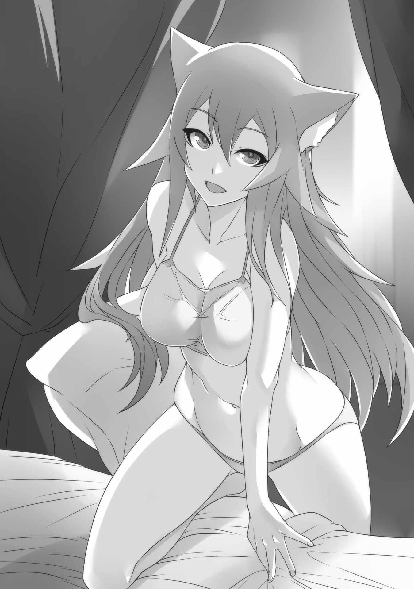
「大丈夫ですか、私がついてますからね」
「ああっ......」
何か大事な記憶が引き戻されそうな感じがしたのだが、ダメだ思い出せない。とても悲しい気持ちでたまらなくなっただけだ。様子がおかしい俺を慰めようというのだろうから、端っこにいたシャロンが、こっちにくっついてきても撥ね除けるつもりにもなれなかった。
もう子供ではないけど、ちょっと大きな飼い犬だと思って、可愛がってやればいい......。
「......って、それはさすがに無理だろ」
飼い犬には、大きな柔らかい胸も、お尻もついてないし、風呂上がりの女の子の甘ったるい匂いはしないんだよ。
悪気がないどころか好意だとは分かってるので、今日は我慢するけど。これが毎日続いたら安眠妨害すぎる。
「スッースッー」と、静かにシャロンが寝息を立てているのを確認して、絡みついている手足を外してちょっとずつ、ベッドの端に移動する。
ようやく眠れる、そう思ったらまた気がついたら少しずつ寄ってくる。
柔らかいのが当たって、身動きが取れない。
「ご主人様ぁ......」
耳元で甘ったるい声が聞こえた。やめろ、なんかゾクゾクするから。起こしてしまっても悪いけど。頼むから、もうちょっと離れてくれ。
しかし、この手に触れている柔らかいのは、シャロンの腕か、太ももか、胸なのか。
俺の拙い経験値では、対処法が思い浮かばない。
もう考えるな、何も考えるな。
「色即是空、空即是色......」
般若心経の一部分を繰り返し唱えながら、なんとか耐えて眠るまでに、だいぶ時間がかかったのだった。
これが、リアルファンタジーの厳しさだとでも言うのか。
未経験者には、甘くない世界。いや、訂正、甘すぎて息が詰まりそうだ。
●
山間の街オックスから北西に『魔の山』はそびえ立っている。
魔の山とは、あまりにもそのままの名前であるが、そうと呼ぶしかない存在である。
他の山とは明らかに植生の違う、硬く鋭い黒杉が一面に覆う。黒い山は、それ自体がまるで多数の槍がせり出した天然の要塞にすら見える。
そして、山の頂にある『魔素の瘴穴』から、今も溶岩のごとく人間の眼に見えぬ魔素が噴き出して止まらないそうだ。
ルイーズが山中に偵察に行ったのを、山の裾野で待っている俺にライル先生が声をかけた。
「今を遡ること二百四十年前の話です......」
「お伽話ですか」
俺がそう言うと、ライル先生は笑った。
「初めて『魔素の瘴穴』を封印した勇者の話ですよ。かつての大英雄レンス・アルバートは魔物を統べる魔王を倒し、モンスター活性化の原因が『魔素の瘴穴』にあることを突き止めて、封印にも成功しました」
「すごい人だったんですね」
「そうですね。彼が『魔素の瘴穴』を封印したことによって、モンスターの大量発生が止まりました。このシレジエ地方にも人が住めるようになり、勇者は初代シレジエ国王レンス・シレジエ・アルバート一世となったわけです」
「国王になったんですか」
先生は、さすがに不思議そうな顔をした。シレジエ王国の建国譚も知らないのかって話だろう。俺は異世界人だからね。
「大事なのはここからです。仮に封印がもう一度解けたとするなら、再度『魔の山』に対抗するため軍を置くべきは、王都シレジエ。そして次にシレジエから挟み撃ちにするために、魔の山から下った麓の街オックスがもう一つの拠点となる。そう考えて、建国王レンスは、王都シレジエと要塞の街オックスを作ったんです」
「えっとそれはつまり......」
「つまり、『魔素の瘴穴』を考えると、私たちは絶好のポイントにつけているということです」
そういう、先生の笑顔には強い自信が窺えた。かつての大英雄の足跡をなぞるように、俺たちも戦い抜いてきたのだ。かなりの棚ボタではあったが、俺も勇者になった。ここまでは順調といえる。
先生は、もう覚悟ができているのだろう。必ずや古の勇者のごとく『魔素の瘴穴』を封印してやろうと俺も覚悟を決めた。
●
「前と一緒だった」
オックスの古城へと、早馬での偵察を終えたルイーズは山を降りてくるなり、そうつぶやいた。
モンスターが活性化しているだけで、今の『魔素の瘴穴』に魔物を統べる魔王は存在しない。
原因も対処法も分かっている。
かつての英雄が初めて封印した時代に比べれば、格段にマシといえるクエスト。
しかし、問題点が一つだけ。
「この『魔の山』には飛竜が巣食っている」
ドラゴンの亜種だ。伝説のドラゴンが四本足で知能も高く魔法まで使うＲＰＧのラスボス格であるのに比べて、飛竜は二足歩行で知能も低く小さい。
その力の差は、大人と子供ぐらいある。
空を飛べることは厄介だが、竜騎士に飼われて乗りこなされる飛竜が居るほどだ。
王国騎士団にかかれば、倒すのはそこまで難しい敵ではないという。
しかし、それは『魔素の瘴穴』の影響がなければの話だ。瘴穴のすぐそばに住み、強大化している飛竜。
その鱗は黒色に染まり、黒飛竜とでも呼ぶべき存在に変化している。
その力は、上位種のドラゴンに迫るそうだ。
「だから、私たちは黒飛竜の群れと『魔の山』を分断しようと考えた」
以前ルイーズが率いた討伐隊が取った戦術はこうだ。まず『魔の山』に攻め入って黒飛竜と闘いつつ、魔の山から引き剥がす。
その間に、聖女が『魔素の瘴穴』を封印しに赴く。
いくら強大化しても、黒飛竜はドラゴンほど知恵が回らない。
単純な陽動だが、成功率は高い作戦といえる。
だが、失敗した。
「封じ込めようとした聖女が、任務を果たせなかった」
封印の儀式にどのようなミスがあったか。
あろうことか、逆に封印はさらに開いてしまい、モンスター活性化は致命的なものとなった。
魔素のさらなる噴出に荒れ狂う黒飛竜の群れと戦って、聖女を救出しようとした討伐隊も、そのほとんどが戦死した。
「なぜ、失敗したのかすら分からなかった。指揮を執った、私のせいと言われてもしかたがない」
そう前回の戦いを振り返って、呆然と呟くルイーズ。
卓を囲むみんなは、黙り込む。
その空気を破るように、シスターリアが手をあげて発言した。
「ルイーズさんと一緒に行った聖女は、わたくしのお師匠様でした。慈悲深きシレジエの聖女、この国で一、二を争う神聖錬金術師だった彼女が、封印に失敗するとは考えられません」
「しかし現に......」
ルイーズが反論するのを、リアは手で抑えて続ける。
「普通ではない状態だったのでしょう」
「どういうことだ......」
ルイーズが、茜色の瞳にギロっと凶暴に煌きを見せる。それに臆することなく、リアは続ける。
「アーサマ教会の上層部は、何らかの妨害工作があったと推測しています」
「誰がそんなことをする。シレジエに敵対する近隣国か？ 国境を接している他国だって、『魔素の瘴穴』から大量発生したモンスターの侵攻を受けているんだぞ」
瘴穴の蓋を開けて得する人間などいないだろう。ありえないと言いたい気持ちは分かる。
ルイーズたちだって、細心の注意と、できる限りの危険性を考慮した作戦で攻めたはずだから。
「その妨害工作をしたのが、味方であるはずの騎士ならばどうですか。お師匠様は人を疑うことを知らない方でした。例えば、味方と信じた人に、こっそりと封印に使う聖棒を偽物にすり替えられるなどすれば是非もなく......」
「それこそありえん！」
ルイーズにとって、味方の騎士団も兵士も自分の同僚であり部下だったんだからな。
「是非もありませんから、ありていに申し上げます。当時王国騎士団の副団長格であり、ルイーズさんと団長の座を争っていたゲイル将軍はどうです」
この世で最も嫌っている相手の名前を出されて、ルイーズは詰まった。
「いや、確かにゲイルは最低な男だと思う。出世のために、他の人間を陥れることも平気でするようなやつだ。しかし、私が言うのもおこがましいが『魔素の瘴穴』の封印が失敗したため、どれほどの民が死んだというのか......」
いやいやと、考えたくもないというように。
ルイーズは燃えるような赤い髪を振り乱して、苦悶の表情を浮かべている。
「ではお聞きしますけど、王都討伐軍の司令官としてゲイル将軍の動きはどうですか。まるで、『魔素の瘴穴』封印なんてどうでもいいような不可解な動きじゃないですか。王国軍内でも、民を救おうとする反対派閥が何度も決起しては潰されています」
うーん、それはあのゲイルが無能なだけじゃないかな。
「それは......ありえん！ いやしくも、この国の誇り高き騎士が。しかも、近衛騎士団長にまでなった者が、己の私利私欲のために『魔素の瘴穴』封印を妨害したなどと」
「状況的に考えると、是非もないことです」
「バカな！ 騎士が国を裏切るなど、それだけはあってはならんのだ。元騎士団に居た人間として、いくらあのゲイルでも、王国に忠節の誓いを立てた騎士であることには変わらない。それだけは、断じてありえんと言い切らせてもらう！」
ルイーズが、いつになく荒れている。そりゃ、冷静では居られない話だよな。
紛糾する作戦会議の中、ずっと静かにルイーズの話を聞いていたライル先生が質問した。
「ルイーズ団長、私も言いたくはないですが、そのあり得ないことがあったら、どうするんです」
「そんなこと、騎士が国と民を守らないのなら、もうその時はこの国の滅びだ。それだけはあってはならないのだ」
なんだか、本筋から話が外れてるなあ。俺も口を挟むことにした。
国の内紛とか裏切りとか、勝手にやりたい人がやってくれればいいけど、今は目の前のことだ。
「まあ、それは一旦置いておいて、瘴穴の封印はどうしようか」
俺が突然口を挟んだので、言い争ってたルイーズたちがきょとんとしてこっちを見る。
ああ、ごめん。シリアスなシーンだから邪魔しちゃいけない空気だった？
「そうですね、タケル殿のおっしゃるとおりそちらが先決です。基本的な作戦は、ルイーズさんが率いた討伐隊と変わりません。魔の山から黒飛竜を引き離して、リアさんが『魔素の瘴穴』を封印する。大砲がある分、かなりやりやすいとは思いますよ」
ライル先生は、少しためてからこう付け加えた。
「何者かの妨害が、なければの話ですがね......」
妨害する者などいないというルイーズの意見を、ライル先生は絶対に信じていない。
ライル先生の作戦がどこまで深いかは分からないが、一見して澄ました顔を見てればわかる。
この先生の顔は、何か企んでいる。
きっと、妨害があることも考慮した秘策を立てるつもりだろう。謀は、密を以て良しとす。俺は、いちいち細かい作戦までは尋ねない。
先生は言わなくていいことは言わないし、俺が知っておくべきことなら教えてくれるだろう。
誰かが、封印を妨害するような真似をしたのか、してないのか。そんなことを悠長に調べるより、俺としては『魔素の瘴穴』封印が先決だ。
一日も早く封印しないと、またモンスターが活性化して犠牲が出るのだから。
ただ、先生が十分と思うまで、きちんと準備を整えてからだけど。
俺たちに被害が出たのでは、敵わないから。
●
などと言っているうちに、一ヶ月以上の時が瞬く間に経った。無為に過ごしていたわけではない。
それだけの時をかけて、ライル先生はやりすぎじゃないかと思えるぐらいオックスの街を要塞化している。
新しく街を作り変える勢いで土木工事をしている。堀を深くして、尖塔も補修して、固定砲台にしてしまった。
何と戦うつもりなのか先生。聞きたくても、我が軍で唯一の中級魔術師である先生は石切り場に篭もりきりである。鬼気迫る形相で、魔法を駆使して外壁構築につかう石を延々と切り出している。そんな様子だから、こっちも黙って指示通りに穴掘や石積みを手伝うしかない。
幸いなことに、元は農民や職人であった兵士たちは土木作業員としては優秀で、過酷な工事にも脱落せずについてきてくれた。
一方で先生は、後方のロスゴー鉱山に居るナタルと連絡を取り合って、イエ山脈鉱山組合と連携して新型大砲の開発、増産を進めているらしい。
それは、大砲だって多くあるに越したことはないんだが、山に登って封印しに行くだけなのに、ここまで街の守りを固める必要あるんだろうか。
いつになったら『魔素の瘴穴』を攻めるのかと、王都からも催促の手紙があったらしいんだが、先生は握りつぶしている。
まあ、先生がやることなんだから全部意味はあるんだろう。新型の大砲はともかく、俺もライフルが欲しいしね。
設計図は何枚も送ってるんだから、頼むぜ鍛冶屋さんたち。
ルイーズに率いられた義勇兵団も、十分な訓練期間が取れたこともあって、かなり複雑な機動訓練ができるようになった。
『魔素の瘴穴』がある山の上から、定期的にモンスターの群れが降りてくるんだが、良い訓練相手になってしまっている。
「タケル、ここに居たんですか」
「ああ、リアか」
すまんなリア、せっかく勇者にしてもらったのに全然活躍できなくて。
なんだか、リアを見るシャロンとサラちゃんの瞳がトゲトゲしい。大丈夫だぞ、この人は近衛を狙ってるわけじゃないから。
俺もリアのキャラに慣れるまで時間がかかったから、不審人物を見る目で見てもしょうがないけどね。実際、言動は不審だ。
「ライル軍師に聞きましたけど『魔素の瘴穴』を攻める日取りが決まったそうですね」
「ああ、ようやくな」
先生のことだ。さっさと行かず、こんだけ溜めに溜めた理由もおそらく何かあるはず。むしろ何が起こるのか、楽しみにしてるぐらいだ。
「封印の際には是非、勇者は封印の聖女と共にあらねばなりません」
「一緒に魔の山に登れっていうのか。俺としては、先生がそういう作戦でいいって言うなら構わないけど」
話を聞いてると、光の剣が封印に役立つ場面ってありそうにもないんだが。最初に封印したのが勇者だから、儀礼的にそうなら是非もない。
あっ、いやだな。リアの口調が感染った。
「軍師の許可はとってあります、是非もないです」
「笑うなリア」
「真面目な話です。わたくしのお師匠様は、封印に赴いてなくなりました。黒飛竜を先に引き離すと言っても、危険はあるでしょう？」
「そうだな、でも作戦を信じてるから大丈夫だ」
リアの神様がアーサマであるように、俺の作戦の神様はライル先生だから、先生が大丈夫って言ってる限り敵を恐れる気持ちはないんだよ。
「タケルは信心深いんですね」
「だろう」
不意にリアは、形の良い口元をほころばせた。
目深いフードに隠れているけど、口元だけは辛うじて見える。そういやここに来てから、リアは本当にフードを脱がない。
一度も脱いでいない。脱ぎたがりってのは、単なる冗談だったのかもしれない。
まあフードを被り続けてるのも、絶対に何かの振りだと思うから。こっちから顔を見せろなんて、絶対言わないけどね。
余計な藪をつついて蛇を出すのはゴメンだ。
「わたくしも覚悟が決まりました。勇者に女神の加護を与える秘跡の準備を整えて置きますので、作戦開始前に時間を取ってください」
「秘跡？」
聞き慣れぬ単語だ。
「アーサマ教会、秘中の秘の儀式です。聖女の祝福により、勇者の対魔法力と物理防御力を格段に高めます」
「俺もそういうの結構好きだけどさ、なんか代償とかあるんじゃないだろうな」
良い話にはデメリットもある。
「分かってるとは、さすがですね」
「商売やってると疑い深くなるんだよ」
パターンだしな。
「秘跡には安全な方法もあります。しかし、タケルは勇者としては、魔法力もなく戦闘力にも欠けています。わたくしだって、聖女には至りません。ですから、リスクを取っても禁呪を使って、お互いの力を極限まで高めようと思っています」
「戦闘力に欠けるか。ハッキリ言ってくれる」
まあ、遠慮のないところは、リアのいいところだよ。
それは冗談でなくな。
「禁呪は、あまりに危険すぎると、教会から禁じられた秘跡の授け方です。もし、タケルの精神が儀式に耐えられなかったら、大事なものを失ってしまうことになるでしょう」
怖い、たしかに怖いが、そんな振りをされたら断れない。
俺だって男としての意地があるし、この厳しい世界で鍛えられて忍耐力にも多少は自信がついた。
死にはしないんなら、辛い試練でもトライしてみてもいい。
「儀式失敗の時は、わたくしも是非なくシスターとしての資格を失ってしまうかもしれません。何度も迷いましたが、そのための覚悟をして参りました」
いつになく、リアは真剣だ。
そりゃ自分も高いリスクを負うのだから当たり前か。
「その儀式に失敗しても、『魔素の瘴穴』封印はできるのか」
「すでに、封印のための聖棒作製は終わっております」
「じゃあ、リアがよければやる」
「わたくしは覚悟を決めたと、すでに申し上げたではありませんか」
リアは、白銀に輝くアンクを掲げてみせる。
いい覚悟だ。
「よしじゃあ、この戦闘終了後に少し休んでから、今晩にも」
「では、是非もなく」
勇者になるときは試練も感慨もなく、あっけなかったが、ついに来たかって感じだ。
強い力を得るためには、乗り越えなくてはならない壁があって当然なんだ。俺だって男だ、覚悟は出来てる。それこそ是非もないさ。
●
しばらく休んでから、今晩の予定はすべてキャンセルして禁呪と呼ばれる秘跡に臨む。
なぜか、風呂を沸かしてくれと言われたのが謎なのだけど。
もしかしたら大量の聖水を使うのかもしれない。水ごりとか西洋にもあるんだろうか。でもお湯で水ごりはないよな。
忍耐力を試すため、熱湯風呂に浸けられたらどうしようと思いながら。風呂場に行くと、目深にフードを被ったリアが脱衣所で待っていた。
「お待ちしておりました」
「うん、いつになく畏まってるな、リア」
彼女は、バサッと被っていたフードを上げた。少しウエーブのかかった淡い金髪の髪が揺れる。
リアは、エルフに見紛う美しい顔立ちだ。黙っていれば、慈愛に満ちた聖女にも見える。黙っていれば。
海のように蒼い瞳が、これ以上ないぐらい真剣な眼差しでこちらを見つめている。
空気が重い、そうか覚悟してきたのか。俺は、緊張に思わず息を呑む。いつもの、ふざけたリアじゃないから調子が狂う。
「まず、最初に絶対に守っていただかなければならないことがあります」
「ああ......」
リアは、ローブに手をかけるとバサッと下に落とした。あれ......、シスターのローブの下は、レースの付いた純白の下着姿だった。
現代のに比べると、ちょっと野暮ったい感じがするが、きちんと編み模様がついた光沢のあるシルクの下着なんてあるんだ。
かなりの高級品であろうとは見受けられた。と、同時に、俺は心の底から驚いていた。
リアは、着痩せするタイプだった。いや、お腹は太ってない。むしろ想像していたよりずっとほっそりしているのだが。
胸が、これ何カップだ......Ｅ、Ｆ、Ｇ、Ｈ、グッ......。俺は、頭部に衝撃を感じて額に左手を当てた。
俺のおっぱいスカウターが壊れた。計測不能だと言うのか。
バカな、このサイズは人類にはありえんはずだ。パッドで底上げしているだけだろ。
「これから脱ぎますが、絶対にエッチな気持ちになってはいけませんよ......」
「無理だろ！」
「タケル、これは冗談じゃないんです！」
そういいながら、プチン、プチンとブラのホックを外した。ポロッと落ちた布の代わりに、ぷるんと姿を現したチョモランマを前に俺は思わず跪きそうになった。
パッドなんか、なかったじゃないか。何食べたら、人類がこのサイズになるんだよ。マスクメロンか？
「グッ......、冗談じゃないなら、これはなんのつもりだよ！」
「これは、本当の本気で必要なことなんです」
だからそう言いながらショーツを脱ぐな！
ああっ、ツッコむ間もなく、あっけなく脱ぎ捨てた。
ブロンドは、下も淡い金髪だったのか。あまりにあっけらかんと裸になるから、リアクションできなかったじゃねーか。
「わかったから、とりあえず説明を聞かせてくれ」
「その前にタケルも脱いで裸になってください。そうじゃないと説明しません」
はぁ......どうして、どいつもこいつも。
俺はどうせチョロなので、この勢いで来られては脱ぐしかない。
相手に脱がれるという高いハードルを無理やり飛び越させられたからな。
自分が脱ぐぐらいは、という気にさせられる。
「シスターの貞節の誓いには、みだりに肌を見せてはいけないというものがあります」
「だったら何で脱いだ......」
もうツッコミするのも、悲しくなってくる。というか、いきなり意表を突かれたから、リアの身体まともに見ちゃってもう......。
「しかし、貞節の誓いには抜け穴があります」
「とりあえず、聞くよ」
「では、お風呂に入りながらゆっくり話しましょう」
「ああ、もういいよ。わかった」
さっさと、大浴場に入る。裸で向き合ってるより湯船の中に入るほうが百倍マシだ。
「タケル、かけ湯しないとダメですよ」
「言われなくても知ってるよ！」
俺を誰だと思ってるんだ。江戸っ子の風呂好きだぞ。ざぶんと風呂に入ると、いい湯加減だった。
こんな冷めた気分の時でも、お風呂は温かくて気持ちいい。
「では続きを話します。実はお風呂というのが伏線になっているんです」
「ああもう、伏線とかどうでもいいよ」
したり顔で、自分から伏線がどうとか言うやつは嫌いだ。もっとこっそり張れよ、気づかれないように。
「貞節の誓いの補足事項に、『でもお風呂場で偶然鉢合わせはしかたないよね』というアーサマのありがたい教えがありまして」
「君んとこは、ご本尊の女神様も、そういうアレなのか......」
教義がラッキースケベ的なのはオッケーとかないだろ。頭が痛くなってきた。
「真面目な話なんですよ、タケル」
「いやそれに、どう考えてもこれは偶然じゃないだろ！」
「この出会い必然ですよね、是非もありませんね」
この一緒に湯船に浸かってる状況で、頬を赤らめて照れるな！
「それで、まず対魔法力を高める秘跡なのですが」
「そうだよそれが聞きたかった！」
「本来ならただ聖女が勇者を抱きしめるだけなんですけど、服の上からだと与えられる力が弱いんです」
「ちょっと待って」
「まず後ろから行かせていただきます！」
「待ってっていったじゃんか！」
後ろから、スーと湯船を泳いできて抱きついてきた。
「背中に当たってるんだよ！」
さすがに、当ててんのよ、とは返してくれないか。
「ごめんなさい。わたくし、ちょっと身体にお肉がつきすぎて、気持ち悪いですよね」
「ううっ、いや気持ち悪いことは......」
冗談で返してくれた方が、マシだった。リアは、真剣に背中にオッパイをこすりつけてきてるのだ。
これは冗談でもなんでもなく、肌を通して感じる。本当に心がこもった、柔らかい感触だった。
だから余計に困る。
「これ、本当に儀式なんだよな！」
「そうですよ。だから、エッチな気分になるなって最初に言ったんです」
だからそれが、無理なんだよ。
童貞舐めてるだろ、もう湯船の中でマズイことになってるんだぞ。
「つぎ、前行きますね」
「いや、ちょっと今はマズイ待って！」
「タケル、気を強く持ってください。これが禁呪と言われるにはわけがあるんです」
「いや、わけなんかもう聞かなくてもわかるよ」
これは確かに禁呪だ、危険すぎる。俺は、慌てて泳いで逃げようとするが。なぜかお湯が絡みあうように、動きが鈍くなってきてる。
くそっ、もしかして俺の気持ちは、むしろして欲しい方向に流れているのか。すぐ湯船の隅に追い込まれてしまった！
「これまで、多くの歴史上の勇者と聖女がこの禁呪にトライして、儚くもその純血を散らしてきました」
「そりゃ、教会から禁止もされるわ！」
リアは本当に容赦がない。本当に前から来やがった。
「大丈夫ですよタケル。アーサマは堕胎を禁じていますし、もしものときは愛の無い子供でも立派に育てて見せますから」
「いやっ、なに人聞きの悪いこと言いながらやってんだよ！」
ああっ、これは本当にマズイ......。
「大丈夫ですか、あと五秒だけ耐えてください！」
「ううっ......」
うー、なんとかセーフ......か？
「対魔法力強化の秘跡完了しました」
「ありがとう」
俺もなんでお礼を言ってるんだって感じだが。まあ、してもらったんだからお礼で間違ってないのか。
無事に終わってくれて、心からホッとした。
「どういたしまして、次は物理防御力強化の秘跡に入ります」
「ちょっと待とう。本当に俺のほうが、心の準備できてないから」
まださっきの余韻が残ってる。せめて落ち着かせてくれよ。尋常じゃないぐらい、胸が高鳴っている。
「覚悟はできてるって言ったじゃないですか」
「こんな儀式だとは、思ってなかったんだよ」
「安心してください。物理防御力強化のほうはさっきよりはマシです」
「どんなやり方なの」
「本来は、一回キスするだけで終わります」
本来は、と言うからには今回は違うってことだろう。
「あー、なんとなく先が読めたぞ」
ザブーンとお湯から身を起こすと、俺の髪のてっぺんにチュッとキスをした。
「身体中にキスをすることで、防御力を満遍なく強化します」
「そうなのか、ウプッ......」
どこがさっきよりマシなんだよ。たった今、俺の顔がでっかくて柔らかい谷間にめり込んだぞ。濡れてるせいか、ピッタリと顔に張りついて窒息死させられるかと思ったわ！
あと言いたくないけど、さっきオッパイお湯に浮いてたからね。浮力高すぎ。
リアは、俺の頭のてっぺんからゆっくりと舐めるようにキスをしてくれる。
髪がくすぐったい感じがして、なんとも言えない気持ちになる。そのたびに、どうやっても避けようがなくて、柔らかい巨大な乳房がポヨンポヨンと盛大に当たりまくってることについてはもうコメントしたくない。
本来の儀式であれば、戦いに赴く勇者を聖女が抱きしめて、さっとキスをして女神の祝福を与える、絵になるシーンだったのだろう。
誰がそれを、こんなエロな儀式にしてしまったんだ。風呂場でやるとかあり得ないだろう。どっかで、明らかに伝説がネジ曲がってる。
「えっ、口もするのか」
「当たり前ですよ。口というか、口内も満遍なくしますよ」
ディープキスじゃねーか。
「口内とかいうなよ」
言い方が、いちいち生々しいんだよ。
「無敵の泉に浸かったと思ったら、口内を浸けてなくて喉を突き刺されて死んだドラゴンの話、知らないんですか？」
「いや、そう言えばもっともらしいけど、俺は経験ないんだぞ」
ディープどころか、浅いのもないよ。
「わたくしも、したことないですよ。なんですか、わたくしが初めての相手だと不服とか、他に好きな子がいるから唇は許せないとか、そういうことですか」
あっ、リアでも、そういうのは機嫌悪くなるのか。こいつは、動じないのかと思ってた。それは失礼だったが、だからこそ冗談じゃ済まない話だぞ。
「いや、相手がリアで不服ってことはないんだけど。そういうのって、やっぱ好き同士がやるものというか......」
「それって言外に、私のこと嫌いって言ってますよね」
まあ、そう受け取られるか......。
「いや、そういうことはない！」
「じゃあ、どういうことなんですか。なるべくさっさと儀式終わらそうと思ってましたけど、そこだけはハッキリしておかないと、わたくしだって、もう続けられません」
「うーん、なんというかさ。俺たちって、まだ出会ってそんなに経ってないわけじゃない。会ったのもついこないだで、デートもしてないというか」
俺の考えは古いのかもしれないが、付き合うまでに色々と紆余曲折を経て、告白イベントなどがあり、お互いにカップルになって、何度かデートを重ねたあとにようやく愛情も深まって許すもんじゃないか、唇って。
なんだウザイか。俺はデートとか経験ないからな。夢見てるんだよ、悪かったなちくしょう！
「タケルって変わってますよね。お互いに裸でお風呂に入ってる状態で、デートをしてないからキスはできないとか、子供でも言わないと思います」
「あーまあ、子供は逆にあっさりとキスしそうな感じなんだが」
「じゃあ今だけ、子供の気分で受け入れてください」
そう言うと、リアはそっと俺と唇を重ねた。強く押し切られたわけではないのに、雰囲気に呑まれてしまって、撥ね除けられない俺が居た。
「どうですか、何か変わりましたか」
「いや......、あっけないなとは思ったけど」
「一応、唇にキスすることで全体的に防御力が上がってるはずなんですけどね」
「ああそっちのことか、うーむ」
そっちも、あまり変わったような気がしない。
「やっぱりそうですかー。わたくしが聖女としてレベルが足りてないから」
「いや、俺が勇者として未熟だからじゃないか」
「じゃあもっとキスしますよ、そしたら変わるかも」
もう一度、柔らかいリアの唇が俺のと触れ合う。
「さっきよりは......」
さっきよりは、味わうことができた。
「そうよかった。じゃあもう一度」
柔らかい感触。ほんの少し唇で唇を挟まれる。
リアが、ふわっと微笑んだ。あっ、なんだろう今の感覚。
「感じた、今ちょっと魔法力が出ましたね」
「そうだな、なんかちょっと違った」
俺は、魔法力ゼロのはずだから感じないはずなんだけど。たぶん、何かが変わったと感じる。
また何度かキスをする。
いつまで繰り返すのだろうかと思ったらリアが。
「じゃあ、今度は口の中......」
そう言って、唇の中に温かい舌を這わせてきた。
お風呂場に、クチュクチュっと音が響く。なんだこの淫靡さ。キスだけで腰が抜けそうだ。
「んんっ！」
「んっ、ごめんなさい息苦しかったですか」
「いや、平気だけどいきなりだったから」
「そうですよね。でも唇のキスは儀式の要ですから、すごく大事なんでおざなりにできないんです」
そういうと、また唇の中に舌をねじ込んでいた。クチュクチュと、音を立ててリアの舌と俺の舌が交じりあう。
「んっ......リア、あのさ」
「ごめんなさい、わたくしの唾液なんて汚いですよね。でも、舌が喉の奥まで届かないし、そこまで強化しないといけないから」
いや、汚いとは言ってないぞ。俺の唾液まで飲み込む必要はないんだと、そう言いたかったんだが。
「もうさすがに、いいんじゃないか」
これ以上は、もう立てなくなりそうだ。なんだかこう、たまらない気持ちになってきた。
少し、お湯にのぼせたのかもしれない。気を緩めるとこのまま眠ってしまいそうだった。
「さてじゃあ、もっと身体にもキスしていきますね」
「ああっ......」
もはや、されるがままに俺はリアに全身を舐めるようにキスされていく。胸のあたりまで来たので、俺は湯船から身を起こして、湯船のヘリに座る。
「どうですか、気持ちいいですか」
「ああっ......」
もうなんだか身体がだるくて、リアに逆らう気にもなれない。まさか、全身を女性に舐め回されることがあるとは思っても見なかった。
いきなり初めてでこんな強烈な経験をしてしまって、俺の今後の人生どうなるんだろうか。まだデートもしてないのに、なんでこんな......。
指先までチュパっと舐められると。もうダメだろって気になる。頭がボーとして、何がダメなのかすらわからない。
ただ、柔らかいリアの身体に抱かれて、全身を舐められていくだけだ。
しかし、リアの舌が下半身に達しようとしたとき、さすがに俺は戦慄した。
「リア、そこはさすがにダメだ！」
「でも、防御力を上げないといけないから。わたくしは大丈夫ですよ」
「いやっ、俺が大丈夫じゃないんだよ。大丈夫じゃない状態だから」
「大丈夫です、是非任せてください」
ダメだろ！
そこはさすがに避けろよ。
「マジで止めて、本気でダメだから、リアがお嫁にいけなくなっちゃうから！」
「是非もありませんね。わたくしはどうせシスターなので、お嫁にはいけないんですよ」
いやいや、シスターなら神に身を捧げろよ。俺に奉仕してどうするんだ。
「いやっ、さすがに断るぞ。いくらチョロの俺だって、限度ってもんがある！」
矜持だ、状況に流されるな、男の意地を見せろ。
いや男を見せちゃダメか。とにかく逃げないと......。
「ふふっ、どうしたんですか。そろそろ効いてきましたか」
「はっ、なんだ効いてきたって」
そういえば、さっきから身体が自由に動かない。
「まさかリア、媚薬を盛って......」
「どんなシスターなんですか。やっぱり、わたくしは少し誤解されてると思います」
「いやでも、なんか身体が熱くって動けないんだけど」
「それは、のぼせただけじゃないんですか。まあ、お風呂のお湯をこっそりと『聖なるしびれ薬』に変換していったので、是非もないかもしれませんけど」
なんだよその変な薬。
聖水とか回復ポーションなら分かるけど、聖なるしびれ薬って、お前のとこの宗教どうなってるんだよ！
「わたくしは、神聖錬金術が得意と申し上げました。さあ、身体が動かないんじゃ是非もないですよね」
「いやぁ！ ダメだよ。もう止めて......」
「ダメでーす、止めませーん。さあ諦めて強化しましょう、初めてでも大丈夫ですよ。全部任せてくれたらすぐ済みますから」
「ああっ、もう止めよう！」
「だから止めませんって」
「だから『魔素の瘴穴』攻略とか、もう全部止めるから！」
「はぁ!!」
「だからもう止めよう......」
「いや、この期に及んで、それはどうなんですか。そこまでわたくしが嫌って、あんまりにもひどいじゃないですか。いくら、わたくしだって、女の子なんですよ！」
「ギブアップ！ リアが嫌とかそういうんじゃなくて、もう精神的に限界だから！」
俺だって、いろいろとあるんだよ。こんなところで、初めてを散らしたくない。
ギブアップだ、ギブアップ！
もはや首だけしか動かず、リアの手からは逃れられない。なぜ身体がしびれて動かないのに、一部分だけ元気なんだ。
おかしいだろ......。
リアは、俺の身体を抱き上げるとザブンと湯船から上げた。おお、力持ちだなおい。
「さあ、ここに寝ましょうね。もう十分温まったからお風呂はいいでしょう。タケルには特別に、タオル地のマットを用意しました」
「はぁ......、されるがままだな」
こんなことになるんなら、勇者になんてなるんじゃなかった。俺は、どこで選択肢を間違えた。
リアにさらにペロペロと身体を舐められながら、俺の心は現実逃避気味に過去の選択肢を探っていく。
勇者はもう攻略で断れない選択肢だったし、その攻略も必然の流れだったような感じだぞ......。
「タケル、これは是非もない運命なのですよ。覚悟を決めましょう」
「そうかこれがもしかして、リアの言っていた伏線か」
あろうことか、リアの舌はついに絶対に避けなければならない部分に近づいていく。
「さあ、安心して任せてください。絶対に大丈夫です、初めてでも痛くしません。粘膜の弱い部分こそ、防御力を入念に高めましょう」
「なぜ大丈夫だとお前が言い切れる！」
しびれ薬を作るなら、肌の感覚まで麻痺するのを作れよ。ぜんぜん気持ちいいんだよ。
くそっ、それ以上は絶対ダメだ。止めろ身体が、身体が動かない。
あっ......あああぁぁぁ！
ようやくここで、しびれ薬が完全に回ってくれたのか、俺の意識は急速に遠のいていった。
もう遅いんだよ......
............
......
...
●
「はっ？」
「あっ、目が覚めましたか、ご主人様」
ううっ、なんだか身体がだるい。
「シャロンか......、ここはどこだ」
「お風呂場の脱衣所ですよ。ご主人様がのぼせて裸で倒れてらっしゃったので、バスローブを着せて介抱しておりました」
「そうなのか、リアはどこにいった」
あれ身体が動くぞ。
ちょっと、まだ少し四肢がしびれてるけど。むしろ全身がスッキリした感じだ。
「リアって、シスターステリアーナですか。お見かけしませんでしたけど」
怪訝そうなシャロンの顔。
俺が起き上がってお風呂場を覗いてみると、空の湯船があるだけだ。お湯すら入っていない。
「もしかして、全部夢だったのか......」
「大丈夫ですかご主人様、滑って頭とか打ってないですよね」
シャロンが、頭は大丈夫かと額に手を当ててくる。うん、たぶん。熱もないし、頭も打ってないとは思うけど。
「今日はもう歯磨いて寝る」
「おともします、ご主人様......」
その日の夜は、悪夢を見た。大きな蛇に、全身を飲み込まれる夢だった。
●
「おはようございますタケル」
「おっ、おう......」
次の日の朝。目深にフードを被ったシスターリアと、お城の廊下ですれ違う。
リアは特に何もなさそうな感じで、普通に挨拶してくる。
俺は、昨日の今日だから、リアのことをすごく意識してるんだが、向こうは普通だ。昨日のあれは夢だった、ぐらいに思ったほうがいいのかな。
そうだな、夢か現実か曖昧ぐらいにしといたほうが、これからも付き合いやすいもんね。
あれは秘密の儀式だったんだし、何もなかったとして処理してくれる、リアなりの配慮なのかも。
「どうかされましたか。そういえばお風呂で倒れられたと聞きましたけど、お加減はいかがですか」
「そうだな、一晩寝たらスッキリしたよ」
チラッと辺りをうかがうと、誰もいないと思ったのか、リアはフードをあげた。シスターは、みだりに肌を見せないんじゃなかったのか。
......んっ、やけにツヤツヤした血色のいい顔色をしてるな。
「ここだけの話なんですが、わたくし、実は昨日、聖女にランクアップしたんです！」
「おおっ、そりゃすごい」
戦力の向上に繋がって、それはめでたいことだが。あれでランクアップとか、嫌な予感がする。
「たっぷりと基礎魔法力が向上しましたからね。やはり聖女は勇者の成長と共に、レベルアップしていくようです」
「そ、そうか、俺もレベルアップしたってことか」
おい、なんだこの、危うい会話は。有耶無耶にしてくれるんじゃなかったのか。
「今日のタケルは、ちょっとおかしいですね」
「お前ほどでは、ないけどな」
うふっと、光沢のあるほっぺたを桜色に染めて、ぷっくらした唇に含み笑いを浮かべるリア。
やっぱりあれだリア、お前そのフードずっと被ってろよ。
「あららっ、いいますねえ。まあ、今日のわたくしはそう言われても、是非もありませんね」
「ちょっと......」
待てよ、これ以上話してると、また変な話になりそうだ。昨日のことは、お互いに水に流そうぜ、お風呂だけに。
「タケルは男の子なんだから、何も気にしなくてもいいんですよ」
「......」
「それは、わたくしもエッチな気分になるなとは申しましたけど、若いんですから生理現象は是非も......」
それ以上聞かずに、リアのもとを歩き去った。
後ろから追いかけてきたから、勇者の力を使って、全力で走り去ってやった。
俺だってなあ、怒らないわけじゃないんだぞ、リア。
それで逃げてるだけなんだから、やっぱチョロかもしれんけど、しばらくあいつとは口を利いてやらないことにした。
●
いよいよ『魔素の瘴穴』に向けて、大攻勢を開始する時が来た！
ライル先生は、わざわざ予定日を大宣伝して、王都にまで報告書を送っていた。
そうして、予定日の予定時刻通りに、麓に青銅砲四門を並べる。
その脇を、随伴の足の速い銃士隊が囲む。
「なんで、俺たちは前に出ちゃいけないんですか」
「私がいいと言うまで、将軍たちはここから動いてはいけません」
今頃、魔の山の頂まで、ルイーズの騎馬隊が駆け上がっているだろう。
黒飛竜を引きつけてから、転がるように山道を駆け下りてくるはずだ。
それを迎え撃つ戦力としては、城の前の麓に布陣は、少し浅すぎるように思う。
俺とライル先生は、戦場の全体が見渡せる居城の天辺から、観戦している。
裸眼の俺から見てもいい眺めだから、望遠の魔法が使えるライル先生は、もっとよく戦況を見渡せているだろう。
やがて、ものすごい勢いで山道を駆け下りてきたルイーズたちの騎馬隊が、指図通り砲兵隊の隣を駆け抜ける。
黒飛竜の群れが、ルイーズたちを追いかけて駆け下りてきた。
「あれが、黒飛竜か」
普通の飛竜が緑色なのに比べて、魔の山の影響でその鱗はどす黒い。身体も想像をはるかに超えて大きい。
羽の形や足の形が違うんだろうが、迫力では幻獣の王たるドラゴンとほとんど変わらない。
その飛びかかる黒飛竜の威容もたいしたものだが、険しい山道を馬で一気に下るルイーズたちの手綱さばきは、もっと素晴らしい。
義経のひよどり越えか。
意気揚々と馬を追って飛んできた黒飛竜を、待ち構えていた青銅砲の砲撃が襲う。
「ギャアアア！」
甲高い悲鳴をあげて、先頭の黒飛竜が上空に浮き上がった。
本来なら一撃必殺のはずが、青銅砲の直撃を喰らってもまだ生きてる。
やはり、魔素の影響でドラゴン並の硬さになってるのか。銃士隊も火縄銃で黒飛竜を果敢に討ち果たさんとするが、ほとんど効き目がない。
強化された今の黒飛竜にとっては、鉄砲の鉛弾など蚊が刺した程度にしか感じないのかもしれない。
うわ、今度は黒飛竜がブレスを吐いた。普通の火炎ブレスではなく、黒くて禍々しい炎。火にまかれた、兵士たちが苦しそうに転がり回る。
その時だった。
魔の山の上から、いきなり大きな雨雲が発生して、青銅砲と銃士隊の上に大雨を降らせてくる。
ブレスの炎もおかげで消えたが、なんだあの変な雲は。
「いけませんね」
先生が、手元から赤色のロケット花火を打ち上げた。
かんしゃく玉、爆竹に続き、火薬に色をつけた花火シリーズ第三弾。信号弾に使われるとは思っても見なかったが。
赤は退却の合図である。
「あっ、逃げるんですか？」
兵士たちは、青銅砲も火縄が雨に濡れて撃てなくなった銃も、投げ捨てて、オックスの街に向かって全力で撤退する。
すでに退却していたルイーズと同じように、お堀の桟橋を渡って街の中にこもった。
今度は、黒飛竜に一番近い、オックスの城の尖塔と外壁の側塔にある一番と三番砲台が火を噴く。
こっちは青銅砲とは違い、大型の鉄製大砲なので飛距離が長い。二発撃って、黒飛竜の翼にかすっただけだが。
それでも黒飛竜の群れは、強敵の登場におののいた様子で、８の字に飛び回って牽制し始めた。
今度は、城の大砲との戦いになるわけか。その時、突如として、ゴゴゴゴッと激流の音。
山の谷と向こうのほうから、突如として発生した大洪水が流れ込んでくる。
「もしかしてこれ、水魔法？」
「敵の妨害です。そう来ると思ってましたよ......」
谷の岩肌を削り、木々や土までも巻き込み、荒れ狂う土石流と化した大洪水が、谷間のオックスの街を飲み込もうと迫りくる。
俺は、街が飲まれることを見晴らし台から見てることしか出来ない。
「ああっ、街が水に飲まれる！」
そう思った瞬間、激流の流れはなぜか街だけを避けて流れていってしまう。
「うおっ、これどうなってるんですか先生！」
「街の外郭を木と石の堤防で囲み、大海を突き進む軍艦の形にして、張り巡らせたのです」
「なるほど......」
たしかに、街の形が菱形になったなと思ってましたが、軍艦のイメージだったんですね。
「落とし穴を掘った要領で、見える堀だけでなく見えない排水溝も十分に掘り下げておいたので、たとえ谷間が大河になったって、不沈艦オックスは沈みません！」
謎の魔法の妨害は、大洪水では無理だと悟ったのか、今度は天から雷雨が降り注ぎ激しいスコールを降らせた。
「ハハッ！ 無駄無駄無駄無駄ァァ！ 砲台のある側塔は何十にも耐水対策が施されています。おかげで砲撃の角度は限定されてしまいましたが、風雨の魔法ごときいくら降らせても火縄すら消せませんよ！」
先生キャラクター変わってるけど、大丈夫なのか。
「どうですかタケル殿、名づけて『陸上軍艦の陣』です！ 史上初の軍略ですよ！」
「すっ、すごいですね......」
すごいけど、先生のテンションがすごい。
「大砲の弱点は水魔法と報告書にあげておいたらこれです。やっぱり王都の上層部の誰かが犯人ですね」
「ああっ、あの報告書、罠だったんですね」
「私が対処法も考えてないのに、新兵器の弱点を明かすわけないじゃないですか」
「先生さすが......」
......黒いなあ。
「なに、メテオ・ストライクだとぉ！」
完全にキャラのぶっ壊れたライル先生が悲鳴をあげる。先生に遅れて、俺も空を見上げたが、これは俺も悲鳴をあげたい気分になった。
空が急に暗くなって星空が見えたと思ったら、何本もの隕石が火花を散らしながら、オックスの街目がけて降ってくる。
なんていう大規模魔法だ。これは反則だろ！
「敵は最上級魔術を......だが、当たらなければどうということはない！」
城の天辺に陣取る先生は、手すりを両手で掴みながら微動だにしない。
魔術師軍師はうろたえない！
頼もしいけど、先生！
これどっかには、絶対当たるよねっ！
ズーンと重たい音がして、隕石がいくつも街に着弾した。こりゃ、さすがの要塞もボロボロだわ。
見晴らし台に直撃しなかったのが、不幸中の幸いとしか言いようがない。
「被害状況知らせ！」
混乱する城内で、伝令に報告を求める先生。
「三番、五番砲塔、大破です！ 連絡通路は生きてます」
「砲塔の残りはどうか？」
「いけます！」
「よし、作戦通り、私の指示がありしだい一斉砲撃を開始しろ！」
そう指示をして、クックックと肩で笑うと、俺に振り返ってライル先生は叫ぶ。
「タケル殿、この戦勝ちましたよ」
キラキラと粉塵が舞う城の中で、凄絶な笑みを浮かべる先生。
嵐の中で輝いて......。
「闇夜を照らす、星の輝き、いでよ。あそこです！」
そう、ライル先生が使ったのは、単なるスターライトの魔法。
任意の場所を『大きな強い光で照らす』だけの魔法だ。
メテオ・ストライクなんて究極の大規模魔法を放ったせいで、魔法で隠れていた敵はライル先生に位置を知られてしまった。
ライル先生が光で示したその場所こそ、隠形の黒いローブを着た、敵の上級魔術師が居る場所であった。
「戦争が魔法力だけで決まる時代は終わったと、教えてやるぞ上級魔術師！」
そんな先生の一声を合図にして、轟音で城全体が震える。
一番、二番、四番、六番砲塔が一斉に火を噴き、先生が指示した通りに、砲撃が着弾した。
さらに城の外壁の窓からも、火縄が死んでいなかった兵士からの銃撃が目標に目がけて降り注ぐ。
大量の魔法力を使うため一回しか撃てないメテオ・ストライクの隕石などより、よっぽど恐ろしいことに、塔からの攻撃は砲身が焼け付くまで連発する。
「これはさすがに、敵の魔術師は死にましたかね、先生」
「分かりませんね、メテオ・ストライクが使えるクラスの上級魔術師は、やっぱりしぶといですよ」
ライル先生ですら中級魔術師なのだ。たった一人で戦況すら覆せる上級魔術師とは、一つの国にそう何人もいない。
「まあ、降り注ぐ砲撃を逸らすことができて、即死さえしなければ生き残れたんでしょうがね」
「まだ何かあるんですか」
「ええっ、私たちが殺らなくても彼らがやってくれますよ」
「あっ......」
ライル先生が砲撃した場所で、砲撃を防ぐように何度も魔法力の明るい輝きが起こっていた。そこに山から降りてきた、黒飛竜の群れが殺到していく。
「あんなとこで、激しい魔法力を使えば、黒飛竜の注意を引くに決まってます。水魔法だけにしておけば、隠形できたのに愚かなことです」
黒々と禍々しい炎のブレスを吐く黒飛竜と、まだしぶとく生きていたらしい上級魔術師の撃ちあいが始まった。
「さあ、こちらの城にも黒飛竜が来ますよ。防衛準備しなければ」
なんと恐ろしい先生の軍略......。
上級魔術師の隠形が解けて、魔法力に反応した黒飛竜の群れが襲うことまで計算のうちだったのか。
同士討ちを狙うとは、いや敵の魔術師と黒飛竜も、味方ってわけじゃないんだろうけど。
ちょっと策が穿ち過ぎて、こっちが悪役に見えるぐらいの勢いだぞ。
「では、ここからがタケル殿のお仕事です。街が水に沈められてもいいように、魔の山に抜け出る連絡通路を作っておきました。この隙に、リアさんと『魔素の瘴穴』を封印してきてください」
「はい！」
「その間の黒飛竜の引き付けは、私たちと、あの己の強大な魔力に溺れた愚かな上級魔術師がやってくれるでしょう」
そう戦場に幾筋も瞬く光を見つめる先生の横顔は、凄絶に美しかった。
まあ、先生の指示通りにやれば、何でも上手く行くに違いない。
俺は信じてますよ。
●
俺は、アーサマの神聖文字が刻まれた封印の聖棒を抱えた聖女リアを護衛しながら進む。
『魔素の瘴穴』封印に挑むメンバーは、勇者の俺と、どう説得しても付いてくると聞かなかったシャロン率いる奴隷少女銃士隊。
こういうとき説得できないのは、俺も相変わらずチョロだと悲しくなる。
奴隷少女たちはまだいい。
サラちゃん兵長まで近衛だと主張して勝手についてきてるから、何かあったらロッド家に申し訳がないと青くなる。
だが幸いなことに、魔の山とはいえ雑魚モンスターの数が多いだけで、ほとんどが銃士隊で十分対応できる。
先に山に入って、黒飛竜を引き出してくれていたルイーズに感謝する。
「星王剣！」
俺も光の剣を振り回して、一刀のもとにオーク・ロードを構えていたストーンハンマーごと斬り伏せる。
青白い光を放つ刃、ブゥーンと唸る光の剣の切れ味はイメージ通りだ。
秘跡の効果か、フットワークも軽い。
これならなんとか、仲間を守り抜いて戦い抜けそうだ。
森のあちこちで発生しているオークやオーガを鎧袖一触で斬り伏せながら、山道を必死で突っ走っていたのだが。
山頂に近づいて見えた『魔素の瘴穴』に思わず足が止まった。
「タケル、どうしたんですか！」
「どうしたんですかってリア、あれ......」
「何驚いてるんです。あれが目的地『魔素の瘴穴』です」
「えっ、だって......」
黒杉が続く山道を抜けた山頂にあったのは、鈍く銀色に輝く四角い建物だった。明らかに金属製だ。
前の『魔素の瘴穴』封印が二百四十年前なんだから、その時に作られたはずだよな。ありえないオーパーツだろ。まあいい、とにかく向かいながら話そう。
「金属の建物って、この世界にあるのか」
「そういえば他には見ないですね」
なにその珍しい建物ですねぐらいのリアクション。
もっと驚けよ。自動車を見て「鉄のイノシシが走ってる」って驚くレベルだろこれ。
「リア、あれいつから建ってるのかもう一度確認していいか」
「何を当たり前のことを、二百四十年前ですよ。建国王のレンス様が、目立つようにと、ああいう変わった形の建物にされたと聞いてます」
「金属製の建物が二百四十年とかありえないから。普通に崩れるだろ」
「それは是非もありませんね」
いや、リア。本当にあのすごさがわかってないよね。なんでここにライル先生がいないんだ。
仮に誰かが建てたのは本当だとしても、二百四十年前って嘘じゃないか。外観から見てジュラルミン材かとも思ったが、あれは強度は高いが銅が混じっているために耐蝕性に欠ける。そのまま雨ざらしにしておいたら持たない。
「勇者様の電撃魔法を使ってお造りになった建物だと、お師匠様が言ってました」
「そうか、電気が使えるなら可能かもしれない。金属メッキだろうか」
勇者の電気魔法ならば、電気メッキが使えるかもしれないな。表面をブリキにしたかクロムかニッケルで耐蝕メッキを......いや待てよ、二百四十年間もメッキが持つなんて話は聞いたことがない。
丈夫で錆びない金属といえば、チタンだ。チタンは近年になって製造できるようになった比較的新しい金属で、その耐蝕性は高くほぼメンテナンスフリーで何百年も持つんだったっけ。神社仏閣の屋根材として宮大工が使ってると聞いたことがあるな。
建築資材がチタンであれば、二百四十年前の建物が現存してもおかしくない。
でも、チタンは天然には存在しない金属だ。ルチル鉱石か、イルメナイト鉱石の中から取り出すのだが製造工程は複雑だ。酸素原子が強く結びついているため、銅や鉄のように加熱処理で製造できない。アルミニウムやチタンなどの新素材は、電気が大量に使えて初めて生産が可能だったはず。
チタンかあるいは他の耐蝕性を持たせた建材なのかは分からないが、鋳造施設もない中世ファンタジー世界でどうやって造り出したのか。
この世界のどこかに、現代日本に匹敵する高度な金属製造、加工技術が存在した可能性を示されると、考え込まざるを得ない。
ただでさえ、いま冶金技術が欲しくてたまらないときだ。
「ご主人様、いまはそんなことを言ってる場合じゃないです！」
あんまり夢中になっていたので、後ろからシャロンに怒られてしまった。
「ごめんわかった、すぐ中に突入するぞ！」
四角い門から中に走り込むと、通路には大きなドクロマークがたくさん書かれている。
「建国王である伝説の勇者様が、危険だと示すために」
「怖いんだよ！」
趣味悪いだろ、伝説の勇者レンス。もうとっくの昔に死んでるだろうけど、絶対友達になれそうにないタイプだ。
何度か扉を抜けると、いよいよ瘴穴の間にたどり着いた。
そこにあったのは円形の大きな金属の床だった。穴がたくさん開いていて、下から青白い光が漏れだしている。
なんだこれ、写真で見たことあるぞ。俺の頭の中で危険アラームがガンガン鳴ってる。
「......って、これ原子炉じゃねーか!!」
下からチェレンコフ光がでてきてるよ。なんなの、魔素って放射能だったの!?
そりゃ変なモンスターもたくさん出てくるわ！
うああ、防護服着てないじゃん！
「ここに、制御棒を差し込んで封印します」
「リアぁ！ いま制御棒って言ったよね！」
「間違えました、聖棒です。聖棒を差し込みまーす！」
「もうどうでもいいから、早く止めてくれぇ」
「創聖女神アーサマの忠誠なる信徒ステリアーナが祈り求めます！ どうか世界を統べる創聖の名のもとに、混沌から湧く魔素の噴出をお止めください！」
プシューと音を立てて、聖棒が飲み込まれていく。次第に、下から漏れ出してくる青い光が収まっていく。
「これで、収まったのか」
「はい、封印が完全に成功しました」
本当に終わるときはあっけないな。あとは魔素が、本当に放射能汚染的な物じゃないことを祈るだけだ。
しかし、勇者の光の剣も青いんだよな。青白い魔素って、結局なんなんだろうという謎は残る。
魔法自体が魔素なのか、地中から湧き出す混沌が魔素なのか。
なんでアーサマの棒を差したら止まるの？
俺がそんなことを考えて、脳をハングアップさせていると。リアは、お師匠様を謀って殺した犯人を探すと言って、封印に失敗した聖棒を引き抜いていた。
あとで調査するつもりらしい。身体から変な触手とか羽とか生えないうちに。一刻も早く、この部屋から出たほうがいいと思うけどね。
●
俺は『魔素の瘴穴』から出ると、光の剣を手にして、油断なく辺りを見回す。こういう、長い時間をかけて目標を達成した瞬間こそ一番危ない。
俺は、ちゃんとパターンを分かってるんだよ。魔素の噴出が止まった黒い森は、不気味なほど静まり返っている。
あー、こういう雰囲気は絶対来る。キーンと耳をつんざくような音が聞こえた。
ほら、来た！
「そうか、山の主が戻ってきたから雑魚はいなくなったか」
頂上から見上げる俺は納得した。
あんなのが見えたら、どんなモンスターでも逃げるよな。ものすごいスピードで、黒飛竜の最後の生き残りが飛び込んでくる。
あの乱戦を生き残ってきた黒飛竜も、伊達ではない。
黒飛竜の中でも、一際大きい身体。群れのボスってやつか。
せっかく自らに力を与える魔の山を守ってきたのに、俺たちが魔素を止めたのでお怒りのようだ。
黒飛竜からしたら、仲間も殺されたし、気持ちはわかる。だが、こっちも負けられないんだよ。
黒飛竜は、俺たちの眼前に飛びかかると同時に、巨大な顎門を開いた。
魔素に強化された黒炎を、こっちに吹き出してくる。
「まずい、ブレスか！」
防御力強化された俺はともかく、サラちゃんとかシャロンとか逃げてぇ！
「アーサマ、みんなを護って、ホーリーシールド！」
リアが前に出ると、白銀の聖なる大盾を出して、ブレスを抑え込んだ。いい加減な詠唱でも、ちゃんと護ってくれるアーサマ素敵すぎる！
「グギギャアア！」
黒飛竜は、怒りの叫びを上げると、思いっきりホーリーシールドを突き破る。そのままこっちに体当たりを仕掛けるつもりか。
「ご主人様下がって！」
「このぉ！」
シャロンやサラちゃん、銃士隊が、一斉射撃。こちらに矢のように飛んでくる巨大な黒飛竜に火線が集中した。
薄い羽に穴が開くが、直撃する鉛弾ですら硬い鱗は弾く。急降下してくる黒飛竜の勢いは止まらない。
なぜか、黒飛竜はまっすぐに俺を目がけて飛びかかってくる。『ミスリルの胴着』がキラキラして目立つからか。
まあ、好都合だ。生半可な攻撃が通じないなら、俺がやるしかない。
「いいぜ、こいよ！」
俺は、精神を統一し、光の剣を最大出力で出す。
正眼に構えて、黒飛竜の狂気に彩られた赤い目を一点に見つめて、心を深く静めた。
「北辰一刀流奥義、星王剣！」
無駄な力はいらない、ただ一心に敵を頭から断ち斬ることだけ考えろ。
大きな光の剣を大きく振り上げて、静かに振り下ろす。
飛び込んだ黒飛竜の巨体と、交差──
ドサッと音を立てて、真っ二つになった黒飛竜が地に転がった。
「星王剣に、斬れないものなどない」
さっと光の剣を振るうと、光が収束する。
「タケル、やりましたね。立派な勇者です！」
「ご主人様、ご立派です！」
シスターリアが、大きな聖棒を抱えながら感動に打ち震えている。奴隷少女たちも、サラちゃんも、銃を掲げて泣きながら感動に打ち震えている。
いい最終回だった。
「おう......」
さすがに『ミスリルの胴着』は、黒飛竜の鋭い牙がかすっても、傷一つ付いていない。
だが、中の人間は、斬り伏せる際にかなりダメージを喰らった。念の為に回復ポーションを飲んでおく。
感動する仲間をよそに、ほろ苦いポーションをグビリとやりながら、俺の頭は転がってる黒飛竜の赤黒い肉を眺めて、算盤を弾き始めていた。
黒飛竜の肉は食えるのか、美味しいのか。
黒飛竜の鱗は高く売れるのか、加工すればなにか作れるかなどと。やっぱり、俺の本質は勇者より商人だな。生き残るためには、金がないと何も出来ない。
「とりあえず、戦場の後片付けからだな」
大洪水やメテオの被害がどれほどだったか調べて、使えるものは拾って使う。
いろいろ出費もあったが、今回もトータルでは大儲けだろう。
●
食堂でルイーズが作った「黒飛竜の内臓スープ」という赤黒い禍々しい汁（精は付きそうだが、ビターな味）を食べながら、ライル先生と善後策を話し合っていた。
『魔素の瘴穴』封印から数日。すでに、戦場の後片づけは済んでいる。
ただ思った以上に被害は大きかった。
大洪水に隕石の直撃、かなりの痛手を負った要塞街の補修にはまだ日数がかかりそうだ。
黒色火薬もかなりが湿気て、ダメになってしまった。
大損害だ。
俺は、上級魔術師のバカが大嫌いになった。
「オナ村からの報告で、義勇軍のキャンプの募兵がすごいことになってるそうです」
なんと、戦が終わってからどんどん人が集まって。義勇軍の数は、千人に近づく勢いになっているのだとか。
いまオックスの街に詰めてる兵士ですら、三百人でなんとか収容できてるのに。
兵士が千人って、オナ村キャンプのキャパシティを明らかに超えてる。
その勢いだと、そのうちエストの街より大きくなりかねない。
どうなってるのか現場見てみないと想像もつかないぞ。
「先生、そろそろ募兵を止めたら......」
その人数の服や飲食を賄う補給費だけで、ダナバーン伯爵が頭抱えてるだろうに。
戦が終わってからそんなに集まってくるなんて、人間ってやっぱそんなもんなのか。
「何を言ってるんですかタケル殿、人手がいるのはこれからなんですよ」
「えっ、そうなの」
「考えてもみて下さい、まず旧アンバザック領のオックスの街や村の復興があります」
「先生、それは男爵の仕事じゃないんですか」
まあ、ルーズ男爵は死んじゃったけどさ。
少なくとも、俺の仕事じゃないよな。
「いや、旧アンバザック領は、もうこのまま私たちがもらいますよ」
「えっ」
なんですと。
「魔の山を中心に、北西、旧ロレーン辺境伯領、南西、旧アンバザック男爵領、そして南東のシレジエ王領もこの際だから、街道沿いぐらいまで、全部もぎ取ってしまいましょうか」
「いやいや、先生それ無茶でしょ。国盗り物語じゃないんだから」
俺、金は欲しいけど、領地とか要らないんだが。
これ以上、管理に頭抱えるのはいやだ。
商会の経営だけでも大変なのに。
「タケル殿は瘴穴を封印した勇者なんですから、この実績は最大限に活用して成果をもぎ取らないといけません。どうせ崩壊した領土です。勇者が魔の山を監視するとか、適当に理由をつけて接収してしまえばいいじゃないですか」
「うーむ」
まあ、先生がそういう判断なら。でもなあ......発想が、勇者のそれじゃない。どうみても火事場泥棒ですよ。
「そうやって相手に大きくふっかけて、男爵領だけで譲歩する代わりに、イエ山脈の国家鉱山の総代官職を要求して、権益をごっそりいただくって手もあります。そこら辺は、王国との交渉しだいですね」
「おっ、それはいいですね」
イエ山脈の国家鉱山は俺の商売に関係が深いところだ。鉱山権益を押さえれば、多大な儲けが期待できる。
そっちが本命か。さすが先生、黒い。
「まあ、冗談はさておき」
「冗談だったんですか」
先生のジョークセンスは、わかんないな。
「今回の『魔素の瘴穴』事件で暗躍した裏切り者連中の件も、ぜんぜん終わってないですから、戦力は多いほうがいい」
「それこそ、シレジエ王国の仕事じゃないんですか」
「今回の募兵で集まってきた兵士なんですが、ほとんど王都からの難民なんです」
「それってどういうことなんですか」
「うーん私にはわかりませんが、もしかしたら王都の混乱が、民から見放されるほどに大きくなってきたってことじゃないかなー」
「先生......」
あっ、なんか、すっとぼけてる。
だいぶ付き合いが長くなってきたので、先生の企んでる顔はわかる。
「うーん、なんでも『魔素の瘴穴』を封印した伝説の勇者が、もはや王都に救いはないとか檄を飛ばしてるって噂がありますね」
「ちょっと、やめてくださいよ......」
棒読みで、そんなことを言い始める先生。冗談キツイよ。
「なんでも勇者タケルは、下民にも奴隷にも優しくて、貧しき民はみんな義勇軍に参加すればなんとかなるとかー」
「それ以上いけない！」
本当にそんなステマをやってるなら怒りますよ。冗談ですよね。
「冗談はさておき、旧アンバザック男爵領を解放したのは、タケル殿なんですから。オックスの街や村々の元住人が、身を寄せたがるのは自然なことです」
「まあ、先生のお話はよくわかりました......」
「ご理解いただき何よりです。勇者タケル殿の名のもとにガンガン戦力の増強に励んでおきますね」
くれぐれも、やりすぎないでくださいね。
理解もなにも、ぜんぜん話が見えないんだが、まだ脅威があるのはわかるからあれだけども。
あの存在自体が迷惑な上級魔術師、あれで死んでれば面倒がないんだけど。
大規模魔法で魔力を使い切ったあとに、黒飛竜の群れに襲われてたからさすがに死んでるかな。でも「クックック、やつめ。まず生きてはおらんだろう」ってのは、生きてるフラグだよね？ なんでこっちが悪役っぽいのかは、おいておくとして。
あんなのがまた出てきて、商品水浸しにされたら、佐渡商会は破産してしまう。
なんだか怖くなってきた。やっぱ、部下に死体を捜させるか......。
どんどんこっちが悪役っぽくなるが、守るものがあると人は臆病になるのだ。
●
「シャロン、商会のほうの人手は足りてるのか」
「はい、順調ですけども」
一段落ついたら、商会の商売のほうが心配になってきた。食堂で、内臓スープを美味しく食べているシャロンたちにも話を聞く。
「本当か？ 奴隷少女は戦争にかなり人員を割かれてるので、店のシフトも回ってないと思うんだが」
「硝石や石鹸作りについては、もう契約農家とのアウトソーシングで回してますから」
あっ、ついにアウトソーシングとかも覚えちゃったのか。冗談で教えたら、本当にやるんだもんなあ。
「しかし、外部委託って奴隷少女が人を雇って使うとか大丈夫なのか」
一応の形上、シャロンたちは奴隷のはずで自由民より身分が下になるはずじゃ。
「私たちはご主人様の奴隷ですから、大事にされてますよ」
「うーん、それならいいんだけど」
正直なところ、もう奴隷解放してもいいんじゃないかとも思ってるんだが。
「例えばですが、有名な勇者様の持ち物である商人と、そこらの土民の少女、どっちに信用があるかと考えていただくと」
「ああ、わかった。分かりやすいな」
大人になったことを差し引いても、やっぱりシャロンは賢い。俺よりも立派な商人に成長したよ。
「ご主人様、今は入用ではないですが、今後の事業拡大を考えると、そろそろ新しい奴隷を買い付けて、銃士や商会員に育ててもいいかもしれません。今度は男の子なんていかがでしょう」
「男の子はいいかもな、男手が足りなくて困ってたから。そこら辺の判断は任せるから自由にしてくれ」
シャロンから奴隷の買い付けなんて提案される日が来るとは思わなかった。
ライル先生の悪い影響を受けてるな。
出会った時にシャロンが「私、奴隷商人、です」とか、言ってた伏線がこれだったら嫌すぎる話だな。
さすがにうちで奴隷売買の事業は、やらせないぞ。
「新しい奴隷の子が入ったら、またお風呂ですよね」
「ああ、そういうことね」
まだそっちのほうが、倫理的に黒いよりはいい。
「それよりご主人様、ちょっと見ていただきたいものがあるんですが」
「なんだ」
「ヴィオラ、ちょっとこっちにいらっしゃい」
青い髪のハーフニンフ、ヴィオラを呼び寄せる。この子は引っ込み思案で、なかなか俺と話してくれないんだよな。
ニンフは人に迫害を受けているなんて聞くと余計に対処に困る。シャロンのスカートの後ろに、隠れて小さいヴィオラがこっちを見てる。
「ほら、例のアレを出しなさい」
「はい」
ヴィオラが、コトンと俺の机の前に青い色の瓶を置いた。
「えっ、これ回復ポーションだろ」
「そうなんですよ。シスターステリアーナと協力して、回復ポーションを作るのに成功したんです」
「おおっ！ これ作ったのか、すごいじゃないか！」
俺は、回復ポーションを掲げて、振り仰ぐ。感動ですよ、感動！
だってこれ、軍隊の必需品で超重要物資だぞ。
こいつが、どれほどうちの商会の財政を圧迫してくれたことか......。
なるほど、ヴィオラは水の精霊の加護がある。水魔法＋回復魔法か。薬草と聖水とかを混ぜるのかな。
なにやら、ヴィオラがゴニョゴニョとシャロンに耳打ちしている。
「......」
「このあたりは、強い魔素の影響のせいか効果の高い薬草がたくさん採れるから成功したそうです」
「そうなのか、とにかくよくやった。ヴィオラには、ご褒美をやらないといけないな。お小遣いがいいか、それとも何か他に欲しい物でもあるか」
俺は金貨をじゃらじゃらさせて、ヴィオラに微笑みかける。なんか金や品物で、子供を篭絡する悪い大人みたいだが。
ヴィオラもそろそろ打ち解けて欲しいということもある。
「......」
「ご主人様に褒めていただけるだけで十分だそうです」
「それ、シャロンが恣意的に翻訳してるだけじゃないだろうな」
「本当ですよ、ヴィオラがそう言ってます」
うーん、そのご褒美をこっちのチョイスに任せるってのが、一番困るんだけどな。
そこに、またいつものシスターフードを目深に被ったリアがやってきた。
「是非待ってくださいタケル。何だか話を聞いてたら、回復ポーション作り、半分はわたくしの手柄だということを忘れてらっしゃるんじゃないですか」
「あっ、はい。ありがとうございました」
終了。
「......」
「......」
「ちょっとタケル、是非もない感じになってますよ」
「はぁ、まだ何か？」
いまは佐渡商会の会議だから、関係ない人は入ってきて欲しくないんだけど。
「そうじゃなくて、ポーション作りは、神聖錬金術が得意なわたくしがすごく役に立ってると思うんですけど」
なんだよ、何が言いたい。
「むしろ神聖魔法は、わたくししか出来ないわけで部外者どころか、チームの主軸と言うかですね」
「......」
「わたくしにも、何かご褒美があるともっと頑張れるなーって。あっ是非に、とは言いませんけど」
リアは会話が長いんだよ。
「わかりました。ではシスターステリアーナさんにも何か、ご褒美の配布を前向きに検討しておきます」
「じゃあ、まずその、わたくしにだけ他人行儀なの止めてください」
なんだ、気がついてたのか。
「まだ怒ってるんですか、このまえのこと」
「ちょっと待て！」
また怪しい方向に話を持って行こうとするな。
よりにもよって、食堂で貴様......。
ほら、うちの奴隷少女が「このまえのこと？」とか、怪訝そうな顔でこっち見てるだろ！
「なんでしょう是非、わたくし話したいです」
口元をニヤニヤニヤニヤ！
フードを手でチラチラ上げやがって、脅迫のつもりか。
「わかった、他人行儀なのは止める」
「もう二人は、他人じゃないですからね」
「だから、そうやってお前がからかうから怒ってるんじゃねーか！」
もう、この際だから言わせてもらうぞ。
毎回毎回、俺の純情を弄びやがって、それがお前の信仰心なのか！
冷静に考えればリアは協力が必要不可欠と言えるぐらい役に立ってるんだが、そうやって毎回からかわれるだけで、感謝もクソもなくなるんだよコンチクショウ！
女から弄ばれるのは、女性関係でろくなことがなかった俺の古傷を抉るのである。
「トラウマって言うほど、女性関係もなかったですよね」
「心を読むな。お前が俺の過去の何を知ってる！」
基本的に初対面の女性が苦手で、若干コミュニケーション力に欠ける俺は、あまり女性全般にいい印象を抱いていない。
ルイーズ姉御みたいに対等でない存在で、上からとか下からくる系なら深く関わっても不快感はないし、商売モードで表面上対応するだけなら問題ない。
リアみたいに土足で心に踏み込んで掻き乱してくる系は、俺の一番苦手とするタイプだった。
相性が致命的に悪い。
「そろそろ、タケルも人との深い関わりに慣れたほうがいいと思います。是非もないことですよ」
「お前が、それを言うか」
「わたくし、シスターとして信者の皆様のカウンセリングもさせていただいております。タケルも、是非このあとゆっくりとオックス教会の告解ボックスにわたくしと二人で篭もって、手取り足取りしっぽりと悔悛の秘跡を受けられるといいと思います」
だから、セリフが長いんだよ。
しかも、リアが言うと「かいしゅん」が、なんか別の単語に聞こえる。
「お前の言い分はもう分かった、シャロン！」
「はい、ご主人様」
「シスターステリアーナは、お帰りだそうだ」
「はい、みんな！」
「あっ、わたくしまだご飯全部食べてませんのに！」
「はい、シスター様こっちで食べましょうね」
シャロンが囲んで捕まえて、食堂から外に連れ出してくれた。さすが、うちの戦闘経験豊富な奴隷少女たちは有能。
まともに話を聞かず、最初からこうすればよかったな。
「さて、ヴィオラ」
「......はい」
もう通訳のシャロンはいない。リアを追い出すとか荒事に大人しいヴィオラは関わらないしな。
リアの言い方は最低だったが、確かに人との深い関わりに慣れろって忠告は、悔しいが的を射ている。
「お前の好きなものを何でもやるから、希望があれば言ってくれ。がんばったお前の正当な権利だ」
「......アイスクリーム」
そういや、前作ったのを美味しそうに食べてたな。
アイスクリームは、氷さえあれば牛乳と卵で簡単に作れる。
季節の果実を入れてもいいし、高価な輸入品になるが、バニラビーンズも使えないことはない。
「よし分かった、たっぷり食べさせてやる。先生お願いします！」
氷は魔法じゃないと作れないからね。
毎回、先生ばっかり使うのは悪いが、俺は魔法が使えないからしかたがない。
「いや、氷ならヴィオラにも作れますよ」
「えっ、そうなんですか」
「......はい」
いつの間に。
「ヴィオラは、私についてずっと水魔法を学んでましたから、水系限定なら初級魔術師には十分達してます」
「それはすごいですね」
これは、本当にご褒美をやらんとな。
「じゃあ、悪いけどヴィオラ、氷作るの手伝ってくれるか」
「......はい」
「コレットも来てくれ、一緒に作るぞ」
「もう準備は整ってます」
調理場担当のコレットは、もう話を聞いててボールなどの道具を並べて用意してくれていた。
ヴィオラが居て、こうやって練習すれば、先生や俺がいなくても奴隷少女だけでアイスクリームが作れるようになる。
大量に作るなら、手回し式の攪拌機を作って生産するとどうだ。
これは、また商売の枠が広がっていきそうな。
ああいかん、ヴィオラへのご褒美作りなのに、商売の展開ばっかり考えてしまうのが悪い癖だ。
この日のデザートは、いろんなアイスクリームを作って、振る舞うことにした。
一緒に調理して、内気なヴィオラとも少しは打ち解けたかなと思う。きっかけをくれたリアにも、ほんの少し感謝するかどうかは今後の態度しだい。
ということにしておこう。
●
「タケル、是非ちょっと来てください」
「なんだ、またからかうつもりなら」
また、リアが来たよ。
「是非もない、真面目な話です」
「わかった」
目深なフードをあげてリアはこっちを見る。蒼い瞳に、真剣な憂慮の色が見える。嘘ではないようだが。
これでまた変な話だったら、いくら俺がチョロでも、二度とこの女を信用しないぞ。
「あっ、呼んできたんですか」
行き先は、ライル先生の部屋だった。
あいかわらず、割り当てられた部屋を乱雑な研究室にしてしまう先生だが、今日は割と綺麗に片付けられてあり、机の上に聖棒が置かれていた。
「これって」
「そうです。リアさんが持ってきた、彼女の師匠が封印に失敗した『偽の聖棒』です」
「やっぱり、偽物だったんですか」
「はい、やはり失敗はすり替えられたせいですね。問題は、誰がそれをやったかということです」
先生は、一息置いて『偽の聖棒』に手を当てた。
「魔法には物にまつわる過去の残像思念を映し出す呪文があります。重要な犯罪捜査に使われる魔法なんですが......」
そんな便利なものがあるのか。
「事件が有ってからだいぶ時間が経てしまっているので、精査に少し時間がかかりますが証拠を掴んでみたいと思います」
「それは、物的証拠になり得るんですか」
ライル先生は、嬉しそうに頷いた。
「きちんと確認が取れたら証拠になりえますね。犯人にもそれが分かっているはずですから、妨害があるかもしれませんよ」
おそらく、ゲイル将軍が関与している。騎士の誇りを唱えるルイーズには悪いが、ゲイル将軍が黒幕だと、俺もライル先生も考えているのだ。
物証さえ掴めれば、ゲイルを糾弾できる。掴めなかったとしても、こちらへの妨害があれば、それを逆手に取って糾弾できるかもしれない。
「もしかしたら、敵がおびき寄せられるかもしれないと」
「そうです。どっちにしろ襲撃を警戒すべきですね」
俺は争いごとが嫌いだが、証拠になり得る物証をこっちが握ったってことは、ゲイルにも知られているわけで。
相手もバカじゃないんだろうから、早く糾弾して追い落とさないと、こっちが殺られる危険性もある。
リアが『偽の聖棒』を抱えて、フードを目深にかぶり直した。
「タケル、アーサマは戒律で復讐を禁止しています。罪を許せともおっしゃってます。ですが、わたくしは......」
「ああっ、うん。しょうがないと思うよ」
ゲイルが悪いんだしな。
リアのお師匠様ってのがどんな人か、俺は知らないけど。
「お師匠様は、孤児だった私を育ててくれた親代わりなんです。本当に優しすぎる人でした......お師匠様を謀って殺したのだとしたら、私は絶対に許せない」
「わかった、俺たちが必ず犯人に罪を償わせるから、見ててくれよ」
『魔素の瘴穴』封印を妨害した一件は国家反逆罪にあたる。ゲイルの関与が立証できれば死刑に処されるだろう。
リアが手を汚すことはない。俺たちがゲイルの罪状を暴いてやればいい。
ゲイルの動きも気になるし、『魔素の瘴穴』を無事に封印した報告もしなければならない。俺たちは、王都に向かうことにした。
●
山道を回ると果てしなく遠いんだが、『魔の山』をそのまま越えると、オックスの街と王都の距離は近い。
山頂にある『魔素の瘴穴』の金属加工はとても気になるんだが。
師匠を殺されたリアの気持ちを思うと、立ち寄って調べてるわけにもいかないしな。
王都に到着すると、この前の時とは違い大歓迎された。
いきなり国王陛下に謁見ってことはないが、この前の部屋よりはグレードが高い貴賓室に通される。
豪奢な礼服に身を包んだ白い髭の爺さん、ローグ宰相が満面の笑みで待っていた。
「宰相閣下、お久しぶりです」
「おおっ！ これは救国の勇者タケル様。ささどうぞこちらに、ごゆるりとなさってください」
調子がいいなあ。
「これから、国王にも謁見していただくよう準備をしておるところです。まずは、むさ苦しいところですが旅の疲れを癒やしてください」
「はあ......」
ここまで厚遇されるとは、あと宰相キャラ変わってないか。厳しい眉間の皺が取れて頬が緩み、十歳は若返っている。
そう見えるほど、俺への待遇が変わったということかね。
魔法力ゼロの俺でも、評判だけは『魔素の瘴穴』封印の英雄、アーサマ教会認定の勇者らしいからな。
「宰相、なにか俺たちに言うことがあるんじゃないですかね」
「はっ、もちろんこれまでのことを全て謝罪させていただきます」
宰相は、豪華な服を土につけて（まあ、土といっても絨毯だけど）頭をすりつけんばかりに土下座した。
「申し訳なかった、騎士ルイーズ！」
そっちかよ。
ライル先生に謝れって言ったつもりなんだが。
「前回の失敗を取らせて、王都より追い払った私の判断は間違いであった。どうか、過去のことを水に流して騎士団に復帰していただきたい」
まあ、ルイーズにも謝るべきだよな。そうだ、そっちの話が先だった。
「宰相、騎士団のことで話があるんです。実はゲイル将軍が......」
ライル先生が迷いながら、ゲイルへの疑いを口にしようとした瞬間、当人が部屋に入ってきた。
「クックック、これはこれは英雄様じゃないか」
「ゲイル......」
よくもノコノコと顔が出せたものだ。こっちが動かぬ証拠を握っているのに、演技だとしたら大した玉だ。
「それとも勇者様、男爵閣下と呼ぶべきなのかな。今回の功績で、旧アンバザック男爵領を貰うそうじゃないか。どこから来たかも分からぬ流れ者が、あっという間に俺と同列か。ハッ、上手くやったものだ」
公然と敵意を露わにした視線で睨みつけ、俺への当てこすりを語るゲイル。まるで、陰謀などなかったかのように平然としている。
宰相に「よさぬか！」と、失礼な態度をたしなめられてもどこ吹く風である。
「貴君らが『魔素の瘴穴』で何を見たか知らぬが、下手な真似はするなよ。いきなり高く舞い上がった凧は、落ちるのも早いと言う。手元の糸を風にすくわれぬよう、せいぜい注意するのだな」
何が凧だ。お前だって成り上がり者だろうに。
このふてぶてしい態度では、ゲイル関与の確かな証拠を突きつけない限り、宰相を味方につけて糾弾しても、のらりくらりとかわされるだけだろう。
どちらにしろ、ゲイルの逮捕は時間の問題。首を洗って待っているがいいさ。
赤絨毯の引かれた謁見の間。
豪奢な玉座に、居並ぶ廷臣の中を俺は進む。ルイーズも、ライル先生も末席のほうで俺を笑って見ている。
かなりのプレッシャーだけど、これ行かなきゃいけないんだよね。
王笏を持ち、宝玉に彩られた金の王冠をかぶり、藍色の豪奢なローブを纏った、いかにも王様な威厳ある面構えの壮年の男、シレジエ王国第十七代国王ガイウス・シレジエ・アルバート。
視線を合わせると失礼だと思い、俺はその場に跪いた。
「そうかしこまらずとも良い。アルマーク家の騎士、救国の勇者、佐渡タケルよ。この度の『魔素の瘴穴封印』誠に大義であった。この度の功績を鑑みて、そのほうを旧アンバザック領の男爵に任じる。また、イエ山脈の国家鉱山の総代官に......」
そこでガイウス王の言葉が止まるので、俺は顔を上げる。
「何か、ございましたでしょうか」
「いや、貴族や騎士が鉱山の代官などに就きたがるのは珍しいのでな。そういえばそのほうは書記官もやっておったな。ふむふむ、文官もこなすのか」
何が分かったのか、王はしきりに頷いている。俺は書記官と言っても、ただの補佐だったんだけどね。
「これが望みであるというのならばよし、国家鉱山の総代官を任じる」
俺はハハーと、頭を下げた。国王への謁見は単なる儀礼だ。今回の件の報酬は、すでに事前に宰相との交渉で決まっていた。
国家鉱山の総代官、かなり美味しいポジションだ。これから鉄砲や大砲の製造を考えると、イエ山脈に点在する国家鉱山の権益に食い込んでおきたい。総代官ともなれば、イエ鉱山組合だけではなく鍛冶屋ギルドにも顔が利く。
「あとは、支度金として白金貨二百枚を下賜する。大儀であった」
俺はほとんど何もしゃべることもなく、ただ言われるままにもう一度お礼して下がるだけだ。
王への謁見なんて大したことはない。叙勲されてご褒美さえ戴いてしまえば、謁見の間には用はないのでさっさと退出する。
「ふうっ」
重苦しい空気から解放されて、俺は襟首を緩めた。あんまり勝手に出歩いては怒られるだろうが、少し王城を探検してみるかと廊下を進んだ先に、俺の眼の前に妖精が現れた。
淡いストロベリーブロンドの髪から、小さい耳が尖っている。妖精族の特徴だ。触れると壊れてしまいそうなほどに儚げで華奢な少女。
おそらくエルフ、いやこの息を呑むほどの絶世の美貌は、絶対エルフだ。しかし、ファンタジー系の妖精族の頂点に君臨する存在が、なぜこんなところに。
しかも白いワンピースドレスを着て、アメジストの宝玉の付いた小さいティアラをチョコンと頭に乗せたエルフの彼女は、お姫様だった。
エルフのお姫様とか、パターン過ぎるだろうと俺は笑おうと思っても、笑えなかった。
その憂いに満ちた碧い瞳を見てしまった瞬間、心臓が高鳴って破裂しそうになった。一目惚れではない。そんなことじゃなくて、その幻想的なまでの美しさに感動はしているがそれとも違って、初めて見るのにどこか懐かしくて苦しいのだ。うわっと胸に込み上げてくる謎の感情の爆発に俺は張り裂けてしまいそうになった。
すごく悲しくて、なのに嬉しい。
俺の黒い瞳が彼女を見て、彼女の今にも泣き出しそうな碧い瞳が俺を見つめて、でも何も言わずに切なそうにゆがめた顔をうつむかせてすぐ隣を通り過ぎて行く。
さっと風になびく、彼女の長いストロベリーブロンドの髪が俺の鼻孔をくすぐった。甘酸っぱい林檎の花のような薫りがする。
何だろうこの気持ち。荒れ狂う波のような激情に翻弄されて、何も言えない。声ぐらいかけたかった、いや仮に声が出たとしても、なんて声をかけたらいいのだ。
例えば、どこかでお会いしませんでしたか、なんて......。
馬鹿らしい、口説き文句じゃあるまいし。
それでも振り返った俺の視線は、まるで日陰に咲くとヒナゲシの花のような姿を、彼女の揺れる髪の煌めきがカーテンの向こうに消えるまで追い続けていた。その、彼女が居なくなってしまったあとに残された寂しさすら、なぜか覚えがあった。
まさかな、エルフなんかに知り合いはいない。この世界でも、俺が元いた世界でも。
「影絵......」
なぜだろう、俺の口から自然とそんな言葉がついて出た。
「そうですよ、どこで名前を聞いたんですか」
フラフラと謁見の間を出てしまった俺を追いかけて来たのだろう。いつの間にかライル先生が後ろまで来ていた。
「えっ」
「影絵姫。先ほどのお方は、シルエット姫殿下です。姫と言っても、隠し子ですから表には出てこれませんが、王族ではありますから」
「そうですか、シルエット姫と言うんですか」
俺は再び、口の中で転がすように、その名前を繰り返してみた。シルエット姫。
「驚ろかれたでしょう。ハーフエルフの王族なんて、普通はあり得ませんからね」
ライル先生は、そういう意味で俺が驚いたと思ったようだ。それを訂正することもせず、王城の窓の外の青空を見上げた。シルエット。名前を口にするだけで、心が躍る。
もう一度、彼女の名を小さくつぶやく。
その瞬間、俺の頭の中でカチリと音を立てて噛み合った運命の歯車が、少しずつ動き出しているのを感じていた。
あとがき
初めまして風来山と申します。
「酷幻想をアイテムチートで生き抜く」一巻、いかがだったでしょうか。
えっ、まだ読んでない？
ありますよね、あとがきから読んで買うことを検討する場合って。
それでは本書をまだ読んでない人のために、軽く内容を解説します。
酷幻想にいきなりやってきた工学部の大学生、佐渡タケルは犬に噛まれたり酷い目に合いますが、いろんな人に助けて貰ったりしてめげずに頑張ります。
現代知識を駆使してアイテムを作り出し、モンスターがウヨウヨしてるファンタジー世界で頑張って生き抜きます！
要約すると、そんだけです。
なんかよく読むと主人公のタケルより、仲間の女戦士や書記官先生のほうが活躍してたり、現代知識を活かしたアイテムチートと言いつつ、すぐ脱ぎたがる巨乳変態シスターが出てきて、ほぼ強制的に勇者にされて光の剣を振り回すハメになったりしますが、是非もありませんね。おそらく誤差の範囲です。
話の本筋は、可哀想なヒロインを救うためにタケルが頑張るヒロイック・ファンタジーになっているはずです。
あと行商したり、奴隷少女を雇って商会を経営する要素とかもあります。ここらへんでも、現代知識が生きてくるわけです。
結局のところ、いろいろとごった煮なわけですが、盛りだくさんの内容でお送りしていますので、ぜひお手にとって楽しんでいただけるといいなと思います。
あと酷幻想に来る前にタケルは何をやっていたのかとか、いろいろと謎が残ったりしますが、その辺りも追々と分かってくる展開です。
そうです。そのためにも、ぜひ二巻が出てもらわないと困ります。
手にとった皆様は、どうかそのままレジに持って行ってください。あるいは、ブックカートに放り込んだりポチったりしてくれるようにお願い致します。
手にとったあなた様が、買ってくれたら二巻が出るはずです。
ああっ、お買い上げ、誠にありがとうございます。感謝、感激、雨あられです！
なお、本作は投稿型小説サイト「小説家になろう」でＷＥＢ公開したものを加筆修正したものです。
「小説家になろう」版から読んでいただいて、本書も買って読んでいただいている方には感謝の言葉もありません。
ＷＥＢで公開した酷幻想と、書籍版の酷幻想では変更点が結構あったりします。
初めて本書をご覧になられた方は、ぜひなろう版の方もチェックしていだけると違いを楽しんでいだたけるかと思います。
それでは、最後に謝辞です。
編集のＩさん、根気強く編集作業にお付き合いいただいてありがとうございます。イラストの「ばん！」さん、最高のイラストをありがとうございます。描いていただいたイラストは一生の宝物です。
書籍化にあたってお力添えしていただいた皆様、「小説家になろう」からずっと応援してくださった皆様。
そして何よりも、ここまで読んでいただいた全ての読者の皆様、本当にありがとうございました。酷幻想がここまでこれたのも、皆様のおかげです。
二巻でぜひともまた皆様にお会いできることを切に祈りつつ、本日はこのあたりで失礼させていただきます。
２０１５年１月 風来山
ＧＣノベルズ
酷幻想をアイテムチートで生き抜く １
著者 風来山
イラスト ばん！
装丁 マイクロハウス
発行 株式会社マイクロマガジン社
〒１０４-００４１ 東京都中央区新富１-３-７ヨドコウビル
編集部 ＴＥＬ ０３-３５５１-９５６３／ＦＡＸ ０３-３２９７-０１８０
販売部 ＴＥＬ ０３-３２０６-１６４１／ＦＡＸ ０３-３５５１-１２０８
著作権 ©2015 Fuuraisan
当ファイルは、ＧＣノベルズ『酷幻想をアイテムチートで生き抜く １』（２０１５年１月３０日 初版発行）に基づいて作成しております。
本書に関するアンケートにご協力ください。
ご協力いただいた方全員に、書き下ろし特典をプレゼント！
ＵＲＬ http://micromagazine.net/me/
※一部対応していない機種もありますが、スマートフォンにも対応しています。
※サイトへのアクセス、登録・メール送信時の際にかかる通信費はご負担ください。
本書は小説投稿サイト「小説家になろう」(http://syosetu.com/)に掲載されていたものを、加筆の上書籍化したものです。
この物語はフィクションであり、実在の人物、団体、地名などとは一切関係ありません。
※本作品の全部あるいは一部を無断で複製・転載・配信・送信したり、ホームページ上に転載することを禁止します。本作品の内容を無断で改変、改ざん等行うことも禁止します。また、有償・無償にかかわらず本作品を第三者に譲渡することはできません。